Préface de la troisième édition

Écrire un bouquin pour un éditeur est un travail épuisant. La rédaction elle-même n’est qu’une toute petite partie du travail, déjà prenante, et il faut y ajouter les relations éditeur par email et la phase de relecture puis de mise en page, sans parler des questions des équipes marketing pour la promotion du livre.
Pour la première édition de ce livre, je découvrais le monde de l’édition et j’étais super motivé. Nous avons nous-mêmes choisi nos relecteurs dans la communauté Maven francophone et utilisé un DropBox, nettement plus pratique que le process d’envoi des chapitres par email proposé par l’éditeur.
Il a fallu aussi s’adapter au template Word de Pearson, qui s’est avéré pas si mal fait que ça après avoir été confronté à celui d’autres éditeurs ! Finalement, la masse de travail, toutes les tâches non prévues, pour quelques euros récoltés (8% à se partager) n’est pas du tout rentable. Si cela restait du plaisir - après tout, écrire du code OSS n’est pas très rentable non plus - la pilule pourrait passer, mais en plus il faut subir les contraintes de la chaîne d’édition.
Pearson nous a annoncé début décembre 2013 que le livre serait arrêté, faute de rentabilité. Pas vraiment une surprise, un livre technique, qui plus est en Français, n’a pas un auditoire énorme - ou alors, peut être que tout le monde fait du gradle aujourd’hui - en tout cas nous en avons vendu environ 2000 exemplaires, ce qui est un beau succès pour un marché aussi limité.
Aussi, après avoir récupéré nos droits sur le texte nous avons décidé de le convertir en AsciiDoc pour ne plus subir Word et le template editeur, et surtout de l’open-sourcer, sous licence Creative Commons 4.0 afin que tout le monde en profite et que d’éventuels contributeurs puissent nous aider à corriger les boulettes inévitables qui s’y sont glissées.
 «Attribution - Pas d’Utilisation Commerciale - Partage dans les Mêmes Conditions»
«Attribution - Pas d’Utilisation Commerciale - Partage dans les Mêmes Conditions»
Nicolas de Loof
Préface de la seconde édition
La rédaction de la première édition d’Apache Maven a été un exercice difficile mais très enrichissant. Avec Arnaud, nous avons trouvé un rythme et un ton qui nous permettait de prendre du plaisir sans accumuler trop de retard - un petit mois à peine - sur le planning de Pearson. Nous en avons retiré une grande fierté, surtout avec le très bon accueil du public.
Malgré cela, nous avons rapidement identifié des manques et des sujets que nous aurions aimé approfondir. Au cours de la rédaction, les nouvelles versions de plugins et l’avancement des développements de Maven 3 rendaient certaines de nos remarques obsolètes ou moins pertinentes. La liste des éléments de notre Erratum, que nous n’avons jamais publiée d’ailleurs faute de l’organiser correctement, a commencé à s’allonger. Il était hors de question d’en rester là !
À l’heure où nous reprenons la plume (enfin, le clavier), Maven 3 enfin sorti en version 3.0 finale, est pleinement utilisable sur un projet. Les versions suivantes apporteront encore de nouvelles fonctionnalités et améliorations. Dans le même temps, de nombreux projets vont continuer d’utiliser Maven 2 pendant encore un long moment. Il n’est pas question de laisser ces utilisateurs sur le carreau juste parce que la nouvelle version de Maven est plus belle, plus grande, plus forte.
Nous avons donc choisi de donner à cette seconde édition une double lecture : le corps du texte a été revu pour correspondre à l’état de l’art, à savoir Maven 3. De nouveaux chapitres viennent en décrire les avancées et les outils associés. C’est seulement lorsqu’une rupture significative avec les versions précédentes existe que nous ajoutons un encart. Ces encarts sont reconnaissables au logo :
Vous constaterez rapidement qu’ils sont assez peu nombreux : Maven 3 est avant tout conçu pour remplacer son prédécesseur sans heurts. Même avec ces réserves, les grandes idées présentées dans le livre sont applicables aux deux versions. Nous espérons donc que vous en tirerez le meilleur parti.
Quoi qu’il en soit, nous avons utilisé Maven 3.0 dans ses diverses préversions et nous vous encourageons à migrer vers cette nouvelle édition de l’outil phare du développement Java. Les prochaines versions sont une large promesse de fonctionnalités innovantes, et « au pire » vous bénéficierez d’une amélioration des performances et d’une réduction d’occupation mémoire ! Si vous utiliser m2eclipse pour intégrer votre projet Maven dans Eclipse, vous êtes déjà des utilisateurs de Maven 3 sans même le savoir, alors laissez vos dernières hésitations de côté et en avant toute.
Nous espérons que les pages qui suivent vous aideront à prendre en main Maven et à en comprendre la richesse et la philosophie, qui en font un outil sans équivalent.
Avant-propos
L’écriture d’un ouvrage technique n’est pas une tâche triviale, car il est facile de perdre le lecteur dans une avalanche de concepts théoriques ou de s’égarer dans des détails non fondamentaux. Décrire un outil comme Maven, ou tout simplement le définir clairement, tout en restant accessible à tous, est encore plus délicat : soit on reste trop vague, et le lecteur n’a plus qu’à attendre le Chapitre 5 pour commencer à apprendre quelque chose de concret, soit on s’embarque dans de longues explications de principes et de concepts et le lecteur n’attendra jamais ce même Chapitre 5.
Pour être honnête, je dois dire que les premières ébauches de cet ouvrage sont immanquablement tombées dans ces travers, ce qui annonçait un livre bien peu pertinent pour les utilisateurs, qu’ils soient novices ou déjà expérimentés. Lorsque j’ai soumis les premiers extraits de ce projet à Arnaud, il m’en a rapidement fait la remarque et nous nous sommes accordés sur la forme que nous voulions donner à ce livre.
Mon objectif est de communiquer ma passion autour de ce projet Open Source qu’est Maven, lequel réunit des développeurs aux parcours très différents. Les rencontres que j’ai faites dans cette communauté ont forgé mon approche de l’informatique. Avec cette motivation, établir un dictionnaire impersonnel Maven-Français était exclu ; aussi j’ai rapidement choisi, en accord avec Arnaud, de privilégier une approche aussi didactique que possible, bâtie sur des exemples concrets issus de ma propre expérience du terrain.
Il est difficile de sensibiliser les utilisateurs aux enjeux que Maven tente de gérer, alors qu’ils y sont pourtant confrontés en permanence. Situation intéressante où tout le monde rencontre un problème, mais, faute de mettre un nom dessus et d’en évaluer l’importance, celui-ci reste latent tout au long de la vie du projet, amenant parfois à des situations critiques. Nous allons suivre ensemble la vie d’un projet fictif, bien que largement inspiré de situations réelles. Il passera par toutes les phases, du prototype écrit sur un coin de table à l’application stratégique d’entreprise de grande envergure, ce qui nous permettra de couvrir un très large éventail de situations.
Plutôt que de décrire le rôle de Maven sur un projet, ou de vous accabler par un long exposé théorique sur ses concepts, je préfère au travers de cette démonstration un peu romancée vous montrer les difficultés concrètes auxquelles Maven s’attaque. Sur la base de ces exemples, parfois volontairement excessifs, je souhaite vous démontrer de manière ludique les avantages que Maven peut apporter à vos projets. Malgré les caricatures proposées, de nombreuses situations vous sembleront familières. Derrière la fiction se cachent des cas bien réels, que je n’ai fait qu’amplifier, et beaucoup auront des points communs avec vos propres difficultés. Ce parallèle vous donnera une image réaliste de Maven et des conseils applicables dans les meilleurs délais.
J’espère que vous apprécierez ce choix et que vous tirerez un enseignement pratique du texte qui suit. En particulier, j’aimerais qu’arrivé au bout de votre lecture vous soyez conscient des objectifs visés par Maven, de sa philosophie et des raisons pour lesquelles il devient un élément clé de la boîte à outils du développeur. Enfin, je souhaite réussir à vous transmettre mon enthousiasme pour ce projet libre, auquel vous pouvez participer en rejoignant le forum pour y exposer vos interrogations, apporter de nouvelles idées, proposer des contributions de toutes sortes et participer à l’amélioration générale de cet outil. Arnaud et moi avons commencé de cette façon avant de passer « de l’autre côté du miroir », mais au quotidien nous restons comme vous, avant tout, des utilisateurs de Maven, soucieux de disposer d’un outil pertinent et productif.
Nicolas de Loof

Lorsque Nicolas m’a contacté pour écrire un ouvrage sur Maven en français, j’ai commencé par me demander si cela en valait la peine. Certes, la documentation du produit est critiquable. Elle est très dispersée, et il est souvent difficile de trouver l’information utile lorsqu’on ne sait pas où la chercher entre le site web du projet [1], ses nombreux plugins et son wiki [2]. Pourtant, il existe désormais deux ouvrages en anglais disponibles gratuitement sur la Toile pour combler ces manques : Better Builds with Maven [3], publié en 2006, et Maven : The Definitive Guide [4], publié en 2007 et régulièrement mis à jour. Alors qu’apporter de plus qu’une simple traduction en français de ces ouvrages ?
Après de nombreuses années à utiliser et à préconiser Maven dans des contextes variés, j’avais envie de partager tout ce que j’avais pu emmagasiner comme bonnes pratiques et pointer sur les mauvaises que j’avais pu rencontrer. C’est sur ce principe que nous avons commencé avec Nicolas à bâtir le squelette de cet ouvrage. Fondé sur un projet fictif, il retrace nos expériences ainsi que celles des personnes que nous avions croisées sur notre chemin et permet d’expliquer les enjeux de Maven dans un projet et dans une entreprise. Même si nous n’avons pas recherché l’exhaustivité dans les cas traités, tellement ils peuvent être nombreux, nous avons essayé de faire apparaître les plus fréquents ou les plus épineux que nous ayons eus à résoudre. Nous avons axé nos efforts sur la présentation et la compréhension des concepts plutôt que sur le détail du paramétrage, lequel peut évoluer périodiquement.
J’espère que cet ouvrage saura autant vous divertir que vous former sur cet outil complet afin qu’il ne soit plus jamais complexe à vos yeux.
Arnaud Héritier
Contenu
Cet ouvrage se compose de quatre parties :
-
La première, du Chapitre 1 au Chapitre 5, aborde les concepts fondamentaux de Maven et leur mise en œuvre pratique. Nous avons choisi de mettre en scène de manière très explicite et souvent exagérée les problèmes que Maven tente de prendre en charge, afin que cette première partie soit aussi didactique que possible.
-
La deuxième, du Chapitre 6 au Chapitre 10, exploite des fonctionnalités plus avancées de Maven pour traiter des besoins orientés « gros projets d’entreprise » mais tout aussi délicats. Cette partie s’adresse typiquement aux développeurs intervenant sur des projets JavaEE (Java Enterprise Edition) en entreprise.
-
La troisième regroupe les Chapitres 11 à 15 et couvre des facettes plus spécialisées et moins mises en avant de Maven, mais que nous considérons comme tout aussi essentielles. Vous verrez alors que Maven ne se résume pas comme on le lit souvent à « un outil de compilation ».
-
Pour terminer cet ouvrage le Chapitre 16 sera l’occasion de résumer les éléments clés présentés, de vous donner nos recommandations, bonnes et mauvaises pratiques à connaître pour tirer le meilleur de Maven. Par ailleurs, nous nous essayerons à l’exercice acrobatique de la boule de cristal en vous présentant l’avenir du projet Maven. Nous indiquerons comment aller au-delà de ce livre en participant à la communauté qui épaule ce projet Open Source. Le Chapitre 17 conclura le récit de notre histoire et vous présentera les personnes qui nous ont inspiré les différents protagonistes.
Un dix-huitième chapitre vous propose un lexique qui éclaircit les mots quelque peu abscons utilisés dans cet ouvrage.
Partie 1
Premiers pas avec Maven
Chapitre 1 : Introduction
Commençons donc notre récit par l’inévitable mise en garde : toute ressemblance avec des personnes ou des situations existantes ou ayant existé ne serait que fortuite…
Prologue
Nicolas et Arnaud se sont rencontrés au cours d’une conférence organisée par un Java User Group (si vous ne participez pas à un JUG … et bien vous avez tort). Faisant connaissance autour d’un verre, ils évoquent les souvenirs de leurs premiers pas avec Java, devenu depuis leur plateforme de prédilection. Un Java Development Kit dans une version qui fait sourire aujourd’hui, et les bons vieux « Hello World » qui initient tout développeur à un nouveau langage. De nombreux souvenirs qui rappellent qu’on a tous débuté un jour, rencontré les mêmes problèmes et commis les mêmes erreurs idiotes que l’on dénonce aujourd’hui.
La première application un peu intéressante de Nicolas était un splendide outil de gestion de sa liste de courses. D’un naturel assez désorganisé, Nicolas n’a jamais réussi à mémoriser toute la liste. Il lui est même déjà arrivé de l’oublier ou pire, d’oublier tout simplement de faire les courses. Son application était donc un extraordinaire pense-bête, qu’il lançait à l’avance et qui lui envoyait fièrement, dix minutes avant son départ du bureau, un message de rappel avec la liste des courses. Autrement dit, un outil de rêve totalement indispensable, à tel point que le code de ce monument de l’informatique est respectueusement conservé quelque part.
Arnaud, confronté au même souci et amusé par cette solution de pur geek, lui demande s’il a toujours son programme et s’il peut en faire une copie pour satisfaire sa curiosité – la geekitude est dangereusement contagieuse !
Partageons !
De retour à la maison, Nicolas fouille dans ses archives et en retire une vieille disquette (vous savez, ces carrés de plastique qu’on utilisait « dans le temps », avant que la clé USB et Internet ne les fassent disparaître). Il envoie donc le trésor tant convoité à Arnaud.
Pour vous faire une meilleure idée de cette exceptionnelle construction logicielle, voici les fichiers qui la constituent :

La structure originale du projet « noubliepaslalistedescourses ».
Arnaud, qui, semble-t-il, n’a vraiment que cela à faire de son temps libre, se jette sur cette magnifique relique des années Java 1.1 et tente de le compiler. Seulement, Arnaud est un utilisateur Mac. Le fichier BAT qui compile et assemble le logiciel en une archive Java JAR est inexploitable sur son système. Arnaud n’est pas du genre à se décourager si facilement, aussi écrit-il un fichier de compilation adapté à son environnement afin de pouvoir tester ce chef-d’œuvre de l’informatique.
Deux jours plus tard, profitant d’un peu de rangement, Nicolas retrouve une autre disquette contenant une version plus avancée de son logiciel, qui utilise les fonctions d’une bibliothèque utilitaire pour lire le fichier contenant la liste des courses. Il l’envoie donc à Arnaud, qui une nouvelle fois doit écrire son propre fichier de compilation.
Le « projet » étant trivial, la traduction du build.bat en build.sh est rapide. Voici pour comparaison les deux fichiers utilisés respectivement par Nicolas et Arnaud. Les différences sont minimes , mais nécessitent une reprise manuelle à chaque modification, pouvant introduire des disparités, voire des incompatibilités entre les environnements de nos deux compères, qui peuvent leur faire perdre un temps précieux.
Listing 1.1 : Les fichiers de compilation utilisés respectivement par Nicolas et par Arnaud
|
|
build.bat
@echo off set JAVA_HOME=C:\jdk1.3 set PATH=%JAVA_HOME%\bin set CLASSPATH=lib\mail.jar;lib\activation.jar mkdir build javac -d build src\*.java jar cf noubliepaslalistedescourses.jar build\*.class |
build.sh
#!/bin/bash export JAVA_HOME=/opt/jdk1.3 export PATH=$JAVA_HOME/bin export CLASSPATH=lib/mail.jar:lib/activation.jar mkdir build javac -d build src/*.java jar cf noubliepaslalistedescourses.jar build/*.class |
De nombreux projets industriels ou communautaires sont confrontés à ce même problème et sont obligés de maintenir deux versions (ou plus) du script de construction du logiciel, soit parce que l’équipe n’est pas homogène, soit parce que l’environnement de test ou de production n’est pas équivalent à celui de développement. Même sur des systèmes d’exploitation identiques, les outils peuvent être installés à des emplacements différents, ce qui oblige à prévoir dans le script un ensemble de propriétés que chacun devra renseigner en fonction de sa configuration.
Sur Unix, ce problème a été traité depuis longtemps par l’outil make. Cependant, celui-ci n’est pas facilement exploitable sur les machines Windows, omniprésentes comme postes de développement.
Arnaud raconte ses déboires à son collègue Olivier. Ce dernier, utilisateur du système Solaris, s’est souvent trouvé face à ce problème ; il lui propose d’utiliser un fichier de commande universel, basé sur l’outil Apache Ant.
Les fourmis à la rescousse
Qu’est-ce que c’est que ce « Ant » ? Faisons un détour par Wikipédia pour nous en faire une idée :
|
Ant [5] est un projet Open Source de la fondation Apache, écrit en Java, qui vise le développement d’un logiciel d’automatisation des opérations répétitives tout au long du cycle de développement logiciel, à l’instar des logiciels Make. Le nom est un acronyme pour Another Neat Tool (un autre chouette outil). |
Ant est principalement utilisé pour automatiser la construction de projets en langage Java, mais il peut l’être pour tout autre type d’automatisation dans n’importe quel langage.
Parmi les tâches les plus courantes, citons la compilation, la génération de pages HTML de document (Javadoc), la génération de rapports, l’exécution d’outils annexes (checkstyle, findbugs, etc.), l’archivage sous forme distribuable (JAR, etc.).
Ant a connu un succès exceptionnel et occupe une place de choix dans la panoplie de tout développeur. Aucun logiciel dédié à Java ne peut aujourd’hui se permettre de ne pas fournir des tâches Ant. Le choix de cette solution semble donc la meilleure marche à suivre !

Pour lui faciliter la tâche, Olivier envoie à Arnaud un script Ant, appelé avec beaucoup d’originalité build.xml, qu’il utilise lui-même sur la plupart de ses projets, et qui est donc rodé et bourré d’options et de paramètres indispensables permettant de le plier à tous les besoins courants.
Aurait-on trouvé avec Ant la solution miracle, rassemblant tous les suffrages ?

Pas si simple : Nicolas, de son côté, désolé d’avoir causé tant de soucis à Arnaud, a reçu le même conseil de Fabrice, qui lui aussi a proposé un script de commandes Ant à tout faire, éprouvé par de nombreuses années d’utilisation. Le fichier d’Olivier suppose que les fichiers sources java sont stockés dans un répertoire sources et que les bibliothèques java sont placées sous libraries. Celui de Fabrice fait des choix différents, respectivement java et libs. De plus, la commande de compilation pour le fichier d’Olivier est ant package alors que celle de Fabrice est ant jar. La fusion de ces deux fichiers, chacun apportant des options intéressantes, est un véritable casse-tête. Rapidement, les quatre compères, qui commencent à se prendre au sérieux avec leur liste de courses, font appel à des connaissances spécialistes d’Ant pour les assister dans cette lourde tâche.
Ant a donc créé un nouveau métier dans le microcosme informatique : expert en script Ant ! Certains projets semblent jouer pour le concours du script le plus inutilement tordu, mixant des paramètres à n’en plus finir (que personne n’a d’ailleurs jamais eu besoin de modifier) et prenant en charge des cas de figure qui tiennent de l’expression artistique, le tout en important d’autres fichiers de script pour éviter l’ignoble copier-coller. S’ils sont fonctionnels, de tels scripts sont un enfer à maintenir et traduisent une organisation suspecte du projet, qui pourrait bien avoir laissé passer un élément de complexité inutile.
Pris au jeu, nos quatre amis – qui ont trouvé un boulot en or pour avoir autant de temps libre – ne s’avouent pas vaincus et veulent poursuivre ensemble le développement de ce projet. Des complications commencent à émerger. Notre petite équipe provenant d’horizons différents, chacun a ses habitudes « maison » et ses bonnes pratiques et voudrait les voir appliquées.
Et Maven dans tout ça ?

Au hasard d’un de ces appels au secours, Jason les prend à contre-pied et leur répond : « Et pourquoi ne pas utiliser plutôt Apache Maven ? » Surpris, et quelque peu incrédules devant cette proposition, ils mettent Jason au défi de compiler ce fameux logiciel avec son outil miracle, là où nos deux scripts Ant, pourtant irréprochables, pris séparément refusent obstinément la fusion. Et dix minutes plus tard, Jason envoie un fichier de quelques lignes, d’une simplicité surprenante, et les instructions de base pour installer Maven. À leur grande surprise, chacun arrive à compiler le projet sur son environnement, quelle que soit sa singularité.
Voici le fichier envoyé par Jason :
<project>
<modelVersion>4.0.0</modelVersion>
<groupId>fr.noubliepaslalistedescourses</groupId>
<artifactId>noubliepaslalistedescourses</artifactId>
<version>0.0.1-SNAPSHOT</version>
<build>
<sourceDirectory>src</sourceDirectory>
</build>
<dependencies>
<dependency>
<groupId>javax.mail</groupId>
<artifactId>mail</artifactId>
<version>1.4</version>
</dependency>
<dependency>
<groupId>commons-io</groupId>
<artifactId>commons-io</artifactId>
<version>1.4</version>
</dependency>
</dependencies>
</project>Comparé aux fichiers Ant testés jusqu’ici, ce fichier « pom.xml » – quel drôle de nom – ne ressemble à rien de connu. Pas de directive de compilation, pas d’indication d’ordre dans les tâches, pas de commande d’assemblage du JAR. Où est le secret ?
Que fait Maven ?
Épluchons point par point les consignes de Jason et voyons.
L’installation de Maven à proprement parler se résume à désarchiver un
fichier ZIP et à définir la variable PATH pour y ajouter le chemin vers
le répertoire apache-maven/bin. Il faut aussi s’assurer d’avoir la
variable d’environnement JAVA_HOME qui indique l’emplacement du JDK
(Java Development Kit), ce qui est généralement le cas sur le poste de
travail des bons développeurs. La construction du projet s’effectue
ensuite via la commande mvn package depuis la ligne de commande. Rien
de bien révolutionnaire donc par rapport au script Ant que nous avions
envisagé.
Jason nous a indiqué que Maven nécessitait une connexion à Internet. L’installation n’est donc pas complète, et Maven va rechercher sur le réseau les éléments manquants. Effectivement, la première exécution de Maven se traduit dans la console par une série de messages de téléchargements divers :
D:\noubliepaslalistedescourses>mvn package [INFO] Scanning for projects... [INFO] ------------------------------------------------------------------------ [INFO] Building Unnamed - fr.noubliepaslalistedescourses:noubliepaslalistedescourses:jar:0.0.1-SNAPSHOT [INFO] task-segment: [package] [INFO] ------------------------------------------------------------------------ Downloading: http://repo1.maven.org/maven2/org/apache/maven/plugins/maven-resources-plugin/2.2/maven-resources-plugin-2.2.pom 1K downloaded Downloading: http://repo1.maven.org/maven2/org/apache/maven/plugins/maven-plugins/1/maven-plugins-1.pom 3K downloaded Downloading: http://repo1.maven.org/maven2/org/apache/maven/maven-parent/1/maven-parent-1.pom 6K downloaded Downloading: http://repo1.maven.org/maven2/org/apache/apache/1/apache-1.pom 3K downloaded ...
Cette liste de messages semble même interminable et avoir été conçue pour favoriser le développement d’Internet à haut débit. Tout ça pour notre projet composé de trois classes ? Jason nous a prévenus qu’à la première utilisation, Maven semble télécharger tout Internet, mais il nous a promis des explications ! Mise en garde quelque peu surprenante, mais laissons-lui le bénéfice du doute.
|
La mise en garde de Jason est judicieuse, car de nombreux utilisateurs sont surpris par ce comportement de Maven et sa dépendance à une connexion Internet. Nous verrons par la suite ce qui impose ce mode de fonctionnement et en quoi cela sert les utilisateurs plutôt que de les contraindre. |
Poursuivons l’analyse des messages que Maven trace dans la console, en ignorant les lignes liées à ces téléchargements étranges mais apparemment nécessaires :
D:\noubliepaslalistedescourses>mvn package [INFO] Scanning for projects... [INFO] ------------------------------------------------------------------------ [INFO] Building Unnamed - fr.maven:noubliepaslalistedescourses:jar:0.0.1-SNAPSHOT [INFO] task-segment: [package] [INFO] ------------------------------------------------------------------------ [INFO] [resources:resources] [INFO] Using default encoding to copy filtered resources. [INFO] [compiler:compile] [INFO] Compiling 3 source files to D:\java\workspace\malistedecourses\target\classes [INFO] [resources:testResources] [INFO] Using default encoding to copy filtered resources. [INFO] [compiler:testCompile] [INFO] Nothing to compile - all classes are up to date [INFO] [surefire:test] [INFO] Surefire report directory: D:\java\workspace\malistedecourses\target\surefire-reports ------------------------------------------------------- T E S T S ------------------------------------------------------- There are no tests to run. Results : Tests run: 0, Failures: 0, Errors: 0, Skipped: 0 [INFO] [jar:jar] [INFO] Building jar: D:\java\workspace\malistedecourses\target\malistedecourses-0.0.1-SNAPSHOT.jar [INFO] ------------------------------------------------------------------------ [INFO] BUILD SUCCESSFUL [INFO] ------------------------------------------------------------------------ [INFO] Total time: 15 seconds [INFO] Finished at: Fri Jan 02 17:02:09 CET 2009 [INFO] Final Memory: 6M/13M [INFO] ------------------------------------------------------------------------
Nous constatons que Maven a compilé nos trois fichiers sources et construit un fichier JAR, ce qu’on attendait de lui, mais il a également tenté de copier des « ressources » et d’exécuter des tests, ensemble de traitements que nous n’avons spécifiés nulle part !
La clé du mystère
Interrogé sur le sujet, Jason nous livre la clé du mystère : Ant, make et bon nombre d’outils similaires s’appuient sur une approche procédurale, pour laquelle on décrit les opérations à accomplir pour construire le logiciel ou exécuter des tâches annexes. Cela se traduit donc par une suite de commandes, qui prendra d’une façon ou d’une autre la forme décrite à la Figure 01-02.

Les étapes élémentaires de construction d’un projet.
Cette approche fonctionne très bien et permet de faire à peu près tout ce qu’on veut, mais elle nécessite :
-
de répéter pour chaque nouveau projet une liste de tâches très similaires*, ce qui se traduit souvent par la copie d’un fichier de configuration considéré comme « faisant référence » ;
-
de gérer une liste de dépendances entre les étapes clés*, comme, dans notre exemple, « compiler » lorsqu’on désire assembler le JAR.
Maven choisit une approche différente, fondée sur le constat suivant : tous les projets Java vont suivre peu ou prou le même schéma. Les développeurs de Maven considèrent alors qu’il est plus simple de décrire en quoi un projet est différent de ce « scénario type » que de répéter invariablement des commandes très comparables d’un projet à l’autre. Maven exploite donc le concept très structurant de conventions.
Convention plutôt que configuration
Notre pseudoexemple réunissant les étapes « initialiser », « compiler », « assembler » semble s’appliquer à n’importe quel projet informatique, alors pourquoi devons-nous répéter cette déclaration pour chaque projet ? C’est exactement la question que soulève Maven et à laquelle il répond simplement : tout projet Java passe par une phase de préparation, de compilation puis d’assemblage. Ces trois phases ne sont pas propres à un projet, mais liées au développement informatique et s’appliquent à tous.
Maven définit donc un scénario type de construction d’un projet Java, avec des étapes clés prédéfinies et dont l’ordre est immuable. Ce « cycle de vie » est suffisamment large et consensuel pour être applicable à quasiment tous les projets. En admettant que le nôtre n’ait rien de particulier comparé à tous ceux que pilote Maven, nous comprenons mieux comment celui-ci a « deviné » les opérations nécessaires à sa construction.
Java Entreprise Edition suit également cette piste en proposant un environnement standardisé et un format de livraison commun pour les applications, même s’il existe de nombreux serveurs d’applications ayant des caractéristiques très variées. Construire une application web Java consiste à assembler une archive WAR (Web Application Archive), que l’on ait choisi JBoss, Webpshere, Tomcat ou Jetty pour l’exécuter. Le comportement par « convention » d’une application web est défini par une norme, chaque serveur proposant des options de configuration pour bénéficier d’un comportement personnalisé lorsque c’est nécessaire. Une convention a, bien sûr, un statut inférieur à une norme comme JavaEE, mais elle apporte la même simplification.
La force des conventions est d’offrir à ceux qui les suivent un outil directement exploitable, sans configuration complémentaire. Une convention de Maven concerne par exemple l’emplacement des fichiers sources Java à compiler. Notre fichier pom.xml contient effectivement une indication sourceDirectory que nous faisons pointer sur le répertoire src. Cette indication n’aurait pas été nécessaire si nous avions suivi la convention. Il nous suffit de l’adopter pour alléger d’autant notre configuration Maven.
Nous verrons en détail plus loin les diverses conventions préconisées par Maven. Certains trouveront cette structure inutilement complexe, peu pratique, ou au contraire parfaitement adaptée à leurs habitudes. L’essentiel n’est pas là, mais dans le fait que Maven propose une organisation par défaut, qui peut fonctionner sans plus d’indications pour tout projet qui la respecte. La force de Maven est de présenter une structure conventionnelle, qui évite à chacun un travail rébarbatif de configuration.
Maven reposant sur un scénario type de construction de projet Java, nous n’avons plus besoin d’indiquer la moindre commande. Il nous suffit de décrire en quoi notre projet est différent de ce cas stéréotypé. Nous passons d’une approche programmatique à une solution déclarative.
Décrire plutôt que programmer
Notre fichier pom.xml de Maven ne compte aucune commande de compilation et, pourtant, il se traduit finalement par l’exécution des outils de compilation et d’assemblage du JDK. Maven fait le choix d’une approche déclarative, dans laquelle on indique les particularités du projet et non la manière de le construire. On précise l’emplacement des fichiers sources, les bibliothèques qui sont nécessaires, plutôt que la ligne de commande du compilateur.
La différence est très significative, car il ne s’agit plus de définir les options de javac, mais de décrire une structure plus générale du projet, qui pourra être exploitée dans un autre contexte. Elle sera, par exemple, utilisée pour s’intégrer dans un IDE (Integrated Development Environment) comme Eclipse ou par les outils d’analyse de code.
POM
Avec ces explications, revenons à présent sur le fichier pom.xml que Jason nous a écrit.
Tout d’abord, pourquoi ce nom ? Nous avons vu que ce fichier ne décrit pas la procédure de construction du projet mais qu’il rassemble des éléments descriptifs. Il est donc logique qu’il ne s’appelle pas build.xml (en dehors du conflit que cela introduirait avec les utilisateurs d’Ant).
Les trois lettres POM sont en fait l’acronyme de Project Object Model. Sa représentation XML est traduite par Maven en une structure de données riche qui représente le modèle du projet. Ces déclarations sont complétées avec l’ensemble des conventions qui viennent ainsi former un modèle complet du projet utilisé par Maven pour exécuter des traitements.
La première partie du POM permet d’identifier le projet lui-même.
<modelVersion>4.0.0</modelVersion>
<groupId>fr.noubliepaslalistedescourses</groupId>
<artifactId>noubliepaslalistedescourses</artifactId>
<version>0.0.1-SNAPSHOT</version>L’élément modelVersion permet de savoir quelle version de la structure de données « modèle de projet » est représentée dans le fichier XML. « 4.0.0 » correspond à la version utilisée par Maven 2.x dans toutes ses variantes.
Les futures versions de Maven 3 pourront exploiter des versions différentes de modèles et introduire des évolutions dans le format de ce fichier. Entre autres, sont envisagés :
-
l’import partiel d’autres fichiers POM (« mixins ») permettant de construire un projet par agrégation de bonnes pratiques,
-
des mécanismes avancés de gestion de dépendance,
-
et tout ce qui pourra s’avérer utile pour rendre Maven 3.x plus puissant et encore plus universel !
L’identifiant de groupe (groupId) permet de connaître l’organisation, l’entreprise, l’entité ou la communauté qui gère le projet. Par convention, on utilise le nom de domaine Internet inversé, selon la même logique que celle généralement recommandée pour les noms de package Java.
L’identifiant de composant (artifactId) est le nom unique du projet au sein du groupe qui le développe. En pratique et pour éviter des confusions, il est bon d’avoir un artifactId unique indépendamment de son groupId.
Enfin, on précise quelle version du projet est considérée. La plupart des projets utilisent la formule <Version Majeure>.<Version Mineure>.<Correctif>, même s’il est difficile d’obtenir un consensus sur la signification exacte de ces numéros et sur leur emploi. Vous pouvez utiliser une chaîne arbitraire, mais la syntaxe numérique permet de faire des comparaisons de versions et de trier celles-ci pour identifier automatiquement la plus récente. SNAPSHOT est un mot clé réservé de Maven, dont nous décrirons la fonction par la suite.
|
Le numéro de version est un concept délicat et changeant selon les organisations et la sensibilité de chacun. Nous vous recommandons une notation purement numérique qui facilite les comparaisons, selon la logique Majeur.Mineur.Correctif. Seules deux versions majeures peuvent ne pas assurer de compatibilité, une nouvelle version mineure peut apporter des fonctionnalités inédites, mais s’interdit de ne pas respecter le mode de fonctionnement existant ; enfin, une version corrective n’apporte aucune fonctionnalité nouvelle mais élimine certains problèmes. Certains enrichissent cette numérotation d’un dernier élément qui indique le degré de confiance dans une version donnée : « RC » pour une Release Candidate (version quasi finale), « GA » pour General Availability pour une version diffusée au public. Cet usage peut porter préjudice au projet car dans la comparaison purement alphabétique, « GA » est inférieur à « RC » ! |
La deuxième partie du POM concerne la construction du projet :
<build>
<sourceDirectory>src</sourceDirectory>
</build>L’approche déclarative utilisée par Maven permet de définir l’emplacement de nos fichiers sources. Le projet étant à la fois très simple et très banal, aucune autre déclaration n’est nécessaire. Si nous avions utilisé le répertoire conventionnel de Maven pour les fichiers sources Java, nous n’aurions même pas eu besoin de ce bloc <build> !
La troisième partie de POM concerne les bibliothèques dont dépend le projet :
<dependencies>
<dependency>
<groupId>javax.mail</groupId>
<artifactId>mail</artifactId>
<version>1.4</version>
</dependency>
<dependency>
<groupId>commons-io</groupId>
<artifactId>commons-io</artifactId>
<version>1.4</version>
</dependency>
<dependencies>Une nouvelle fois, l’approche déclarative prend le dessus : nous
n’indiquons pas l’emplacement physique de ces bibliothèques, à savoir
/lib pour notre projet, mais des identifiants groupId + artifactId
version. Il s’agit des mêmes identifiants de groupe, de composant et de
version, que nous venons de rencontrer, appliqués à une bibliothèque.
Nous indiquons, par exemple, que nous utilisons l’API standard JavaMail
en version 1.4.
Nous avons ici une réponse partielle à notre question sur la nécessité d’un accès Internet : Maven va télécharger les bibliothèques indiquées, à partir d’une source fiable, plutôt que de se contenter des fichiers JAR présents dans le répertoire /lib et dont la version et l’origine sont incertaines. L’espace contenant l’ensemble des bibliothèques téléchargées est un dépôt d’archives local (local repository) et respecte une convention. Nous verrons en détail au Chapitre 2 les raisons de cette approche et ses avantages.
Pourquoi adopter ces conventions ?
Nous venons de le voir, Maven propose un ensemble de conventions qui permettent d’outiller le projet avec peu de configuration. Il ne nous interdit cependant pas de choisir nos propres conventions, comme le répertoire src pour les sources du logiciel.
Dans ce cas, pourquoi adopter les conventions de Maven, alors qu’il suffit de quelques lignes de déclaration supplémentaires pour « plier » Maven à nos habitudes ? Hostiles au changement, comme une grande majorité des êtres humains, nous préférons cette option.

C’est à ce moment qu’Emmanuel se propose de nous rejoindre, lui aussi à temps perdu grâce à son boulot en or, pour enrichir notre projet d’un grand nombre de nouvelles fonctionnalités. Emmanuel est déjà habitué à Maven et peut donc être rapidement productif et nous aider à le configurer correctement. Seulement, les choses ne se passent pas aussi simplement que prévu, car malgré son expérience de l’outil, Emmanuel ne retrouve pas ses petits : pour ajouter des tests à notre architecture, il doit créer un nouveau répertoire de sources, indépendant de celles du projet. Or notre répertoire src n’a qu’un seul niveau et ne permet pas de différencier le livrable des tests. Il est donc obligé de déclarer une nouvelle dérogation aux conventions de Maven.
Par ailleurs, même si les différences sont minimes, il est contraint d’adapter toutes ses petites habitudes à notre structure de répertoire, qui n’est pas « strictement conforme Maven ».
Les conventions de Maven ne sont pas obligatoires, cependant réfléchissez à deux fois avant de vouloir en imposer d’autres pour votre projet. D’une part, vous allez vous compliquer inutilement la tâche en ne profitant pas du comportement par défaut que propose Maven, et chaque nouvelle option activée pourra se traduire par une nouvelle phase de configuration. À moins d’être passionnés par l’éditeur XML, peu de développeurs prennent du plaisir à perdre un temps précieux dans des fichiers de configuration, Maven ou autres.
Ensuite, pensez à la gestion de vos équipes et à l’intégration de nouveaux développeurs. Maven offre l’occasion de définir une fois pour toutes la structure de tous vos projets Java, de manière homogène. Un développeur pourra passer d’un projet à un autre sans perdre son temps à apprendre les petites habitudes locales : où sont les fichiers de configuration ? Dans quel répertoire place-t-on les données de test ? Tous les projets qui se conforment aux conventions Maven seront identiques de ce point de vue, et le développeur sera plus rapidement productif.
Enfin, contrairement à une politique « maison » qui aurait pu établir ce type de conventions, celles de Maven sont partagées par la majorité des développeurs qui ont adopté ce logiciel. Tout nouveau membre de votre équipe qui a déjà travaillé sur un projet Maven trouvera rapidement ses repères. Maven et ses conventions deviennent au fil des années le standard de facto dans le monde professionnel Java, car un développeur trouve immédiatement ses marques lorsqu’il aborde un nouveau projet.
La force des conventions de Maven n’est pas dans le nom des répertoires qui ont été choisis, mais dans le fait qu’il offre à la communauté des développeurs Java tout entière une base commune.
La force de Maven
Revenons un peu en arrière : le projet initial, que nous pouvons considérer comme un prototype, était difficilement exportable en dehors de l’environnement de son créateur. Il nécessitait un script de compilation à la fois indispensable et sans grande valeur ajoutée, étant d’une grande banalité.
L’adoption d’Ant aurait pu partiellement résoudre le problème, mais pour tirer parti de la richesse des outils qui peuvent lui être greffés, il aurait fallu que tous les scripts Ant adoptent une structure de base commune. En l’absence d’une convention dans la communauté Ant pour les éléments principaux qui gouvernent un projet Java, il peut être extrêmement délicat de réutiliser et de fusionner des éléments provenant de sources indépendantes. Enfin, tout ce travail aurait été réalisé par des copier-coller qu’il aurait fallu répéter pour notre prochain projet.
Maven propose de passer à une approche déclarative, dans laquelle nous considérerons notre projet comme une variation sur un thème commun. Nous ne nous soucions plus de savoir quelle opération doit suivre quelle autre lors de la construction du logiciel. Nous déclarons juste les quelques éléments spécifiques qui font de notre projet quelque chose d’unique.
En adoptant des conventions, nous réduisons à quelques lignes les informations que nous devons déclarer pour que le projet soit pris en charge par Maven. La maintenance et l’ajout de nouvelles tâches au cours de la construction du projet s’en trouvent simplifiés. Un développeur, issu d’un contexte très différent mais déjà utilisateur de l’outil, peut prendre le projet en main sans difficulté particulière.
La combinaison de conventions et d’une approche innovante fondée sur la description du projet fait de Maven un outil à part, très différent d’Ant ou de ses équivalents. Au cours des chapitres qui suivent, nous allons voir en quoi cette approche se généralise à toutes les tâches qui accompagnent la vie d’un projet.
Chapitre 2 : Au-delà de java.lang
Des JAR sous CVS
Avec une équipe qui se compose désormais de cinq développeurs motivés, il n’est plus question de s’envoyer par e-mail des archives du projet pour transmettre aux autres les nouvelles fonctions que l’on vient de développer. Un projet en mode collaboratif utilise un outil de gestion de sources pour partager le code, synchroniser les développements et gérer les conflits lorsque deux personnes travaillent sur le même fichier. Ce gestionnaire de sources (SCM – Source Control Management) est typiquement CVS (Concurrent Version System), Subversion ou, plus récemment, Git.
Comme son nom l’indique, cet outil est prévu pour contenir des fichiers sources et non des binaires issus d’une compilation. Pourtant, de nombreux projets placent les bibliothèques et les outils nécessaires au projet dans leur gestionnaire de sources. L’idée peut sembler bonne a priori, car elle vise à gérer avec un unique outil et, de manière homogène, tous les éléments nécessaires au développement du projet. Sauvegarder les bibliothèques Java dans le SCM est donc une garantie de retrouver à tout moment la version exacte qui est utilisée par le projet.
Notre prototype ne déroge pas à cette « bonne idée » et possède comme tant d’autres un répertoire lib avec l’ensemble des bibliothèques utilisées.
Quand le répertoire lib explose
La croissance de l’équipe nous permet de rapidement améliorer notre prototype. Le nombre de bibliothèques nécessaires au projet augmente. Nous commençons par introduire Spring pour rendre le code plus évolutif avec l’utilisation des concepts de l’injection de dépendances. Ensuite, nous remplaçons tout le code écrit en JDBC par Hibernate et Java Persistence API. Nous développons une interface web sympathique basée sur Wicket et, enfin, nous faisons appel à Apache CXF pour exposer nos services à d’autres applications sous forme de services web.
Le nombre de bibliothèques croît exponentiellement car, au-delà de la gestion de celles que nous utilisons explicitement au sein du projet, il faut gérer toutes les bibliothèques qui leur sont nécessaires. Rapidement, le répertoire lib se retrouve chargé de dizaines de fichiers JAR avec des noms plus ou moins hétéroclites.
Les choses se compliquent alors significativement et la moindre mise à jour d’une bibliothèque relève d’un casse-tête chinois.
D’une part, cette pratique encourage à utiliser ces bibliothèques telles quelles, sans chercher à s’assurer de leur origine ou de la fiabilité de leur téléchargement. Comme il est délicat de comparer deux versions d’un fichier binaire, il nous est impossible de savoir en quoi notre fichier util.jar diffère de celui utilisé sur un autre projet comparable, dont nous voulons importer des classes intéressantes. Même si ces deux fichiers portent le même nom et ont la même taille, cela ne signifie pas qu’ils soient identiques. Seule une comparaison binaire pourrait nous en assurer.
Autant dire qu’avec les dizaines de bibliothèques embarquées dans notre projet, plus personne ne fait scrupuleusement cette vérification, et nous nous contentons de lire le nom de l’archive mail-1.2.jar pour identifier la bibliothèque JavaMail.
Cela nous amène à un second problème possible. Supposons que cette bibliothèque ait été corrompue lors de son téléchargement depuis le site de SUN qui la diffuse ou de son enregistrement dans notre SCM. Un transfert réseau n’est jamais 100 % garanti, et un seul bit modifié peut rendre la bibliothèque inutilisable, sans parler de ces charmants petits virus qui peuvent traîner un peu partout. L’identification du problème peut être extrêmement complexe, car la remise en cause de la bibliothèque sera probablement la toute dernière hypothèse que nous évoquerons pour justifier un dysfonctionnement.
Un bogue est détecté
Après quelques heures de tests et de recherche d’informations sur Internet, nous devons nous rendre à l’évidence, nous rencontrons un bogue connu de la bibliothèque JavaMail utilisée sur le projet. Seule solution viable : la mise à jour de cette bibliothèque dans une version plus récente.
Le téléchargement de la distribution JavaMail depuis le site de SUN [6] donne un fichier ZIP contenant à la fois les binaires et la documentation de cette API ; les**binaires, car JavaMail regroupe en fait plusieurs archives JAR, à savoir mail.jar, mais aussi mailapi.jar. La première contient l’ensemble du code public JavaMail alors que la seconde ne comprend que les API de programmation, et pas la gestion des protocoles de transfert de messages (pop, smtp, imap…) qui sont optionnels. Lequel utilisons-nous actuellement ? Par quoi le remplacer ?
En supposant que nous sachions répondre sans ambiguïté à cette question, nous devons supprimer le mail-1.2.jar utilisé jusqu’ici et ajouter le nouveau mail-1.4.1.jar. Cela nous impose de modifier tous nos scripts de gestion du projet (scripts de compilation et de lancement, fichiers de configuration Eclipse, NetBeans ou IntelliJ Idea…) pour tenir compte de ce changement, avec le risque d’introduire, par mégarde, des erreurs. Ce simple changement nous oblige donc à la fois à faire preuve de beaucoup de soin et à vérifier le fonctionnement de nos scripts.
Pour éviter ces risques, une seconde option consiste à ne pas indiquer de numéro de version pour les bibliothèques. Nous utilisons le nom de fichier mail.jar et le remplaçons purement et simplement par le nouveau fichier en cas de mise à jour. Ayons alors une pensée compatissante pour les équipes de maintenance qui, dans quelques années, devront deviner la version exacte des bibliothèques utilisées sur notre projet, dont certaines seront devenues plus ou moins obsolètes et connues pour certains bogues graves. Le problème devient encore plus complexe lorsqu’on doit utiliser une version modifiée d’une bibliothèque, par exemple parce qu’on y a intégré un correctif qui n’est pas encore pris en compte dans une version officielle.
|
Le format d’archive JAR prévoit un fichier de métadonnées, META-INF/MANIFEST.MF, décrivant théoriquement la bibliothèque, et en particulier sa version précise. Celle-ci est cependant régulièrement non documentée lorsque ce fichier MANIFEST n’est pas tout simplement absent ou quasiment vide. |
lib/*.jar
Pour ne plus rencontrer ce problème, nous décidons « d’assouplir » nos scripts de compilation en utilisant l’intégralité du répertoire lib comme chemin d’accès aux classes, plutôt qu’une liste explicite de bibliothèques. Placer une nouvelle bibliothèque dans ce répertoire ou en remplacer une par une autre version ne nécessitera alors aucune modification des scripts.
Ce qui pourrait ressembler à la solution miracle n’est pas aussi parfait qu’il y paraît. D’abord, cela ne résout pas la configuration de notre environnement de développement qui continue de réclamer une liste précise de bibliothèques à inclure dans le ClassPath. Ensuite, une manipulation malheureuse de nos fichiers JAR ne se verra pas immédiatement – un glisser-déposer est si vite arrivé ! Il faudra attendre qu’elle ait un impact visible pour devoir ensuite remonter à l’origine du problème.
Enfin, ce n’est pas une solution d’une grande élégance. Pour éviter de devoir traiter le problème, nous avons ouvert les portes en grand à tout ce qui passe. Difficile de parler de « maîtrise » de nos bibliothèques dans de telles conditions.
Identification univoque
Maven propose une approche à l’opposé de ces pratiques hasardeuses. Il se focalise sur l’identification exacte des bibliothèques utilisées. Des référentiels de bibliothèques sur Internet lui sont dédiés et permettent de télécharger les bibliothèques précises, utilisées dans le projet, sans ambiguïté. Les risques d’erreur de transfert sont éliminés par un contrôle automatique basé sur des fonctions de hachage (une sorte d’empreinte digitale du binaire, qui sera invalidée au moindre bit différent).
L’identification d’une bibliothèque utilisée par un projet s’appuie sur un triplet (identifiant de groupe, identifiant d’artefact, version précise), lequel est construit sur le même principe que celui que nous avons déclaré pour notre projet. Dans le fichier POM de Jason, nous référençons l’artefact mail de la bibliothèque standard javaMail dans sa version 1.4.
<dependency>
<groupId>javax.mail</groupId>
<artifactId>mail</artifactId>
<version>1.4</version>
</dependency>Il n’y a ici aucune équivoque possible. Toute autre variante de JavaMail possédera dans le dépôt Maven un numéro de version différent. Si nous devions nous-mêmes appliquer un correctif, nous devrions utiliser un numéro de version adéquat, comme 1.4-patch-1234. Dans ce cas, cette bibliothèque modifiée serait placée dans notre dépôt privé, comme nous le verrons au Chapitre 6.
Notre projet inclut également une mystérieuse bibliothèque util.jar. Nicolas ne se souvient pas du tout de l’origine de ce fichier. Les équipes de maintenance, confrontées à ce cas de figure, auraient du fil à retordre. Comment gérer une mise à niveau ou un bogue rencontré dans la bibliothèque considérée si on est incapable de l’identifier avec précision ?
Dans le contenu de cette archive Java, les packages utilisés, org.apache.commons.io, nous mettent sur la piste, et c’est ce qui a inspiré à Jason la déclaration d’une dépendance vers Apache Commons-io. Cependant, il pourrait s’agir d’une version modifiée, pour une quelconque raison, avec je ne sais quel impact possible sur l’application.
L’identification exacte réclamée par Maven oblige à préciser quelle version est utilisée et à définir des numéros de version pour chaque variante de la bibliothèque ou version modifiée que l’on voudrait utiliser.
Ajouter une bibliothèque à un projet Maven se traduit simplement par l’ajout d’un bloc <dependency> comparable à notre exemple, identifiant sans équivoque notre intention. Pas de script à éditer, pas de fichier JAR à télécharger et donc pas de validation du fichier téléchargé ; pas de répertoire de bibliothèques à modifier, avec les risques d’erreur de synchronisation qui en découleraient. Mettre à jour une bibliothèque consiste tout simplement à modifier l’information de version qui lui est associée.
|
Les bibliothèques standard de Java sont hébergées par SUN et devraient donc être placées sous le groupe com.sun.java. Elles ne peuvent cependant pas être considérées comme des fournitures appartenant à cet éditeur. Aussi, la convention pour ce cas particulier veut qu’on utilise le nom de package javax.* qui caractérise ces API. Par ailleurs, il existe de nombreuses exceptions pour des raisons historiques liées à la première mouture de Maven. |
Dépôt de bibliothèques
La configuration par défaut de Maven utilise le dépôt (ou référentiel) de bibliothèques http://repo1.maven.org/maven2/. Ce site, maintenu par la communauté Maven, compte plusieurs dizaines de gigaoctets de bibliothèques libres de diffusion, et il est mis à jour plusieurs fois par jour. Nous verrons au fil des prochains chapitres comment utiliser d’autres dépôts et en construire un pour nos besoins propres.
À partir de notre déclaration de dépendance, Maven va construire l’URL du sous-répertoire dédié à la bibliothèque indiquée :
<URL du dépôt> / <groupId en tant que chemin> / <artifactId> / <version>
Pour notre dépendance à JavaMail, nous obtenons : http://repo1.maven.org/maven2/javax/mail/mail/1.4/.
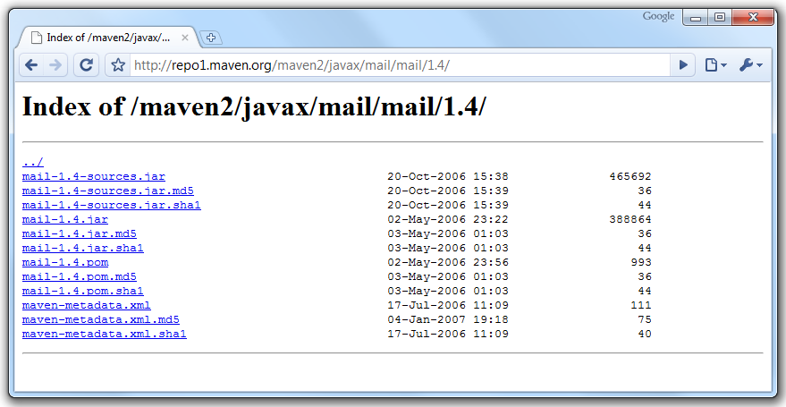
Le sous-répertoire dédié à JavaMail 1.4 sur le dépôt de bibliothèques.
En plus du fichier JAR de la bibliothèque attendue, nous trouvons de nombreux autres fichiers dans ce répertoire :
-
chaque fichier présent est accompagné de deux partenaires, avec respectivement l’extension .md5 et .sha. Il s’agit des empreintes de contrôle associées au fichier, que Maven exploitera pour s’assurer que le fichier n’a subi aucune altération au cours du téléchargement ;
-
un fichier porte le même nom que la bibliothèque avec le suffixe -sources. Il s’agit, comme on pourrait s’en douter, d’une archive des sources Java de la bibliothèque, ce qui pourra se montrer fort utile depuis votre environnement de développement intégré préféré pour utiliser un débogueur et parcourir le code de cette bibliothèque. Il pourrait également y avoir un autre fichier avec le suffixe -javadoc contenant la documentation technique de la bibliothèque ;
-
un autre fichier ayant le même nom que la bibliothèque avec l’extension .pom. Il s’agit bien de l’acronyme du Project Object Model que nous connaissons déjà. Chaque bibliothèque dans le dépôt Maven possède un fichier de ce type. Soit parce que la bibliothèque a été développée en utilisant Maven, soit parce qu’un fichier minimal a été écrit pour fournir une description de la bibliothèque aux utilisateurs de Maven ;
-
un fichier de métadonnées, propre à Maven comme son nom l’indique clairement.
Avis aux amateurs de casse-tête
Notre projet, issu d’un code antédiluvien auquel chacun est venu apporter sa contribution, est constitué de bric et de broc. Le répertoire lib devient un sacré fourre-tout, et c’est réellement compliqué de savoir pour quelle raison nous avons dû introduire commons-net-1.3.jar dans le projet. Aucune de nos classes ne fait référence à ce package !
Lorsqu’on fait appel à une bibliothèque pour prendre en charge certaines fonctions techniques, il est rare qu’elle se suffise à elle-même. Au même titre que notre projet, elle fait appel à d’autres bibliothèques spécialisées pour lui fournir des composants de haut niveau qui lui facilitent la tâche. Sa documentation précise, bien évidemment, les prérequis, ce qui nous a permis lors de son introduction dans le projet de connaître la liste de bibliothèques à ajouter pour avoir un ensemble fonctionnel. Certaines étaient déjà intégrées, et il a fallu nous assurer que la version demandée était compatible avec celle que nous utilisions et, éventuellement, faire la mise à jour qui s’imposait.
Les bibliothèques de haut niveau, telles que le framework Spring, introduisent dans le projet un nombre important de bibliothèques. Les choses se compliquent lorsqu’on désire changer de version pour profiter de nouvelles fonctionnalités ou d’un correctif. Nous devons retracer à la main la chaîne complète des bibliothèques pour identifier ce qui a changé, en nous fondant sur la documentation respective de chaque bibliothèque rencontrée pour connaître ses prérequis et ses éventuelles incompatibilités.
Pour nous épargner une migraine, les développeurs de bibliothèques ont heureusement pris la bonne habitude de ne jamais briser la compatibilité avec les versions précédentes sans un avertissement visible. La pratique la plus courante consiste à utiliser le numéro de version et à passer à une version « majeure » supérieure. Entre la version 1.4 et la version 2.0, il est assez probable que des modifications lourdes ont été apportées, limitant fortement la compatibilité, ce qui justifie le changement de version. Par contre, nous pouvons être plus confiants dans une migration vers une 1.4.2 ou une 1.5, et relâcher (dans la limite du raisonnable) notre surveillance pour passer d’une 1.4.2 à une 1.4.3.
Malgré cette pratique courante, la gestion de la chaîne de dépendances entre bibliothèques peut devenir réellement complexe, si on ne veut oublier personne en route. L’absence d’une bibliothèque peut provoquer des erreurs non évidentes et qui n’apparaîtront pas nécessairement au premier démarrage de l’application. Quant à lire attentivement la documentation de chaque bibliothèque, aucun développeur ne trouve le courage de le faire systématiquement.
La plupart du temps, on se contente donc de prendre la distribution binaire de la bibliothèque et de fusionner son répertoire lib avec celui du projet, en tentant d’identifier les doublons. Même si cela fonctionne relativement bien dans de nombreux cas, il est certain qu’on part au petit bonheur la chance en espérant ne rien laisser traîner en route.
L’ami de mon ami…
Que propose Maven pour cette situation ? Nous avons vu qu’il nous demande de déclarer les dépendances plutôt que de fournir nous-mêmes les binaires ; aussi, notre dernière option – prendre la distribution telle quelle et la fusionner avec notre répertoire lib – n’est pas applicable. Maven va-t-il nous obliger à éplucher la documentation de chaque bibliothèque utilisée ?
Maven est autrement plus subtil : jetez un coup d’œil quelques pages en arrière, sur le contenu du répertoire lib de notre projet initial :
\lib
\mail.jar
\activation.jar
\util.jar
Nous utilisons trois bibliothèques, la première est l’API JavaMail, la deuxième le Bean Activation Framework, nécessaire au bon fonctionnement de JavaMail, et enfin le mystérieux util.jar qui s’est avéré être Apache commons-io. Le fichier POM.xml ne compte que deux entrées <dependency>, là où notre projet nécessite trois bibliothèques. Jason aurait-il été un peu trop vite ?
Si vous jetez à nouveau un œil aux traces de téléchargement dont Maven nous a abreuvé au premier lancement, vous constaterez qu’il télécharge à la fois des fichiers POM et des fichiers JAR – comme s’il ne téléchargeait pas déjà assez de choses !
Ces fichiers POM, au même titre que celui de notre projet, décrivent les bibliothèques auxquelles ils sont associés. Pour JavaMail, l’archive mail-1.4.jar est ainsi accompagnée d’un mail-1.4.pom. Il s’agit bien d’un fichier Project Object Model, au même format XML que pour notre projet et qui comprend des déclarations comparables, en particulier des dépendances. C’est ici qu’est indiqué le lien entre JavaMail et le Bean Activation Framework. Cela permet à Maven de savoir que tout projet qui utilisera l’API JavaMail aura nécessairement besoin du JAR Activation. Si celui-ci a aussi des dépendances, la chaîne se poursuivra, jusqu’à ce qu’un graphe complet de bibliothèques interdépendantes soit construit.
On parle, pour ces données qui décrivent la bibliothèque, de « métadonnées ». Il s’agit d’une version compacte et normalisée au format POM des informations que nous aurions pu obtenir en lisant la documentation de la bibliothèque : sa licence, le site web qui l’héberge, et ses prérequis. L’exploitation automatisée de ces données permet à Maven de construire l’arbre des dépendances du projet, chaque nouvelle feuille pouvant, par ses propres métadonnées, introduire de nouvelles branches.
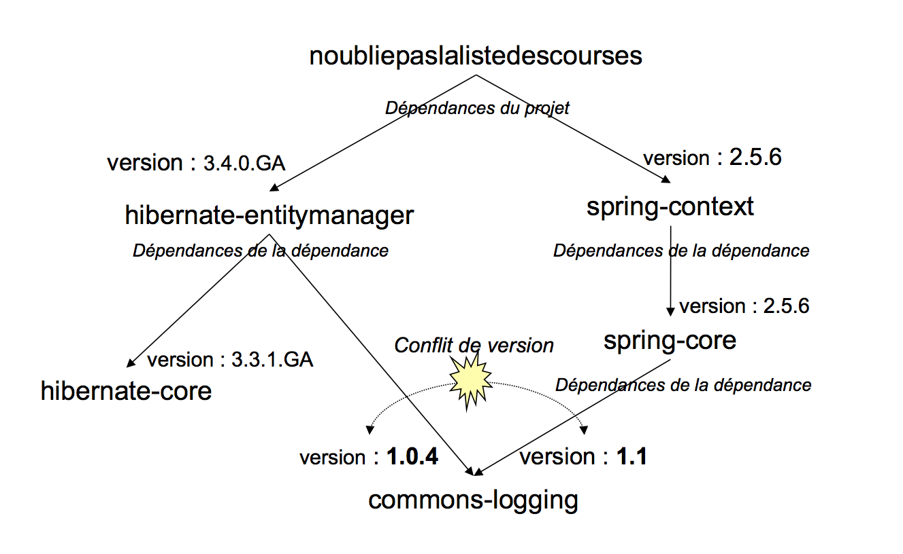
Arbre de dépendances transitives.
Cet arbre, extrêmement difficile à construire à la main et douloureux à maintenir, est analysé automatiquement par Maven à chaque exécution. Il s’assure que l’ensemble des bibliothèques nécessaires est présent et il construit ainsi le chemin de classes utilisé par le compilateur. Maven va également gérer les problèmes de conflit de versions, lorsque l’arbre fait apparaître plusieurs fois la même bibliothèque dans des versions différentes. Le mécanisme utilisé est cependant limité par la liberté laissée aux numéros de versions qui rend délicate une comparaison 100 % déterministe.
|
L’algorithme de résolution des conflits se fonde sur le principe de « proximité » : Maven compte, dans l’arbre des dépendances, combien de branches séparent la bibliothèque du projet ; celle qui est déclarée au plus près gagne. En cas d’égalité, l’ordre de déclaration des dépendances détermine le vainqueur : la première déclaration dans l’ordre du POM gagne. Ce comportement a été figé avec Maven 2.0.9 (les versions précédentes étaient non déterministes sur ce point, si vous les utilisez encore, mettez à jour en urgence votre boite à outils ! |
Cette dernière fonctionnalité finit par nous convaincre définitivement. Aussi, nous abandonnons nos différents scripts et adoptons les conventions de Maven pour la suite du développement de noubliepaslalistedescourses. Les développeurs sont nombreux à choisir Maven pour sa gestion des dépendances. N’oubliez pas, cependant, tous les points que nous avons déjà vus, et en quoi cela différencie Maven d’autres outils de construction de projet. Maven n’est pas juste un outil de gestion des dépendances, pour lequel il existe d’autres très bons outils comme Apache Ivy qui sont utilisables depuis un script Ant.
Ayez bien en tête les points forts et la philosophie de Maven, si vous envisagez de convertir un projet existant, car vous devrez probablement en repenser l’organisation, et pas juste écrire quelques fichiers POM pour déclarer vos dépendances.
Testons un peu

Vincent est un fanatique de la qualité logicielle, aussi a-t-il fait un gros travail d’évangélisation pour nous convaincre d’outiller notre projet de tests automatisés (nous en reparlerons au Chapitre 4). Ceux-ci permettent de contrôler à tout moment que les fonctionnalités de notre projet ne sont pas impactées par une modification, ce qui constitue une sécurité et un gain de temps appréciables.
Nous étions sur le point de décerner à Vincent le prix très convoité de « développeur du mois », quand nous avons rencontré un bogue étrange sur l’application, signalant l’absence de la classe org.junit.Assert dans l’environnement d’exécution. Voilà un problème bien curieux.
Après une rapide recherche, nous constatons qu’une erreur d’import dans une classe a fait utiliser org.junit.Assert#assertNotNull() à la place de la classe similaire de Spring org.springframework.util.Assert#notNull(). La gestion automatique des imports par notre environnement de développement intégré est bien pratique mais elle peut parfois avoir des effets pervers [7]. Comment se fait-il que cette erreur d’étourderie soit passée au travers des mailles de notre (excellent) suivi qualité ? Ou plutôt, comment se fait-il que notre outillage qualité ait pu ajouter des bogues à notre application ?
La réponse tient en un mot : dépendances. Notre gestion des dépendances à la hussarde, avec un répertoire lib dont nous utilisons tous les JAR sans distinction, ne sait pas différencier les bibliothèques nécessaires à la compilation de celles utilisées par les outils de test.
Nous pourrions fiabiliser les choses en séparant nos bibliothèques en /lib/runtime et /lib/test, mais Jason nous arrête net : que penser des API servlet, que nous utilisons pour compiler notre interface de gestion web (l’application a pas mal évolué depuis le prototype en ligne de commande !). Ces bibliothèques sont nécessaires pour compiler, mais elles ne doivent pas être intégrées à l’application pour respecter les règles JavaEE, car elles sont déjà présentes dans notre serveur d’application.
Cela se complique. Peut-être qu’avec un troisième sous-répertoire dans /lib… Stop ! Fini de jouer, interrompt Jason, avant de nous expliquer comment Maven traite de manière globale ce problème.
Les « scopes »
Notre problème vient de la nécessité d’associer à chaque dépendance du projet le contexte dans lequel elle doit intervenir. S’agit-il d’un élément indispensable à l’exécution du logiciel ? Est-il utilisé uniquement à des fins de test ? Doit-il être inclus dans l’application ou est-il intégré dans l’environnement d’exécution ?
La déclaration d’une dépendance Maven permet de définir un élément supplémentaire, le « scope » dans lequel la dépendance devra s’appliquer. Nous pouvons ainsi préciser que la bibliothèque jUnit n’est utilisée que durant la phase de test et que l’API servlet ne doit pas être intégrée dans notre archive web.
<dependency>
<groupId>javax.servlet</groupId>
<artifactId>servlet</artifactId>
<version>2.3</version>
<scope>provided</scope>
</dependency>
<dependency>
<groupId>junit</groupId>
<artifactId>junit</artifactId>
<version>4.7</version>
<scope>test</scope>
</dependency>Maven exploite ces données supplémentaires lorsqu’il exécute les commandes de construction du projet. Avec cette précision, jUnit ne sera pas inclus sur la liste des bibliothèques référencées par la commande de compilation. Maven aurait ainsi identifié notre bogue immédiatement.
Une arme à double tranchant
La facilité avec laquelle Maven permet de marier les bibliothèques, gérant dépendances et conflits, nous retire une (autre) sacrée épine du pied. Nous pouvons ainsi nous focaliser sur le développement du logiciel sans être freinés par d’ennuyeux problèmes techniques liés aux bibliothèques.
Notre application de gestion de liste de courses s’étoffe donc rapidement. Elle contient désormais des frameworks de toutes sortes comme Spring, Hibernate, Apache CXF ou Wicket pour prendre en charge les différents aspects de notre architecture. Maven construit pour nous l’archive web WAR de l’application que nous pouvons déployer sur notre serveur de test.
Un coup d’œil au répertoire WEB-INF/lib de l’application web nous fait cependant déchanter : plus de quarante bibliothèques s’y trouvent (qui a demandé tout ça ?). Il y a, par exemple, la bibliothèque Avalon, un framework ancien que plus personne n’utilise. Plus grave, nous trouvons dans ce répertoire des bibliothèques redondantes, comme un commons-logging-1.0.4 et un commons-logging-api-1.1. Voilà qui est bien troublant. Maven se serait-il emmêlé les pinceaux dans ses dépendances ?
La réponse à nos interrogations est cependant simple : Maven n’est pas un magicien et il ne peut gérer les dépendances entre bibliothèques que grâce aux métadonnées qu’il extrait des fichiers POM de chacune. La qualité de ces informations est déterminante pour obtenir une gestion fine et sans accrocs des dépendances. Il arrive malheureusement qu’une bibliothèque déclare des dépendances qui ne sont pas indispensables à son fonctionnement, ou bien propose plusieurs variantes. Dans ce cas, Maven a bien du mal à s’y retrouver.
La bibliothèque commons-logging en est une bonne illustration. Il s’agit d’une bibliothèque qui sert de façade pour passer de manière transparente d’un outil de log à un autre, par exemple de log4j au mécanisme intégré dans Java à partir de la version 1.4, ou encore à logkit, un autre outil comparable.
Le fichier POM de commons-logging déclare donc des dépendances vers toutes les bibliothèques de log qu’il supporte. La déclaration Maven correcte devrait être :
<dependency>
<groupId>log4j</groupId>
<artifactId>log4j</artifactId>
<version>1.2.12</version>
<optional>true</optional>
</dependency>
<dependency>
<groupId>logkit</groupId>
<artifactId>logkit</artifactId>
<version>1.0.1</version>
<optional>true</optional>
</dependency>
...L’élément <optional> permet de préciser la version de la bibliothèque pour laquelle le projet a été conçu, mais dont l’utilisation n’est pas nécessaire et ne correspond qu’à un cas particulier. Pour le malheur de nombreux utilisateurs, les développeurs de commons-logging ont cependant « oublié » de préciser ce caractère optionnel jusqu’à la version 1.1.1. C’est pour cette raison que nous retrouvons avalon-framework-4.1.3.jar dans nos bibliothèques.
|
La qualité des métadonnées a longtemps été un point faible de Maven, qui se corrige heureusement avec le temps et les nouvelles versions des bibliothèques incriminées. Les projets, même ceux qui n’utilisent pas Maven pour leurs propres besoins, sont aujourd’hui sensibilisés à ce besoin et prennent plus de soin à définir des dépendances fiables. |
Pour les versions anciennes cependant, une mise à jour n’est pas possible, car la politique de l’équipe qui gère le dépôt de bibliothèques de référence est de ne jamais modifier un POM qui a été publié, en raison du grand nombre de miroirs et de caches utilisé par la communauté : un fichier modifié signifierait qu’un miroir pourrait ne pas fournir la même version que le dépôt de référence, ce qui pourrait introduire des bogues insurmontables dans les projets. Sans compter que chaque utilisateur devrait manuellement purger son dépôt local pour forcer Maven à récupérer la version corrigée !
Maven possède heureusement une solution de contournement. Lorsque nous définissons une dépendance, nous pouvons exclure certains éléments de la transitivité. Ainsi, si nous voulons empêcher Spring – qui utilise commons-logging – d’introduire sur notre projet ce fameux JAR avalon-framework, nous pouvons écrire :
<dependency>
<groupId>org.springframework</groupId>
<artifactId>spring-beans</artifactId>
<version>2.5.6</version>
<exclusions>
<exclusion>
<groupId>avalon-framework</groupId>
<artifactId>avalon-framework</artifactId>
</exclusion>
</exclusions>
</dependency>Un autre problème que nous avons identifié est ce doublon commons-logging + commons-logging-api. Ce cas est plus subtil. Les développeurs de commons-logging proposent à leurs utilisateurs une série de classes qui masquent d’autres outils de log. Leur projet est donc séparé en une API et des adaptateurs vers chaque outil supporté. Pour éviter à certains d’utiliser par mégarde une classe d’un adaptateur et pas seulement celles de l’API, ils ont mis à disposition une archive JAR ne contenant que les classes utilisables par les développeurs : commons-logging-api.
Là où les choses se corsent, c’est que ces mêmes classes se retrouvent dans le commons-logging classique, et Maven n’est pas en mesure de le deviner. Aussi, de son point de vue, il s’agit de deux dépendances indépendantes pour lesquelles aucune règle de conflit ne peut s’appliquer.
Il n’existe malheureusement aucune solution miracle pour indiquer qu’une bibliothèque donnée est en réalité un sous-ensemble d’une autre, et pour gérer des conflits de version entre elles. Une gestion propre du développement de la bibliothèque aurait dû aboutir à la séparation de commons-logging-api et d’un second artefact complémentaire, mais pas redondant. À vouloir répondre aux demandes contradictoires des utilisateurs (un seul JAR avec tout le nécessaire, des JAR focalisés sur un aspect donné…) le projet perd en cohésion et les utilisateurs rencontrent finalement des difficultés qu’on aurait dû leur épargner.
Nous avons vu que les <exclusions> permettent de corriger ces erreurs de métadonnées. Reste à faire le tri dans nos dépendances pour trouver ces erreurs. Dans notre cas, nous voulons conserver commons-logging et exclure commons-logging-api, mais aucune solution automatique n’est possible.
L’analyse des dépendances
Avec le nombre de frameworks que nous avons intégrés à l’application, il devient difficile de savoir lequel introduit quelle dépendance. Même si les exclusions peuvent permettre de corriger le tir, encore faut-il savoir sur quelles dépendances les déclarer.
Maven propose un outillage complet pour analyser nos dépendances, via les plugins dependency et project-info-reports.
La commande mvn dependency:list permet d’établir la liste des
dépendances du projet, soit l’équivalent de notre répertoire
WEB-INF/lib. Elle sera utile pour vérifier l’impact de nos exclusions au
fur et à mesure que nous les déclarerons.
La commande project-info-reports:dependencies est analogue à la précédente mais elle génère un fichier HTML contenant la liste des dépendances.
Plus intéressante, mvn dependency:tree trace un arbre, où chaque branche
est une dépendance qui introduit par transitivité d’autres dépendances.
[INFO] [dependency:tree] [INFO] fr.noubliepaslalistedescourses:noubliepaslalistedescourses:war:1.0.0-SNAPSHOT [INFO] +- org.apache.cxf:cxf-rt-frontend-jaxws:jar:2.1.4:compile [INFO] | +- org.apache.geronimo.specs:geronimo-jaxws_2.1_spec:jar:1.0:compile [INFO] | +- org.apache.geronimo.specs:geronimo-ws-metadata_2.0_spec:jar:1.1.2:compile [INFO] | +- asm:asm:jar:2.2.3:compile [INFO] | +- org.apache.cxf:cxf-rt-bindings-xml:jar:2.1.4:compile [INFO] | +- org.apache.cxf:cxf-rt-frontend-simple:jar:2.1.4:compile [INFO] | +- org.apache.cxf:cxf-rt-ws-addr:jar:2.1.4:compile [INFO] | +- javax.xml.soap:saaj-api:jar:1.3:compile [INFO] | \- com.sun.xml.messaging.saaj:saaj-impl:jar:1.3.2:compile [INFO] | \- javax.xml.ws:jaxws-api:jar:2.1:compile [INFO] | +- javax.annotation:jsr250-api:jar:1.0:compile [INFO] | \- javax.jws:jsr181-api:jar:1.0-MR1:compile [INFO] +- org.springframework:spring-aspects:jar:2.5.6:compile [INFO] | \- org.aspectj:aspectjweaver:jar:1.6.2:compile [INFO] +- org.hibernate:hibernate-annotations:jar:3.4.0.GA:compile [INFO] | \- org.hibernate:ejb3-persistence:jar:1.0.2.GA:compile ...
L’analyse de cet arbre permet d’identifier les bibliothèques qui font appel à commons-logging-api et d’exclure cet intrus de notre projet.
Ces commandes bien pratiques restent assez spartiates, cantonnées dans la console. L’intégration de Maven dans les environnements de développement en offre une version nettement plus ergonomique. La Figure 02-03 présente le plugin Maven pour Eclipse (m2eclipse) et sa fenêtre d’analyse des dépendances. Si on sélectionne une dépendance dans la zone de droite, il nous indique tous les chemins de dépendance qui y mènent. Un simple clic permet de placer les exclusions qui s’imposent sans éditer manuellement le fichier POM.
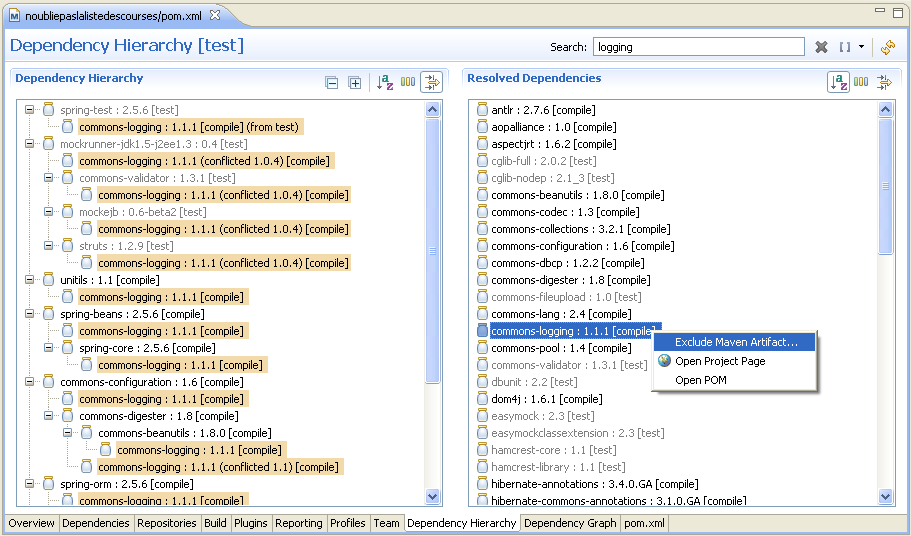
Plugin Maven pour Eclipse.
Dépôts et dépendances
En rejoignant le projet, Emmanuel apporte dans sa musette bon nombre d’idées innovantes et de petites expériences amusantes à nous présenter. Entre autre, Emmanuel a testé un outil rigolo, une implémentation de JCR sur la base NoSQL Cassandra. Rien que l’assemblage que cela représente attise notre curiosité. Place à la démo !
Oups :
[INFO] ------------------------------------------------------------------------ [INFO] Building demo démo 1 [INFO] ------------------------------------------------------------------------ Downloading: http://repo1.maven.org/maven2/org/geeks/jcr-on-cassandra/1.8.0.10/jcr-on-cassandra-1.8.0.10.pom [WARNING] The POM for org.geeks:jcr-on-cassandra:jar:1.8.0.10 is missing, no dependency information available Downloading: http://repo1.maven.org/maven2/org/geeks/jcr-on-cassandra/1.8.0.10/jcr-on-cassandra-1.8.0.10.jar [INFO] ------------------------------------------------------------------------ [INFO] BUILD FAILURE [INFO] ------------------------------------------------------------------------
« WTF ? » comme on dit outre-Atlantique [8], ce que nous ne traduirons pas ici par respect pour nos lecteurs et la qualité de ce récit. Maven s’acharne – et échoue – à télécharge la bibliothèque jcr-on-cassandra :
[ERROR] Failed to execute goal on project demo: + Could not resolve dependencies for project demo:demo:jar:1: Could not find artifact org.geeks:jcr-on-cassandra:jar:1.8.0.10 in central
Emmanuel vérifie trois fois, la bibliothèque jcr-on-cassandra dont il veut nous montrer le potentiel est bien dans son dépôt local, pourtant – rien à faire – Maven fait la sourde oreille. Il est temps de faire appel à nos experts…
LES EXPERTS
Arnaud vient faire un prélèvement ADN dans le projet d’exemple qui a inspiré Emmanuel pour sa démo. Il en extrait une déclaration de dépôt http://repository.geek.org/ qu’il place sous scellés pour la suite de l’enquête.
<repository>
<id>geeks.org</id>
<url>http://repository.geeks.org</url>
<repository>
Nicolas fouille le dépôt local d’Emmanuel à la recherche d’indices. Sous sa lampe à ultraviolet, le Luminol met en évidence des traces de métadonnées. Un échantillon est prélevé pour analyse.
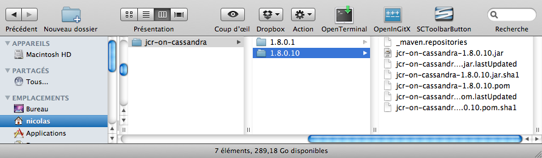
Contenu du dépôt local pour la bibliothèque jcr-on-cassandra.
Au labo, Vincent analyse nos indices. Le fichier maven.repositories attire particulièrement son attention :
#NOTE: This is an internal implementation file, its format can be changed without prior notice. #Mon Mar 07 16:16:01 CET 2011 jcr-on-cassandra-1.8.0.10.jar>geek.org= jcr-on-cassandra-1.8.0.10.pom>geek.org=
Le compte-rendu de nos experts fournit l’explication.
Dépôts et dépendances
Maven utilise par défaut un dépôt nommé central, qui héberge un vaste choix de bibliothèques Open Source. Pour une grande majorité de développements, ce dépôt sera suffisant pour nous fournir toutes les dépendances nécessaires. Il arrive cependant régulièrement qu’un projet ne contribue pas à ce dépôt et préfère héberger son propre dépôt interne, souvent en prétextant plus de simplicité de mise en œuvre ou une meilleure maîtrise de ses infrastructures.
Pour accéder à un dépôt de ce type, Maven nous demande de l’ajouter explicitement à notre POM, sous forme d’un bloc <repository> comme celui qu’Arnaud a identifié dans le projet d’exemple de jcr-on-cassandra :
<repository>
<id>identifiant unique du dépôt</id>
<url>emplacement du dépôt, en général via http</url>
<layout>format du dépôt, « legacy » pour les dépôts Maven 1 antédiluviens, non supportés par Maven 3</url>
</repository>Le dépôt local de Maven 3 n’est pas juste un cache d’accès à Internet. Il permet aussi à Maven de tracer l’origine de chaque dépendance, à savoir d’où elle a été téléchargée. Notre projet ne déclarant pas l’URL geek.org, les bibliothèques associées ne sont pas accessibles pour notre build, même si elles sont présentes physiquement.
Après avoir ajouté la déclaration de dépôt manquante, Emmanuel peut enfin lancer sa démo et nous présenter toutes ses idées.
|
Maven 2 ne comporte pas ce mécanisme et n’aurait pas bronché. Cela aurait évité à Emmanuel des soucis pendant sa démonstration, mais le problème serait apparu plus tard lorsqu’il aurait partagé son projet avec le reste de l’équipe. Maven 3 est globalement plus strict, pour le bien de chacun sur le long terme. |
Conclusion
La gestion des bibliothèques et de leurs dépendances est une fonctionnalité de Maven très régulièrement mise en avant. Manuellement, cette gestion peut en effet devenir un réel casse-tête, et la réponse apportée par Maven est à la fois élégante et évolutive. Sur de gros projets, nous avons vu que celle-ci peut cependant déraper et introduire involontairement des bibliothèques inutiles ou redondantes mais, heureusement, Maven permet de corriger ces problèmes. La qualité des métadonnées est donc primordiale, pensez-y si vous participez à un projet qui diffuse ses binaires sur un dépôt Maven.
Chapitre 3 : Un peu plus que compiler
Jusqu’à présent, Maven s’est montré plutôt efficace pour traiter les difficultés d’organisation de notre projet, en proposant des conventions et des mécanismes automatisés qui nous évitent de prendre des chemins hasardeux. Nous allons voir maintenant comment il poursuit cet effort lorsque notre projet « dévie » progressivement de l’exemple si simple que nous avons utilisé pour l’instant.
Êtes-vous prêt pour Java 7 ?
Le prototype à l’origine de notre projet a été écrit il y a belle lurette et utilise la syntaxe Java 1.2. Maven n’a pas de grande difficulté pour le compiler, ce qui aurait été un comble. Nous sommes cependant au xxie siècle, et utilisons Java 7 comme environnement d’exécution. Nous avons donc tous un OpenJDK 7 à jour installé sur nos postes de développement.
Confiants dans Maven qui, pour l’instant, nous apporte entière satisfaction, nous retravaillons un peu le code historique de gestion des listes de courses pour bénéficier d’une syntaxe moderne, alliant annotations, généricité, autoboxing et arguments variables. Devant un code qui semble nettement plus moderne, nous lançons fièrement la compilation par Maven, avant de tomber sur un message d’erreur fort désagréable :
[INFO] ------------------------------------------------------------- [ERROR] COMPILATION ERROR : [INFO] ------------------------------------------------------------- [ERROR] D:\noubliepaslalistedescources\src\main\java\org\noubliepaslalistedescources\model\MesCourses.java:[3,66] diamond operator is not supported in -source 1.5 [INFO] 1 error
Le « diamond operator » [9], c’est en effet une évolution du langage Java proposée par Java 7. Maven ne serait-il compatible qu’avec Java 5 ? Les choses sont même bien pires que cela si on essaie de compiler notre projet avec Maven 2 :
[INFO] Compilation failure D:\noubliepaslalistedescources\src\main\java\org\noubliepaslalistedescources\model\MesCourses.java:[57,5] annotations are not supported in -source 1.3 (use -source 5 or higher to enable annotations)
Pardon ? Maven 2 est compatible uniquement avec Java 1.3 ? Pas de panique, les choses sont plus subtiles que cela et, heureusement pour nous, moins définitives. Gardez à l’esprit que Maven est un projet qui a déjà de nombreuses années et une très large base d’utilisateurs. L’une des préoccupations majeures des développeurs est d’assurer une construction de projet qui soit totalement reproductible, quel que soit l’environnement de développement. Cette exigence est essentielle pour que vous puissiez bâtir vos projets sur une base irréprochable.
Maven a été conçu sur la base de la plateforme Java 1.4, version « moderne » de l’époque. Sur ce JDK, les valeurs par défaut des options source et target du compilateur sont respectivement 1.3 et 1.2 [10]. Par contre, sur le JDK Java 6, cette valeur par défaut est « 1.6 » [11] pour les deux, et source 1.6, target 1.7 pour le JDK 7 ; autant dire que le JDK utilisé peut fortement influencer le résultat de notre compilation !
Plutôt que de laisser cette option sans valeur déterministe, ce qui aurait rendu la construction du projet dépendante de l’environnement utilisé par un développeur, le compilateur utilisé par Maven 2 est configuré, par défaut, pour cette valeur 1.3, et pour Maven 3 par défaut à 1.5 (voir notre note un peu plus loin).
Notre code Java 7 n’a donc aucune chance d’être accepté par le compilateur. Le choix de Maven a été de s’assurer que le projet sera construit de la même façon quel que soit le JDK utilisé, sur la base de son exigence minimale qui est le JDK 1.4. Ce choix peut sembler archaïque, mais c’est la seule façon de gommer les différences qui existent entre les versions de Java.
Comment modifier ce comportement protecteur mais pénalisant, qui vise juste à nous éviter des déconvenues dues aux inconsistances entre versions du JDK ? Nous avons vu que Maven associe à tout projet un patron de référence, regroupant les étapes applicables à la très grande majorité des projets, dont la compilation des sources .java. Cette convention nous évite de devoir explicitement indiquer à Maven quand et comment effectuer la compilation. Allons-nous devoir faire machine arrière ? Non, car Maven prévoit également la possibilité de reconfigurer ces étapes standard, lorsque leur fonctionnement par défaut ne suffit plus.
Plugins
Maven confie chaque opération élémentaire de la construction du projet à un plugin, un fragment de logiciel qui se spécialise dans une tâche donnée. La compilation est un exemple de plugin, mais pensez aussi à l’assemblage sous forme d’un JAR ou à l’inclusion de fichiers de ressources, etc. Chaque plugin propose un certain nombre d’options et de paramètres qui permettent d’ajuster son fonctionnement, avec des valeurs par défaut qui sont choisies pour coller au mieux aux conventions de Maven et à une utilisation standard. Le plugin de compilation (compiler) utilise les options source et target avec comme valeurs par défaut 1.3 et 1.2, correspondant à la plateforme Java de référence utilisée par Maven.
|
Plus précisément, la version du plugin compiler qui est utilisée par Maven sans indication de votre part utilise les options source=1.3 et target=1.2 par défaut. À partir de la version 2.3, le plugin compiler prend pour valeurs par défaut source=1.5 et target=1.5, ce qui est le cas si vous utilisez Maven 3. |
Cependant, afin que votre EDI détecte correctement cette configuration, nous vous encourageons à toujours définir explicitement ces valeurs.
La modification des options par défaut d’un plugin s’effectue dans le fichier POM du projet, au sein de son bloc <build> :
<build>
<plugins>
<plugin>
<groupId>org.apache.maven.plugins</groupId>
<artifactId>maven-compiler-plugin</artifactId>
<version>2.3.2</version>
<configuration>
<source>7</source>
<target>7</target>
</configuration>
</plugin>
</plugins>
</build>Chaque plugin peut ainsi être reconfiguré. Un plugin, comme tout artefact manipulé par Maven, est identifié par le triplet [identifiant de groupe, identifiant d’artefact, version]. Nous indiquons ici le plugin de compilation dont nous désirons ajuster le fonctionnement. Le bloc <configuration> permet de lui passer des valeurs qui vont remplacer celles par défaut. Chaque plugin ayant son propre paramétrage, nous devons consulter la documentation du plugin [12] pour connaître toutes les options disponibles (voir Figure 03-01).
Figure 03-01 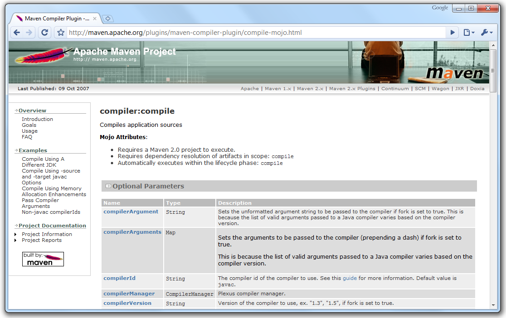
Le site de documentation du plugin compiler.
Comme vous pouvez le constater, le plugin dispose d’un grand nombre de paramètres, qui lui permettent de répondre sans difficulté aux cas de figure les plus délicats. En plus des options « standard » de JavaC, vous pouvez par exemple utiliser un compilateur alternatif comme celui d’Eclipse JDT si votre projet nécessite cette option pour une raison quelconque. Dans notre cas, seuls les paramètres source et target sont nécessaires pour obtenir le résultat attendu, les autres paramètres pouvant conserver leur valeur par défaut.
|
Chaque plugin Maven dispose d’un site de documentation, en particulier les plugins standard, sur http://maven.apache.org/plugins/. La documentation fournit une description de chaque option, les valeurs par défaut utilisées et, dans la plupart des cas, quelques exemples de configuration pour les utilisations les plus fréquentes. Ces sites documentaires sont générés à partir du code source du plugin et diffusés en même temps que lui. Ils sont donc toujours synchrones avec la version courante du plugin. |
Attention cependant, car le site web généré correspond généralement à la version en cours de développement du plugin, aussi soyez attentif à l’indication « @since » ajoutée à certains paramètres.
Propriétés
La modification du fonctionnement du plugin de compilation nous permet enfin de valider la syntaxe Java 7 que nous avons introduite dans le projet. Ce besoin tout simple a cependant nécessité une configuration significative, ce qui peut vous laisser perplexe : pas moins de 10 lignes dans le fichier POM.xml, là ou deux attributs suffisent dans un script Ant !
Ce principe de reconfiguration des plugins est la version « lourde » de la solution, même si elle a l’avantage de nous ouvrir les portes de toutes les options de configuration. Il existe cependant une autre voie, plus légère bien qu’ayant certaines limites. La consultation de la page documentaire du plugin de compilation révèle que les paramètres source et target sont associés à une expression, respectivement maven.compiler.source et maven.compiler.target. De quoi s’agit-il ?
Les valeurs par défaut utilisées par un plugin peuvent être modifiées via un élément <plugin> dans le POM, mais aussi par l’exploitation d’un mécanisme de Maven appelé « interpolation », qui consiste à évaluer au moment de l’exécution les valeurs à utiliser en se fondant sur des « expressions ». Celles-ci peuvent être comparées aux mécanismes utilisés dans les applications par l'expression language des JSP. La chaîne maven.compiler.source est évaluée juste avant que Maven n’utilise le plugin, en fonction de l’environnement dans lequel il s’exécute. En particulier, cette notion d'« environnement » inclut les variables système passées sur la ligne de commande avec l’option -D. Nous pouvons donc activer la compilation Java 7 en lançant la commande :
mvn compile -Dmaven.compiler.source=7 -Dmaven.compiler.target=7
Nous savons donc comment modifier à la demande la configuration utilisée par le plugin de compilation sans modifier le fichier POM. Cela peut être très utile, en particulier pour modifier très ponctuellement le comportement de Maven sans toucher à la configuration. Mais pour notre problème de compilation Java 7, le prix à payer est lourd : la ligne de commande que nous devons taper dans une console s’allonge dangereusement !
Comme les développeurs de Maven sont un peu fainéants comme tout bon développeur, ils ont pensé à une solution intermédiaire pour nous éviter de telles lignes de commande, sans pour autant devoir ajouter des dizaines de lignes à notre fichier POM : les propriétés. Il s’agit tout simplement de figer les variables d’environnement dans le fichier POM, à l’intérieur d’un bloc <properties>. La valeur indiquée sera prise en charge exactement de la même manière par l’interpolation, tout en étant encore modifiable via le -D sur la ligne de commande. Cela permet de définir en quelque sorte des valeurs par défaut applicables sur le projet et sur lui seul :
<properties>
<maven.compiler.source>7</maven.compiler.source>
<maven.compiler.target>7</maven.compiler.target>
</properties>La plupart des plugins Maven proposent cette option pour leurs principaux paramètres de configuration ; cependant, cette pratique n’est pas généralisée à tous les paramètres ni à tous les plugins. Il s’agit plus d’une bonne pratique que les développeurs de plugins devraient connaître pour satisfaire au mieux leurs utilisateurs. Dans le cas contraire, seule l’option « lourde » reste envisageable.
Quand Java ne suffit plus
Bien que nous ayons introduit la syntaxe Java 7 dans notre code, Arnaud est loin d’être satisfait par sa lisibilité. Selon lui, de nombreux passages techniques pourraient être nettement plus simples si nous… renoncions à la syntaxe Java ! Après vérification du contenu de sa tasse de café, nous comprenons qu’Arnaud est tout à fait à jeun (il faut dire qu’il est tout juste 9 heures du matin) et tout à fait sérieux. Il évoque, en fait, avec un savant effet de suspens, la possibilité d’utiliser le langage Groovy pour coder notre application, ou tout du moins certains composants qui s’y prêtent très bien.
|
Groovy est un langage dynamique qui s’exécute sur la machine virtuelle Java, au même titre que jRuby ou Jython par exemple. L’environnement d’exécution Java actuel ne se limite plus au seul langage de programmation Java et accueille un nombre croissant de langages via des interpréteurs ou des compilateurs spécialisés. Vous pouvez par exemple développer une application en PHP et l’exécuter sur un serveur Java ! Ce qui pourrait sembler a priori un mariage contre nature ouvre en réalité des perspectives étonnantes, en fonction des points forts de certains langages dans des domaines précis, ou tout simplement des développeurs dont vous disposez. |
Quelques exemples bien choisis (Arnaud a bien préparé son coup) nous convainquent rapidement des améliorations que Groovy apporterait à notre projet. Reste un petit écueil : le « projet type » utilisé par Maven pour définir les tâches exécutées lors de la construction d’un projet n’inclut certainement pas l’exécution du compilateur Groovy ! La grande majorité des projets Java n’utilisent pas ce langage aujourd’hui. Il n’y a donc aucune raison pour que Maven en ait tenu compte nativement.
En consultant la documentation en ligne de Groovy [13], nous constatons cependant qu’un plugin Maven a été développé. Il suffit de le déclarer dans le POM du projet pour obtenir cette nouvelle étape dans la construction de notre binaire. La notion de plugin (greffon) prend alors tout son sens : pour prendre en charge le besoin X, il suffit d’ajouter au projet le plugin X. L’approche déclarative de Maven économise la déclaration des opérations réalisées par le plugin et la façon dont elles s’intègrent dans le projet.
Où placer les sources
Nous l’avons déjà dit, les conventions de Maven sont un élément décisif dans sa capacité à prendre en charge de manière automatisée le projet. En particulier, la structure type d’un projet Maven est la suivante (voir Figure 03-02) :
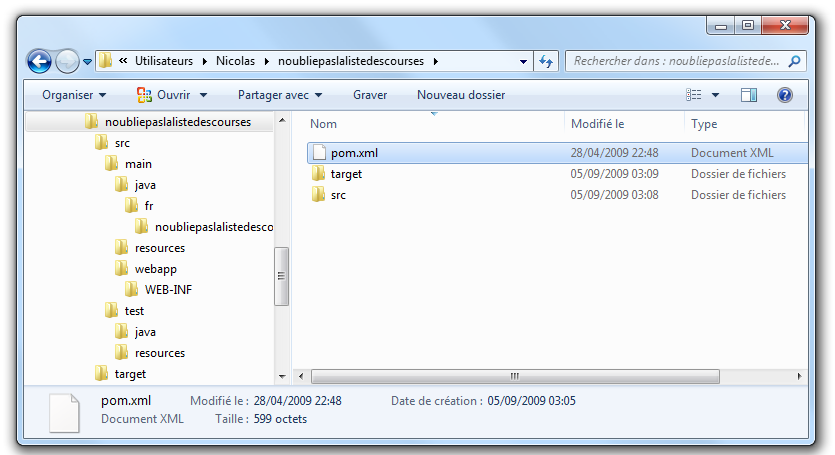
La structure de base d’un projet Maven.
La logique est plutôt simple : à la racine, on trouve le fichier POM qui gouverne toute la gestion Maven du projet. L’ensemble des sources est placé dans un répertoire src, tandis qu’un répertoire target sert de zone temporaire pour toutes les opérations réalisées sur le projet. Cela a au moins l’avantage de faciliter grandement la configuration de votre gestionnaire de code source ! Il suffit d’exclure target (en plus des fichiers spécifiques de votre EDI) et vous êtes sûr de ne pas inclure par mégarde des fichiers de travail qui n’ont pas à être partagés.
Sous le répertoire des sources, Maven effectue un découpage explicite entre ce qui fait partie du projet – ce que vos utilisateurs vont utiliser – et ce qui sert d’outillage de test. Deux sous-répertoires, main et test, marquent cette distinction.
Enfin, dans chacune de ces branches, un dernier niveau de répertoire sépare les fichiers sources par langage : Java pour le code source de vos classes java, resources pour les fichiers de ressources (configuration XML ou fichiers de propriétés…), webapp pour les fichiers statiques d’une application web.
Le plugin Groovy ajoute son lot de conventions qui viennent compléter celles déjà définies par Maven. Les fichiers source Groovy ont ainsi leur propre répertoire de code source sous src/main/groovy. Il en est de même pour les tests écrits dans ce langage avec src/test/groovy. Ces conventions sont alignées sur celles de Maven pour obtenir un ensemble cohérent. D’autres plugins qui apportent le support de langages autres que Java suivront la même logique.
Ajouter un plugin
Ces répertoires créés pour accueillir le code, il nous reste à déclarer le plugin Groovy dans notre POM. Sur l’exemple du plugin compiler, nous ajoutons :
<build>
<plugins>
<plugin>
<groupId>org.codehaus.groovy.maven</groupId>
<artifactId>gmaven-plugin</artifactId>
<version>1.0</version>
<configuration>
<!-- les valeurs par défaut nous conviennent très bien :) -->
</configuration>
</plugin>
</plugins>
</build>|
Vous constaterez, si vous utilisez un éditeur XML, que l’élément version n’est pas obligatoire pour les plugins. Le comportement de Maven consiste alors à prendre la « dernière version stable disponible ». C’est une fausse bonne idée ! En effet, si vous reprenez une version de votre projet d’il y a six mois pour une correction urgente, vous risquez de ne pas utiliser le même plugin que prévu initialement. Si la compatibilité ascendante n’est pas parfaite, attention à la casse. Pour cette raison, il est fortement recommandé de toujours spécifier la version de vos plugins. À partir de Maven 2.0.9, ceux qui sont utilisés par défaut dans le build Maven ont une version prédéfinie en interne pour éviter ce piège. |
Au lancement de Maven, nous constatons avec plaisir le téléchargement de fichiers POM et JAR associés au plugin Groovy. Voici une autre explication de la dépendance de Maven à un accès Internet : les plugins, comme les bibliothèques, sont téléchargés à la demande depuis un dépôt de bibliothèques. L’installation de Maven est ainsi limitée à un noyau et tous les plugins qui lui permettent d’exécuter des tâches sont obtenus au moment de sa connexion au réseau, d’où les interminables téléchargements lors de la première exécution !
Cependant, nos sources Groovy ne sont pas prises en compte, et les traces d’exécution de la console ne laissent entendre aucun traitement particulier de ce langage. Nous avons dû brûler une étape…
Plugin et tâches
La notion de plugin permet à Maven d’isoler, dans un sous-projet dédié la gestion, des opérations élémentaires qui sont utilisées pour construire divers projets. Cela ne signifie pas pour autant qu’un plugin n’est concerné que par un seul traitement. Si l’on reprend l’exemple du plugin de compilation, celui-ci doit compiler le code source Java de l’application, mais aussi le code source des tests. Un plugin regroupe donc des tâches élémentaires qui partagent un même domaine.
Chaque plugin définit ainsi plusieurs tâches (ou goals) et il ne suffit pas de déclarer un plugin pour ajouter un traitement à notre projet ; nous devons également préciser lequel (ou lesquels) de ces traitements unitaires nous souhaitons intégrer à la construction du projet.
<build>
<plugins>
<plugin>
<groupId>org.codehaus.groovy.maven</groupId>
<artifactId>gmaven-plugin</artifactId>
<version>1.0</version>
<executions>
<execution>
<goals>
<goal>compile</goal>
</goals>
</execution>
</executions>
</plugin>
</plugins>
</build>Un élément <execution> permet de définir les tâches définies par le plugin considéré que Maven devra exécuter.
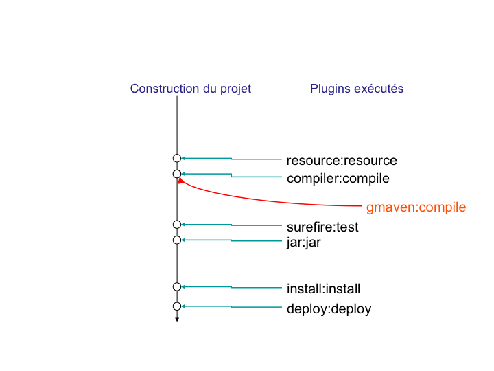
Le cycle de vie du projet et les plugins qui viennent s’y greffer.
Miracle, nous pouvons compiler notre code source Groovy. Sortez la boule à facettes !
Compiler… en JavaScript
Avec ce putsch de Groovy sur le projet, Arnaud a réussi un tour de force. Pour ne pas le laisser s’endormir sur ses lauriers, Nicolas relève le défi de secouer une nouvelle fois nos petites habitudes.
Notre application dispose d’une interface web qui permet de saisir sa liste de courses depuis n’importe quel navigateur. C’est le cas de très nombreuses applications J2EE, qui exploitent le navigateur comme environnement universel pour exécuter une application sans que vous deviez rien installer sur votre ordinateur. Il est d’ailleurs très probable que vous consultiez le solde de votre compte bancaire de cette façon !
Les premiers jets de cette « application web » fonctionnent mais sont assez peu sexy. Rien à voir avec ces sites hauts en couleur et en effets visuels qui parsèment le Web et qui révolutionnent notre utilisation d’Internet. Nicolas s’attarde donc quelques instants sur le tableau blanc que nous utilisons pour griffonner nos dernières idées… et le tableau est rapidement noir de petits croquis, de flèches en tout genre et de notes sur le comportement idéal de notre site web.
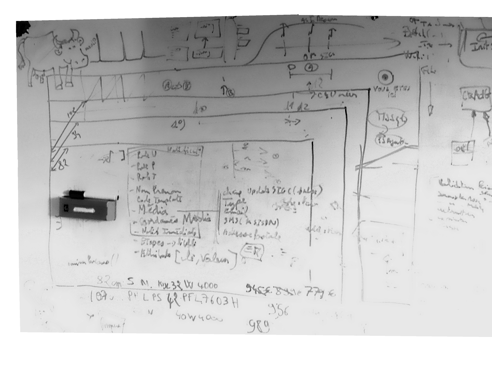
Notre document officiel de spécifications pour l’application web.
Les réactions ne tardent pas : c’est bien joli, mais qui se sent les épaules de faire tout ça ? Et avec quel outil ? Nous n’y connaissons rien en JavaScript, le langage utilisé sur les navigateurs web pour animer les pages. Avant que la surprise ne laisse la place à une réaction épidermique face à l’ampleur de la tâche, Nicolas lâche son arme secrète : GWT.
|
Google Web Toolkit (GWT) est un outil développé par Google pour offrir aux développeurs Java les portes du Web. Capable de traduire en JavaScript du code source Java, il permet à ces derniers de conserver le confort de leur langage préféré et de leur outillage habituel, tout en développant des applications web qui réagissent au moindre mouvement de souris. La prouesse technique est impressionnante, et les portes que cela ouvre aux développeurs Java ne font encore que s’entrouvrir. |
Une petite démonstration sur le PC portable qui traînait comme par hasard sur un coin de table fait taire les derniers incrédules. Effectivement, développer pour le Web n’est finalement pas si compliqué que ça. Reste à faire tourner cet ovni issu de la galaxie Google dans un projet Maven ! Heureusement pour nous, d’autres ont eu le même souci et un plugin est disponible pour marier GWT avec notre projet.
<plugin>
<groupId>org.codehaus.mojo</groupId>
<artifactId>gwt-maven-plugin</artifactId>
<version>2.2.0</version>
<executions>
<execution>
<goals>
<goal>compile</goal>
<goal>generateAsync</goal>
</goals>
</execution>
</executions>
<configuration>
<extraJvmArgs>-Xmx512M</extraJvmArgs>
</configuration>
</plugin>Comme pour l’intégration de Groovy, nous n’avons au niveau du projet Maven qu’à ajouter l’identifiant exact du plugin utilisé, définir une éventuelle configuration si les valeurs par défaut ne nous conviennent pas, et préciser dans une <execution> quelles tâches doivent être exécutées lors de la construction du projet.
En consultant la documentation du plugin GWT [14], nous découvrons quelque chose qui nous intéresse : la tâche Eclipse du plugin propose de générer automatiquement des scripts de lancement pour exécuter directement l’application web depuis notre environnement de développement – au moins pour ceux d’entre nous qui utilisent Eclipse !
Nous ajoutons cette tâche à notre execution, et nous lançons en toute
confiance un mvn install :
... [INFO] ----------------------------------------------------------------- [INFO] BUILD SUCCESSFUL [INFO] ----------------------------------------------------------------- [INFO] Total time: 50 seconds
Voilà qui est encourageant… mais pas grand-chose de visible concernant notre application web ! Rien d’étonnant à cela : le lancement du serveur web pour faire une démo de notre IHM n’est pas une étape standard de la construction d’un projet. Comment Maven pourrait-il connaître notre intention et déterminer les étapes nécessaires à la construction du projet ?
Invoquer un plugin
Les commandes que nous avons passées jusqu’ici étaient de la forme mvn xxx, avec pour xxx la phase de construction du projet que nous désirerions atteindre, par exemple compile. Maven permet également d’invoquer directement un plugin, et lui seul, via une forme différente de la ligne de commande :
mvn gwt:run
Ici, nous ne demandons pas la construction du projet, mais l’exécution isolée de la tâche run du plugin GWT. Il s’agit d’ailleurs d’une version contractée de la commande complète :
mvn org.codehaus.mojo:gwt-maven-plugin:2.2.0:run
Le raccourci est appréciable, mais il vaut mieux garder en tête cette syntaxe qui pourra parfois se révéler indispensable.
L’invocation directe d’un plugin n’est généralement utile que pour des tâches annexes du projet, comme ici le lancement du serveur web de développement de GWT. La plupart des plugins et des tâches qu’ils définissent sont prévus pour se greffer dans le cycle de construction du projet. Il est donc inutile d’invoquer directement une tâche d’un plugin qui n’a pas été prévu dans ce sens ; d’ailleurs, cela aboutirait dans la majorité des cas à une erreur.
Cette nouvelle découverte nous amène à nous demander ce qui différencie dans ce plugin GWT la tâche run de la tâche compile. La première s’exécute seule par invocation directe, la seconde sait se greffer dans le cycle de construction du projet. Mais comment fait Maven pour déterminer quand l’exécuter ?
Cycle de vie
Ce que nous avons jusqu’ici qualifié de « projet type » utilisé par Maven pour identifier et enchaîner les tâches de base d’un projet Java est en réalité composé de deux éléments : le cycle de vie d’un côté, et les plugins et tâches qui y sont attachés de l’autre.
Le cycle de vie est une série de phases ordonnées qui doit couvrir les besoins de tout projet. Ces phases sont purement symboliques et ne sont associées à aucun traitement particulier, mais elles permettent de définir les étapes clés de la construction du projet. On retrouve ainsi :
Tableau 3.1 : Le cycle de vie défini par Maven
Phase |
Description |
validate |
validation du projet Maven |
initialize |
initialisation |
generate-sources |
génération de code source |
process-resources |
traitement des fichiers de ressources |
compile |
compilation des fichiers sources |
process-classes |
Posttraitement des fichiers binaires compilés |
test-compile |
compilation des tests |
test |
exécution des tests |
package |
assemblage du projet sous forme d’archive Java |
install |
mise à disposition de l’archive sur la machine locale pour d’autres projets |
deploy |
mise à disposition publique de l’archive java |
Il s’agit d’une liste simplifiée : le cycle complet définit de nombreuses phases intermédiaires, dont vous trouverez la description complète dans la documentation en ligne de Maven [15].
Quels que soient le projet et ses particularités, tout traitement réalisé pour le « construire » viendra naturellement se greffer sur l’une de ces étapes.
Pour un projet standard (sans indication de <packaging>), Maven
considère que le binaire à construire est une archive JAR. Chaque plugin
propose des tâches qui correspondent à un traitement unitaire. Maven
associe un certain nombre de tâches à ces phases du cycle de vie. La
tâche compile du plugin de compilation, par exemple, est associée à la
phase compile, et la tâche jar du plugin d’archivage à la phase package.
L’invocation de la commande mvn deploy va alors dérouler une à une les
étapes du cycle de vie jusqu’à la phase demandée (deploy), et exécuter
pour chacune d’elles les tâches des plugins qui lui sont associés :
Tableau 3.2 : Les plugins et les tâches associés par défaut au cycle de vie d’un projet JAR
Phase |
Plugin |
Tâche |
process-resources |
maven-resources-plugin |
Resource |
compile |
maven-compiler-plugin |
Compile |
process-test-resources |
maven-resources-plugin |
testResources |
test-compile |
maven-compiler-plugin |
testCompile |
test |
maven-surefire-plugin |
Test |
package |
maven-jar-plugin |
Jar |
install |
maven-install-plugin |
Install |
deploy |
maven-deploy-plugin |
Deploy |
Maven fournit un moyen pour venir greffer d’autres plugins à ce cycle, en plus de ceux qu’il aura associés par défaut.
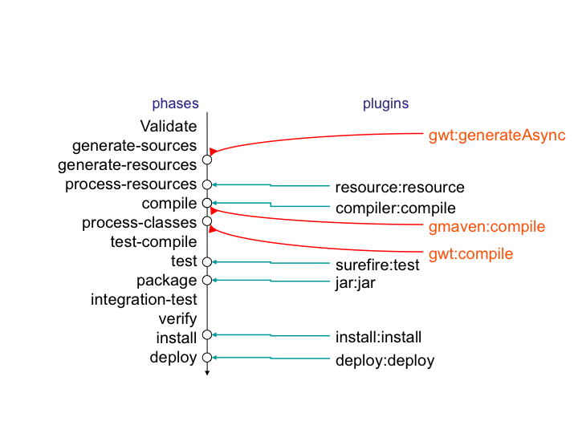
Cycle de vie du projet et plugins exécutés pour chaque phase.
Générer du code
Suite aux nombreuses évolutions que nous avons apportées, notre projet est aujourd’hui capable d’invoquer des services Web SOAP pour s’intégrer avec d’autres applications. Ce code a été développé via l’un des nombreux assistants qui peuplent les environnements de développement intégré modernes. Nous lui avons fait ingurgiter le WSDL du système partenaire et il a généré pour nous un squelette de code que nous n’avons eu qu’à compléter.
L’intégration de générateurs de code dans les environnements de développement, masqués derrière des interfaces graphiques colorées et des barres de progression, nous ferait presque oublier la complexité technique de ces outils. Nous allons pourtant être rapidement rappelés à l’ordre.
Après une migration technique importante, notre partenaire nous transmet la nouvelle version de son contrat de service web, un nouveau fichier WSDL. Seulement Fabrice, responsable de la mise en œuvre de ce service web, est en congé aux Caraïbes pour un mois. Il va donc falloir se débrouiller sans lui.
Première question : comment utilise-t-on ce fameux assistant de création de service web ? Les options sont nombreuses et, sans un bon bagage technique, il nous est difficile de savoir lesquelles choisir. La stratégie du « tout par défaut » ne nous garantit pas la pertinence du résultat.
Seconde interrogation : les classes précédemment générées avaient-elles été modifiées ? Nous pourrions écraser purement et simplement le package Java correspondant au code généré, mais sommes-nous sûrs que Fabrice n’y a pas fait des adaptations ?
En fouillant dans les notes de Fabrice, nous trouvons heureusement le petit guide du développeur de service web qui répond à nos questions (et donc pas besoin de le déranger d’urgence durant ses vacances bien méritées).
|
Nous ne doutons pas que, sur vos projets, vous disposiez d’une documentation très complète et toujours à jour pour décrire ces procédures. Pensez tout de même au temps que nécessite la maintenance de ces documents et au temps perdu par un néophyte pour se plonger dedans quand il en a besoin. Cela ne signifie pas pour autant que Maven rende un système documentaire inutile. Cependant, autant que possible, automatisez et simplifiez les choses et ayez le réflexe wiki plutôt que document de synthèse validé par quinze relecteurs. |
Maven propose une autre approche à ce problème, une fois de plus via ses plugins. Rappelons que, pour Maven, le répertoire src ne doit contenir que le code source et que le répertoire target est dédié à tous les fichiers intermédiaires de la construction du projet. Maven considère que des fichiers générés ne sont pas des fichiers sources, même s’ils sont écrits dans la syntaxe du langage Java. Le fichier source est le contrat WSDL qui permet de les produire. Rien n’interdirait à l’outil de génération de produire directement du code binaire dans des fichiers class (si ce n’est que c’est nettement plus compliqué). Il n’y a donc aucune raison de placer ce code généré dans notre arborescence src.
Le plugin cxf-codegen associé à notre pile de services web Apache CXF sait prendre en charge la procédure de génération de code. Il s’associe à la phase generate-source du cycle de vie qui est prévue pour ce type de plugins. Il prend en paramètre les fichiers WSDL à traiter et les options de génération ; aussi plaçons-nous notre fichier WSDL dans un répertoire de ressources dédié à ce format : src/main/resources/wsdl.
<plugin>
<groupId>org.apache.cxf</groupId>
<artifactId>cxf-codegen-plugin</artifactId>
<version>2.3.3</version>
<executions>
<execution>
<goals>
<goal>wsdl2java</goal>
</goals>
</execution>
</executions>
<configuration>
<defaultOptions>
<noAddressBinding>true</noAddressBinding>
</defaultOptions>
</configuration>
</plugin>Le code généré par ce plugin est placé dans le répertoire target/generated-sources/cxf. Il s’agit également d’une convention de Maven, qui permet à chaque plugin générateur de code d’avoir son propre répertoire de génération tout en conservant une certaine cohérence :
<répertoire de build "target">/generated-(re)sources/<nom du plugin>
Ces répertoires sont automatiquement ajoutés dans le chemin de compilation du projet et seront donc pris en considération lors de la phase de compilation qui suit. Par ailleurs, étant placé dans l’arborescence target, ce code peut être facilement isolé du code source que nous produisons, par exemple lorsque nous le publions dans notre gestionnaire de code source.
La stratégie utilisée par Maven pour les générateurs de code résout donc nos deux problèmes : la procédure de génération n’a tout simplement plus besoin d’être documentée. Elle est systématiquement exécutée, ce qui a l’avantage non négligeable de nous assurer la totale cohérence entre le fichier source qui sert à cette génération et qui seul fait foi, et le code qui en est dérivé et est utilisé par l’application. Ensuite, une modification du code généré est tout simplement impossible, celui-ci n’étant pas sauvegardé dans le gestionnaire de sources. Il vous suffit généralement d’étendre les classes générées pour développer le code propre à votre application, plutôt que de venir modifier ce code et de risquer de tout perdre lors de la génération suivante, ou de devoir comparer deux versions et reporter manuellement vos modifications.
Le seul inconvénient de cette pratique est que le générateur de code sera invoqué à chaque construction du projet par Maven. L’outil de génération peut être assez lourd et son lancement systématique, pénalisant pour votre productivité. Aussi, les plugins Maven associés utilisent généralement des mécanismes permettant de ne lancer la génération que lorsque c’est réellement nécessaire, soit parce que le répertoire de génération n’existe pas, soit parce que le fichier qui sert de référence a été modifié.
Produire autre chose qu’un JAR

Amusé par notre interface web en GWT, François se joint à notre équipe. La particularité de François est qu’il n’est pas seulement un développeur Java, mais aussi un spécialiste de la plateforme Flex d’Adobe. Il décide donc de nous développer une interface web faisant appel à toute la richesse du plugin Flash.
Comme pour les cas précédents, nous découvrons avec plaisir qu’il existe un plugin Maven, le projet Flex-mojos [16], qui prend en charge la compilation spécifique des sources Flex. Cependant, Flex n’est pas Java, et une application Flash s’assemble sous forme d’un fichier SWF qui n’a pas grand-chose en commun avec un JAR. Il ne suffira donc pas d’ajouter à notre fichier POM des déclarations de plugins, il faut complètement changer le cycle de vie et les plugins par défaut utilisés par Maven.
Ce cycle de vie par défaut est sélectionné par Maven en fonction de l’élément <packaging> de notre POM, qui prend par défaut la valeur jar. Nous pouvons tout aussi bien lui donner la valeur war pour construire une application web, ou ear pour une archive d’entreprise (voir Chapitre 8). Pour créer une application Flash, nous allons utiliser le packaging SWF. Cette valeur n’est, bien sûr, pas comprise par Maven sans un peu d’aide.
Maven est conçu pour être fortement extensible, aussi l’association du packaging avec un cycle de vie est réalisée à l’exécution et peut être assistée par des compléments, appelés extensions. Un plugin peut lui-même apporter des extensions : c’est le cas du plugin flex-mojos.
Le fichier POM du projet proposé par François inclut donc, par rapport à un projet Java « classique » :
-
des déclarations classiques de dépendances vers le SDK Adobe Flex, dont les artefacts sont de type SWC et non JAR ;
-
la déclaration de répertoire de sources et de tests, propre au langage Flex qu’il utilise ;
-
la déclaration du plugin flex-mojos. Le point clé est l’élément <extension>true</extension> qui signale à Maven que ce plugin propose des compléments qu’il faudra prendre en compte avant de déterminer le cycle de vie et les tâches à exécuter ;
-
la version du compilateur Flex à utiliser par le plugin. Le plugin n’est pas lié à une version particulière de SDK Flex, aussi l’ajout d’une dépendance au plugin permet de spécifier la version qu’il devra utiliser.
Le Listing 3.1 montre le POM utilisé par François pour son projet qui nous fait mettre un pied en dehors du monde Java. [17]
<project>
<modelVersion>4.0.0</modelVersion>
<groupId>fr.noubliepaslalistedescourses</groupId>
<artifactId>ihm-flash</artifactId>
<version>1.0</version>
<packaging>swf</packaging>
<build>
<sourceDirectory>src/main/flex</sourceDirectory>
<testSourceDirectory>src/test/flex</testSourceDirectory>
<plugins>
<plugin>
<groupId>org.sonatype.flexmojos</groupId>
<artifactId>flexmojos-maven-plugin</artifactId>
<version>4.0-beta-5</version>
<extensions>true</extensions>
</plugin>
</plugins>
</build>
<dependencies>
<!-- Flex SDK dependencies -->
<dependency>
<groupId>com.adobe.flex.framework</groupId>
<artifactId>flex-framework</artifactId>
<version>4.5.0.18623</version>
<type>pom</type>
</dependency>
...
</dependencies>
</project>|
Si le numéro de version en -beta du plugin vous inquiète, ne perdez pas de vue que ces composants sont développés en Open Source, et donc proposent à intervalle régulier des versions intermédiaires. « Release early, release often » est une devise de développement agile très prisée dans ce milieu. Cela ne signifie pas que les fonctionnalités ne soient pas au rendez-vous. Les versions « finales » ne bénéficient pas d’un meilleur support ou de soins particuliers, et ces versions intermédiaires vous apportent les dernières corrections. Par contre, les versions intermédiaires peuvent remettre en question certaines options, même si la compatibilité et le respect des utilisateurs sont la règle généralement suivie ; aussi vous devrez consulter les release-notes pour adapter votre projet le cas échéant. |
Ce fichier POM n’a rien de très différent de ce que nous avons utilisé jusqu’à présent, et pourtant il s’adresse à une plateforme très différente de Java. Maven montre ici ses capacités d’adaptation et d’extensibilité. Un simple plugin dédié à un langage ou à une plateforme différente permet d’utiliser Maven dans un cadre pour lequel il n’a pas du tout été prévu initialement. Le cycle de vie du projet peut être totalement adapté pour des besoins très particuliers, enchaînant les tâches adéquates d’un plugin dédié.
Nous sommes bluffés par la démonstration de François, qui nous présente une interface web d’un très haut niveau, mais nous sommes presque plus stupéfaits de la facilité avec laquelle il a pu intégrer un langage a priori très éloigné du monde Java dans notre mécanisme de construction de projet. Et cela ne s’arrête pas là, nous dit-il, car avec l’utilisation d’outils comme flexunit, flexpmd, flexcoverage et l’intégration dans Sonar (que nous vous présenterons au chapitre 12), la couverture de services autour des projets flex avec Maven est proche de ce que l’on obtient avec du Java traditionnel.
Des plugins pour tout ?
Dans les exemples que nous venons de voir, nous avons fait appel à différents plugins utilisant des identifiants de groupe variés. Le plugin de compilation est développé dans le cadre de Maven lui-même et porte donc l’identifiant de groupe org.apache.maven.plugins. Quelques plugins de base sont également dans ce cas, et leur documentation est accessible sur le site de Maven [18].
Le plugin GWT est développé dans le cadre du projet Mojo, qui est en fait plus une communauté qu’un projet à proprement parler. Elle regroupe des développeurs qui contribuent à une grande variété de plugins ou expérimentent des idées dans un « bac à sable ». Ces plugins sont associés à l’identifiant de groupe org.codehaus.mojo. La liste de ces plugins est longue et s’enrichit régulièrement, vous trouverez très probablement votre bonheur dedans.
Le plugin CXF est, lui, développé en marge du projet Apache CXF, autrement dit l’équipe de développement de ce projet prend elle-même en charge son intégration avec Maven. Ce cas est de plus en plus courant avec la place importante que prend Maven dans le monde Java.
D’autres plugins, développés en marge des grandes fondations ou entreprises contributrices d’Open Source, utilisent leurs propres dépôts. C’est le cas par exemple pour le plugin Onejar (http://onejar-maven-plugin.googlecode.com) qui héberge la documentation et le dépôt Maven du plugin directement dans son Subversion. Pour utiliser un dépôt non standard de plugins, il nous faut ajouter au projet la déclaration adéquate :
<pluginRepositories>
<pluginRepository>
<id>onejar-maven-plugin.googlecode.com</id>
<url>http://onejar-maven-plugin.googlecode.com/svn/mavenrepo</url>
</pluginRepository>
</pluginRepositories>De très nombreux plugins vivent indépendamment, développés sur les services d’hébergement SourceForge, Googlecode, GitHub, ou par des sociétés qui les diffusent depuis leur propre site web. Il n’en existe pas d’index officiel ou de catalogue toujours à jour vous permettant de trouver la perle rare. Votre moteur de recherche préféré est souvent votre meilleur ami, associé au forum des utilisateurs de Maven.
|
Faut-il le préciser, si vous développez votre propre plugin Maven, nous vous encourageons à le publier via le dépôt officiel « central ». Au prix d’un petit effort initial, vous simplifierez grandement la vie de vos utilisateurs. La procédure est expliquée en détail sur le site : http://maven.apache.org/guides/mini/guide-central-repository-upload.html. Une autre option que nous ne pouvons que vous recommander est de proposer votre plugin en contribution au projet Mojo (http://mojo.codehaus.org), ce qui lui donnera une bien meilleure visibilité, ainsi que l’aide possible des développeurs de la communauté. |
Maven 2 ne fait pas de séparation très claire entre les dépôts d’artefacts que vous déclarez dans votre POM et vos déclarations de dépôts de plugins – un dépôt de plugin étant en général aussi un dépôt d’artefacts.
Maven 3 est plus strict et refusera d’utiliser un plugin, même s’il est présent dans l’un des dépôts déclarés, sauf si vous déclarez clairement le <pluginRepository> adéquat. De même, les dépendances déclarées par le plugin ne seront recherchées que dans son dépôt d’origine et non dans vos propres dépôts.
Une fois encore, ce n’est pas pour vous embêter, mais pour fiabiliser le projet et avoir un build reproductible, quel que soit l’environnement. Sans cette précaution, certains plugins peuvent voir leur liste de dépendances modifiée par le projet qui les utilise et se comporter bizarrement.
Conclusion
Maven propose un cadre de développement strict qui permet de compléter le projet grâce à de nombreux plugins sans interaction néfaste entre eux. Via son cycle de vie, chaque plugin trouve sa place et contribue à l’outillage global du projet par petites touches. Un outillage complet du cycle de vie du projet permet de contrôler toutes ses étapes en une seule commande et, surtout, regroupe toutes les infos et tous les paramètres de configuration nécessaire en un seul endroit.
Quels que soient le projet Maven auquel vous participez et son langage,
la commande mvn install sera toujours le seul et unique point d’entrée
pour construire le projet, en intégrant toutes les étapes nécessaires.
La structure du projet sera toujours identique et vous permettra d’être
rapidement productif, sans devoir passer par un long « guide de
démarrage » précisant les bibliothèques à utiliser et le rôle de chaque
paramètre.
Chapitre 4 : Mettre en place des tests unitaires
Le petit projet initial est maintenant de l’histoire ancienne. Sous l’impulsion de contributeurs enthousiastes, de nombreuses fonctionnalités sont venues l’enrichir. Il propose aujourd’hui une multitude de services tous aussi indispensables les uns que les autres. La diversité des contributions introduit cependant une nouvelle difficulté : le projet est devenu quelque peu chaotique et relativement hétérogène. À tel point qu’il devient délicat d’introduire une nouvelle fonction sans risquer de « casser » quelque chose.
La solution, nous la connaissons déjà. Il est nécessaire de passer par une phase de réingénierie (refactoring) pour mieux structurer notre code et le simplifier, l’assouplir, le rendre extensible, adaptable, bref : meilleur. Ce travail nécessite cependant de s’assurer que les services rendus resteront les mêmes après ces modifications.
Aujourd’hui déjà, quelle que soit l’évolution que l’on désire apporter au logiciel, fonctionnelle ou purement technique, nous sommes contraints d’une façon ou d’une autre de vérifier les éventuelles erreurs et incompatibilités que nous pourrions introduire involontairement. Nous passons donc beaucoup de temps à tester l’application afin de voir si elle continue de fonctionner « comme avant ».
Tester ? Pour quoi faire ?
Tester un logiciel est un travail répétitif, souvent ennuyeux, mais pourtant indispensable. Nous devons évidemment vérifier que la toute dernière évolution fonctionne comme prévu, ce qui est relativement motivant. Nous devons également par la même occasion nous assurer que tout le reste de l’application n’a pas perdu en stabilité. Un effet de bord peut être dévastateur, et un bogue rapidement introduit. Et bien souvent leur cause se cache dans une modification qui semble minime au premier abord.
Une gestion de la qualité du logiciel doit prendre à bras-le-corps la problématique des tests. Chaque version doit proposer une série de vérifications à effectuer pour valider les nouveaux développements, mais aussi inclure l’ensemble des tests identifiés pour les versions précédentes, afin de s’assurer que l’application ne régresse pas. Il ne faudrait pas casser quelque chose qui fonctionnait dans la version précédente.
Une fonctionnalité qui disparaît ou se dégrade dans la version suivante, c’est autant d’utilisateurs mécontents. Sans compter les nombreuses heures perdues à identifier le problème et à lui trouver une solution acceptable dans l’urgence : souvent un simple compromis avec la solution « idéale » que l’on aimerait mettre en place, mais qui nécessiterait trop de travail ou introduirait de nouveaux risques.
Cependant, passer des tests a un coût, surtout si l’on accumule les tests ajoutés par de nombreuses versions du logiciel. Se reposer sur le seul humain pour cette tâche, c’est s’exposer à de nombreux risques :
-
le coût du passage des tests, considérant la main-d’œuvre employée à plein-temps à cette tâche ;
-
le temps de réaction lorsqu’un problème a été introduit par une modification. Plus tard on s’en rendra compte, plus la correction à apporter sera délicate ;
-
la rigueur du passage des tests, si l’on considère que l’être humain se lasse vite de tâches répétitives et peu porteuses de créativité.
Automatisons !
Pour limiter ces risques, il existe une pratique simple et particulièrement efficace : l’automatisation des tests ! Un mécanisme automatique ne coûte pas grand-chose à l’exécution. En dehors de la machine qu’il monopolise, il ne réclame pas d’augmentation ni de congés. Il peut être très rapide et ne se lasse pas de ce qu’on lui demande de faire. Même après des centaines de répétitions, il sera tout aussi regardant sur le résultat qu’il est censé vérifier. Nous devons donc voir les tests comme un traitement informatique intégré dans notre projet. La création des tests, même si elle a un coût, est avant tout un investissement qui nous prémunit des régressions dans le futur, et qui améliore l’évolutivité de notre logiciel en levant l’angoisse : « Je ne touche pas au cas où je casserais quelque chose. » Les tests automatisés sont un véritable vecteur pour l’amélioration de la productivité des équipes puisqu’ils leur permettent de se concentrer sur le logiciel en toute quiétude même si une partie importante du code doit être refactorisée.
La solution la plus élémentaire pour mettre en place des tests automatisés consiste à intégrer dans le code des fragments de tests, en général sous forme d’une méthode main chargée de vérifier le fonctionnement de la classe qui la définit, comme dans l’exemple du Listing 4.1.
public class ListeDeCoursesReader {
public ListeDeCourses read( InputStream in ) { ... }
/** Test automatique de la classe ListeDeCoursesReader */
public static void main( String args[] ) {
ListeDeCoursesReader reader = new ListeDeCourseReader();
ListeDeCourses lu = reader.read( new FileInputStream("./test.list" ) );
if ( lu == null ) {
System.err.println( "FAILED : Erreur de lecture" ) ;
System.exit( -1 ) ;
}
}
}Cette pratique est cependant très discutable. D’une part, elle nécessite de passer par un lanceur qui va exécuter toutes les méthodes main des tests, l’automatisation n’est donc pas complète. Ensuite, notre projet va embarquer dans son code binaire le code de test, qui n’a pas grand intérêt pour les utilisateurs. Si l’augmentation de la taille du fichier JAR n’est pas en soi un problème bloquant, cela n’est pas conceptuellement très satisfaisant.
Malgré ces quelques reproches, considérons tout de même cette option qui a l’avantage d’être simple et a d’ailleurs été une pratique courante en développement Java.
Pour améliorer la capacité de notre test à identifier un problème, nous allons contrôler le contenu de l’objet ListeDeCourses lu lors de l’exécution du test. Nous nous basons donc sur une comparaison entre un objet ListeDeCourses attendu et l’objet ListeDeCourses effectivement construit lors de l’exécution du test. Pour ne pas devoir écrire la comparaison entre ces deux objets (attendu vs effectif), nous faisons appel à la classe BeanComparator de la bibliothèque éprouvée commons-beanutils [19] qui fait ce travail pour nous en une seule ligne de code, ce qui rend le test plus simple et plus lisible. Inutile de réinventer la roue et de venir compliquer le code alors que cette classe simplifie tellement la tâche et nous permet de nous focaliser sur notre objectif : tester de manière automatique autant de fonctionnalités que possible. Le Listing 4.2 montre cette évolution de notre méthode de test.
/** Test automatique de la classe ListeDeCoursesReader */
public static void main( String args[] ) {
ListeDeCoursesReader reader = new ListeDeCoursesReader();
ListeDeCourses attendu = new ListeDeCourses( ... );
ListeDeCourses lu = reader.read( new FileInputStream("./test.list" ) );
if ( new BeanComparator().compare( attendu, lu ) != 0 ) {
System.err.println( "FAILED : Données lues incorrectes" ) ;
System.exit( -1 ) ;
}
}Très fiers de notre mécanisme de test automatisé, nous lançons donc la version fraîchement compilée de l’application sur notre serveur de test. Et là, c’est la douche froide :
ClassNotFoundException org.apache.commons.beanutils.BeanComparator
Que s’est-il passé ? L’introduction d’une nouvelle bibliothèque pour simplifier l’écriture du test a créé des imports dans le code, imports qui ne peuvent être résolus sur le serveur de test, car nous n’avons pas ajouté la bibliothèque commons-beanutils à l’environnement de test. Cela n’aurait aucun sens car, en dehors de ce test, elle n’est absolument pas nécessaire !
Faut-il alors renoncer à utiliser des bibliothèques dans les tests et se contenter du seul JDK ? Bien sûr que non ! Cela voudrait dire que nous plaçons les tests au second plan et que nous nous interdisons d’en faire quelque chose d’intelligent et de facile à écrire. De toute évidence, la solution de la méthode main pour tester montre de graves limites.
Utiliser un framework de test
Nous ne sommes pas les premiers à faire ce constat, et la réponse existe depuis bien longtemps à travers des outils de test spécialisés pour Java, dont le plus connu d’entre eux est jUnit [20].
Ces outils reposent sur des principes simples :
-
le test associé à une classe est écrit dans une classe Java séparée implantant ce framework, qu’on nomme par convention du nom de la classe testée avec le suffixe « Test » ;
-
chaque test à réaliser est traduit par une méthode dédiée dans la classe de test ;
-
l’outillage propose des mécanismes d’initialisation et de libération qui permettent de préparer les conditions d’exécution du test et de fermer proprement les ressources après son exécution, même en cas d’erreur ;
-
l’outillage fournit des méthodes utilitaires pour les opérations courantes de vérification du bon fonctionnement du logiciel ;
-
l’outillage de test se charge d’identifier tous les tests à exécuter et de les enchaîner, en fournissant finalament un rapport complet des éventuelles erreurs rencontrées.
Pour tester notre ListeDeCoursesReader avec jUnit, nous allons donc écrire une classe ListeDeCoursesReaderTest, y créer une méthode testLectureDeuxElements, et y transférer notre code de test. Le Listing 4.3 montre cette transformation de notre code :
import static org.junit.Assert.*;
public class ListeDeCoursesReaderTest {
@Test
public void lectureDeDeuxElements() {
ListeDeCoursesReader reader = new ListeDeCoursesReader();
ListeDeCourses attendu = new ListeDeCourses( ... );
ListeDeCourses lu = reader.read( new FileInputStream("./test.list" ) );
assertEquals( 2, lu.size(), "liste lue de taille incorrecte" ) ;
if ( new BeanComparator().compare( attendu, lu ) != 0 ) {
fail( "Données lues incorrectes" ) ;
}
}
}Cette nouvelle organisation nous permet de ne pas polluer le code de notre projet, sans pour autant renoncer à nos tests automatisés. Elle fournit un cadre simple pour l’écriture de ces tests et des méthodes utilitaires pour nous aider à les écrire simplement. Elle nous propose de prendre en charge l’exécution de nos tests, en fournissant via une interface graphique un compte rendu synthétique pointant immédiatement les erreurs rencontrées. Ce rapport est en particulier parfaitement intégré dans les environnements de développement comme Eclipse, NetBeans ou IntelliJ Idea.
L’objectif de cet ouvrage n’est pas de détailler le fonctionnement de jUnit. Nous ne pouvons donc que vous conseiller de consulter le site junit.org et les nombreux ouvrages consacrés au sujet. Signalons cependant que jUnit n’est pas le seul candidat pour l’écriture de tests, et qu’il partage ce terrain en particulier avec son challenger TestNG et avec sa propre version « modernisée » jUnit4. Chacun a ses points forts, aussi nous vous laissons choisir l’outil le plus approprié à vos besoins et à vos habitudes de travail.
Les tests sous Maven
Maven ne fait pas de choix entre ces trois outils de test. Plus précisément, il choisit les trois plus tous ceux à venir qui pourraient devenir les standards de demain. L’intégration des tests sous Maven s’accommode de la bibliothèque de tests que vous déclarez comme dépendances de votre projet et elle s’adapte en conséquence, en téléchargeant les autres dépendances adéquates.
Nos tests sont désormais entièrement automatisés avec l’aide de notre framework préféré. Reste à les intégrer dans la construction du projet. En effet, l’intérêt de ces tests automatisés est… qu’ils sont automatisés, donc contrôlables à tout moment pour le seul coût du temps qu’ils nécessitent pour s’exécuter. La logique la plus élémentaire en termes de qualité logicielle est que ces tests doivent être exécutés et ne détecter aucune erreur avant que soit produit le binaire livrable à nos utilisateurs.
Maven rejoint totalement cette logique et fait même des tests un élément de premier plan du projet, au même niveau que le code de l’application lui-même. Pour suivre la logique des outils de test comme jUnit ou TestNG, Maven définit deux répertoires dans la structure de fichiers du projet : src/main/java pour le livrable, src/test/java pour les tests. La séparation entre classes du projet et classes de test qui l’outillent est ainsi directement portée par l’emplacement physique des fichiers sources.
Notre test jUnit ListeDeCoursesReaderTest est donc placé dans
l’arborescence src/test/java. Il ne nous reste qu’à lancer la commande
mvn test pour constater que Maven prend bien en charge la compilation et
l’exécution du test.
Cependant, notre ListeDeCoursesReaderTest comprend encore une faiblesse notable : il fait appel à un fichier pour alimenter la classe testée. Comment obtenir le chemin de ce fichier de manière totalement indépendante de l’environnement ? Il est évidemment exclu de donner un chemin en dur « C:/Utilisateurs/Nicolas/test/liste.list » qui serait assez désastreux sur une machine non Windows ou sur un autre poste de travail qui ne serait pas organisé de la même manière.
Nous avons donc utilisé un chemin relatif « test/liste.list », en supposant implicitement que le test serait lancé depuis la racine du projet où est placé ce fichier. Si cela fonctionne assez souvent, nous sommes cependant un peu optimistes. C’est la raison d’être du répertoire src/test/resources. Celui-ci permet de stocker toutes nos données de test et d’y avoir accès à l’exécution du test via le ClassPath. Le Listing 4.4 montre l’évolution de notre code de test pour accéder à ce fichier de cette manière. Tous les fichiers de données que nous utiliserons pour nos tests seront placés sous src/test/resources. Ils seront ainsi intégrés au ClassPath de test, mais exclus du binaire final. Ils seront également totalement intégrés au projet et enregistrés dans notre gestionnaire de version.
public void testLectureDeuxElements() {
ListeDeCoursesReader reader = new ListeDeCoursesReader();
InputStream is = getClass().getResourceAsStream ( "test.list" );
ListeDeCourses lu = reader.read( is );
...|
Ce mécanisme d’accès aux ressources est celui que nous vous recommandons
d’utiliser autant que possible. Cela s’applique lorsque vous manipulez
un type abstrait comme Si vous devez expressément utiliser un type |
Le scope « test »
Nous avons vu que la bibliothèque commons-beanutils nous a joué un mauvais tour. Bien pratique pour simplifier l’écriture de notre test, elle venait perturber notre application. Maintenant que le test possède sa propre classe dédiée, ce problème est en principe résolu. Cependant, les utilisateurs d’EDI font confiance à leur environnement pour gérer les imports et peuvent se faire piéger à nouveau. Il est si facile d’ajouter un import en saisissant juste le début du nom d’une classe qu’il n’est pas rare de terminer son travail avec quelques imports inutiles. L’EDI peut également faire le ménage pour nous, mais qu’il laisse passer une coquille par mégarde n’est pas exclu.
Contrairement à un projet dans les EDI courants, un projet Maven a deux visages bien définis : la branche principale (src/main), portant le code de l’application et les dépendances qui lui sont associées dans le POM, et la branche test (src/test), portant l’outillage de contrôle ainsi que ses dépendances dédiées. En effet, une dépendance déclarée dans le POM porte une indication de scope, qui permet à Maven de savoir quand telle ou telle bibliothèque doit être utilisée par les outils de compilation. Lorsque le scope porte la valeur test, il est exclu de l’application et ne sera utilisé que pour la compilation et l’exécution des tests.
<dependency>
<groupId>junit</groupId>
<artifactId>junit</artifactId>
<version>4.8.2</version>
<scope>test</scope>
</dependency>Si l’assistance de l’EDI nous a fait intégrer par erreur des classes normalement dédiées à notre outillage de test, la compilation par Maven échouera en signalant immédiatement le problème. Nous pouvons donc faire appel à tous les utilitaires possibles et imaginables qui nous aideront à écrire nos tests de manière plus efficace et sans risquer de polluer l’application.
Le choix d’outils de tests est parfois plus délicat que le choix de l’infrastructure de notre logiciel. Pour être pertinents et bien couvrir les besoins, les tests doivent rester simples et performants et pouvoir utiliser les ressources de nombreuses bibliothèques. La gestion de dépendances transitives de Maven nous ouvre les portes d’outils de test et de simulation très avancés, avec une simplicité de mise en œuvre déconcertante.
Le développement piloté par les tests
Les tests automatisés que nous venons d’ajouter à notre projet nous offrent un garde-fou intéressant. À de nombreuses reprises, ils nous signalent qu’une « petite modification » s’avère bien plus significative que ce que nous avions pensé.
Au cours d’une discussion sur les nouvelles idées que nous avons eues pour notre projet, Vincent propose de changer le format du fichier dans lequel nous stockons la liste de courses. Cette modification permettra de stocker des données complémentaires, dont je vous laisse le soin d’imaginer l’utilité.
Nos tests existants permettront de vérifier que ce nouveau format ne perturbe pas le code existant, mais Vincent va plus loin. Avant même que nous n’ayons déterminé comment nous allions lire ces nouvelles données depuis le fichier, il commence à écrire une nouvelle méthode de test vérifiant que les informations supplémentaires ont été correctement lues. Aurait-il « oublié » que, pour que le logiciel fonctionne, il faut à un moment ou un autre réaliser son code ?
Une fois son test écrit, Vincent le lance et ne semble même pas vexé de voir son écran afficher dans un rouge sang le résultat assez prévisible :
FAILURE java.lang.NullPointerException
Vincent est tout simplement un adepte du développement piloté par les tests (Test Driven Development ou Test First). Plutôt que de tester son code, il préfère écrire des tests qui décrivent précisément ses attentes, puis écrire le code qui sera capable de faire passer ses tests au vert. La différence est étonnamment efficace en termes de structuration du logiciel. Plutôt que d’être guidé par des contraintes techniques ou par des considérations de pur informaticien, chaque élément du logiciel n’existe que parce que la bonne exécution d’un test nécessite son existence. Comme chaque test est guidé par un besoin, écrit avant même que l’on n’ait commencé à se torturer l’esprit avec la réalisation, le code répond de manière simple et juste aux besoins.
La sur-ingénierie est une dérive courante de l’informatique où des composants deviennent inutilement complexes au regard de la fonctionnalité à rendre, simplement pour répondre à des considérations purement techniques qui n’apportent rien à l’utilisateur.
Vincent a donc écrit d’abord une méthode de test simple, focalisée sur sa nouvelle idée et uniquement guidée par ce qu’il attend du logiciel et non pas par l’idée qu’il a derrière la tête concernant les technologies qui vont l’aider, ou le code qu’il va mettre en œuvre. Après cette phase préparatoire qu’on pourrait qualifier dans un vocabulaire plus traditionnel d’expression de besoin, Vincent est content de voir son test échouer : le test est valide et vérifie bien quelque chose que l’application ne fournit pas encore. Ne riez pas, trop souvent des tests ne font qu’effleurer l’application et n’échouent pas si l’on supprime le code censé être testé !
Vincent commence ensuite la réalisation. Après quelques lignes de code, le test lancé à nouveau échoue encore mais sur un cas d’erreur moins abrupt :
FAILURE Assertion Failed : actual 1, expected 2
Le code commence donc à se mettre en place mais ne répond pas encore aux attentes. Quelques minutes plus tard et après les corrections qui s’imposent ont été apportées, le test passe enfin au vert.
Cette façon de travailler est un moyen très puissant de structurer ses développements en fonction du résultat à atteindre et non en répondant à nos pulsions d’informaticiens avides de code. Une règle de base du développement piloté par les tests est qu’aucun code ne doit être écrit s’il n’est pas rendu indispensable par un test. Autrement dit, d’une part, du code non testé ne devrait pas exister, et d’autre part, du code qui n’est pas guidé par un besoin fonctionnel n’a rien à faire dans un logiciel intelligemment construit.
La réalisation du code qui répond à son test lui a permis d’identifier de nouvelles portions de code très proches d’autres déjà existantes. Il aimerait bien les regrouper dans des méthodes communes. La duplication de code est l’ennemi d’un logiciel évolutif et fiable, aussi Vincent applique le second commandement du développement piloté par les tests : DRY (Don’t Repeat Yourself – « Tu ne te répéteras pas »).
Armé de ses tests, tous focalisés sur des aspects unitaires ou fonctionnels de l’application, il peut faire toutes les opérations de réingénierie qui lui semblent nécessaires pour arriver à un bon niveau de structuration. Chaque modification apportée est contrôlée par les tests existants qui assurent ainsi que le logiciel reste fonctionnellement équivalent. L’outillage de test en place permet à présent de se focaliser sur des aspects purement techniques, pour ne pas dire esthétiques, concernant l’organisation de notre code : niveau d’abstraction, évolutivité, lisibilité. Chaque modification que nous lui apporterons afin d’en améliorer la qualité pourra être validée d’un point de vue des fonctions rendues par l’application : nos tests doivent tous rester au vert. Certaines modifications lourdes et pourtant importantes n’auraient jamais été réalisées en confiance sans cette garantie.
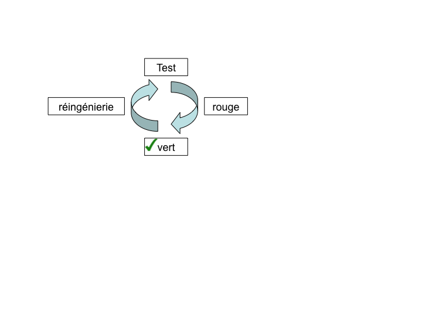
Développement piloté par les tests.
Le développement piloté par les tests est une pratique préconisée par de nombreuses méthodes agiles [21]. Sa mise en œuvre efficace nécessite une culture du test automatisé pour être réellement efficace. Maven participe à cette démarche par la place qu’il donne au test dans le cycle de vie du projet. Les tests vus par Maven sont des éléments de premier plan du projet.
Pas de JAR sans tests réussis
Le passage des tests par Maven fait partie des phases standard de construction du projet. Maven les place au cœur de la gestion de la qualité et fait le choix de bloquer la construction du projet si un test échoue. Comme ces tests sont exécutés avant que la phase de packaging qui construit le JAR ne soit exécutée, Maven interdit donc de construire un livrable qui ne passe pas avec succès tous les tests définis par le projet. C’est une interprétation rigoureuse des principes de qualité logicielle, mais qui évite d’utiliser par mégarde un JAR fraîchement compilé et de découvrir de manière détournée et coûteuse un bogue qui est déjà contrôlé par un test unitaire.
Interdire la construction du JAR, n’est-ce pas un peu abrupt comme prise de position ? C’est en tout cas l’avis de Fabrice, qui tue le temps dans le TGV en testant rapidement quelques nouvelles idées et qui ne parvient pas à lancer l’application. Ses modifications, réalisées en mode « exploratoire », ne visent qu’à tester un nouveau concept et certainement pas à obtenir un résultat stable et irréprochable.
Maven met certes les concepts de qualité logicielle au premier plan mais ne manque cependant pas de pragmatisme. Il existe une option qui permet de ne pas passer les tests lors de la construction du projet, et donc de passer outre cette règle parfois trop stricte. Cette option, ajoutée sur la ligne de commande, est –DskipTests. C’est une option à double tranchant, soyez-en bien conscient. Elle peut être indispensable, comme le pense Fabrice qui peut ainsi vérifier la pertinence de son idée, auquel cas il pourra la présenter à son client à l’arrivée de son voyage d’affaires. C’est une option dangereuse si elle est trop utilisée et que nos tests automatisés ne sont plus exécutés.
Réutiliser notre outillage de test
Au fur et à mesure de l’écriture des tests, nous avons dû développer des classes utilitaires qui n’ont de sens que dans le cadre des tests : code bouchon et simulateur, mécanisme de contrôle et autres constituent un outillage complet dédié à notre code afin que nous soyons en mesure de le tester convenablement.

En marge de notre projet, Lukas se lance dans un autre projet expérimental pour proposer une version sur téléphone mobile de notre application – une cible de choix qu’il ne faut pas négliger !
Lukas est rapidement confronté à un problème simple : dans son environnement de développement, il dispose des deux projets et peut donc coder les tests de son projet noubliepaslalistedescourses-on-android en réutilisant nos utilitaires de test. Cet outillage lui simplifie grandement la tâche et lui permet d’écrire des tests pertinents et lisibles en un temps record. Seulement, lorsqu’il tente de construire son projet avec Maven, la compilation de ses tests échoue systématiquement : nos utilitaires ne sont pas vus par le compilateur.
Cette situation en apparence paradoxale est simple à expliquer. La majorité des environnements de développement intégrés ne différencient pas – contrairement à Maven – les bibliothèques utilisées pour écrire le code et celles associées aux tests. En référençant le projet noubliepaslalistedescourses, l’environnement donne accès à toutes ses classes et dépendances, sans distinction. Maven par contre s’appuie sur le JAR qui a été construit par chaque projet, et sur lui seul. Nos utilitaires de test ne sont accessibles qu’au cours de la construction du projet qui les définit et pas en dehors. Le projet de Lukas ne peut donc exploiter que les classes qui sont destinées à l’inclusion dans le JAR final, et pas la panoplie de tests qui les accompagne.
Copier-coller ces classes est évidemment hors de question, et nous ne pouvons demander à Lukas de réécrire entièrement ses tests sans ce code de support qui lui a fait gagner tant de temps. La solution, Maven la fournit via le plugin JAR, responsable de la construction de notre archive.
Comme nous l’avons vu, le plugin JAR est attaché par défaut au cycle de construction du projet lors de la phase de packaging et sa tâche jar construit l’archive – rien de très surprenant. Ce plugin définit d’autres tâches, en particulier une qui va nous sauver la mise : test-jar. Celle-ci permet de construire en parallèle du JAR du projet un second JAR, contenant cette fois les classes et ressources de test. Le Listing 4.5 montre la configuration associée au plugin JAR pour obtenir ce résultat. Le fonctionnement par défaut suffit à notre besoin, aussi l’ajout de ce traitement ne nécessite aucun élément de configuration particulier.
<plugin>
<groupId>org.apache.maven.plugins</groupId>
<artifactId>maven-jar-plugin</artifactId>
<version>2.3.1</version>
<executions>
<execution>
<goals>
<goal>test-jar</goal>
</goals>
<inherited>false</inherited>
</execution>
</executions>
</plugin>Cette seconde archive partage les métadonnées du projet (le POM). Il ne s’agit pas d’un second projet Maven contenant nos tests, mais bien d’un aspect secondaire de notre unique projet dont Maven se propose de gérer la construction. La différenciation entre l’artefact principal du projet et des résultats secondaires de ce type s’appuie sur un suffixe ajouté au nom de l’artefact, ce que dans le vocabulaire Maven on nomme un classifier. La tâche test-jar va construire un artefact nommé noubliepaslalistedescourses-1.0-SNAPSHOT-tests.jar.
Maven peut être configuré pour produire plus d’un artefact lors de la construction du projet et le classifier permet de différencier les artefacts secondaires du principal résultat de la construction. Il est ainsi possible de construire non seulement le JAR du projet, mais aussi le JAR de ses tests, le JAR de son code source ou le JAR de sa documentation JavaDoc. Chacun de ces artefacts secondaires pourra être référencé comme une dépendance en ajoutant l’information de classifier adéquate, comme le montre le Listing 4.6 qui présente le POM du projet de Lukas.
<project>
<modelVersion>4.0.0</modelVersion>
<groupId>fr.noubliepaslalistedescourses</groupId>
<artifactId>noubliepaslalistedescourses-on-android</artifactId>
<version>1.0-SNAPSHOT</version>
<description>
Projet annexe de noubliepaslalistedescourses pour un client sur téléphone mobile Androïd
</description>
<dependencies>
<dependency>
<groupId>fr.noubliepaslalistedescourses</groupId>
<artifactId>noubliepaslalistedescourses</artifactId>
<version>1.0-SNAPSHOT</version>
</dependency>
<dependency>
<groupId>fr.noubliepaslalistedescourses</groupId>
<artifactId>noubliepaslalistedescourses</artifactId>
<version>1.0-SNAPSHOT</version>
<classifier>tests</classifier>
<type>test-jar</type>
<scope>test</scope>
</dependency>
</dependencies>
</project>L’intégration continue
Nous l’avons vu, nos tests automatisés prennent toute leur valeur lorsqu’ils sont exécutés régulièrement. Chaque développeur peut compter sur eux pour vérifier qu’il n’a pas (ou au moins, pas trop, en fonction de la qualité des tests) détraqué l’application avec ses dernières modifications. Cela peut même l’aider à identifier les points à reprendre sur des parties de l’application qu’il ne connaît pas bien ou à structurer ses propres développements.
Une autre utilisation des tests est de rendre leur passage systématique sur une machine dédiée, afin de détecter le plus vite possible une erreur introduite par un développeur qui n’aurait pas identifié le problème par lui-même. Il ne s’agit pas du tout de rechercher le mouton noir qui introduit des bogues et ne vérifie rien sur son environnement. Il n’est pas rare de créer des instabilités parce qu’on a oublié de diffuser un fichier sur le gestionnaire de version ou parce qu’un fragment de code dépend de l’encodage des fichiers sur le système, d’un chemin particulier, ou de la version du JDK utilisée.
Cette machine qui va incessamment analyser notre projet en exécutant tous les tests aura l’avantage énorme sur un contrôleur humain de n’être limitée que par sa rapidité d’exécution pour signaler les problèmes. À la moindre faute, elle pourra se fonder sur la liste des dernières modifications pour signaler aux personnes concernées le problème identifié. Venant d’un automate plutôt que d’un collègue, ce genre de reproche est plus facile à accepter.
Ce contrôle automatisé et incessant fait partie (mais n’est qu’un élément) de l’intégration continue, une pratique introduite par les méthodes de développement agiles. C’est un outil puissant et facile à mettre en place que nous ne pouvons que vous recommander. Même si, dans un premier temps, vous ne l’utilisez que pour contrôler la bonne exécution des tests et identifier au plus tôt les défaillances de vos collaborateurs et les faiblesses de votre application, vous constaterez rapidement ses bénéfices et les bonnes pratiques que vous pouvez en tirer.
Le serveur qui va exécuter nos tests peut se baser sur l’un des nombreux outils disponibles. Nous citerons Continuum, Jenkins et Hudson, mais cette liste est loin d’être exhaustive.
Continuum
Continuum a été développé par la communauté Maven, avec bien sûr pour objectif de prendre en charge de manière aussi intégrée que possible la structure des projets Maven et les relations de dépendance qu’ils peuvent entretenir. Il ne se limite cependant pas à ce type de projets et peut tout aussi bien accueillir vos projets Ant ou ceux outillés par des scripts.
Son point fort est son excellente intégration des projets Maven. Sur détection d’un changement dans le gestionnaire de code source, Continuum va ainsi construire uniquement le projet impacté puis enchaîner avec tous les autres projets qui l’utilisent et qui pourraient être impactés de manière indirecte par ce changement.
Son premier point faible est son interface web qui ne bénéficie pas des raffinements auxquels nous ont habitués les applications web modernes. Un peu trop de configuration et de changements de page sont nécessaires pour l’exploiter.
Son second et principal point faible est l’absence de mécanismes d’extension permettant des contributions et des adaptations de l’outil à des contextes de projets spécifiques, sans devoir entrer dans les rouages très techniques de l’outil. Par ailleurs, la lenteur de son cycle de développement, qui ne propose une nouvelle version qu’après plusieurs mois, réduit sa capacité à proposer rapidement des évolutions à ses utilisateurs.
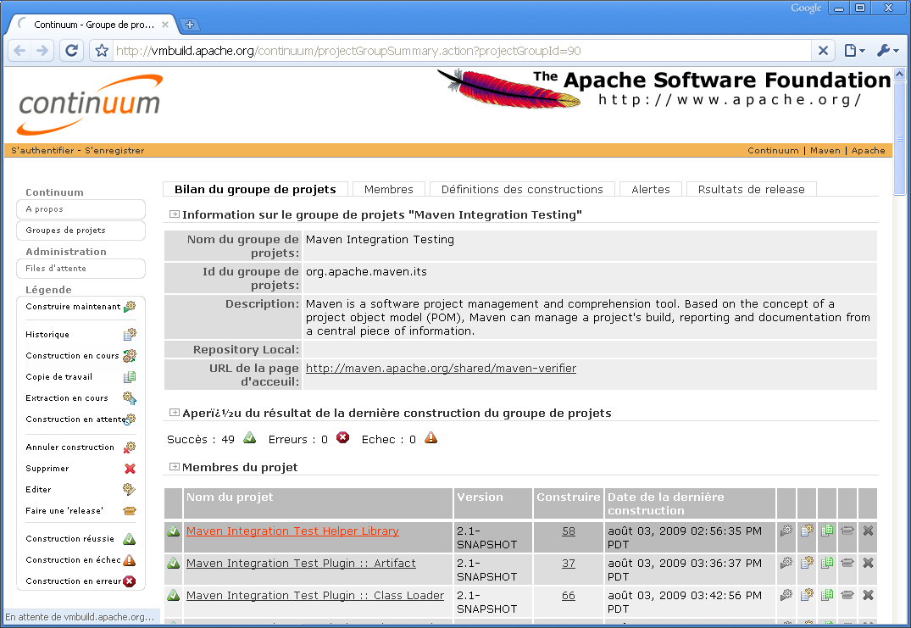
Continuum en train de surveiller les projets de Maven 2.
Jenkins
Créé par Kohsuke Kawaguchi, employé de SUN, pendant son temps libre, Jenkins est rapidement devenu un outil incontournable. Son cycle de développement est extrêmement bref, au point qu’il est difficile de choisir une version, la suivante pouvant apparaître dans les jours ou les heures qui suivent. Cette très forte réactivité permet cependant d’apporter rapidement les corrections qui s’imposent et de proposer des fonctionnalités nouvelles par petites touches.
Jenkins n’est pas dédié à Maven et peut tout aussi bien accueillir des projets Ant ou simplement basés sur des scripts. Le support de Maven, bien qu’arrivé tardivement et longtemps considéré comme expérimental, est cependant d’un bon niveau et parfaitement fonctionnel.
Les points forts de Jenkins sont la qualité de son interface web et l’extrême simplicité de son installation. Son principal point faible est l’intégration, en constante amélioration mais toujours perfectible des projets Maven, en particulier ceux répartis en plusieurs modules (voir Chapitre 6).
Le point décisif qui fait de Jenkins un concurrent de choix, c’est sa réactivité de développement. Avec une nouvelle version chaque semaine et une armée de contributeurs sur son écosystème de plugins, Jenkins est un logiciel extrêmement réactif et porteur de nombreuses innovations.
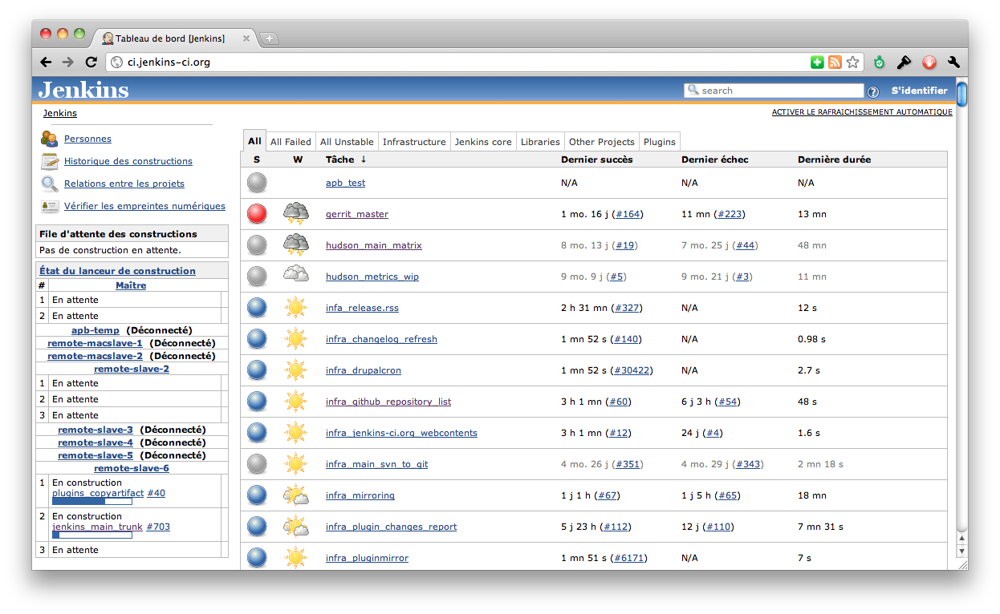
Jenkins, en train de surveiller sa propre construction, respectant l’adage anglo-saxon « eat your own dog food » (« mange toi-même la nourriture de ton chien »).
Hudson
Hudson est le cousin de Jenkins. Suite au rachat de SUN par Oracle, ce dernier a fait valoir ses droits sur le nom « Hudson », marque déposée et nom historique du projet. Voulant imposer ses règles à la communauté des développeurs, Oracle a provoqué un divorce, qualifiée de fork dans le vocabulaire de l’Open Source. Ainsi est né Jenkins d’une part, continuité naturelle du projet, et Oracle Hudson® de l’autre, développé et supporté par Oracle et ses partenaires.
Techniquement parlant, les deux projets sont relativement identiques à l’heure ou nous écrivons ces lignes, mais ils ne suivront pas les mêmes choix techniques ou organisationnels à l’avenir.
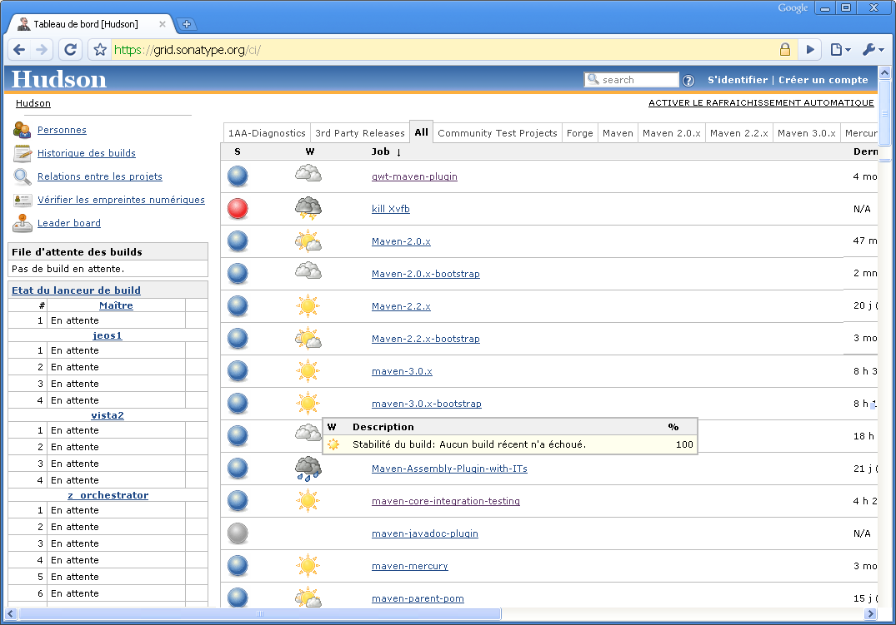
Husdon, lui aussi en train de surveiller la construction de Maven 2, dans la forge Sonatype, partenaire d’Oracle.
Lequel choisir ?
Le choix de votre serveur d’intégration continue va dépendre de nombreux critères. Techniquement parlant, il faut qu’il soit adapté à vos environnements, qu’il sache communiquer avec votre gestionnaire de versions et éventuellement à votre outil de suivi de bogues. Il faudra aussi qu’il puisse facilement remonter de l’information aux développeurs, par mail, messagerie instantanée, plugin dans l’environnement de développement ou autre. Dans tous les cas, il faudra vérifier que la compatibilité est au rendez-vous.
Ce ne sont pas les seuls critères à retenir. Nous n’avons vu ici qu’une utilisation très superficielle de l’intégration continue, qui se contente de compiler et de tester régulièrement notre projet pour signaler les erreurs. La pratique d’intégration continue va très au-delà, comme nous le verrons au chapitre suivant. En fonction de votre utilisation, certaines fonctionnalités vous sembleront indispensables et d’autres, inutiles. Les possibilités d’extension et de configuration de ces serveurs sont nombreuses et répondent à des usages et à des règles de fonctionnement très variés.
Quelques pistes pour vous guider :
-
que devra surveiller l’intégration continue ? Votre gestionnaire de code source est-il supporté ?
-
avez-vous autre chose que des builds Maven à lui faire supporter ? Avez-vous des développements sous Ant, Ruby on Rails, Python, Grails… qui pourraient bénéficier de cette initiative ?
-
qu’attendez-vous de l’intégration continue ? Quels processus de contrôle devra-t-elle porter ? Métriques qualité, tests fonctionnels ou de performance, déploiement d’une version de démonstration, publication des résultats ?
-
comment doit-elle interagir avec vous ? IHM web seule et diffusion de mails, notification par messagerie instantanée, plugin dans votre EDI ?
-
quel support êtes-vous prêt à fournir pour votre service d’intégration continue ? Mises à jour régulières, phase de qualification et/ou support commercial ?
Conclusion
Les tests unitaires sont des acteurs de premier plan pour introduire la qualité logicielle dans le cycle de développement du projet. Maven les considère comme tels, et son fonctionnement même participe très activement à la promotion de cette pratique.
L’intégration de tests dans un projet nécessite un changement de pratiques et l’appropriation de nouveaux outils, elle n’est donc ni instantanée, ni totalement gratuite. Le « retour sur investissement » est cependant sans commune mesure une fois les bonnes habitudes en place. Un projet outillé par des tests rassure tout le monde sur son niveau de qualité et sa stabilité dans le temps. Livrer un logiciel dont tous les tests sont au vert est autrement plus rassurant pour l’équipe que d’appliquer les derniers correctifs en espérant ne pas avoir introduit d’erreur à quelques heures de la livraison.
Chapitre 5 : Mettre en place des tests d’intégration
Nous avons vu au fil des pages qui précèdent comment outiller notre projet d’un ensemble de tests automatisés qui permettent de valider son bon fonctionnement et sa stabilité. Cet apport majeur à notre mode de développement est un virage important qui modifie notre organisation. Nous n’avons plus à proprement parler une phase de développement puis une phase de test, mais une combinaison des deux qui vise à obtenir un résultat toujours meilleur.
Fort de ce nouveau paradigme, notre équipe développe rapidement une réelle addiction aux tests. Nous outillons progressivement notre code pour vérifier et valider chaque parcelle de notre application.
Des tests unitaires… de moins en moins unitaires
Vous vous rappelez peut-être que nous avons choisi Google Web Toolkit pour la réalisation de notre site web. Ce choix nous a donné entière satisfaction jusqu’ici. À l’heure de lui appliquer notre stratégie de test, Nicolas se réjouit de constater que la classe GWTTestCase nous y aide grandement : il nous suffit de bâtir nos tests dessus pour pouvoir valider le fonctionnement de cette couche.
Après quelques jours, nous devons cependant déchanter. La construction complète du projet est passée de huit minutes à… plus de trente ! Les tests de notre interface web sont très longs à exécuter, sans pour autant que le contenu du test puisse être incriminé. Nicolas, qui n’y est pourtant pour rien, sent monter la grogne des développeurs, lassés d’attendre de longues minutes la fin de la construction du projet à cause de ces tests qui n’en finissent pas.
La réponse vient de la structure particulière de ces tests utilisant GWT : l’équipe de développement de Google offre un mécanisme de test qui s’intègre bien dans nos habitudes basées sur jUnit ; cependant, pour en arriver là, ils ont dû jongler avec des contraintes contradictoires. Un test GWT nécessite une phase de compilation spécifique du code de l’application, l’émulation d’un navigateur web, en plus du lancement d’un serveur HTTP, comme le montre la Figure 05-01. Ces deux étapes sont très lourdes et ralentissent considérablement l’exécution du test. La phase de préparation du test peut ainsi rapidement occuper beaucoup plus de temps que l’exécution du test lui-même. Ce problème, multiplié par de nombreux tests sur le même modèle, a des conséquences immédiates sur le temps de construction de notre projet.
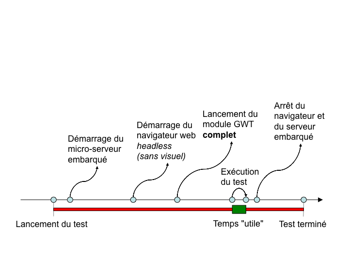
La séquence d’opératoire déroulée par un test GWT.

Impatients d’obtenir le résultat de leur travail, les développeurs prennent peu à peu l’habitude d’utiliser l’option skipTests ( mvn install -DskipTests=true ). Celle-ci est bien pratique, parfois même indispensable, mais elle devrait être l’exception et non la règle dans l’utilisation courante de Maven. Hervé se désole de voir que les bonnes pratiques à peine acquises sont si rapidement oubliées. Il doit pourtant bien reconnaître que l’outillage de test unitaire ne peut être pertinent que s’il est rapide à exécuter.
Qu’est-ce qu’un test « unitaire » ?
Quand nous parlons de tests unitaires, nous considérons des tests simples, ciblés, exécutés dans un environnement léger et totalement sous contrôle. Ces tests sont éligibles à une exécution systématique, car ils peuvent être exécutés rapidement, sans nécessiter de préparation particulière de la machine.
Avec cette définition, nous mettons donc de côté un grand nombre de tests que nous pourrions tout de même automatiser : tests d’interopérabilité, tests de charge et d’endurance, tests nécessitant l’installation du logiciel sur un serveur – typiquement, l’interface web d’une application WAR…
Laisser de côté une gamme aussi large de tests juste parce qu’ils n’entrent pas dans la logique du « tester souvent » de Maven n’est pas une option qui nous mènera bien loin. Ce que nous voulons, c’est intégrer dans la construction du projet de nouvelles tâches mais les conserver optionnelles pour la majorité des développeurs qui ne seront pas concernés. Le mécanisme de profil de Maven offre une solution simple pour que chaque développeur puisse activer les spécificités qui conviennent à sa tâche en cours, sans perdre le bénéfice d’avoir toute la configuration et tout l’outillage nécessaire (ou du moins le maximum) configurés dans le seul fichier POM.
Les profils
La réponse de Maven à ce problème s’appelle un profil. Il s’agit tout simplement de regrouper tout ce qui implique un pan de construction que nous voulons rendre optionnel. Défini au sein d’un bloc dédié, il pourra au besoin être activé ou désactivé selon le développeur qui intervient sur le projet. Le profil peut définir des plugins supplémentaires, de nouvelles dépendances ou des propriétés supplémentaires.
Ce mécanisme est très pratique dans le cadre de nos tests qui ne sont pas indépendants de l’environnement ou qui sont pénalisants en raison de leur durée d’exécution. Le Listing 5.1 présente la configuration d’un profil qui exécutera nos tests GWT si le profil associé est activé. Notez la configuration du plugin surefire qui le précède, lequel permet d’exclure ces tests dans le mode de fonctionnement par défaut. Un développeur qui n’a que faire de l’interface web ne sera donc pas pénalisé, et un développeur qui travaille dessus n’aura qu’à activer le profil associé en ajoutant à sa ligne de commande l’option -Pgwt.
<build>
<plugins>
<plugin>
<artifactId>maven-surefire-plugin</artifactId>
<version>2.4.3</version>
<configuration>
<excludes>**/*GwtTest.java</excludes>
</configuration>
<plugin>
</plugins>
</build>
<profiles>
<profile>
<id>gwt</id>
<build>
<plugins>
<plugin>
<artifactId>gwt-maven-plugin</artifactId>
<version>1.1</version>
<executions>
<execution>
<goals><goal>test</goal></goals>
<execution>
<executions>
<configuration>
<includes>**/*GwtTest.java</includes>
</configuration>
<plugin>
</plugins>
</build>
</profile>
<profiles>Tous ceux qui développent du code GWT sont ainsi en mesure de bénéficier de notre couverture de test, sans perturber d’autres développeurs comme notre spécialiste de la base de données que n’intéressent pas nos Widgets et autres ClickHandlers. L’option -P suivie des noms des profils séparés par une virgule permet d’activer à la demande les profils désirés par l’utilisateur.
S’adapter à l’environnement
Une autre utilisation des profils consiste à adapter la configuration Maven du projet à l’environnement de l’utilisateur. Il est aussi possible de conditionner l’activation du profil à une spécificité de l’environnement d’exécution, par exemple le système d’exploitation ou la version de Java qui exécute Maven. Une propriété système (définie avec l’option -Dnom=valeur de la ligne de commande) peut aussi servir de condition pour activer un profil. Enfin, le profil peut être activé en fonction de la présence d’un fichier particulier.
Olivier, qui travaille sous Solaris, se sent un peu exclu lorsqu’il voit apparaître dans le projet des dépendances de type DLL pour Windows. Celles-ci sont nécessaires pour un de nos outils de développement mais elles sont également disponibles dans des versions pour Mac ou Linux. Plutôt que d’obliger chacun de nous à télécharger ces trois variantes juste pour être sûr de satisfaire tout le monde, Olivier utilise les profils pour établir une liste de dépendance par type de système.
Le Listing 5.2 montre un autre cas d’activation d’un profil lorsque le système qui exécute Maven est Windows. Cette particularité est exploitée pour ajouter une dépendance qui n’aurait aucun sens sur un autre système : une bibliothèque native DLL.
<dependencies>
<dependency>
<groupId>com.google.gwt</groupId>
<artifactId>gwt-dev</artifactId>
<version>1.6.2</version>
<classifier>${platform}</classifier>
<dependency>
<dependencies>
<!-- profiles (activation en fonction de la plateforme) -->
<profiles>
<profile>
<id>windows</id>
<properties>
<platform>windows</platform>
</properties>
<activation>
<os>
<family>windows</family>
</os>
</activation>
</profile>
<profile>
<id>macos</id>
<properties>
<platform>mac</platform>
</properties>
<activation>
<activeByDefault>false</activeByDefault>
<os>
<family>mac</family>
</os>
</activation>
</profile>
<profile>
<id>solaris</id>
<properties>
<platform>linux</platform>
</properties>
<activation>
<activeByDefault>false</activeByDefault>
<os>
<name>sunos</name>
</os>
</activation>
</profile>
</profiles>|
Dans l’exemple du Listing 5.2, la dépendance indiquée utilise la notion de classifier que nous avons déjà rencontrée au Chapitre 4. Celle-ci permet de placer dans un référentiel Maven plusieurs variantes d’un même artefact sous la même identité groupId : artefactId : version. C’est la méthode recommandée si vous devez dériver un même composant en fonction du système cible comme ici, ou distribuer une version de la même bibliothèque avec et sans mécanisme de débogage comme le propose le pilote Oracle. |
Désactiver à la demande
Un profil peut aussi être déclaré « actif par défaut », auquel cas on considère que le fait de ne pas exécuter les tâches qu’il déclare est une exception au mode de construction standard du projet mais qui peut se justifier dans certains cas. Un profil actif par défaut peut être désactivé (à partir de Maven 2.0.10) depuis la ligne de commande via l’option -P, mais en faisant précéder son nom du symbole « ! », qui représente la négation, comme en Java. Supposons, par exemple, que votre projet exploite des règles de codage strictes, mais que vous admettez que vos développeurs puissent vouloir tester leur code avant de s’assurer qu’elles sont strictement respectées. Le Listing 5.3 présente une configuration de ce type. La commande suivante permet de déroger à cette règle le temps d’une exécution de Maven :
mvn -P!codestyle install
<profile>
<id>codestyle</id>
<activation>
<activeByDefault>true</activeByDefault>
</activation>
<build>
<plugins>
<plugin>
<groupId>org.apache.maven.plugins</groupId>
<artifactId>maven-checkstyle-plugin</artifactId>
<version>2.2</version>
<executions>
<execution>
<phase>validate</phase>
<configuration>
<configLocation>checkstyle.xml</configLocation>
<consoleOutput>true</consoleOutput>
<failsOnError>true</failsOnError>
<linkXRef>false</linkXRef>
</configuration>
<goals>
<goal>checkstyle</goal>
</goals>
</execution>
</executions>
</plugin>
</plugins>
</build>
</profile>Les profils sont ainsi un mécanisme puissant que propose Maven pour offrir plusieurs visages à un projet, sans perdre le bénéfice d’une configuration unique pour tous. En activant les profils qui correspondent à son rôle dans l’équipe, un développeur peut faire coller le comportement de Maven à sa tâche courante. Il ne devra pas perdre un temps précieux à chercher de lui-même des moyens de contournement pour des traitements qui lui importent peu ou qui ne le concernent pas.
|
Le paramètre d’activation <activeByDefault> ne s’applique que lorsqu’on ne précise pas explicitement une liste de profils avec l’option -P. Il ne signifie pas que ce profil est toujours actif. Cela peut donc avoir des effets indésirables si on introduit un nouveau profil sur un projet, car ceux qui étaient jusqu’ici « actifs par défaut » seront alors… désactivés. |
Tester l’accès à une base de données
Notre application utilise également – comme une très grande majorité des applications d’entreprise – une base de données. Une nouvelle fois, nous ne voulons pas que cette partie technique de notre code passe au travers de l’outillage de test ; aussi, écrivons-nous des tests unitaires qui passent les requêtes SQL pour s’assurer de leur traitement correct dans notre code. Nous utilisons des outils dédiés à ces tests un peu particuliers pour nous faciliter la tâche, comme DBUnit ou Unitils (si vous ne les connaissez pas, il est encore temps de rattraper votre retard !).
La difficulté que ces outils viennent traiter est l’initialisation de données de test prévisibles, de manière qu’un test qui repose sur le compte utilisateur « Marcel Dupont » trouve effectivement ce compte en base dans l’état prévu. Voilà qui colle parfaitement avec nos attentes : une construction reproductible à tout moment, via des données de test totalement prévisibles.
Hervé met en place les plugins Maven qui peuvent nous aider dans cette tâche. Le Listing 5.4 présente la configuration du plugin SQL servant à recréer complètement la base de données et à effacer les traces d’une exécution précédente ou de modifications manuelles qui pourraient impacter le bon déroulement et la reproductibilité de nos tests. D’autres scripts injectent des données de tests communes avant l’exécution de ceux-ci. Cette configuration, bien qu’un peu longue (d’avance, veuillez excuser la verbosité du XML utilisé par Maven), définit le pilote JDBC et la connexion à la base de données à utiliser, puis ordonne la suppression de la base, sa reconstruction selon nos scripts DDL et enfin l’injection de données de test de référence.
Il existe également un plugin pour DBUnit qui permet d’utiliser le format spécifique de celui-ci dans le même but.
<plugin>
<groupId>org.codehaus.mojo</groupId>
<artifactId>sql-maven-plugin</artifactId>
<version>1.2</version>
<dependencies>
<dependency>
<groupId>com.oracle</groupId>
<artifactId>ojdbc14</artifactId>
<version>10.2.0.3.0</version>
</dependency>
</dependencies>
<configuration>
<driver>oracle.jdbc.driver.OracleDriver </driver>
<url>jdbc:oracle:thin@localhost:1521:XE</url>
<username>user</username>
<password>pwd</password>
</configuration>
<executions>
<execution>
<id>drop-all-tables-before-test </id>
<phase>process-test-resources</phase>
<goals>
<goal>execute</goal>
</goals>
<configuration>
<srcFiles>
<srcFile>src/main/sql/drop-schema.sql</srcFile>
</srcFiles>
<onError>continue</onError>
</configuration>
</execution>
<execution>
<id>create-schema</id>
<phase>process-test-resources</phase>
<goals>
<goal>execute</goal>
</goals>
<configuration>
<srcFiles>
<srcFile>src/main/sql/create-schema.ddl</srcFile>
</srcFiles>
</configuration>
</execution>
<execution>
<id>create-data</id>
<phase>process-test-resources</phase>
<goals>
<goal>execute</goal>
</goals>
<configuration>
<orderFile>ascending</orderFile>
<fileset>
<basedir>${basedir}/src/test/sql</basedir>
<includes>
<include>*.sql</include>
</includes>
</fileset>
</configuration>
</execution>
</executions>
</plugin>Si cette configuration fonctionne très bien pour ceux qui ont installé une base Oracle eXpress, nos outils ne sont pas en mesure d’en installer une et de la lancer à notre place. Ils posent comme un prérequis qu’une base soit disponible à chaque exécution du test avec les droits nécessaires pour installer les données de test.
Il n’existe pas (encore) de plugin Maven qui installe et configure une base de données Oracle ou MySQL sur votre poste durant la construction du projet. Nous devons donc faire confiance au développeur et penser qu’il dispose sur son environnement d’une base de données fonctionnelle et correctement configurée pour que nos tests puissent s’exécuter correctement. Cela est par contre possible avec d’autres bases 100 % Java comme Apache Derby ou HSQLDB.
La philosophie de Maven est justement d’aller contre ces prérequis, qui imposent aux développeurs de passer de longues heures à mettre leur environnement au carré pour pouvoir enfin coller aux attentes du projet. Demander à chaque développeur de disposer d’une base de données, de fichiers de test ou de simulateurs fonctionnels, alors qu’il n’intervient que sur une sous-partie du logiciel est contre-productif.
Ici aussi, un profil dédié s’impose ! Avant de voir les développeurs web se plaindre de devoir installer Oracle eXpress juste pour les tests, Hervé définit un nouveau profil db dédié à cette partie spécifique de l’application. Une nouvelle fois, tout le monde est ravi du compromis obtenu, qui permet d’outiller très correctement notre code sans pénaliser la productivité des développeurs non concernés.
Ceux qui s’acharnent à trouver l’ordre SQL ultime peuvent tester avec un outillage adapté, tandis que les développeurs web qui n’ont aucune idée de ce qu’est un « OUTER LEFT JOIN » peuvent purement et simplement continuer à l’ignorer et se focaliser sur leurs propres soucis.
Utiliser des tests fonctionnels
Jusqu’ici, nos tests se sont limités à une approche unitaire, dans laquelle nous validons le fonctionnement de composants isolés, éventuellement implantés dans leur environnement technique, mais guère plus. Une autre façon, complémentaire, de tester une application est de faire appel à des outils de test fonctionnels, lesquels visent à décrire les cas de test de manière aussi conviviale et « non informatique » que possible. Ces tests sont donc lisibles par un utilisateur final et facilement éditables pour coller au mieux aux besoins.
Nous utilisons Fitnesse [22] pour définir nos tests fonctionnels. Cet outil se présente à l’utilisateur comme un wiki, éditable en ligne via une syntaxe simple ; un outil particulièrement convivial qui s’adresse à un public rebuté par les langages de programmation. La Figure 05-02 montre l’un de nos tests Fitnesse. Ses intentions sont compréhensibles par tous, loin de la syntaxe obscure d’un bout de code jUnit.
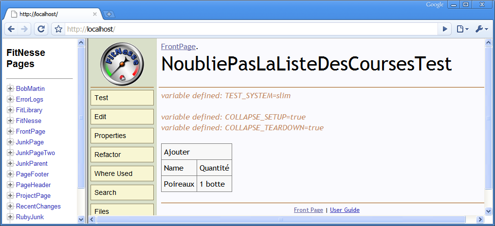
Un test fonctionnel écrit sous Fitnesse.
Le Listing 5.5 présente la configuration du plugin Maven [23] permettant d’exécuter nos tests Fitnesse lors de la construction du projet.
<plugin>
<groupId>org.codehaus.mojo</groupId>
<artifactId>fitnesse-maven-plugin</artifactId>
<version>1.0-beta-2</version>
<configuration>
<fitnesses>
<fitnesse>
<hostName>myFitnesseServer</hostName>
<port>80</port>
<pageName>mySuitePage</pageName>
</fitnesse>
</fitnesses>
<failOnError>true</failOnError>
<classPathProvider>maven</classPathProvider>
</configuration>
</plugin>Ce plugin gère l’intégration du serveur Fitnesse, sur lequel nous enregistrons nos tests fonctionnels et leur pilotage depuis une exécution de Maven. Le paramètre classPathProvider, par exemple, permet de remplacer la gestion du classpath Fitnesse par celle de Maven, grâce à quoi nos déclarations de dépendances sont cohérentes avec le code exécuté par nos tests fonctionnels.
En une simple commande, nous pouvons demander l’exécution de notre
batterie de tests et valider le fonctionnement de notre application. La
simple commande mvn fitnesse:run suffit pour nous donner en quelques
minutes un rapport complet sur l’état d’avancement de notre
développement par rapport aux attentes exprimées par nos tests
fonctionnels.
Le paramètre failOnError permet de stopper la construction du projet si les tests fonctionnels ne sont pas entièrement validés, option que nous retiendrons pour automatiser notre livraison ou pour une campagne de non-régression entre deux versions.
Les tests fonctionnels, parfois aussi appelés tests d’acceptation, sont un excellent moyen de qualifier un projet par rapport aux exigences des utilisateurs. Leur intégration dans un projet Maven est un très bon moyen de mesurer le taux réel de couverture des besoins, alors que d’autres outils, basés sur les tests unitaires, vont refléter la couverture technique mais pas l’adéquation du code avec la demande.
Avec cette catégorie d’outils et la possibilité de les utiliser dans notre construction de projet sans installation préalable d’un matériel particulier, nous ouvrons la porte à un développement piloté par les besoins des utilisateurs. Si nos tests techniques, plus ou moins unitaires, permettent de valider le fonctionnement technique de notre application, cette nouvelle catégorie apporte une réelle plus-value à notre travail en étant disponible sur chaque poste de développement via une simple commande Maven.
Tester la charge et les performances
Tous les tests qui précèdent ont un point commun : ils sont mono-utilisateurs. Ils valident le fonctionnement de l’application mais pas sa capacité à traiter la charge d’utilisateurs simultanés et à éviter les interblocages et autres écrasements qui peuvent en résulter. Comme tous nos tests, des tests de charge de ce type sont intéressants à un instant t mais ils le sont beaucoup plus si on est en mesure de les rejouer à l’identique et d’analyser l’évolution des résultats. Et, bien sûr, ils deviennent rapidement indispensables si nous sommes en mesure d’automatiser le processus et d’agréger les résultats dans un outil de suivi.
Quel chef de projet ne rêve pas d’un tableau de bord lui indiquant, via une courbe synthétique, l’évolution de la capacité de son application semaine après semaine, à encaisser une charge de 100, 200 et 500 utilisateurs simultanés ?
Nous faisons appel à jMeter [24], outil de la fondation Apache, pour définir des scénarios de test. Cet outil permet d’enregistrer puis de rejouer à volonté des scénarios pour charger une application web, un service web SOAP, une base de données JDBC, un serveur de messagerie JMS, ou encore un annuaire LDAP… Il s’utilise le plus souvent en deux temps :
-
On se place au cours d’une première phase dans un mode d’enregistrement, pour lequel jMeter va agir en mandataire pour accéder à notre application et enregistrer toutes nos actions. Le résultat est un scénario d’utilisation de notre application que nous pouvons par la suite modifier ou instrumenter pour le rendre plus intelligent qu’une simple réexécution à l’identique ;
-
Le mode charge permet de rejouer notre scénario depuis plusieurs threads selon un ordonnancement à notre convenance. Il est ainsi possible de tester le comportement de notre application web sous 100 requêtes par seconde avec juste ce qu’il faut de délais aléatoires pour simuler une charge réaliste.
Une fois encore, nous faisons appel à un plugin Maven [25] pour faire le lien entre notre projet et cet outil. Celui-ci est cependant moins abouti que ceux que nous avons rencontrés jusqu’ici et il nous faudra le compiler par nos propres moyens. Pas de panique, une simple commande Maven suffit pour cela, comme l’indique la page de documentation du plugin. Si vous voulez éviter à chaque utilisateur cette tâche, soyez un peu patient et attendez la lecture du Chapitre 6.
Nos scénarios ont été enregistrés sous forme de fichiers jmx, le format utilisé par jMeter. Nous suivons la convention du plugin jmeter en les plaçant dans notre projet sous src/test/jmeter. Après une configuration minimale, il ne nous reste plus qu’à invoquer la commande mvn jmeter:jmeter pour envoyer à notre application les 50 requêtes par seconde qui vont vérifier sa bonne stabilité sous la charge :
<plugin>
<groupId>org.apache.jmeter</groupId>
<artifactId>maven-jmeter-plugin</artifactId>
<configuration>
<includes>
<include>consultation-50parSeconde.jmx</include>
<include>miseAJour-50parSeconde.jmx</include>
</includes>
</configuration>
</plugin>Cette intégration suppose que notre application est en cours de fonctionnement sur le serveur lorsque nous lançons la charge. Nous verrons au Chapitre 8 qu’il est également possible d’utiliser l’automatisation par Maven pour assembler notre application web, configurer un serveur d’application de test et démarrer le tout juste avant d’exécuter ce type de test.
Intégration continue
Le serveur d’intégration continue est utilisé pour l’instant pour valider l’exécution de nos tests unitaires. L’objectif est qu’il réagisse très vite pour nous signaler une maladresse ou une défaillance de l’un de nos neurones, ce qui est plus fréquent qu’on le voudrait.
Avec tous nos nouveaux profils, comment configurer l’intégration continue ? Nous voulons une couverture aussi complète que possible, mais sans réduire le temps de réaction du serveur. Une pratique courante est d’avoir une intégration continue en plusieurs passes :
-
Le serveur principal, qui scrute notre gestionnaire de code source pour identifier la moindre de nos modifications, est configuré pour réagir au plus vite. Il n’exécute que les tests unitaires et éventuellement quelques contrôles complémentaires peu coûteux ;
-
Un second serveur vient en complément. Il effectue une construction du projet plus poussée et passe les tests d’intégration plus consommateurs de ressources. Le lancement de ce serveur est piloté depuis le premier serveur, suite à une construction réussie.
Bien sûr, cela suppose de disposer de davantage de machines disponibles, mais n’oubliez pas ce que peut coûter un bogue identifié tardivement sur un projet, surtout si c’est pour constater finalement qu’il s’agit d’une étourderie, d’un « TODO » laissé négligemment dans le code, d’un copier-coller maladroit, ou d’une petite modif' sans grande importance qui en a finalement eu plus que prévu. Tout cela alors qu’on dispose de tout l’outillage nécessaire pour identifier de telles âneries. Les machines ne dorment pas, ne se plaignent pas, et surtout ne relâchent jamais leur attention lorsqu’il s’agit d’épier nos défaillances !
Profils et effets de bords
Emmanuel est confronté à un problème : il dispose de deux versions de nos fichiers de configuration :
-
une version de développement et de test, utilisant une base de données légère en mémoire et avec une sécurité minimaliste nécessaire pour nos tests ;
-
une version de production, ciblant notre cluster MySQL et verrouillant tous les accès.
|
La norme JavaEE prévoit comme seule solution de configuration d’une application le passage par des références JNDI. En faisant abstraction de la relative complexité que cela implique, il est surtout regrettable qu’il n’existe pas de solution simple et portable pour définir des paramètres de configuration à l’extérieur de l’archive WAR ou EAR, et de passer ainsi facilement d’une configuration de test à une configuration de production. |
Pour pallier ce problème, chacun invente sa solution :
-
emplacement des fichiers de configuration passés via le JNDI ;
-
variable système Java ajouté à la JVM du serveur d’application ;
-
chemin des fichiers de configuration ajouté dans le classpath du serveur ;
-
…
Chacune a ses avantages et ses inconvénients.
Nous avons mis en place un certain nombre de profils pour isoler des aspects coûteux ou dépendants de l’environnement. Emmanuel a l’idée d’utiliser le même mécanisme pour que le build du projet produise soit une version de développement, soit une version de production. L’ajout d’un petit paramètre -Pdev suffit à basculer sur la version de développement.
Génial ? C’est ce que nous avons pensé, avant de constater avec horreur que notre dernière version mise en production était une version de développement !
L’activation d’un profil modifie la nature de notre livrable, sans en
changer pour autant l’identité au sens Maven (groupId + artifactId
version). L’un de nous a par mégarde déployé sa version de
développement, sans qu’aucun mécanisme Maven ne puisse le prévenir de la
bévue (par respect pour sa famille, nous ne dénoncerons pas ici le
malheureux qui a fait cette bourde, cependant il nous est redevable de
deux douzaines de bières).
Les profils, comme nous l’avons vu dans ce chapitre, permettent de rendre des parties du build optionnelles, ou dépendantes de l’environnement. Un livrable construit sans exécuter les tests de performance reste le même livrable. Un livrable construit en changeant son contenu, même partiellement, n’est pas le même livrable et doit donc disposer d’une carte d’identité propre. Pour ce cas de figure, Maven prévoit le mécanisme de classifier, une sorte d’extension de l’artifactId, qui permet d’identifier une variante d’un même artefact (toutes les variantes partagent le même POM).
Pour mettre en œuvre ce principe, il suffit de prévoir dans notre profil dev, qui modifie la nature du livrable pour le faire basculer en mode allégé et facilement testable, d’associer au passage un classifier à notre artefact. Le livrable produit ne sera alors jamais en conflit avec son petit frère de production :
<profile>
<id>dev</id>
<build>
<plugins>
<plugin>
<groupId>org.apache.maven.plugins</groupId>
<artifactId>maven-jar-plugin</artifactId>
<version>2.3.1</version>
<configuration>
<classifier>dev</classifier>
</configuration>
</plugin>
...Conclusion
Lorsqu’on pousse la logique d’outiller l’application de tests automatisés, on peut aller très loin, et de nombreux outils vont venir nous épauler dans cette tâche. Le Web fourmille d’ailleurs de nouvelles idées sur le sujet, qui deviendront peut-être les standards de développement de demain. Maven prévoit les mécanismes nécessaires pour venir les greffer dans la construction du projet, au prix parfois de quelques acrobaties techniques tant les défis à relever peuvent être complexes.
La Figure 05-03 résume les outils que nous venons d’évoquer, ce qui est loin de couvrir toute l’étendue de l’outillage de test disponible même en ne considérant que les outils Open Source. On y voit le positionnement de chaque outil en fonction du niveau d’abstraction, proche du code ou bien du fonctionnel, et de la spécialisation d’un outil vis-à-vis d’une technologie donnée.
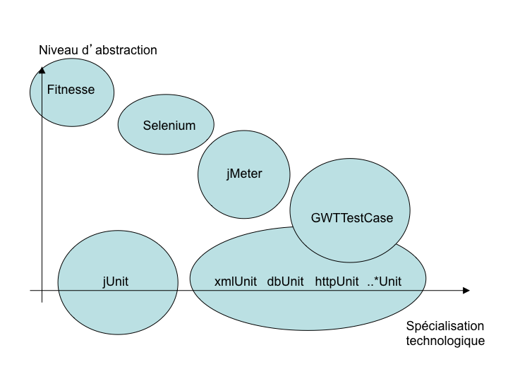
Positionnement de nos outils de test.
Les profils permettent de rendre optionnelles toutes ces étapes délicates ou coûteuses et limitent l’impact qu’elles peuvent avoir sur l’ensemble de l’équipe alors qu’elles n’en concernent qu’une petite partie. Tester efficacement une application est une tâche tellement large qu’elle ne peut pas se résumer à quelques plugins. Si vous ne devez retenir qu’une chose, c’est que tout cet outillage peut prendre sa place dans votre configuration Maven et gagnera en homogénéité. Placez vos scripts de test sous SVN et voyez comment configurer leur exécution depuis Maven. Ceux qui vous suivront vous en remercieront pour le temps que vous leur ferez gagner.
Partie 2
Dans cette deuxième partie, nous allons confronter Maven à des contraintes assez particulières, celles du monde de l’entreprise. Ici règnent la loi et l’ordre, mais aussi l’urgence et le manque de moyens. Il faut faire bien – très bien, même – avec les gens dont on dispose. Il faut respecter à la lettre le cahier des charges, répondre aux critères de qualité et de traçabilité, être capable à tout moment de passer la main à un autre développeur pour faire face à des fluctuations d’effectif.
Maven est un projet né dans le monde de l’Open Source, fondé sur la collaboration bénévole de développeurs venus d’horizons très variés. Aussi étonnant que cela puisse paraître, une communauté de ce type est ce qu’il existe de plus exigeant : les volontaires ne prennent aucun plaisir à passer de longues heures à corriger un bogue, ils apprécient peu de voir leur code « bousculé » par un autre développeur qui a choisi des règles d’écriture différentes, et rechignent à expliquer longuement au petit nouveau les secrets de leur code. Ils sont donc les premiers à vouloir définir et appliquer un cadre commun, des règles de lisibilité, et à s’outiller en conséquence pour que toutes les tâches rébarbatives ou risquées soient automatisées.
Nous allons voir dans quelle mesure la communauté Open Source Maven a devancé les attentes du monde de l’informatique professionnelle, en proposant, via son outil, une gestion de projets, d’une part, très propre et disciplinée et, d’autre part, très simple et accessible à tous.
Nos compères prennent bien du plaisir sur leur projet de gestion de liste de courses. De nombreuses fonctionnalités et technologies de pointe en ont fait un outil riche et attrayant, si bien qu’une petite communauté d’utilisateurs commence à réclamer les prochaines versions avec impatience. Les choses aboutissent de façon inespérée : un investisseur, un « business angel » à la recherche de la perle rare, leur propose de passer du statut d’amateur à celui de professionnels de l’informatique en montant une start-up pour porter le projet. LesOutilsIndispensablesDeLaMénagère.com est né !
Alors que Maven devenait un outil de plus en plus utilisé, quelques développeurs du projet ont fondé en 2004 une société dédiée au support et au développement de leur bébé. Mergere était né. L’aventure a tourné court et a donné naissance en 2007 à deux sociétés qui continuent de soutenir le développement de Maven, Sonatype et Devzuz (rachetée depuis par Exist Global).
Le logo de l’entreprise de notre « histoire romancée d’un projet fictif » est un clin d’œil à cette aventure humaine qui montre un autre visage du développement Open Source.
Chapitre 6 : Gestion avancée des dépendances
Notre projet commence à prendre une tournure « intéressante » du point de vue de ses fonctionnalités. Sous le capot, par contre, c’est un peu un mélange hétéroclite de technologies diverses, chacune ayant apporté sa petite touche à l’édifice.
Jusqu’ici, nous nous étions contentés d’ajouter des dépendances, sans y regarder de trop près. Nous avons déjà constaté que cela pouvait avoir des effets de bord en introduisant des doublons dans nos bibliothèques. Nous lançons donc une analyse un peu plus stricte de nos dépendances. Première étape, reconstruction de l’intégralité du projet sur un poste de développement fraîchement installé.
Oracle, quand tu nous tiens
La construction du projet échoue dans sa toute première phase. Voilà qui n’est pas très encourageant ! Maven signale le problème de dépendance indiqué au Listing 6.1.
[ERROR] BUILD ERROR
[INFO] ------------------------------------------------------------------------
[INFO] Failed to resolve artifact. Missing:
----------
\1) com.oracle:ojdbc14:jar:10.2.0.2.0
Try downloading the file manually from the project website.
Then, install it using the command:
mvn install:install-file -DgroupId=com.oracle -DartifactId=ojdbc14 -Dversion=10.2.0.2.0 -Dpackaging=jar -Dfile=/path/to/file
Alternatively, if you host your own repository you can deploy the file
there:
mvn deploy:deploy-file -DgroupId=com.oracle -DartifactId=ojdbc14 -Dversion=10.2.0.2.0 -Dpackaging=jar -Dfile=/path/to/file -Durl=[url] -DrepositoryId=[id]
Path to dependency:
1) fr.noubliepaslalistedescourses:noubliepaslalistedescourses:jar:1.0.0-SNAPSHOT
2) com.oracle:ojdbc14:jar:10.2.0.2.0
----------
1 required artifact is missing.
for artifact:
fr.noubliepaslalistedescourses:noubliepaslalistedescourses:jar:1.0.0-SNAPSHOT
from the specified remote repositories:
central (http://repo1.maven.org/maven2),
----
Un moteur de recherche pour Maven
Notre déclaration de dépendance est-elle incorrecte ? Peut-être n’utilisons-nous pas le bon identifiant de groupe en spécifiant com.oracle, alors qu’il faudrait indiquer com.oracle.jdbc, com.oracle.driver ou encore oracle tout court ? Nous pouvons, bien sûr, nous lancer dans une recherche manuelle mais cela risque rapidement d’être pénible et pas forcément très concluant.
D’autres ont eu ce même problème et ont donc mis en place des moteurs de recherche spécialisés pour Maven, par exemple, le site mvnrepository.com qui offre une indexation du dépôt central utilisé par défaut par Maven. Nous y faisons une recherche sur le mot « oracle », et nous obtenons rapidement la confirmation attendue sur l’identité de notre pilote JDBC (voir Figure 06-01).
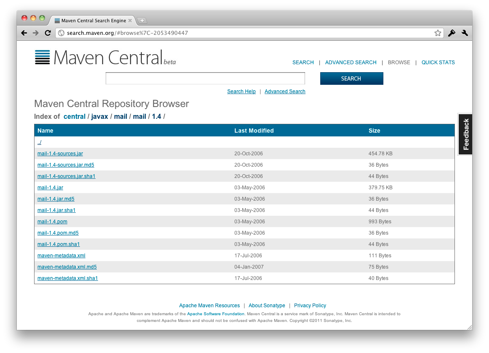
Recherche d’un artefact via un moteur de recherche spécialisé.
Nous voilà au moins rassurés pour l’identification de notre dépendance : nous avons spécifié les groupe, artifactId et version corrects. Mais alors, pourquoi Maven ne parvient-il pas à télécharger ce pilote JDBC ?
La réponse est relativement évidente si vous vous connectez au site Oracle : la distribution de cette bibliothèque est soumise à l’accord d’Oracle, et elle ne peut être téléchargée qu’après enregistrement sur le site de l’éditeur. L’équipe Maven qui gère le dépôt ne peut donc pas la mettre librement à disposition de chacun, tout juste peut-elle proposer un fichier POM et un groupe clairement défini pour ce pilote.
Il revient donc à chacun d’aller télécharger manuellement le fichier indiqué.
Pourquoi publier un POM sans JAR ?
Quel intérêt y a-t-il à publier sur central le POM du pilote Oracle si la bibliothèque ne l’accompagne pas ? Un élément de réponse figure dans le paragraphe qui précède : toute personne utilisant Maven qui recherche ce pilote va au moins utiliser des identifiants de groupe, d’artefact et les versions déjà référencées. Cela assure l’homogénéité des projets. Ensuite, le fichier POM compte de nombreuses métadonnées qui peuvent informer sur la bibliothèque, en particulier :
-
l’organisation qui développe cette bibliothèque ;
-
une description qui peut nous aider à confirmer son identité ;
-
la licence sous laquelle elle est distribuée, ce qui peut dans certains cas être rédhibitoire (pensez, par exemple, aux conditions particulières de certaines licences propriétaires ou à la licence GPL qui s’applique par « contamination » au projet dans son ensemble) ;
-
l’URL où on peut la télécharger. Tout site Internet respectueux de ses utilisateurs ne changerait jamais une URL de téléchargement, n’est-ce pas ?
L’intégralité de ces métadonnées n’est cependant pas toujours disponible ce qui est fort dommageable. En particulier, l’information de licence devrait être plus généralement indiquée, car elle peut fortement impacter les projets qui utilisent une dépendance.
|
La licence GPL s’applique à des logiciels libres et autorise l’utilisation totalement gratuite du logiciel considéré. Elle impose cependant que la modification ou l’utilisation du logiciel sous GPL dans un autre logiciel ne puisse se faire que dans les mêmes conditions de licence. Dit plus simplement, l’utilisation d’une bibliothèque sous GPL impose que votre projet soit développé sous cette licence. Si votre projet est à usage interne, ce n’est pas nécessairement un problème (bien que cela soit sujet à interprétation), mais si vous envisagez de le diffuser, l’impact est énorme. Cela étant dit, certaines licences propriétaires sont largement aussi contraignantes lorsqu’on lit le détail des petites lignes ;). L’information de licence n’étant pas toujours disponible, il n’est pas possible d’automatiser de manière fiable l’analyse des licences sur un projet. Ce serait cependant une fonctionnalité très intéressante de Maven. |
Installer le fichier manquant
Grâce aux informations du POM, nous sommes enfin en mesure de récupérer la bibliothèque du pilote JDBC Oracle en suivant la procédure légale de téléchargement, après avoir lu en détail la longue page d’acceptation de la licence.
La solution que propose spontanément Maven, c’est d’installer la bibliothèque manquante à la main. La commande à utiliser a été fournie dans le message du Listing 6.1. Il nous suffit de faire un copier-coller dans notre console en indiquant le fichier en question… ce qui suppose tout de même que nous l’ayons trouvé quelque part et, bien sûr, que nous soyons parfaitement certains de l’identité du fichier.
Le numéro de version à 5 chiffres utilisé par Oracle n’est pas très rassurant de ce point de vue. Il y a de toute évidence de nombreuses microversions, sans doute des correctifs successifs dont nous n’avons pas strictement besoin, mais qui sait ?
C’est une solution rapide, tout à fait légitime si nous disposons de la bibliothèque en question par un autre moyen.
Les dépendances « System »
Nous avons donc une solution pour le pilote Oracle ; cependant, chacun de nous doit l’installer dans son dépôt local. Même si nous nous le passons par mail, clé USB ou partage de répertoire interposé (ce qui sous-entend que nous n’avons pas très bien lu la longue page de licence du site Oracle), ce n’est pas très pratique.
D’un point de vue légal, chaque développeur doit accepter individuellement la licence Oracle pour obtenir le fameux pilote. Une façon courante de l’obtenir est donc de télécharger et d’installer l’environnement de développement Oracle (client natif et autres outils) qui comprendra entre autres le fameux pilote. Dans ce cas bien précis, nous pouvons indiquer une dépendance system sous la forme :
<dependency>
<groupId>com.oracle</groupId>
<artifactId>ojdbc14</artifactId>
<version>10.2.0.3.0</version>
<scope>system</scope>
<systemPath>${env.ORACLE_HOME}/client/java/ojdbc14.jar</systemPath>
</dependency>Le scope system utilisé ici permet de pointer vers un emplacement du poste de développement pour accéder à une ressource locale qui ne peut pas être gérée par le mécanisme de téléchargement des dépendances, pour des raisons légales la plupart du temps. Les dépendances de ce type sont accompagnées d’un élément supplémentaire systemPath (qui n’est pas valide en dehors de ce cas). Ce chemin indique l’emplacement physique de l’artefact.
Évidemment, ce cas de figure correspond à une lecture stricte du contrat de licence Oracle, et, pour des questions pratiques, vous préférerez très certainement partager entre développeurs d’une même équipe le fichier JAR téléchargé une fois pour toutes. Il est très improbable qu’Oracle vous envoie ses brigades antipirates pour violation de la licence, surtout si vous venez de l’acheter pour installer la base de données sur votre serveur bi-processeur quad-core [26] assortie d’un contrat de support ;-).
Nous pourrions aussi être tentés de détourner ce scope et d’intégrer le JAR dans le gestionnaire de code, ce qui permettrait à chacun d’en disposer d’une manière simple sans se poser plus de questions :
<dependency>
<groupId>com.oracle</groupId>
<artifactId>ojdbc14</artifactId>
<version>10.2.0.3.0</version>
<scope>system</scope>
<systemPath>${basedir}/lib/ojdbc14.jar</systemPath>
</dependency>Cela nous évite de devoir échanger le fichier à la main. Cependant, stocker des binaires dans notre gestionnaire de code source est quelque peu contre-nature. Par ailleurs, si chaque projet qui utilise une base Oracle doit intégrer un répertoire lib, nous allons être témoins de la multiplication rapide des fichiers JAR sur nos postes de développement.
Créer son propre dépôt

Carlos n’apprécie pas de nous voir échanger des JAR par clé USB juste pour obtenir notre fameux pilote JDBC. Il aime la gestion transparente et totalement automatisée des dépendances par Maven, aussi décide-t-il de mettre en place notre propre dépôt privé pour venir compléter ce qui pourrait manquer sur le dépôt central de Maven. En combinant les deux, nous ne devrions plus être gênés par ces histoires de JAR manquant.
Cette solution est la plus couramment retenue et également la plus souple. Créer son propre dépôt privé — pour les bibliothèques dont la diffusion n’est pas libre ou pour héberger ses propres développements à destination d’autres projets internes — permet de gérer de manière centralisée et définitive ces problèmes de dépendances récalcitrantes.
Physiquement parlant, un dépôt n’est rien de plus qu’un système de fichiers accessible depuis les postes de développement soit directement (protocole file:), soit via un serveur HTTP. Il n’est donc pas bien compliqué de faire héberger sur votre serveur intranet un sous-domaine http://repository.masociete.com.
Pour mettre à disposition notre driver Oracle, il nous suffit donc de créer l’arborescence adéquate et d’y placer le JAR sous le nom approprié. Il reste alors à indiquer à Maven l’emplacement de notre dépôt « maison », ce qui se traduit par un élément <repository> dans le POM :
<repositories>
<repository>
<id>private</id>
<url>http://repository.noubliepaslalistedescourses.fr</url>
</repository>
</repositories>|
Plutôt que de regrouper nos déclarations de dépôts dans la configuration, nous pouvons les placer dans le fichier settings.xml utilisé pour configurer Maven. Le gestionnaire de dépôt Nexus peut même générer ce fichier avec les déclarations adéquates. |
Contrôle d’identité, vos papiers s’il vous plaît !
Le dépôt de bibliothèques ne contient pas seulement le fichier POM de notre pilote JDBC, mais aussi deux fichiers suffixés md5 et sha1 associés à l’archive JAR. Il s’agit des sommes de contrôle de l’archive – qui, elle, n’est pas disponible dans le dépôt. Ces sommes de contrôle sont l’équivalent de nos empreintes digitales. Un bit modifié dans le JAR donnera une somme de contrôle différente. C’est donc un excellent moyen pour valider un téléchargement, toujours sujet à un risque de défaillance du transfert réseau.
Ce contrôle, Maven le fait de manière systématique et totalement transparente… du moins tant que le contrôle n’échoue pas ! Dans notre cas, la bibliothèque téléchargée ne correspond pas aux sommes de contrôle mises à disposition dans le dépôt Maven.
Ce n’est cependant qu’une alerte, car dans un monde imparfait, certaines sommes de contrôle mises à disposition sont malheureusement incorrectes. Dans le doute, nous téléchargeons à nouveau le pilote JDBC Oracle. Il est vrai que la connexion ADSL n’est pas très en forme aujourd’hui, sans parler de ce satané virus qui a infecté notre réseau la semaine dernière.
Le résultat est sans appel : le second fichier téléchargé, une fois installé dans notre dépôt privé, corrige le problème. Peut-être aurions-nous constaté un problème immédiat avec ce pilote, peut-être ne serait-il apparu que très tardivement, mais dans tous les cas, remonter jusqu’à l’origine du problème aurait été bien délicat. Qui aurait l’idée de mettre en question le JAR Oracle alors qu’il y a tant de raisons pour que notre application ne fonctionne pas ?
Rebelote : mais où est javax.jms ?
Notre problème de dépendance sur le pilote JDBC Oracle est enfin résolu de manière satisfaisante. Mais voilà que nous obtenons à nouveau un message d’erreur comparable, concernant cette fois l’API Java Messaging Service (JMS pour les intimes).
Missing: ---------- \1) javax.jms:jsm:jar:1.0.2b Try downloading the file manually from the project website.
La solution est toute trouvée, puisque le problème est équivalent à celui que nous avons rencontré avec Oracle. Un rapide coup de fil à Carlos permet de mettre à disposition le JAR manquant sur notre dépôt privé.
Cependant, il ne s’agit pas d’un produit propriétaire mais bien d’une API standard de Java, et même pas spécialement exotique ou récente. Comment est-il possible que Maven ne dispose pas de cette bibliothèque ? Il doit bien y avoir des millions de développeurs à l’utiliser chaque jour sur des projets JavaEE.
Une lecture approfondie de la documentation, et plus particulièrement de la Sun Binary Code License, répond à cette question. Comme de nombreuses API, JMS en version 1.0.2 a été diffusé par SUN sous une licence contraignante, interdisant la libre distribution de l’archive Java. Il est donc légalement interdit de mettre ce fichier à disposition d’autres utilisateurs, et en particulier central, le dépôt officiel de Maven, doit se plier au respect de cette règle.
La licence SBCL impose en fait à chaque utilisateur de cocher la petite case « J’accepte la licence d’utilisation » avant de pouvoir obtenir l’archive Java tant convoitée. Ce petit raffinement qui paraît anodin est un obstacle incontournable au téléchargement automatisé des bibliothèques.
Pourquoi Maven ne propose-t-il pas d’accepter la licence ?
Au même titre que le site de téléchargement de SUN, Maven pourrait — techniquement parlant — proposer d’accepter la licence avant d’effectuer le téléchargement. Cela serait satisfaisant sur le plan légal et éviterait ce genre d’aberration pour les utilisateurs. L’équipe du projet Maven n’a cependant pas suivi cette option.
D’une part, cela introduit une interaction avec l’utilisateur qui n’est pas compatible avec le mode de fonctionnement « batch » prévu par Maven (qui peut aussi s’exécuter sur des machines automatisées).
D’autre part, l’équipe étant très attachée aux valeurs du logiciel libre, elle a fait front pour faire évoluer l’approche de SUN pour ses licences, au point que Java 7 est aujourd’hui totalement libre ! Une belle victoire, qui nous permet de télécharger librement la bibliothèque JMS 1.1 depuis le dépôt central. SUN n’a cependant pas poussé la courtoisie jusqu’à changer la licence de ses anciennes bibliothèques, d’où notre problème avec JMS 1.0.2.
Ce second exemple montre bien à quel point la problématique des licences ne doit pas être négligée. Si, honnêtement, personne ne lit attentivement les détails de ces textes plus ou moins abscons, leur influence sur un projet peut être énorme. Le téléchargement automatique des bibliothèques par Maven est bien pratique, mais tend à nous faire oublier que nous ne vivons pas dans un monde de Bisounours où tout est gratuit et librement diffusable. Chaque bibliothèque introduit des contraintes d’utilisation, parfois les restrictions d’une licence commerciale, parfois les obligations d’une licence libre.
Gérer son dépôt privé
Ce qui devait au départ être une tâche de fond pour Carlos se révèle rapidement un casse-tête. Dans un premier temps, Carlos a voulu faire plaisir à tout le monde — c’est un peu une deuxième nature chez lui — et a donc répondu favorablement à toutes nos demandes :
Fabrice : j’ai besoin de trucUtils, peux-tu l’ajouter ?
Carlos : pas de soucis. D’où ça vient, quelle version ?
Fabrice : je l’ai trouvé sur sourceforge, et ça doit être la version 1.2
Carlos : OK, c’est en place.
Tout aurait pu se passer dans cette bonne humeur générale jusqu’à ce que, d’une part, Carlos croule sous les demandes, mais surtout que les choses se compliquent sensiblement :
Olivier : Salut Carlos, j’aurais besoin de trucUtils.
Carlos : Pas de soucis, dès que j’ai deux minutes. D’où ça vient, quelle version ?
Olivier : De trucUtils.org, et c’est la version 1.2
Carlos : Attends, ça me dit quelque chose… ça serait pas le même que net.sourceforge:trucUtils ?
Olivier : … hum … non, celui-là ne fait que 18 Ko, ça devait être la version bêta. La version finale fait 21 Ko.
Carlos : OK. Ça t’ennuie si je le renomme « 1.2-final » dans le groupe net.sourceforge ?
Olivier : Ben… c’est un peu bête, toute leur doc est sur trucUtils.org !
Je vous laisse imaginer la suite de la journée de Carlos. Rapidement, notre dépôt « maison » compte des doublons, des erreurs de métadonnées ou des versions farfelues pour compenser les erreurs précédentes.
Maven 1 ou Maven 2 ?
De nombreux dépôts de bibliothèque Maven existent en version « Maven 1 » ou « Maven 2 ». Le premier format est conservé pour des raisons historiques. Le second présente une structure plus hiérarchisée et des métadonnées supplémentaires. Maven 2 sait utiliser les deux formats. Le dépôt central, qui pointe physiquement sur les mêmes fichiers, est accessible au format Maven 1 [27]
Moralité : la gestion d’un dépôt n’est pas à prendre à la légère. Il ne s’agit pas simplement de pallier les manques du dépôt existant, mais aussi de s’assurer de l’unité de notre dépôt et de sa cohérence avec ce qui est disponible en ligne.
Métadonnées
Les choses se compliquent franchement lorsque nous commençons à utiliser des composants en version SNAPSHOT.
Nous utilisons une version SNAPSHOT du plugin GWT pour la compilation de notre interface web. Rappelez-vous que ce mot clé à la fin d’un numéro de version indique qu’il s’agit d’un artefact en cours de développement, sujet à modifications. Autrement dit, Maven va tenter, à intervalles réguliers, d’en télécharger une mise à jour. Ce sont les métadonnées qui lui indiquent si une nouvelle version est disponible. Par défaut, Maven va les consulter toutes les vingt-quatre heures.
Nous avons dû faire nos propres modifications dans ce plugin pour le faire fonctionner selon nos besoins. Nous les avons diffusées à l’équipe qui le développe, mais nous ne pouvons attendre qu’elles soient acceptées. Nous avons donc placé dans le dépôt privé une version modifiée du plugin. Pour que celle-ci soit utilisée, nous devons mettre à jour le fichier de métadonnées associé, sans quoi Maven ne verra rien de nouveau et ne la prendra pas.
Carlos doit donc manuellement fusionner le fichier de métadonnées qu’il a obtenu du dépôt officiel contenant le plugin avec les données de notre propre version. Voilà un travail bien passionnant qu’il va en plus falloir répéter à chaque correction ! Ici aussi, un outillage adéquat s’impose.
Passer à un « véritable » gestionnaire de dépôt
Carlos perd un temps fou dans la gestion de son dépôt privé, car les « utilisateurs » n’ont pas de moyen simple pour rechercher une bibliothèque. Il manque aussi des outils pour vérifier le contenu du dépôt : les sommes de contrôle sont-elles présentes et correctes ? Les fichiers POM sont-ils valides ? Enfin, et c’est loin d’être négligeable, nous dépendons d’une connexion à Internet pour tout ce qui n’est pas dans notre dépôt privé. Une coupure réseau et c’est l’impasse assurée pour ceux qui n’ont pas déjà téléchargé toutes les dépendances nécessaires.
Il est temps de passer à la vitesse supérieure et de faire appel à un outil dédié pour la gestion de notre dépôt privé.
Maven utilise un fichier de configuration local, placé sous $HOME/.m2/settings.xml. Ce fichier XML (un de plus !) permet de déclarer un miroir qui va remplacer les accès à certains dépôts depuis le poste de l’utilisateur. Nous pouvons donc facilement forcer Maven à ne plus accéder directement à central, mais à utiliser un serveur miroir sous notre contrôle et dont nous pourrons maîtriser la disponibilité et le contenu.
|
Pour les utilisateurs de Windows, le $HOME est le répertoire C:\Documents and Settings\votreNom, et sous Windows 7 sous C:\Utilisateurs\votreNom. La notion de HOME est évidemment plus naturelle pour les « unixiens » et autres « mac’istes ». |
<settings>
<mirrors>
<mirror>
<id>private</id>
<mirrorOf>central</mirrorOf>
<url>http://repository.noubliespaslalistedescourses.fr</url>
</mirror>
</mirrors>
<settings>Un miroir de central
Notre première idée est d’établir un site miroir du dépôt central de Maven, ce qui nous permettra de faire abstraction de la connexion Internet lorsque celle-ci est défaillante, ou tout simplement d’économiser la bande passante.
L’idée est simple, facile à mettre en œuvre avec les outils courants. Nous constatons cependant très vite qu’elle a ses limites. D’une part, le miroir occupe plusieurs gigaoctets pour un grand nombre de bibliothèques obsolètes ou totalement dénuées d’intérêt pour notre développement. Ensuite, nous ne disposons toujours d’aucun outil pour maintenir de manière fiable et ergonomique le contenu de ce site. Les métadonnées Maven peuvent être complètement aberrantes, les artefacts dupliqués en de nombreux endroits, sans qu’aucun outil d’audit nous en informe. Bref, cette solution n’apporte rien de plus, il faut un outil dédié.
|
En environnement d’entreprise, on désire souvent éviter de dépendre de ressources Internet non maîtrisées. Une solution consiste alors à définir une configuration de miroir qui force Maven à passer par notre dépôt interne, quelles que soient les URL déclarées dans les éléments <repositories> de nos projets. |
Un gestionnaire d’artefacts
En marge du projet Maven, la communauté des développeurs a créé le projet « Maven Repository Manager », devenu par la suite Archiva [28]. Cet outil n’est pas seul dans cette catégorie et doit faire face à la concurrence de Nexus [29] ainsi que d’Artifactory [30]. Tous sont disponibles en open source, les deux derniers proposant une option de support professionnel qui peut être indispensable si l’on considère qu’une entreprise confie la productivité de ses développements à ces outils. Pour ne pas faire de jaloux, nous avons choisi de proposer une capture d’écran pour chacun (voir Figures 06-02 à 06-04).
Ces outils sont des applications web dédiées à la gestion de dépôt Maven. Ils assurent un grand nombre de fonctionnalités :
-
recherche parmi les artefacts présents dans le dépôt ;
-
identification d’un JAR par recherche de son empreinte MD5 ;
-
miroir d’un autre dépôt, typiquement pour conserver un cache local de central et/ou d’autres dépôts ;
-
conversion à la volée d’un dépôt Maven 1 au format Maven 2 ;
-
indexation des dépôts et publication d’un index unifié ;
-
téléchargement (upload) de nouveaux artefacts, l’équivalent de la commande
mvn install-file; -
interface graphique d’administration – plus ou moins sexy selon l’outil considéré ;
-
contrôle d’accès – pratique pour autoriser un utilisateur à gérer certaines parties du dépôt sans prendre le risque de tout casser ;
-
mécanismes d’audit, d’indexation et de contrôle d’intégrité en tâche de fond.
La fonctionnalité de miroir est probablement celle qui vous fera installer Archiva pour votre entreprise. En disposant d’un miroir sous votre contrôle du dépôt central, vous pourrez économiser la bande passante de votre accès Internet, ne pas dépendre de la bonne santé d’Internet et obtenir des temps de réponse impressionnants pour les demandes d’artefacts déjà placés dans le cache.
C’est en effet ce que Carlos met en place : notre dépôt privé sert désormais à la fois d’hébergement pour nos bibliothèques non publiques et de miroir pour les téléchargements depuis central. Le gestionnaire fonctionne en mandataire (proxy) : pour chaque demande d’artefact non encore placé dans le miroir, il va consulter les dépôts configurés et compléter le cache en conséquence. Ainsi, les demandes suivantes seront traitées immédiatement, sans dépendance à Internet. Ce fonctionnement est nettement moins consommateur qu’un miroir complet du dépôt central dont nous n’exploiterons qu’une infime partie des gigaoctets de bibliothèques.
En fonction des besoins des projets, Carlos va rapidement ajouter d’autres dépôts à la configuration : le dépôt java.net apparaît vite indispensable, car il contient un certain nombre d’API Java standard ; le dépôt de JBoss, qui propose les dernières versions d’Hibernate ; le dépôt SpringSource, qui offre les dernières versions MileStone du framework Spring ; et ainsi de suite…
Plutôt que de nous obliger à déclarer un <mirror> dans notre fichier settings.xml à chaque nouvel arrivant dans la configuration du gestionnaire de dépôt, Carlos met en place un dépôt virtuel, comme le montre la Figure 06-02. Désormais, sous l’appellation publique, se cachent cinq dépôts de bibliothèques, dont nous complétons au besoin le contenu via l’interface d’administration. Notre fichier settings.xml évolue alors comme suit :
<settings>
<mirrors>
<mirror>
<id>releases</id>
<mirrorOf>*</mirrorOf>
<url>http://repository.noubliespaslalistedescourses.fr/content/groups/public</url>
</mirror>
</mirrors>
<settings>|
La syntaxe <mirrorOf>*</ mirrorOf> permet d’intercepter toute tentative de Maven d’accéder à un dépôt quel qu’il soit, et de la rediriger vers notre gestionnaire. Nous sommes ainsi assurés qu’aucune bibliothèque ne sera utilisée sans avoir été mise en cache sur notre serveur et prévue sur notre liste de dépôts. Si vous préférez différencier les dépôts contenant des snapshots, utilisez alors la syntaxe combinée <mirrorOf>*,!codehaus.snapshot< mirrorOf> et définissez un second miroir pour chacun des dépôts snapshot auxquels vous accédez. Figure 06-02 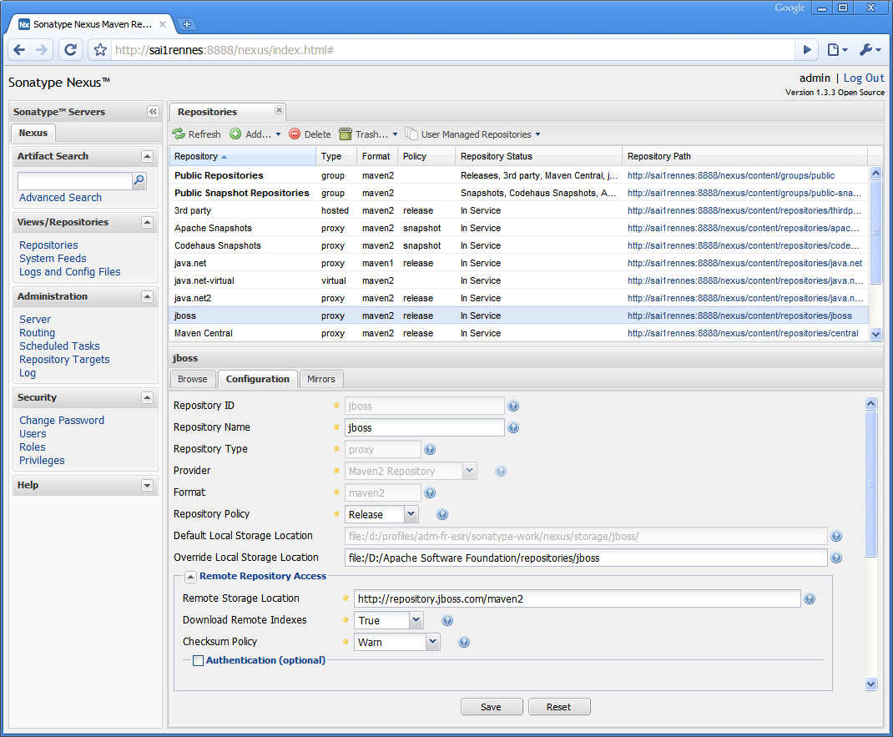 |
Configuration d’un dépôt dans Nexus.
Les mécanismes d’audit permettent à Carlos de contrôler la bonne santé de son dépôt. Il peut même programmer des purges et obtenir des statistiques d’usage. Enfin, le mécanisme de gestion des droits des utilisateurs lui permet de déléguer certaines tâches à ses collègues. Certains d’entre nous sont ainsi autorisés à publier sur le dépôt les artefacts de nos composants communs, sans pour autant risquer de compromettre la cohérence globale.
L’énorme point fort d’un gestionnaire de dépôt sur un simple serveur HTTP est qu’il prend en charge les métadonnées Maven, fusionnant plusieurs dépôts à la volée. Du point de vue de l’utilisateur, le gestionnaire apparaît alors comme un unique dépôt. La gestion manuelle des métadonnées est complexe et source d’erreur ; son automatisation est un point fort de ces outils.
Les outils d’indexation et d’audit fournissent une synthèse des problèmes identifiés, et la programmation de tâches de fond permet de purger et de corriger automatiquement les erreurs courantes dans le dépôt sans intervention humaine. La Figure 06-03 montre par exemple le rapport d’audit sur un dépôt administré par Archiva, et les différents problèmes qu’il a su y détecter.
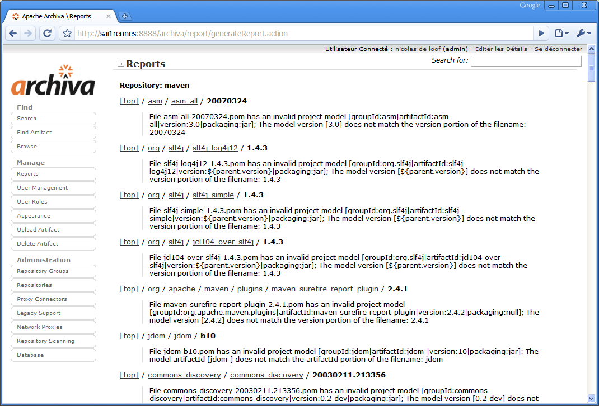
Rapports d’audit d’Archiva.
Le gestionnaire de dépôt permet aussi une recherche globale, fournissant une vue graphique des métadonnées, comme le montre la Figure 06-04. La recherche peut s’effectuer sur le nom de l’artefact, mais peut aussi se baser sur une classe définie par une bibliothèque ou servir à identifier un JAR en calculant son empreinte et en la comparant à l’index. Le gestionnaire expose également ses index pour une intégration dans les environnements de développement (voir le Chapitre 9). Enfin, un espace de stockage permet la diffusion des développements au reste de l’équipe, servant de dépôt « public-privé ».
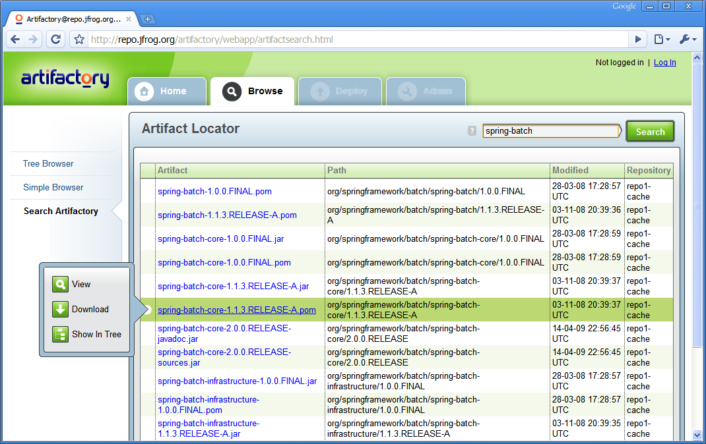
Page de recherche d’Artifactory.
Conclusion
Plein de bonne volonté, Carlos a vite compris que la gestion d’un dépôt Maven n’est pas aussi simple qu’il y paraît. La gestion purement manuelle trouve ses limites et est bien incapable de prendre en charge la complexité liée à la quantité et à la diversité des artefacts. Un outil dédié comme Archiva est non seulement utile mais rapidement indispensable. Ses fonctionnalités annexes sont incontournables pour une gestion fiable du dépôt interne.
Notre équipe de développement est désormais sereine face à la gestion de ses dépendances. Nous passons systématiquement par notre serveur Archiva via la syntaxe <mirrorOf>* et sommes assurés de ne pas dépendre volontairement ou non d’un dépôt non configuré dans notre gestionnaire de dépôt. Nous ne sommes plus fondamentalement dépendants de l’accès à Internet et pouvons obtenir en un temps record les dépendances de nos projets. Enfin, nous pouvons au besoin publier en interne les artefacts qui nous manqueraient.
Chapitre 7 : Quand le projet devient trop lourd
Notre application a fait un joli bout de chemin. D’un embryon de projet avec trois classes, elle est devenue un vaste logiciel couvrant des accès à une base de données, la communication avec des services web, un module d’authentification des utilisateurs, de nombreux mécanismes d’administration et de supervision, sans parler de notre interface web et de nos diverses extensions pour le poste client. Tout cela nécessite de multiples bibliothèques, sans même parler des nombreux outils de test. Il est temps de donner au projet un peu plus de structuration pour y voir plus clair.
Un projet — un artefact
Une règle de base que nous avons rapidement comprise avec Maven est qu’un projet ne peut produire qu’un seul artefact. Inutile donc de chercher à contourner la logique de l’outil pour faire de notre projet une hydre à cinq têtes qui serait capable d’un côté de produire l’application web et de l’autre le module d’administration, sans revoir la structure Maven qui l’accompagne.
|
Cette affirmation n’est pas tout à fait exacte et nous l’avons déjà vu au Chapitre 4 : la notion de classifier permet d’attacher plusieurs artefacts à un projet, cependant ceux-ci partagent nécessairement le même POM et ne peuvent constituer que des variantes ou des artefacts secondaires. |
Nous avons déjà été confrontés à ce problème lorsque François a proposé une version Flex de notre interface Web (voir le Chapitre 3). La construction d’un binaire SWF était tout à fait possible, mais nécessitait un projet et un POM dédié. Pour l’instant, nous avons fait avec cette contrainte en créant autant de fichiers POM que nous avions de composants indépendants à construire.
Le premier écueil que nous rencontrons, suite aux nombreux outils et règles de développement que nous avons mis en place, est la duplication de la configuration Maven entre les différents POM. Les mêmes plugins, les mêmes paramètres, les mêmes versions de dépendances sont multipliés dans chacun de ces fichiers sans mutualisation.
Face au formalisme XML du fichier POM, notre premier réflexe est de rechercher un mécanisme d’import de fragments XML. C’est typiquement ce que permet Ant ou la plupart des outils basés sur XML. On retrouve ainsi souvent dans les projets Ant d’envergure un build.xml accompagné d’un build-common.xml. On retrouve exactement le même mécanisme pour la déclaration de services web dans un fichier WSDL. La balise <xs:import> permet de décomposer le document XML en sous-parties plus simples ou focalisées sur un domaine particulier.
Grosse déception : le schéma XML qui dirige la syntaxe du fichier POM ne prévoit aucune balise <import>, <include> ou quoi que ce soit d’équivalent.
Héritage
Maven utilise certes un format XML pour l’écriture du POM, format par ailleurs étrangement verbeux comparé à d’autres outils, mais il ne faut jamais perdre de vue qu’il ne s’agit pour lui que d’une représentation de son modèle interne. Les développeurs de Maven ont donc choisi non pas une logique de morcellement par inclusion, mais une logique d’héritage, très familière à tout développeur Java. Un POM peut hériter d’un autre POM et reçoit les attributs définis par son parent, sauf s’il les redéfinit lui-même.
Comme en Java, un POM ne peut avoir qu’un seul parent, déclaré par la balise… <parent> ! Ce parent est lui-même considéré comme un artefact Maven. Il est donc identifié par le triplet groupId : artifactId : version.
<project>
<modelVersion>4.0.0</modelVersion>
<parent>
<groupId>fr.noubliepaslalistedescourses</groupId>
<artifactId>noubliepaslalistedescourses-parent</artifactId>
<version>1.0.0-SNAPSHOT</version>
</parent>
<artifactId>noubliepaslalistedescourses</artifactId>
</project>|
Le fait de déclarer un parent permet de supprimer l’information de groupId et de version que nous partageons avec lui. C’est une pratique très courante qui assure par la même occasion l’homogénéité des sous-projets avec leur parent commun. |
Packaging d’un POM parent
Notre POM parent est donc lui-même un autre projet Maven, mais celui-ci ne va pas produire de JAR, de War ou même de binaire exécutable. Il va se contenter du seul fichier POM qui permet de mutualiser notre configuration. Le packaging pom est prévu à cet effet. La construction d’un projet de ce type utilise un cycle de vie simplifié qui se limite à publier le fichier POM dans le dépôt. Le Listing 7.1 montre le POM parent sur le projet noubliepaslalistedescourses. Il nous permet de configurer en un seul endroit l’utilisation de Java 5 comme cible de compilation.
<project>
<modelVersion>4.0.0</modelVersion>
<groupId>fr.noubliepaslalistedescourses</groupId>
<artifactId>noubliepaslalistedescourses-parent</artifactId>
<version>1.0.0</version>
<!-- configuration commune -->
<build>
<plugins>
< !-- ... TODO -->
</plugins>
</build>
</project>La configuration et les plugins déclarés dans le POM parent seront ainsi appliqués à tout projet qui déclare cet héritage. Voilà la réponse à notre problème de mutualisation ! Nous pouvons même aller au-delà, en spécifiant un super-parent qui définira une configuration Maven propre à notre organisation et applicable à tous ces projets. On y trouvera, par exemple, la configuration des plugins liés à nos règles qualité et des serveurs propres à nos machines de développement.
Cette pratique est même recommandée par Maven, c’est ce qu’on appelle un peu pompeusement un « corporate POM ». Les données qui y sont placées sont souvent plus descriptives que techniques, mais elles définissent au moins un endroit unique commun à tous. Il n’est pas rare qu’un POM de ce type utilise un numéro de version réduit à un seul chiffre, vu qu’il n’est pas réellement sujet à des évolutions mineures ou correctives.
Maven lui-même est un bon exemple de cette pratique : le projet est décomposé en de nombreux modules qui héritent d’un POM parent commun, qui lui-même hérite du POM parent Apache, commun à tous les projets de la fondation du même nom.
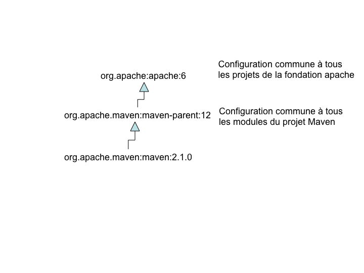
Hiérarchie des POM Apache Maven
Parent « naturel »
L’héritage d’un POM parent simplifie l’existence, mais elle nécessite cependant que nous disposions dans notre dépôt Maven du POM en question. Sa mise au point se complique donc singulièrement, car nous devons l’installer à chaque modification avant de pouvoir constater ses effets sur les projets qui en héritent.
Maven a heureusement prévu le coup : en plus de l’identification par le triplet groupId : artifactId : version, triplet qui nous est maintenant familier, la balise <parent> propose un élément inhabituel, <relativePath>. Comme son nom l’indique, il fournit le chemin physique d’accès à ce POM parent à partir de la racine du projet courant. Et pour combler notre désir d’en faire le moins possible, Maven prévoit une valeur par défaut pour cet élément : « ../pom.xml ».
Autrement dit, Maven va rechercher avant toute chose le POM parent dans le répertoire père de notre projet — sous réserve que les indications de groupe, d’artefact et de version concordent. Cette recherche hiérarchique est un mécanisme puissant qui va profondément orienter votre façon de travailler. Chaque projet pourra ainsi se décomposer en sous-modules sous forme de sous-répertoires. Chaque groupe pourra organiser facilement son information en rassemblant tous ses projets sous une arborescence commune, dont la racine hébergera un majestueux corporate POM.
|
Cela est particulièrement efficace si vous utilisez un gestionnaire de version du code comme Subversion. Celui-ci permet, en effet, de définir des alias, permettant de construire une structure virtuelle. Il est ainsi possible d’avoir depuis Subversion une vision trunk / corporate / projet / module tout en conservant une gestion locale classique projet / trunk / module. Si cette organisation ne vous convient pas, vous pouvez comme toujours utiliser d’autres conventions et affecter à la balise <relativePath> le chemin qui vous convient. Vous perdrez cependant les avantages des conventions : plus de configuration, obligation pour chaque nouvel arrivant de s’adapter aux habitudes locales. |
Mutualiser
Nous avons donc un mécanisme de mutualisation en place. Que pouvons-nous mutualiser ?
D’une part, toutes nos déclarations de plugins et de propriétés peuvent être remontées dans ce POM commun. Nous ne conserverons dans un module donné que ce qui lui est totalement spécifique. Cela allège la configuration, mais ne résout pas un problème sur lequel Stéphane a dû s’acharner pendant de trop longues heures.

Stéphane a été confronté à une incohérence dans nos dépendances. Notre module d’administration utilisait en effet une version d’Hibernate différente de notre application web. Si cela peut ne pas être fondamentalement gênant, c’est tout de même peu plaisant et source d’ennuis. Il a donc cherché à s’assurer d’une façon ou d’une autre que nos différentes bibliothèques étaient utilisées dans des versions cohérentes sur nos divers sous-projets. Tâche ingrate et pénible, vu le nombre impressionnant de dépendances.
Gestion des dépendances
Un élément du fichier POM que nous n’avons pas encore utilisé répond à ce besoin, il s’agit du <dependencyManagement>. Cette balise n’est utile que dans le cadre d’un POM parent, ce qui explique que nous ne l’ayons encore jamais rencontrée. Comme la balise <dependencies>, elle se compose d’une suite de dépendances mais, contrairement à elle, il ne s’agit ici que de définir les versions par défaut de ces dépendances. Notre fichier POM parent va ainsi lister quelle version de chaque bibliothèque fait office de référence sur le projet. Dans chaque sous-projet, nous pourrons alors déclarer nos dépendances sans indication de version, auquel cas celle indiquée par le dependencyManagement sera utilisée.
Autre avantage de cette pratique, si une bibliothèque est introduite par la gestion transitive des dépendances, et même si nous ne l’utilisons pas explicitement dans nos projets, nous pouvons tout de même imposer l’utilisation d’une version précise via le dependencyManagement.
|
La bibliothèque commons-logging est extrêmement répandue et pourtant décriée par certains. Il est donc difficile de l’exclure d’un projet, car la transitivité des dépendances la fait réapparaître chaque fois qu’on tente de l’exclure. Il existe cependant une solution qui ressemble à un hack mais qui est très pratique : utiliser une version inexistante de cette bibliothèque, déclarée en dependencyManagement. Cette version « pirate » de commons-logging est disponible dans le repository Maven de JBoss. L’utilisation du scope provided nous permet d’être sûrs qu’elle ne sera pas ajoutée dans nos livrables de type WAR ou EAR. |
La gestion centralisée des versions est une pratique simple qui assure la cohérence des projets décomposés en modules. Elle n’empêche pas au besoin un module de déclarer explicitement une version autre que celle recommandée par le POM parent, pour bénéficier d’une fonction particulière.
De la même façon, si les règles de l’entreprise l’imposent, un corporate POM peut définir les versions validées et supportées des bibliothèques, que chaque projet pourra alors utiliser en toute confiance.
Hériter d’un corporate POM juste pour partager la déclaration d’un <dependencyManagement> est cependant une contrainte un peu lourde, étant donné qu’on ne peut hériter que d’un seul POM parent. Maven, depuis sa version 2.0.9, propose une autre option via import, un scope particulier. Une dépendance marquée de ce scope ne sera pas ajoutée au classpath du projet. Par contre, sa déclaration <dependencyManagement> sera « importée » dans le projet comme si elle y avait été copiée-collée. Cette option permet ainsi de construire des POM communs définissant des versions des bibliothèques courantes dont vous avez validé la bonne intégration. Avec la multiplication des frameworks, un POM indiquant les versions compatibles entre Spring, Hibernate, Wicket, Hibernate-validator, AspectJ et EH-Cache ne sera pas un luxe pour lancer rapidement un projet sans avoir ce problème à gérer !
Gestion des plugins
Au même titre que pour nos dépendances, les versions de nos plugins Maven ne doivent pas être négligées. Même en supposant qu’aucune régression ne soit constatée entre deux versions d’un même plugin, l’utilisation de versions incohérentes est source de bizarreries, voire de bogues très délicats à identifier.
Le POM parent peut, là aussi, nous aider via son élément <pluginManagement>. Comme pour la gestion des dépendances, il nous permet de centraliser les versions des plugins utilisés par chaque module du projet.
Le format du fichier POM n’impose pas de déclarer pour chaque plugin utilisé un numéro de version. Il est cependant fortement recommandé de fixer cette version car sans cela, Maven considère que vous désirez utiliser la dernière version stable du plugin. Si les développeurs font très attention à la compatibilité ascendante, ils ne sont pas à l’abri d’une régression et peuvent au fil de versions successives déprécier puis supprimer certaines fonctionnalités ou certains paramètres. Si vous intervenez sur un projet ancien après qu’un plugin a subi de telles évolutions, Maven utilisera la dernière version et votre projet ne pourra pas être construit à l’identique, voire ne pourra plus être construit du tout !
Indiquer systématiquement la version des plugins comme si l’élément <version> était obligatoire est contraignant et source d’hétérogénéité dans un projet multimodule. Le pluginManagement va permettre de centraliser au niveau du projet parent les versions de tous les plugins utilisés.

Fort de ces nouveaux concepts, Raphaël reprend les POM du projet pour centraliser notre gestion de version. <dependencyManagement> et <pluginManagement> sont renseignés après une revue complète de tous nos fichiers POM. La tâche est complexe et source d’erreurs tant les risques d’oubli sont nombreux. Raphaël cherche donc un moyen pour s’assurer qu’il n’a omis aucune déclaration de version pour un plugin. Par ailleurs, il voudrait être sûr qu’à l’avenir un plugin ajouté dans un module ne risquera pas de passer entre les mailles du filet. Si aucun de nos POM ne déclare de version pour les plugins, nous savons que par mimétisme les nouveaux plugins seront déclarés de la même manière.
Raphaël trouve la solution à ce problème dans le plugin Enforcer. Celui-ci ne contribue pas à la construction du projet, mais fait partie d’une catégorie un peu particulière de plugins qui visent à outiller l’utilisation de Maven. Enforcer va analyser notre modèle de projet pour vérifier certaines règles. L’une des règles prédéfinies exige justement de vérifier que chaque plugin du projet a une version correctement définie.
<plugin>
<groupId>org.apache.maven.plugins</groupId>
<artifactId>maven-enforcer-plugin</artifactId>
<executions>
<execution>
<id>enforce-versions</id>
<goals>
<goal>enforce</goal>
</goals>
<configuration>
<rules>
<requirePluginVersions>
<message>Définissez plugin.version !</message>
</requirePluginVersions>
</rules>
</configuration>
</execution>
</executions>
</plugin>Enforcer ne fait pas une analyse de notre fichier POM en tant que document XML, ce qui serait peu utile puisque la version du plugin peut être définie dans un parent ou dans un bloc <pluginManagement>. Il utilise le modèle objet du projet qui est le résultat de l’analyse de notre POM et de ceux dont il hérite. Si une version est définie quelque part, il saura donc la détecter et, à l’inverse, il saura détecter son absence !
Enforcer propose de nombreuses autres règles d’usage de Maven permettant de s’assurer que le projet est utilisé selon les bons usages ou les contraintes spécifiques définies par le projet. Il peut ainsi vérifier que le développeur utilise une version précise de Maven ou du JDK, mais aussi que certains fichiers existent (ou n’existent pas), qu’aucun SNAPSHOT n’est utilisé en dépendance, ou encore interdire l’utilisation de certaines dépendances (par exemple, pour éviter des problèmes de licence).
Diviser pour régner
Stéphane est très satisfait de la solution du POM parent que nous venons
de découvrir, lui qui en avait assez de passer en revue un à un nos
fichiers POM pour mettre en place une configuration cohérente. Il reste
cependant un peu sur sa faim : pour construire toute l’application et la
tester dans son ensemble, il doit encore passer de projet en projet pour
lancer à répétition la commande mvn install. Les choses se compliquent
même rapidement lorsqu’il doit tenir compte d’une dépendance entre deux
sous-projets.
Un projet de type POM inclut cependant une particularité que nous n’avons pas encore explorée : il peut définir un élément <modules>. Celui-ci déclare une liste de modules qui sont, en fait, des chemins relatifs au POM. Lorsque nous demandons à Maven de construire un projet de ce type, il exploite cette information pour rechercher dans chacun de ces chemins un autre projet Maven à construire, qu’il intégrera dans une macroconstruction de projet. En plus d’enchaîner la construction des projets/modules, Maven va surtout tenir compte des dépendances qu’ils peuvent avoir les uns pour les autres et ordonnancer son processus de construction en conséquence. Les binaires résultants seront donc toujours cohérents avec l’état du code source de l’ensemble des modules.
Voilà une fonctionnalité déterminante pour Stéphane. Jusqu’ici, notre projet d’application web contenait à la fois les pages web, mais aussi toute la partie back-end de l’application : règles métier, accès à la base de données et exposition de services web.
Le découpage de notre sous-projet webapp en modules permet d’isoler physiquement chaque couche de notre architecture. Un module pour notre domaine métier accueillera nos objets ListeDeCourses, Promotion et BonneAdresse. Un module permettra d’isoler nos services métier. Un troisième se concentrera sur l’accès à notre base de données, un autre à l’exposition de nos services métier sous forme de services Web, et ainsi de suite. Chaque module, recentré sur un besoin ou sur une technologie particulière, va voir sa liste de dépendances fondre et se spécialiser.
Il sera alors aisé d’assurer des règles d’architecture du type « seule la couche base de données peut faire appel à Hibernate ». Il suffit que les autres modules n’aient pas de dépendance Hibernate pour qu’une erreur de codage saute aux yeux à la première compilation !
Ce recentrage sur une technologie simplifie nettement le développement lorsque l’équipe est organisée par domaine de compétence. Notre spécialiste de la persistance JPA va pouvoir donner libre cours à son imagination. Outils de test spécialisés et gestion fine des dépendances sont à sa disposition pour forger son module selon ses habitudes et les bonnes pratiques du domaine.
Héritage « naturel »
Les mécanismes de modules et d’héritage ne sont pas nécessairement liés l’un à l’autre, cependant ils se complètent de manière naturelle. Il est très fréquent que le POM parent soit celui qui déclare un projet comme module. En fait, les cas où une autre organisation est nécessaire sont assez rares et répondent à des contraintes d’organisation très particulières. La structure hiérarchique des projets est donc une structure très courante pour les projets Maven, généralement reflétée par l’organisation physique des répertoires.
Et l’intégration continue ?
Comment va se comporter notre serveur d’intégration continue face à ce nouveau découpage en modules ? Les outils que nous avons retenus supportent parfaitement cette approche de Maven. Ils vont donc identifier chaque module comme un projet à ajouter dans la configuration de l’intégration continue.
Continuum a néanmoins ici un coup d’avance sur la concurrence : en détectant une modification dans le code du projet, il va lancer la construction du module concerné, puis exploiter la gestion des dépendances entre projets pour lancer la construction de tous les autres modules qui en dépendent et pourraient donc être impactés, mais pas de ceux qui n’ont aucun lien direct ou indirect avec la modification. Mais Hudson le talonne de près et commence à supporter lui aussi une gestion plus intelligente de Maven… à suivre !
L’avantage de ce fonctionnement, détaillé dans la figure 07-02, est que la construction d’un module (ou de plusieurs) est plus rapide que celle du projet dans son ensemble. Le serveur sera ainsi plus réactif : une modification erronée sur un module sera identifiée rapidement, son impact sur un autre module apparaîtra en quelques instants, alors qu’une construction complète aurait pu prendre de longues minutes, impliquant de nombreux modules non concernés par la modification.
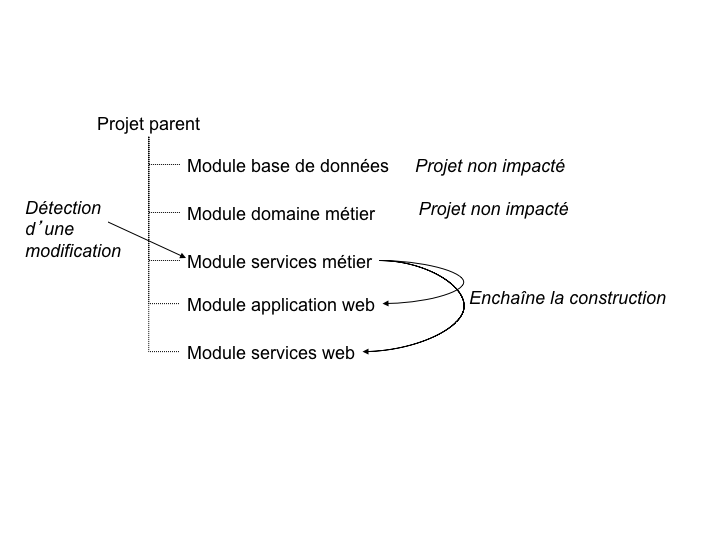
Réaction du serveur d’intégration continue à une modification.
Un gros projet vs plein de modules
Certains utilisateurs n’apprécient pas le découpage en nombreux modules qu’encourage Maven. Ils ont l’impression que leur projet s’effrite en petits bouts de code sans grande valeur et délicats à identifier pour les utilisateurs finaux.
Cette impression découle d’une habitude prise avant l’apparition de Maven, qui consiste à proposer un gros JAR avec tout ce qui est nécessaire à l’intérieur pour que les utilisateurs n’aient pas à se soucier des dépendances. Paradoxalement, cette pratique est plus périlleuse qu’elle n’y paraît et introduit des incompatibilités sans solution lorsqu’on veut marier deux outils construits avec cette optique.
Les utilisateurs de Maven n’ont plus à se préoccuper des problèmes de dépendances, et chaque module peut préciser finement ce qui lui est nécessaire. Au contraire, un artefact unique devra :
-
soit déclarer trop de dépendances, dont un grand nombre ne sont nécessaires qu’à des fonctions que certains utilisateurs considéreront comme annexes alors qu’elles sont indispensables pour d’autres ;
-
soit déclarer un grand nombre de dépendances optionnelles, auquel cas les utilisateurs devront eux-mêmes aller à la pêche aux informations pour reconstituer la liste de dépendances.
Dans les deux cas, les utilisateurs de Maven sont pénalisés, et ceux qui ne l’utilisent pas ne sont pas beaucoup plus avancés dans leur gestion manuelle des dépendances.
Les modules au service de l’architecture
Le découpage en modules permet aussi de renforcer nos règles d’architecture logicielle. Si notre structuration JavaEE impose par exemple que « seule la couche métier est autorisée à manipuler les objets de la couche d’accès à la base », la déclaration des dépendances permet d’interdire à tout autre module de l’utiliser : en l’absence de dépendance sur le module persistance, aucun risque de le voir utilisé par mégarde ! Fini la mauvaise surprise de découvrir un tag JSP qui effectue sa propre requête en base pour construire une liste de sélection.
Garder le contrôle
Stéphane aboutit à une structure de projet claire et bien organisée, où chaque composant trouve sa place dans un module : un module pour notre code métier, un module pour notre couche d’accès à la base de données, un module pour notre IHM web, un module pour nos services web REST, un autre pour nos batchs de sauvegarde…
Dans un premier temps, nous trouvons cela d’une grande élégance, surtout
parce que cela nous permet de ne travailler que dans un module et donc
d’alléger d’autant notre « vue » de l’application. Par contre, pour
compiler tout ça il nous faut toujours lancer un gros mvn install, même
si un seul module isolé est modifié, ou bien lancer la commande dans le
répertoire de chaque module impacté en respectant l’ordre de
construction. C’est tout de même dommage d’avoir un outil qui gère
l’ordre des modules et de devoir gérer ce problème à la main !
Pas de panique nous rassure Emmanuel : même si le fonctionnement par défaut consiste à enchaîner tous les modules du projet, Maven propose des options avancées pour filtrer quels modules intégrer au build et quels modules ignorer.
-
Première option à connaître, -N permet de ne construire que notre projet POM parent, sans ses modules. Sur de très gros projets, cela peut permettre de diffuser le POM parent indépendamment du reste du projet, les développeurs n’ayant alors pas besoin de disposer sur leur poste de développement de l’intégralité du projet
-
Autre option intéressante, -pl (« project list ») permet de définir la liste des modules (chemins relatifs des répertoires ou [groupId]:artifactId séparés par des virgules) à intégrer dans le build. Si nous n’avons modifié que le module webapp, nous pouvons donc le construire de manière isolée en lançant
mvn install –pl webapp. -
Associé à l’option project-list, -am (« also make ») demande à Maven de construire tous les modules dont dépend notre liste, autrement dit de s’assurer que notre projet se construit correctement jusqu’aux modules indiqués.
-
L’option inverse –amd (« also make dependent »), permet de construire les modules indiqués ainsi que tous les modules qui en dépendent. Cela permet donc de vérifier que nos modifications n’ont pas cassé quelque chose dans un module de plus haut niveau. C’est cette option qui est mise à profit par l’intégration continue Jenkins dans l’option « build incrémental ». Si la structure des modules est correcte, une modification dans un module ne devrait avoir aucun impact sur d’autres modules qui n’ont pas de lien de dépendance. Si cette hypothèse est respectée, cela permet d’accélérer sensiblement la rapidité de l’intégration continue.
Nous pouvons ainsi réduire le nombre de modules construits par un mvn install aux modules impactés par une modification. Bien, mais nous sommes exigeants et en voulons encore plus !
Stéphane a gardé une carte dans sa manche. Face à un build qui enchaîne encore plusieurs modules, il nous propose d’ajouter une dernière option, -T 4. Il ne s’agit pas de demander de l’aide à Skynet en invoquant Terminator IV, mais de lancer Maven en parallélisant la construction des modules sur les 4 processeurs de nos machines de développement — car depuis la création de notre start-up, nous avons tous reçu un magnifique MacBook Pro core i7. Maven peut alors traiter en parallèle certains de nos modules et nous économiser un temps précieux. La seule limite est la dépendance de nos modules entre eux, que Maven doit tout de même respecter.
|
L’exécution du build en parallèle n’est possible que si les plugins le permettent. C’est le cas pour les versions récentes des plugins officiels Maven et d’un grand nombre de plugins du projet Mojo. Si ce n’est pas le cas, Maven vous gratifiera d’un message d’avertissement, ce qui ne signifie pas que cela ne fonctionnera pas, mais juste que le plugin n’a pas été testé dans cette configuration : [WARNING] ***************************************************************** [WARNING] * Your build is requesting parallel execution, but project * [WARNING] * contains the following plugin(s) that are not marked as * [WARNING] * @threadSafe to support parallel building. * [WARNING] * While this /may/ work fine, please look for plugin updates * [WARNING] * and/or request plugins be made thread-safe. * [WARNING] * If reporting an issue, report it against the plugin in * [WARNING] * question, not against maven-core * [WARNING] ***************************************************************** |
Bien, mais nous sommes exigeants et en voulons encore plus ! Stéphane, en fin stratège, a gardé sa toute dernière réplique pour la fin, et nous invite à refaire le monde autour d’une bière. Voilà qui met tout le monde d’accord !
Conclusion
Le mécanisme d’héritage est une originalité de Maven par rapport aux
autres outils orientés script qui utilisent une logique d’inclusion. Il
en résulte une mutualisation très structurante et très puissante du
projet en modules. Un projet Maven est ainsi rapidement décomposé en
modules spécialisés dans un domaine ou une technologie. Le développement
d’un de ces modules gagne en clarté, focalisé sur un aspect précis de
l’application, sans pour autant compliquer la construction du projet. Un
simple mvn install depuis le projet de plus haut niveau enchaîne les
compilations de tous les modules pour produire un livrable cohérent.
Chapitre 8 : Maven et JavaEE
Notre application noubliepaslalistedescourses est fin prête pour une ouverture au public. Nous ne disposons cependant pas de nos propres serveurs et faisons appel à un hébergeur. Celui-ci nous propose un magnifique service d’hébergement JavaEE surveillé 24 heures sur 24 par une équipe de spécialistes. Autant laisser faire les pros. Chacun son métier !
Le monde de Java côté serveur est un monde en « AR » : JAR, WAR, RAR, EAR se côtoient dans un ballet un peu déconcertant d’archives Java et de descripteurs de déploiement. Souvent décrié, le modèle JavaEE est pourtant solidement implanté et continue de progresser avec une refonte significative dans sa mouture JavaEE 6. Maven ne pouvait pas faire l’impasse sur ce modèle, sur ses limites et sur les bonnes pratiques de développement qui l’accompagnent.
Java Entreprise Edition
Le modèle JavaEE n’a pas très bonne réputation. Il définit (entre autres) deux rôles spécialisés : le développeur et l’assembleur de composants. Ce dernier est chargé de définir, via des descripteurs de déploiement, la façon dont des macrocomposants sont liés au sein d’une application d’entreprise. Ces macrocomposants, ce sont les EJB, connecteurs et applications web que nous devons regrouper dans une archive d’entreprise EAR. Les descripteurs, ce sont ces (trop ?) nombreux fichiers XML dans lesquels nous déclarons des références vers d’autres composants ou vers des ressources du serveur (typiquement, une base de données). Nous y enregistrons aussi l’identité de chaque composant pour sa parution dans un annuaire JNDI. La Figure 08-01 résume cette structure. Si vous n’êtes pas familier avec la norme JavaEE ou si vous voulez en avoir une description plus fine et moins biaisée que notre résumé de quelques lignes, nous vous recommandons l’introduction disponible sur le site de SUN [31].
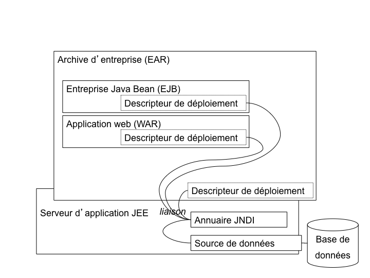
Structure d’une application selon le modèle JavaEE.
Cette structure soulève de nombreuses critiques, qui ne sont pas l’objet de ce livre. Nous ne nous attarderons donc pas dessus. Quoi qu’on en pense, JavaEE est une norme largement implantée et supportée, et il nous faut la suivre d’une façon ou d’une autre si nous voulons déployer notre belle application sur le serveur d’hébergement.
|
Java EE, J2EE ou JEE ? Pour une raison obscure, Java 1.2 a été annoncé par SUN sous le nom de « Java 2 ». En ont découlé les versions standard J2SE, mobile J2ME et entreprise J2EE. Dans un élan de logique, les versions suivantes ont conservé ce nom en ajoutant un numéro de version, on a donc eu le droit à J2EE 1.3 puis J2EE 1.4. Ce n’est qu’avec la version 1.5 que SUN a changé de politique pour nommer son bébé « Java 5 ». Au passage, la déclinaison entreprise est devenue JavaEE 5, puis JavaEE 6. Seul souci, prononcé rapidement, J2EE « Ji-deux-eeuuh » devient rapidement JEE, au même titre qu’on dit « ès-ès-deux-i » pour l’acronyme SSII. On voit donc dans de nombreux CV ou offres d’emploi le terme JEE qui ne correspond à rien. Ceci dit, cela ne change absolument rien et tout le monde comprend de quoi on parle, mais c’était l’occasion de faire un petit point culturel :) |
Construire une archive web WAR
La première étape consiste à créer l’archive WAR de notre application web, en incluant son descripteur de déploiement. En tant que fichier binaire, un WAR n’est rien d’autre qu’une archive JAR avec une extension spécifique, donc rien de bien compliqué. Nous devons cependant suivre la structure définie par la norme JavaEE, en particulier le répertoire WEB-INF qui doit contenir :
-
le descripteur de déploiement web.xml ;
-
un sous-répertoire classes avec le code compilé de nos servlets et des autres classes nécessaires à notre application ;
-
un sous-répertoire lib avec les bibliothèques utilisées.
Sur un projet utilisant un répertoire lib fourre-tout pour placer ses bibliothèques, le troisième point serait traité avant même qu’on ne se pose la question, mais sur notre projet Maven ?

Vincent s’attaque à la construction automatisée de notre WAR. Il trouve rapidement un allié de choix dans le plugin war de Maven. Celui-ci a été conçu pour répondre de la manière la plus souple et la plus transparente qui soit à ces contraintes d’assemblage. Ce plugin va bâtir dans le répertoire de construction (target) la structure ouverte de l’archive WAR à partir des éléments de notre projet et de nos déclarations dans le POM. Il va donc y recopier tous les éléments statiques de notre application web (pages html, images, scripts…), ainsi que nos classes compilées par le plugin compiler, notre descripteur de déploiement et nos bibliothèques — du tout cuit !
Cerise sur le gâteau, Vincent n’a même pas besoin de déclarer explicitement ce plugin comme nous l’avons fait jusqu’ici : puisque notre projet ne produit pas un JAR, il remplace la déclaration de <packaging> pour indiquer la construction d’une archive WAR. Ce packaging, supporté par défaut par Maven, provoque automatiquement une sélection différente des plugins associés par défaut aux phases du projet, et en particulier l’activation du plugin war lors de l’assemblage.
Vincent aurait-il tiré le gros lot en prenant en charge cette tâche ? Une ligne de configuration à éditer en tout et pour tout, c’est plutôt reposant ! Eh bien non ! Au lancement de notre application sur le serveur de test Tomcat, nous avons droit à une erreur qui pourrait faire sourire si nous étions un 1er avril, mais qui nous laisse perplexes :
ClassCastException : fr.noubliepaslalistedescourses.servlets.LoginServlet is not a javax.servlet.Servlet
Nous devons explorer un peu plus la logique de JavaEE pour comprendre. Un serveur JavaEE isole chacun des composants qu’on y déploie afin qu’ils ne se perturbent pas mutuellement. Cette isolation se fait via des chargeurs de classes dédiés. Notre application web aura donc son propre chargeur de classes, incluant les bibliothèques de notre WEB-INF/lib et nos classes de WEB-INF/classes. Celui-ci hérite d’un chargeur père qui contient les classes du serveur d’application permettant la mise en œuvre de l’API servlet. Le serveur sera donc en mesure de manipuler nos servlets parce que nous partageons avec lui les classes de cette API. La Figure 08-02 compare cependant ce modèle théorique et ce que nous observons.
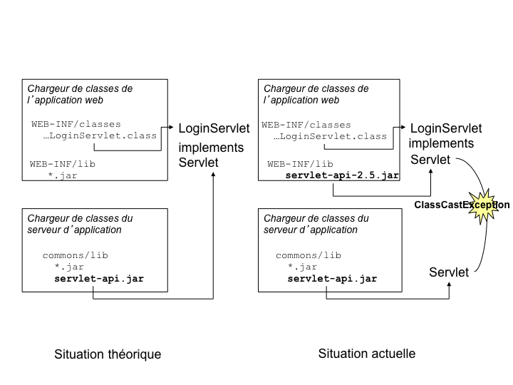
Comparaison de la structure des chargeurs de classes : théorie vs pratique.
Lorsque le serveur d’application tente d’initialiser un de nos servlets, il manipule tout naturellement le type javax.servlet.Servlet, à partir des classes présentes dans son chargeur de classes. Notre servlet LoginServlet a cependant été instancié dans le chargeur de classes de l’application web ; aussi, pour que tout fonctionne bien, il faut que le type javax.servlet.Servlet, lorsqu’il est manipulé depuis l’application web, soit le même que depuis le code du serveur d’application.
En jetant un coup d’œil à notre WEB-INF/lib, nous y découvrons le coupable : servlet-api-2.5.jar. Un servlet créé dans notre application web aura comme type parent une classe qui est chargée elle aussi par l’application web, et pas le javax.servlet.Servlet commun à tout le serveur d’application. D’où cet étrange message d’erreur. Vincent est rassuré sur sa santé mentale.
|
Lorsqu’il s’agit du JAR de l’API servlet le constat est rapide, mais il peut arriver qu’une bibliothèque ait la mauvaise idée de contenir les classes d’une API Java (plutôt que d’en dépendre), par exemple le JAR gwt-user de GWT. L’identification du coupable est alors nettement moins immédiate. |
Cette dépendance javax.servlet:servlet-api:2.5 est pourtant indispensable à notre application pour qu’elle soit en mesure de compiler. Nous faisons de nombreuses références directes à ces classes dans notre code ! Nous avons déjà exploré les scopes que nous pouvons affecter à nos dépendances. Le scope par défaut (compile) signifie que la bibliothèque associée est nécessaire pour compiler et s’exécuter, c’est donc a priori bien le cas. Il existe cependant un autre scope, provided, qui est très proche avec une nuance significative : il déclare une dépendance nécessaire pour compiler et s’exécuter mais qui est fournie par l’environnement d’exécution, typiquement notre serveur JavaEE.
La modification suivante sur nos dépendances corrige donc ce problème assez déboussolant et nous permet enfin de lancer l’application web sur notre serveur Tomcat.
<dependency>
<groupId>javax.servlet</groupId>
<artifactId>servlet-api</artifacId>
<version>2.5</version>
<scope>provided</scope>
</dependency>Construire un EJB
Notre exploration du monde JavaEE se poursuit avec un Entreprise Java Bean, c’est-à-dire un macrocomposant métier qui sera potentiellement distribuable sur l’ensemble de notre cluster.
|
Quoi, nous n’avons pas de cluster ? Pourquoi avoir choisi un EJB alors ? Sans vouloir faire de l’anti-JavaEE, disons que les EJB ont longtemps traîné de lourdes casseroles, car ils étaient appliqués sans qu’on en comprenne le rôle dans l’architecture. Jusqu’à l’émergence de JavaEE 5 et de JavaEE 6, qui les dépoussièrent sensiblement, leur utilisation était même largement décriée au profit de modèles légers dont SpringFramework est le fer de lance. |
Nous avons donc isolé notre code métier dans un module (voir le Chapitre 7) dédié, chargé de construire un composant réutilisable. Fort de son précédent succès, Vincent se porte volontaire pour explorer la « mavenisation » de cet aspect de notre application.
La même recette donne le même résultat, ce qui finit par nous faire penser que Vincent a décidément le nez fin : <packaging>ejb</packaging> dans le POM suffit pour changer la configuration par défaut du cycle de vie et produire un EJB. La seule chose que nous devrons y ajouter est la configuration de la version de l’API EJB que nous voulons utiliser, à savoir EJB3 ce qui n’est pas la valeur par défaut (2.1).
<plugin>
<groupId>org.apache.maven.plugins</groupId>
<artifactId>maven-ejb-plugin</artifactId>
<version>2.1</version>
<configuration>
<ejbVersion>3.0</ejbVersion>
</configuration>
</plugin>Cette formalité passée, nous obtenons l’EJB tant attendu, dont nous pouvons tester le déploiement sur un serveur de test OpenEJB.
Il nous reste à faire le lien avec notre application web. Celle-ci doit disposer des classes client de l’EJB, c’est-à-dire de la partie de l’EJB qui définit son utilisation (interfaces, objets paramètres). Cela ne va pas nous coûter beaucoup d’efforts puisque le plugin ejb a la bonne idée de créer une archive avec ces classes pour nous, en ajoutant simplement à sa configuration <generateClient>true</generateClient>. Nous obtenons donc finalament deux archives Java :
-
noubliepaslalistedescourses-ejb-1.0.0-SNAPSHOT.jar, notre fameux EJB ;
-
noubliepaslalistedescourses-ejb-1.0.0-SNAPSHOT-client.jar, l’archive des classes client qui permettra d’invoquer notre EJB.
Dans notre application web, il nous suffit donc de déclarer une nouvelle dépendance vers ce client pour pouvoir utiliser notre EJB :
<dependency>
<groupId>fr.noubliepaslalistedescourses</groupId>
<artifactId>noubliepaslalistedescourses-ejb</artifactId>
<version>1.0.0-SNAPSHOT</version>
<type>ejb-client</type>
</dependency>Reste à faire le lien entre les deux composants, via les descripteurs de déploiement. L’objet de ce livre n’est pas de vous faire un exposé complet sur JavaEE ; pourtant, nous ne pouvons pas honnêtement vous laisser sans réponse si près du but… Les Listings 8.1 et 8.2 montrent les deux descripteurs de déploiement de notre application, le premier permettant à l’EJB de s’identifier et de demander une ressource de type base de données, le second permettant à l’application Web d’obtenir une référence vers notre EJB, potentiellement installé sur un autre serveur, voire distribué sur un cluster.
<?xml version="1.0"?>
<!DOCTYPE ejb-jar PUBLIC
'-//Sun Microsystems, Inc.//DTD Enterprise JavaBeans 1.1//EN'
'http://java.sun.com/j2ee/dtds/ejb-jar_1_1.dtd'>
<ejb-jar>
<enterprise-beans>
<session>
<ejb-name>ListeDeCoursesEJB</ejb-name>
<home>
fr.noubliepaslalistedescourses.ListeDeCoursesHome
</home>
<remote>
fr.noubliepaslalistedescourses.ListeDeCourses
</remote>
<ejb-class>
fr.noubliepaslalistedescourses.ListeDeCoursesBean
</ejb-class>
<session-type>Stateless</session-type>
<transaction-type>Container</transaction-type>
<resource-ref>
<res-ref-name>jdbc/appDB</res-ref-name>
<res-type>javax.sql.DataSource</res-type>
<res-auth>Container</res-auth>
<description>
Accès JDBC à la base de données
</description>
</resource-ref>
</session>
</enterprise-beans>
</ejb-jar><?xml version="1.0" encoding="UTF-8"?>
<web-app version="2.4"
xmlns="http://java.sun.com/xml/ns/j2ee"
xmlns:xsi="http://www.w3.org/2001/XMLSchema-instance"
xsi:schemaLocation="http://java.sun.com/xml/ns/j2ee
http://java.sun.com/xml/ns/j2ee/web-app_2_4.xsd">
<!-- Servlet GWT-RPC de l'application web -->
<servlet>
<servlet-name>gwt-rpc</servlet-name>
<servlet-class>
org.springframework.web.servlet.DispatcherServlet
</servlet-class>
<load-on-startup>1</load-on-startup>
</servlet>
<servlet-mapping>
<servlet-name>gwt-rpc</servlet-name>
<url-pattern>*.rpc</url-pattern>
</servlet-mapping>
<!—- Référence vers notre EJB -->
<ejb-ref>
<ejb-ref-name>ejb/ListeDeCourses</ejb-ref-name>
<ejb-ref-type>Session</ejb-ref-type>
<ejb-ref-home>
fr.noubliepaslalistedescourses.ListeDeCoursesHome
</ejb-ref-home>
<ejb-ref-remote>
fr.noubliepaslalistedescourses.ListeDeCoursesRemote
</ejb-ref-remote>
</ejb-ref>
</web-app>Construire une archive d’entreprise EAR
Il ne nous reste plus qu’à prendre nos composants et à les grouper dans un joli paquet-cadeau avant de l’envoyer à notre hébergeur. En terme JavaEE, le paquet-cadeau est une archive d’entreprise EAR.
Pour produire ce nouvel artefact, Vincent applique la recette qui lui a jusqu’ici réussi et fait mouche une nouvelle fois : un nouveau module, avec comme packaging ear suffit pour produire un artefact EAR. Si tout pouvait être aussi simple… enfin, passons.
La seule chose à déclarer dans le POM de ce nouveau module est la liste de dépendances, pointant vers nos composants JavaEE, à inclure dans l’EAR – dans notre cas, l’application web et l’EJB, mais potentiellement plusieurs composants de ce type et/ou des connecteurs RAR ou autres subtilités JavaEE propriétaires ou non.
Le plugin ear compte de nombreuses options qui permettent d’ajuster finement le nom de chaque composant à l’intérieur de l’archive EAR. Il propose même de générer pour nous le descripteur de déploiement application.xml, ce qui nous fera toujours un fichier de moins à maintenir.
Nous avons un bel EAR prêt pour une mise en production, cependant un détail chagrine Vincent : notre application web, comme notre EJB, utilise plusieurs bibliothèques utilitaires, telles que commons-lang ou commons-io. Dans sa structure actuelle, nous retrouvons ces fichiers en double, une fois dans le WEB-INF/lib de l’application web, une fois dans le fichier EJB. Ce n’est pas intellectuellement très satisfaisant.
Le modèle JavaEE a prévu le découpage des composants en modules mais n’a pas non plus négligé la mutualisation des bibliothèques. Le métafichier MANIFEST permet de déclarer des bibliothèques nécessaires à l’exécution d’un module JavaEE, bibliothèques qui seront alors mises à disposition via l’EAR.
Maven n’a pas non plus négligé cet aspect du packaging JavaEE, et nous devons revenir dans notre projet application web pour marquer les dépendances que nous voulons à présent exclure de WEB-INF/lib pour les mutualiser.
À la première étape, on demande au plugin war de construire, dans les métadonnées de l’archive, l’indication de classpath :
<plugin>
<groupId>org.apache.maven.plugins</groupId>
<artifactId>maven-war-plugin</artifactId>
<version>2.0.2</version>
<configuration>
<archive>
<manifest>
<addClasspath>true</addClasspath>
</manifest>
</archive>
</configuration>
</plugin>Pour chaque dépendance que nous voulons voir apparaître dans ce chemin de classes commun, et donc exclure de notre WEB-INF/lib, il suffit d’indiquer le statut optionnel de la dépendance : <optional>true</optional>. La déclaration peut sembler un peu contre-nature, puisque dans la majorité des cas la dépendance en question n’est pas du tout optionnelle. Il s’agit, avouons-le, d’un détournement de la notion de dépendance optionnelle, qui, de toute façon, n’a pas vraiment de sens pour un projet WAR.
Dans notre projet EJB, nous appliquons au plugin ejb la même déclaration <archive> que pour le plugin war. L’EJB produit aura alors dans son MANIFEST une déclaration de classpath à la place de l’inclusion de ses dépendances. Il ne nous reste plus qu’à déclarer ces dépendances dans notre projet EAR pour que celui-ci les intègre dans l’archive EAR et qu’elles soient ainsi partagées entre nos deux composants JavaEE.
Pour éviter un travail fastidieux de cohérence entre les trois modules, nous remontons dans le projet parent ces déclarations de dépendances, qui deviennent alors elles-mêmes mutualisées. Comme déclaration de dépendances, notre projet application web ne contient alors que les bibliothèques spécifiquement web qu’il emploie. La Figure 08-03 indique la structure finale de notre projet Maven.
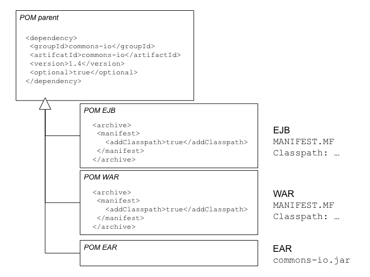
Multiprojet JavaEE avec mise en commun des dépendances via l’EAR.
Tester
Nous savons désormais construire notre archive d’entreprise en une seule ligne de commande, respectant à la lettre la spécification JavaEE. Mais Vincent ne veut pas en rester là : quid des tests de nos composants ? En particulier, si nous savons les tester unitairement ou à un niveau intégration (voir le Chapitre 5), la partie web reste le parent pauvre. Par définition, nos pages web produites par des JSP, composants JSF ou servlets, ne peuvent être testées que lorsqu’elles sont hébergées par un serveur JavaEE ou, au minimum, un moteur de servlet. Comment contrôler le bon enchaînement de nos pages, la remontée correcte des données, le fonctionnement global de notre application ?
Ce dont Vincent rêve, c’est d’un outil qui ferait ce que nous devons faire à la main à chaque modification du code : assembler l’application, la déployer sur un serveur de test, la démarrer, puis lancer notre navigateur et enchaîner quelques écrans pour constater le rendu HTML d’une page particulière. Eh bien réjouissons-nous, cet outil de rêve existe !
Selenium
Selenium [32] est un outil qui n’est pas limité au monde Java mais s’y intègre très bien. Il s’agit d’un système complet d’enregistrement et de pilotage du navigateur web à des fins de test — rien que ça.
Il se compose de deux parties :
-
Un enregistreur, qui se base sur le navigateur Firefox et permet de capturer une séquence d’actions sur ce dernier. Vous enregistrez ainsi un scénario d’utilisation type de votre application.
-
Un outil de pilotage, qui va rejouer le scénario enregistré sur un navigateur. Selenium lance et dirige le navigateur de votre environnement, remplaçant l’utilisateur humain.
Le grand intérêt de cette approche par rapport à de nombreux autres outils de test est que l’on peut tester une application web dans un véritable navigateur, avec ses particularités, ses bogues, sa façon bien à lui d’interpréter les balises HTML et le code JavaScript.
L’enregistreur peut sauvegarder le scénario de test selon de nombreux formats, dont deux vont particulièrement nous intéresser. Le premier est une simple table HTML, listant les actions réalisées sur le navigateur (cliquer, attendre la page suivante…). Le second utilise notre bon vieux langage Java et le framework de test jUnit. Cette seconde option nous permet d’éditer le scénario pour y ajouter les contrôles qui nous plaisent en utilisant notre langage de programmation habituel. Nous n’avons donc pas à apprendre les secrets d’un nouveau langage !
Le Listing 8.3 montre le code d’un test Selenium utilisant la syntaxe Java. Du point de vue du programmeur, l’API de Selenium offre une vision de très haut niveau du navigateur sous contrôle, ce qui rend la programmation très rapide et agréable.
import com.thoughtworks.selenium.*;
import junit.framework.*;
import java.util.regex.Pattern;
public class SimpleTest extends SeleneseTestCase
{
public void setUp()
{
setUp( "http://localhost:8080/", "*iexplore" );
selenium.open( "noubliepaslalistedescourses.home" );
}
public void testLogin()
{
selenium.type( "login", "Vincent" );
selenium.click( "submit" );
selenium.waitForPageToLoad( "5000" );
assertTrue( selenium.isElementPresent( "salut" ) );
}
}Si la syntaxe du test est celle de jUnit, l’exécution d’un test Selenium nécessite un peu plus que le simple framework de test. Selenium repose sur un composant contrôleur, chargé de lancer le navigateur de la machine hôte et d’en piloter le comportement. Nous devons donc intégrer le démarrage de ce contrôleur dans notre processus de construction Maven si nous voulons en exploiter la puissance :
-
Démarrer la partie serveur (le contrôleur) de Selenium. Elle va permettre de faire le lien entre le test et le navigateur.
-
Lancer le navigateur disponible sur la plateforme.
-
Exécuter le test sur le navigateur sous le contrôle du serveur.
-
Collecter le résultat du test et le consolider pour l’intégrer dans les comptes-rendus d’exécution de Maven (et faire échouer le build si les tests ne passent pas).
-
Fermer le navigateur et arrêter le serveur pour libérer correctement les ressources de la machine hôte.
Le plugin selenium vient à notre secours : il propose deux tâches complémentaires, chargées de faire démarrer et d’arrêter proprement le contrôleur Selenium, respectivement au cours des phases pre-integration-test et post-integration-test. Ce qui nous laisse donc la phase integration-test pour exécuter nos tests, comme ça tombe bien !
Nous l’avons vu, Selenium peut stocker les scénarios sous forme de fichiers HTML. Le plugin selenium propose une tâche dédiée à ce format qui permet de les exécuter au cours du build Maven. Il est donc facile d’outiller une application de tests de non-régression : il suffit d’enregistrer des scénarios au format HTML et d’ajouter la configuration du Listing 8.4 ; les tests seront alors rejoués à l’identique à chaque construction complète du projet.
<plugin>
<groupId>org.codehaus.mojo</groupId>
<artifactId>selenium-maven-plugin</artifactId>
<version>1.0-rc-1</version>
<executions>
<execution>
<phase>integration-test</phase>
<goals>
<goal>selenese</goal>
</goals>
</execution>
</executions>
<configuration>
<browser>*firefox</browser>
<startURL>localhost:8080/myApp</startURL>
<suite>src/test/selenium/suite.html</suite>
</configuration>
</plugin>La seconde option, fondée sur l’enregistrement et l’enrichissement éventuel de nos scénarii de test au format jUnit, va utiliser le plugin standard surefire pour l’exécution des tests. Il sera simplement configuré de manière spécifique pour s’exécuter lors de la phase integration-test.
Magique ! Vincent s’empresse d’ajouter à notre projet le plugin surefire – qui prend en charge l’exécution de tests jUnit – et de l’associer à cette phase de test d’intégration. Sitôt dit, sitôt fait, mais là gros problème : nos tests sont exécutés avant que le contrôleur Selenium ne démarre. Nous l’avions oublié, mais Surefire est déjà configuré pour s’exécuter au cours de la construction de notre projet, car c’est lui qui est chargé de l’exécution de nos tests unitaires, et il ne sait pas différencier sans notre aide les tests Selenium des tests plus classiques.
Une première solution est d’utiliser des règles de nommage pour différencier facilement les deux catégories de tests. Nous n’avons alors qu’à configurer Surefire avec des patrons complémentaires d’inclusion/exclusion pour que chaque test se déroule dans la phase adéquate. Le Listing 8.5 montre la configuration dans le fichier POM qui met en œuvre cette stratégie. Les tests Selenium sont suffixés Selenium au lieu de Test pour les différencier.
<plugin>
<artifactId>maven-surefire-plugin</artifactId>
<executions>
<execution>
<id>integration-test</id>
<goals>
<goal>test</goal>
</goals>
<phase>integration-test</phase>
<configuration>
<includes>
<include>**/*Selenium.java</include>
</includes>
</configuration>
</execution>
</executions>
</plugin>Une autre solution consiste à créer un second projet, destiné aux tests d’intégration, dans lequel nous les placerons, ce qui évite toute ambiguïté. La configuration est alors plus simple, et nous disposons d’un emplacement dédié pour la définition de nos tests d’intégration.
Les deux approches sont valides et couramment appliquées selon les goûts de chacun. La première utilise de manière assez logique les phases *integrations-test de Maven, la seconde isole cette catégorie de tests un peu hors normes dans un projet dédié qui concerne une catégorie différente de développeurs.
Nous savons donc lancer un navigateur et lui faire suivre un scénario prédéfini. Reste à le faire pointer vers notre application. Mais au fait, où est-elle notre application ? Nous avons bien une archive WAR, mais sans serveur où la déployer, elle n’affichera jamais de page HTML !
Cargo
Cargo [33] est un autre outil majeur pour notre boîte à outils de test. Son objectif est de prendre en charge l’installation d’un serveur JavaEE, sa configuration, son démarrage et le déploiement de composants JavaEE, le tout pour tous les serveurs existants (à l’exception notable de Websphere, récalcitrant à toutes les tentatives) et via une API simple et homogène — vaste programme !
Dans notre cas, nous allons utiliser Cargo pour exécuter notre application sur un serveur JBoss. L’automatisation qu’offre cet outil par le biais de son plugin Maven est telle qu’il propose de télécharger pour nous le ZIP de ce serveur, de l’installer dans un répertoire temporaire et d’en configurer une instance à la demande lors de la construction de notre projet. Tout ça en une seule ligne de commande, c’est tout de même pas mal. Bien sûr, la configuration est un peu moins facile que pour un plugin plus « simple » (voir Listing 8.6). Cet extrait de notre POM définit les paramètres d’utilisation de Cargo :
-
L’exécution lors des phases pre-integration-test et post-integration-test pour installer, configurer et démarrer puis arrêter proprement le serveur.
-
L’identification du serveur utilisé, via la clé jboss42x, et des répertoires de travail, de log ainsi que de l’emplacement depuis lequel l’archive sera téléchargée.
-
La configuration du serveur et de la machine virtuelle Java qui va l’exécuter.
-
Les composants JavaEE qui seront déployés sur ce serveur avant de passer à la phase integration-test. Nous indiquons l’artefact de notre application web ainsi qu’un fichier XML, dans un format spécifique de JBoss, qui nous permet de définir l’accès à notre base de données de test.
<plugin>
<!--
Démarrage d'un serveur JBoss 4.0.2 et déploiement de l'appli web
@see http://cargo.codehaus.org/Starting+and+stopping+a+container
-->
<groupId>org.codehaus.cargo</groupId>
<artifactId>cargo-maven2-plugin</artifactId>
<version>1.0</version>
<executions>
<!-- démarrage et arrêt du serveur lors d'un mvn:install -->
<execution>
<id>start-container</id>
<phase>pre-integration-test</phase>
<goals>
<goal>start</goal>
</goals>
</execution>
<execution>
<id>stop-container</id>
<phase>post-integration-test</phase>
<goals>
<goal>stop</goal>
</goals>
</execution>
</executions>
<configuration>
<container>
<!-- Configuration du serveur ("container") piloté par Cargo -->
<containerId>jboss42x</containerId>
<zipUrlInstaller>
<url>http://downloads.sourceforge.net/jboss/jboss-4.0.2.zip</url>
<installDir>${java.io.tmpdir}/cargoinstalls</installDir>
</zipUrlInstaller>
<timeout>600000</timeout>
<output>${project.build.directory}/jboss42x.log</output>
<append>true</append>
<log>${project.build.directory}/cargo.log</log>
<dependencies>
<!-- Ajout du driver de la base de données -->
<dependency>
<groupId>com.oracle</groupId>
<artifactId>ojdbc14</artifactId>
</dependency>
</dependencies>
</container>
<!-- Configuration du déploiement de l'application web -->
<configuration>
<type>standalone</type>
<home>${project.build.directory}/jboss42x</home>
<properties>
<cargo.logging>high</cargo.logging>
<cargo.jvmargs>
-XX:PermSize=512m -XX:MaxPermSize=1024
-XX:+CMSPermGenSweepingEnabled
-XX:+CMSClassUnloadingEnabled
</cargo.jvmargs>
<!—-
Quoi, vous ne connaissiez pas l'option CMSClassUnloadingEnabled ? ;p
-->
</properties>
<deployables>
<deployable>
<!-- Déploiement d'une DataSource JDBC Oracle -->
<location>${build.testOutputDirectory}/oracle-ds.xml</location>
<type>file</type>
</deployable>
<deployable>
<!-- Déploiement de notre application web -->
<groupId>fr.noubliepaslalistedescourses</groupId>
<artifactId>noubliepaslalistedescourses</artifactId>
<type>war</type>
</deployable>
</deployables>
</configuration>
</configuration>
</plugin>
Après avoir ingurgité la hiérarchie un peu lourde de cette configuration
XML, Vincent lance la commande magique mvn install et constate avec
plaisir le téléchargement puis le démarrage d’un serveur JBoss sur son
environnement, et le déploiement de notre application, prête pour les
tests Selenium qui ont enfin du grain à moudre.
Nous nous serions bien contentés de cette solution, mais Vincent est un perfectionniste. Tout ce XML, toute cette mécanique, pour tester un bout de code JavaEE ça lui semble démesuré. Cargo fait très bien son boulot, mais n’est qu’un outil de déploiement. Il faut lui greffer une bonne dose de complexité pour en faire un outil de pilotage de nos tests d’intégration.
Notre projet EJB est un élément assez délicat à tester confortablement. Le cycle de vie de l’EJB doit être respecté pour que son code fonctionne et il repose sur la fourniture par l’environnement de ressources gérées par le serveur. Nous avons découpé notre code pour pouvoir tester unitairement les aspects essentiels, mais nous voudrions pouvoir l’exécuter en mode EJB réel, au moins pour quelques tests d’intégration.
Une fois de plus, la force d’une norme comme JavaEE va apporter des solutions. Comme nous ne développons pas du code dépendant d’un serveur particulier, nous pouvons le changer d’environnement pour le tester. La portabilité est garantie par la certification JavaEE qui valide le respect de la norme par chaque serveur JavaEE candidat.
OpenEJB nous propose de déployer notre EJB dans un environnement particulièrement léger, à tel point qu’on peut facilement l’intégrer dans un test unitaire. La seule chose que nous ayons à faire, c’est de lancer l’annuaire JNDI d’OpenEJB, qui se chargera automatiquement dans la foulée. Le Listing 8.7 montre, par exemple, le code excessivement complexe J qui permet de lancer notre EJB au sein d’un test unitaire.
@Test
public void testMonEJB() throws Exception
{
Properties p = new Properties();
p.setProperty( Context.INITIAL_CONTEXT_FACTORY,
"org.apache.openejb.client.LocalInitialContextFactory" );
InitialContext ctx = new InitialContext( p );
MonEjb ejb = (MonEjb) ctx.lookup( "MonEJBLocalBean" );
// Test sur l'ejb...
}Plus d’excuses pour ne pas développer une couverture de test de qualité autour de nos composants métier !
Ce dernier exemple montre qu’il ne faut pas tout attendre des plugins Maven, et que de nombreux outils fournissent des moyens de tester notre code dans des conditions confortables directement depuis nos tests jUnit. Le déploiement sur un serveur, même piloté par Cargo, reste une opération lourde que nous réservons aux tests fonctionnels ou aux tests de charge.
Arquillian
Vincent n’est cependant pas totalement satisfait de devoir tester du code destiné à JBoss (notre serveur de production) sur OpenEJB. Certes la norme JavaEE définit le comportement attendu sur tous les serveurs certifiés, mais la pratique réserve généralement de mauvaises surprises, et nous voudrions éviter de nous en rendre compte le jour de la mise en production.
Vincent nous déniche alors un projet prometteur : JBoss Arquillian. Conçu comme un outil de test, Arquillian prend en charge l’instrumentation des tests, le déploiement sur le serveur et la capture des résultats. Du tout en un, avec en plus une petite dose de modernité qui fait défaut à Cargo : la possibilité de faire fonctionner le serveur en mode embarqué, accélérant sensiblement les tests.
Reprenons donc notre EJB ListeDeCoursesBean, et faisons appel à Arquillian pour le tester sur un serveur JBoss. Du côté de notre bluid Maven, l’ajout de la dépendance adéquate s’impose de lui même :
<dependency>
<groupId>org.jboss.arquillian</groupId>
<artifactId>arquillian-junit</artifactId>
<version>1.0.0.Alpha5</version>
<scope>test</scope>
</dependency>Quelques annotations dans une classe de test jUnit suffisent pour rédiger notre test d’EJB :
@RunWith( Arquillian.class )
public class ListeDeCoursesBeanTest {
@Deployment
public static JavaArchive createTestArchive() {
return ShrinkWrap.create( JavaArchive.class,
"test.jar")
.addClasses( ListeDeCourses.class );
}
@EJB
private ListeDeCourses bean;
@Test
public void listeVide() throws Exception {
Assert.assertTrue( bean.isEmpty( "user" ) );
}
}En dehors de la méthode createTestArchive, qui prépare un test.jar contenant notre bean EJB, rien de bien surprenant. La classe ShrinkWrap permet de composer le contenu de notre jar de test, en y incluant notre code et, au besoin, des fichiers de ressources (par exemple un fichier beans.xml pour activer l’injection de dépendances CDI).
|
Si vous avez exclu le terme EJB de votre vocabulaire depuis l’époque J2EE 1.4, nous vous recommandons de jeter un œil rapide à la norme Java EE 6 et EJB 3.1. Les EJB « nouvelle mode » n’ont même plus besoin de XML ou de multiples interfaces pour embarquer du code métier. Pour en savoir plus, courrez chez votre libraire pour commander le livre d’Antonio Goncalves Java EE 6 et Glassfish 3 chez le même éditeur. |
Pour lancer notre test, nous devons fournir à Arquillian les billes nécessaires au lancement du serveur JavaEE cible. Si Arquillian est développé par JBoss, il n’est pas limité à ce serveur et supporte déjà d’autres environnements, comme OpenWebBeans ou Weld, l’implémentation de référence de CDI que vous retrouvez dans GlassFish 3. Comme nous cherchons à nous démarquer de Cargo, nous allons tenter d’utiliser le mode embarqué de JBoss 6. Arquillian détecte le serveur cible en se basant sur les librairies disponibles dans le projet; il nous suffit donc d’ajouter les dépendances JBoss adaptées, à savoir le composant apportant le support de JBoss 6 en mode embarqué :
<dependency>
<groupId>org.jboss.arquillian.container</groupId>
<artifactId>arquillian-jbossas-embedded-6</artifactId>
<version>1.0.0.Alpha4</version>
<scope>test</scope>
</dependency>Cette configuration étant en place, il ne nous reste plus qu’à invoquer
le bon vieux mvn install pour que notre code EJB soit compilé et testé,
comme le reste de notre projet. Nous pouvons tout aussi bien le lancer
dans notre IDE préféré sans la moindre configuration superflue.
Si le test reste sensiblement plus long qu’un test unitaire hors-conteneur JavaEE, nous avons réduit sensiblement la difficulté pour tester en environnement cible. D’autant que, en utilisant des profils adaptés, nous pourrions aussi bien exécuter le même test en déployant sur un serveur JBoss externe ou sur un autre environnement.
Vincent n’est pas un peu fier d’avoir réduit la complexité légendaire de JavaEE et des tests associés à quelques API simples et cinq lignes de XML. Ce qui nous amène à réfléchir à notre productivité dans cet environnement : faire du développement Java EE signifie-t-il forcément faire des choses complexes, contraignantes et consommatrices de temps ?
Soyons pragmatiques, soyons productifs
Nous sommes devenus des cadors de JavaEE, avec une automatisation complète du processus d’assemblage et de test. Au quotidien, les choses ne sont pourtant pas toujours aussi roses. Pour tester visuellement une modification si mineure soit-elle sur une simple page JSP, nous devons relancer une phase lourde d’assemblage et de déploiement. L’attente est longue, les nerfs en subissent les conséquences et la productivité s’écroule.
Ce n’est pas la faute seulement du modèle JavaEE. S’il impose une structure d’assemblage complexe qui alourdit notre processus, c’est à nous de trouver des outils qui proposent des raccourcis pour plus de productivité. Respecter la norme JavaEE pour un serveur ne signifie pas se limiter à la norme JavaEE !
Une application web « sur place »
Premier constat, pour tester notre modification de JSP, notre serveur Tomcat va décompresser notre archive WAR, retrouvant ainsi exactement la structure que le plugin war a construite dans notre répertoire de construction (target). Le mécanisme de configuration de Tomcat permet de pointer directement sur ce répertoire, plutôt que de passer par une archive WAR.
Nous pouvons même faire mieux : pourquoi recopier notre JSP à chaque modification dans le répertoire de construction alors que la structure de l’application web existe quasiment sous src/main/webapp ? La seule chose qui manque pour avoir une application web conforme JavaEE, ce sont les répertoires WEB-INF/classes et WEB-INF/lib. Sous réserve d’une configuration correcte de notre gestionnaire de code source pour ignorer ces deux répertoires, il n’est pas compliqué de construire ces deux répertoires manquants – et c’est d’ailleurs ce que propose le plugin war avec sa tâche inplace.
mvn war:inplace va préparer l’application web, prête à être exécutée sur
un serveur d’application qui supporte ce mode de fonctionnement. Une
modification dans une page JSP sera alors appliquée immédiatement, via
le mécanisme de recompilation des JSP qui est intégré à tout serveur
JavaEE.
Une application web sans assemblage
Nous faisons de nets progrès, mais nous devons encore invoquer une commande Maven à chaque édition d’une classe de l’application ou relancer le serveur lorsqu’un fichier de configuration est modifié.
Le conteneur de servlets (comme Tomcat, ce n’est pas un serveur JavaEE
complet) Jetty propose un mode de fonctionnement particulièrement adapté
à notre utilisation. Grâce à un plugin dédié, il se lance sur un projet
Maven sans nécessiter la moindre phase de préparation. Il référence
directement les bibliothèques de notre dépôt local, pointe sur notre
répertoire de compilation (target/classes) et démarre l’application web
en un temps record avec la seule commande mvn jetty:run.
Jetty va encore plus loin car il peut fonctionner en mode scrutation : il va surveiller le répertoire de compilation et identifier une modification sur une classe ou sur un fichier de configuration. Il lancera alors un rechargement immédiat de l’application. La réactivité de l’environnement de développement est alors excellente : lancement de l’application en un minimum de temps et sans aucune préparation, prise en compte rapide des modifications.
Ne plus sortir de l’IDE
Pour ceux qui n’apprécient pas la ligne de commande, les IDE ont planché, de leur côté, sur le manque de productivité lié au modèle JavaEE. Eclipse Web Tools Platform se propose par exemple de redéployer automatiquement l’application lors d’une modification, ce qui permet de contrôler l’impact d’une modification sans intervention manuelle. Il suffit de configurer le serveur cible pour qu’Eclipse prenne en charge la procédure de redéploiement.
|
Web Tools Platform ne se limite pas à JavaEE et couvre de nombreuses technologies liées au Web. Même si vous n’utilisez pas la fonctionnalité de déploiement, ce module d’extension d’Eclipse sera rapidement indispensable pour éditer convenablement les fichiers HTML, JSP, XML, XSD, JavaScript, CSS, les contrats WSDL de services web et d’autres formats normalisés, sans parler des petits outils bien pratiques comme l’espion TCP/IP ou le client graphique de service web. |
L’équipe de développement de m2eclipse a eu pitié des développeurs et leur évite de devoir configurer chaque projet pour adapter la configuration WTP à leur projet Maven. Via une extension optionnelle, m2eclipse déclarera automatiquement les modules war comme projets WTP avec les chemins et les dépendances extraites de la configuration du plugin war. Elle est pas belle la vie ?
Histoire de ne pas faire comme tout le monde, Nicolas n’utilise pas WTP sous Eclipse mais un petit plugin Made in France : Sysdeo Tomcat, distribué par le site de veille technologique www.eclipsetotale.com. Ce plugin tout simple permet de lancer un serveur Tomcat, qui a l’avantage d’être léger et rapide à démarrer et largement suffisant tant qu’on n’exploite que les technologies de l’API servlet, ce qui est le cas d’une grande majorité des applications web.
Ce plugin pour Eclipse a son pendant pour Maven [34], lequel va configurer le plugin Eclipse en fonction du projet Maven et des multiples modules impliqués. Ce plugin Eclipse a la particularité d’exploiter la souplesse de Tomcat pour pointer sur les répertoires de compilation de chaque module présent dans l’IDE plutôt que sur l’archive JAR qu’il produit. Une modification dans un module est donc exploitable sans manipulation particulière de l’IDE qui se contente de recompiler, après que vous avez simplement cliqué sur le bouton relancer Tomcat.
Cette combinaison apporte un support limité de JavaEE, mais permet de bénéficier d’un environnement léger et raisonnablement réactif. Elle montre surtout que WTP a raté sa cible en apportant certes le support JavaEE sous Eclipse, mais en choisissant la voix la moins productive.
|
La seule option pour aller encore plus vite est de permettre la modification à chaud des classes de l’application web, ce qui économise le temps de rechargement de l’application. Le HotSwap de la machine virtuelle Java permet cette opération avec des contraintes assez fortes, mais un outil comme JRebel de ZeroTurnaroud permet quasiment de modifier à chaud tous les éléments de l’application web, y compris les fichiers de configuration des frameworks courants comme Struts ou Spring. Il s’installe dans votre IDE sous forme de plugin et ajoute une petite option magique. Au lancement de l’application, quelques logs indiquent que JRebel est intégré et les plugins qu’il a activés en fonction des technologies utilisées dans le projet (Spring, Wicket, Hibernate, etc). En dehors de cela, rien de notable… sauf que l’application prend en compte toutes vos modifications de code ou de configuration sans délai ! |
JavaEE 6

Venu nous passer un petit bonjour, Antonio s’amuse bien en voyant notre configuration Maven pour construire cette belle archive d’entreprise EAR qui nous a coûté tant d’efforts. Pourquoi ce sourire moqueur ? Antonio travaille de son côté sur une application JavaEE 6, et les évolutions liées à cette version de la norme font de notre construction à trois modules (EJB + WAR + EAR) un amusant pachyderme en voie de disparition.
Dans sa sixième édition majeure, la norme JavaEE fait peau neuve. Aiguillonné par les solutions alternatives plus légères proposées par des outils Open Source, et en particulier par le succès massif de SpringFramework, le groupe d’experts qui définit cette norme a donné une nouvelle impulsion qui influe fortement sur la façon de développer pour la plateforme JavaEE.
Parmi les nombreuses nouveautés introduites pour simplifier le développement, alléger la construction d’une application ou définir des comportements par défaut qui évitent une longue phase de configuration, l’assemblage d’une application JavaEE a été fortement revu.
Les EJB nouvelle mouture ne doivent plus nécessairement être placés dans une archive JAR dédiée, puis groupés dans un EAR avec l’application web WAR. Ce jeu de poupées gigognes peut laisser place à une simple archive WAR dans laquelle sont placés les EJB, dont les annotations suffisent à définir le comportement vis-à-vis du conteneur. Le descripteur de déploiement ejb-jar.xml, devenu optionnel, peut être placé directement sous WEB-INF.
Les nouveautés de JavaEE 6 vont bien au-delà de ces quelques assouplissements d’assemblage, mais, au niveau de la construction du projet, c’est ce qui a le plus d’impact. Nous pouvons conserver notre code métier dans un module séparé par souci de clarification du projet, mais nous n’avons plus besoin de définir un module juste pour construire une archive EAR. Nous pouvons aussi déployer notre application sur un serveur GlassFish (qui est l’implémentation de référence de la norme JavaEE 6) sans avoir besoin d’assembler notre WAR : il nous suffit de configurer le mode inplace sur notre application web et de lancer le serveur. Notre EJB bénéficie d’un serveur JavaEE complet, y compris la gestion du cycle de vie, l’enrobage transactionnel ou encore la persistance JPA.
Nous pouvons même faire encore mieux en exploitant le plugin Maven pour GlassFish [35], qui propose un mode de fonctionnement équivalent à ce que nous avons vu pour Jetty. Il suffit de lancer une simple commande Maven pour que le serveur soit téléchargé et qu’il démarre en embarquant notre application telle qu’elle est dans notre IDE, sans assemblage d’un WAR ou autre perte de temps.
Conclusion
La norme JavaEE peut paraître complexe, encombrée de descripteurs XML et d’archives imbriquées. Maven permet d’une part de prendre en charge de manière transparente ses particularités, mais surtout d’intégrer un ensemble de bonnes pratiques et d’outils qui simplifient les développements ou améliorent la productivité.
Une fois de plus, Maven ne fait que catalyser, grâce à une série de plugins officiels ou externes, les bonnes idées de développeurs du monde entier. L’intégration en quelques lignes de XML des meilleurs outils du moment est pour l’utilisateur final un confort sans précédent.
Chapitre 9 : Maven et les IDE
Nous avons jusqu’ici considéré Maven comme un outil en ligne de commande. Le développement informatique est cependant depuis longtemps assisté par des environnements intégrés toujours plus évolués (et gourmands). L’adoption de Maven sur de nombreux projets pose donc le problème de sa bonne intégration dans nos outils de travail.
Régulièrement, nous voyons arriver de nouveaux développeurs en renfort ponctuel. Nous qui sommes plutôt réceptifs aux concepts Maven, nous sommes confrontés chaque fois au rejet de cet outil en ligne de commande et de ses messages parfois obscurs. Nous devons donc définir de manière plus pragmatique notre environnement de développement pour fournir un ensemble intégré et adapté aux attentes des développeurs.
Un plugin Maven pour Eclipse
Arnaud a dans un premier temps tenté de développer un plugin Maven dédié à la configuration d’Eclipse, l’IDE le plus couramment utilisé par les développeurs. L’idée est d’extraire du fichier POM toutes les informations nécessaires pour configurer l’environnement Eclipse, ses nombreuses fonctionnalités et extensions.
Le format des fichiers de configuration de l’IDE n’étant pas très complexe, Arnaud arrive assez vite à un résultat fonctionnel. L’engouement des équipes permet d’améliorer les fonctionnalités à grande vitesse, mais rapidement Arnaud croule sous les demandes parfois contradictoires.
Nicolas utilise l’environnement de programmation par Aspect AJDT. L’intégration d’AspectJ sous Eclipse qu’il propose en fait un outil puissant. Arnaud ajoute les options et paramètres nécessaires au plugin pour créer les fichiers de configuration nécessaires et exclure automatiquement la dépendance vers la bibliothèque runtime aspectjrt.jar, qui est intégrée dans AJDT. L’import des projets Maven se passe bien, et Nicolas est satisfait… jusqu’à ce qu’il tente de démarrer son serveur Web Tomcat.
java.lang.NoClassDefFoundError: org/aspectj/weaver/reflect/ReflectionWorld$ReflectionWorldException
Ce n’était pas, semble-t-il, une si bonne idée de tout miser sur AJDT. Un magnifique hack permet de contourner le problème en paramétrant le plugin avec ajdtVersion=none, afin de désactiver artificiellement la prise en compte d’AJDT dans le plugin eclipse. Le problème est certes corrigé, mais la solution est loin d’être satisfaisante ! Sans parler de la façon dont nous allons devoir expliquer ça dans la documentation du plugin sans passer pour des sagouins.
Certains réclament le support du plugin Eclipse Machin Truc Muche, d’autres réalisent leurs applications web via les Eclipse Web Tools. Quelques-uns ont installé EasyEclipse, une distribution de l’IDE intégrant une sélection de plugins, alors que les plus exigeants préfèrent sélectionner eux-mêmes la composition de leur environnement. Sans oublier les fans (ou victimes) d’IBM qui ne jurent que par RAD !
Assez rapidement, l’affluence des demandes dépasse la capacité d’Arnaud à établir une liste de priorités et surtout épuise sa bonne volonté. Eclipse n’est pas à proprement parler un IDE mais plutôt une plateforme dérivée en presque autant de variantes qu’il y a de développeurs. Malgré ses efforts, la configuration d’Eclipse reste incomplète et nécessite encore et toujours soit des manipulations complémentaires dans l’IDE, soit l’ajout de blocs entiers de configuration dans notre POM qui seront copiés tels quels dans l’environnement de travail. Solution peu satisfaisante !
Maven vu depuis l’IDE
Loin de se décourager, Arnaud trouve encore du temps libre pour se lancer dans l’évaluation de la solution inverse : faire confiance à l’IDE pour analyser le fichier POM de Maven. Pour ne pas le laisser seul dans cette lourde tâche — ou peut-être par peur qu’il nous impose son point de vue —, nous organisons un concours interne : Eclipse vs NetBeans vs Intellij Idea.
Chacun de ces environnements sera défendu par son « cobaye » : Nicolas pour Eclipse, Raphaël pour NetBeans et Stéphane pour Idea. Le reste de l’équipe jouant le rôle du jury exigeant et impartial. À vos marques, prêts, cliquez !
Notre concours repose sur quelques critères pour ne pas fausser le jeu :
-
transparence de l’import d’un projet Maven dans l’environnement de développement ;
-
facilité de prise en main ;
-
gestion des métadonnées du fichier POM en dehors du seul éditeur XML ;
-
intégration des plugins Maven dans la construction du projet par l’environnement de développement ;
-
fonctionnalités bonus.
Eclipse
Notre premier candidat n’a pas eu la tâche facile, puisque ce n’est pas une, mais deux solutions qu’il a dû présenter à un jury plutôt dubitatif : la fondation Eclipse a accepté deux contributions concurrentes visant à fournir une intégration de Maven dans l’environnement de développement éponyme : m2eclipse [36] et q4e (rebaptisé pour l’occasion IAM [37].
Ces deux contributions sont cependant relativement comparables et destinées à fusionner au sein de l’incubateur de la fondation Eclipse — dans le meilleur des cas; la survie d’un seul des deux candidats est plus probable. Nicolas s’est donc focalisé sur m2eclipse (en version 0.9.8), qui propose régulièrement de nouvelles versions, sachant que des fonctionnalités équivalentes sont disponibles ou planifiées chez son concurrent avec une présentation un peu différente. Le seul hic de ces plugins est qu’ils alourdissent considérablement l’environnement de développement Eclipse…
Installation
Comme tout composant d’Eclipse, le support de Maven passe par l’installation de plugins. Le mécanisme de sites d’installation et de mise à jour permet d’effectuer l’opération en quelques clics à partir d’une connexion à Internet. Un redémarrage est préférable pour terminer l’installation.
Import d’un projet Maven
L’import d’un projet Maven commence par un simple clic droit, qui lance un assistant. L’utilisateur indique le chemin du projet, et le plugin analyse le fichier POM, identifie correctement les répertoires de code source, ainsi que ceux associés à des générateurs de code qu’il exécute automatiquement. Il est également capable de configurer l’environnement de programmation orientée aspect AspectJ, si celui-ci est installé, ou d’établir un lien avec les gestionnaires de code source CVS et Subversion si le plugin adéquat est installé sous Eclipse.
Après import, l’ensemble des dépendances Maven apparaît dans un conteneur dédié, au côté de l’environnement d’exécution Java. L’IDE ne différencie cependant pas les dépendances de scope test. D’un simple clic, on peut demander au plugin de télécharger les archives de sources des dépendances, ce qui permet le cas échéant de poser des points d’arrêt avec le débogueur dans les classes manipulées.
L’import peut également s’effectuer directement depuis le gestionnaire de code source dont on saisit l’URL. Cette possibilité est utilisée dans une fonctionnalité annexe qui consiste à matérialiser une dépendance sous forme d’un nouveau projet dans l’environnement, à condition bien sûr que la dépendance en question déclare dans son POM le chemin correct de son gestionnaire de code source.
Dans tous les cas, les dépendances dont le projet est présent dans l’espace de travail d’Eclipse sont référencées comme projet, et non via l’archive JAR, permettant de tester rapidement l’impact d’une modification.
Prise en main
Une nouvelle entrée dans le menu contextuel nous permet d’exécuter les tâches liées à Maven. Nos projets Maven sont reconnus et décorés d’une petite icône « M » ; quant à notre POM, il a droit à une icône dédiée qui permet de facilement le différencier des autres fichiers du projet (voir Figure 09-01).
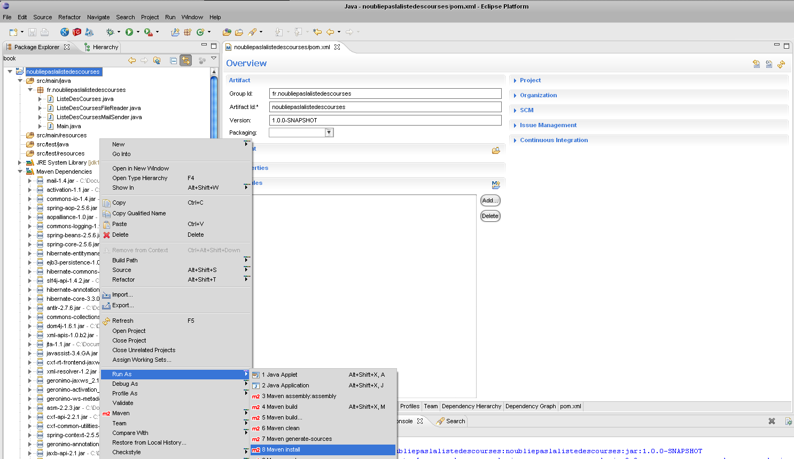
Un projet Maven vu sous Eclipse au travers de m2eclipse.
|
Le plugin peut être configuré pour utiliser votre propre installation de Maven pour les tâches courantes, mais dispose par défaut d’une copie interne de Maven qu’il utilise pour analyser le fichier POM. Il s’agit cependant d’une version de Maven 3.x encore en cours de développement, aussi il est préférable pour éviter toute mauvaise surprise de pointer sur l’installation locale de Maven 2. |
L’utilisation courante de Maven est totalement enrobée dans des assistants et la ligne de commande n’est plus du tout nécessaire. Maven est automatiquement invoqué lors des rafraîchissements de l’environnement de travail, permettant ainsi d’exécuter les tâches associées aux plugins en complément de la compilation Java par l’IDE. Les deux environnements se complètent donc, Eclipse ne conservant à sa charge que la compilation des sources Java.
Gestion du POM
Un éditeur graphique est proposé pour le POM. Il permet de saisir les métadonnées sans avoir à se soucier de la structure XML sous-jacente. La gestion des dépendances propose une assistance à la saisie des identifiants de groupe, d’artefact et de version, basée sur un index du dépôt de bibliothèque mis à jour périodiquement en tâche de fond. Un onglet dédié permet de consulter les dépendances du projet et d’identifier le jeu de transitivité à travers lequel elles apparaissent dans le projet (voir Figure 09-02).
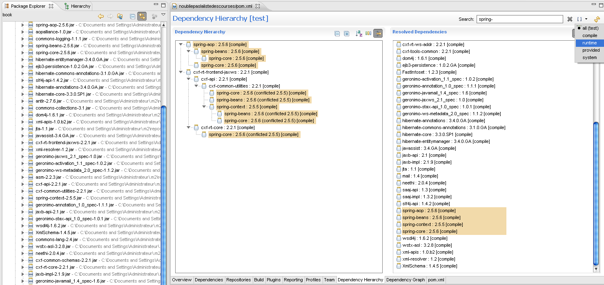
Gestion des dépendances.
Une vue permet d’obtenir un graphe des dépendances. Esthétique, ce n’est au mieux qu’un gadget pour impressionner ses collègues et justifier son statut d’expert Maven.
La vue XML bénéficie également d’enrichissements par rapport à l’éditeur XML de base. Elle permet de saisir rapidement les structures répétitives du POM via un patron type, comme les <dependency> ou les <execution>, ou d’inclure la configuration de quelques plugins récurrents, comme pour les plugins war ou aspectj. L’utilisateur peut d’ailleurs définir ses propres patrons pour les plugins ou structures XML qu’il utilise régulièrement. Comme dans l’éditeur graphique, l’éditeur XML propose une assistance à la saisie pour les identifiants de groupe, d’artefact et les versions.
La configuration des plugins, qui se fait exclusivement dans la vue XML, est, elle aussi, assistée : m2eclipse identifie les paramètres des plugins et les propose par complétion automatique, ce qui évite de devoir consulter la documentation et de faire une malheureuse faute de frappe dans leur nom. La figure 09-03 montre m2eclipse en action proposant cette assistance.
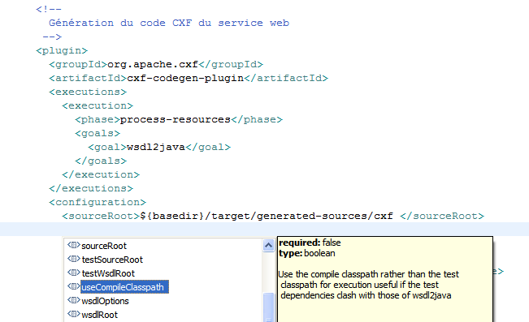
Édition de la configuration des plugins.
Intégration des plugins Maven
Lors de l’import du projet, m2eclipse lit la configuration de quelques plugins clés pour adapter le paramétrage du projet en conséquence. Le plugin compiler permet ainsi de définir l’environnement d’exécution Java associé au projet. Ce support peut même être étendu par des plugins complémentaires qui exploitent les API de m2eclipse. C’est par exemple le cas pour le plugin Eclipse-cs qui exploite la configuration du plugin checkstyle de Maven pour aligner les deux environnements.
Lors de la construction du projet dans l’environnement de développement, m2eclipse exécute les plugins Maven associés aux premières phases du cycle de vie, en particulier les générateurs de code et de ressources. Cela lui permet d’identifier les répertoires de code généré, mais a pour effet de bord d’être assez fortement consommateur en ressources : à chaque modification ou sauvegarde d’un fichier de ressource ou d’une classe, l’IDE lance une construction qui se traduit donc par une exécution de Maven. Selon le nombre de plugins concernés et leur rapidité, cela peut vite devenir pénalisant comme le montre la Figure 09-04 : l’IDE se fige en attendant la fin de cette exécution, et affiche le message très agaçant « user operation waiting for building workspace to complete ». Il s’agit d’une limite de l’IDE dans sa gestion des tâches de fond et de la construction incrémentale des projets, et celle-ci peut devenir très gênante pour son utilisation quotidienne. Les choses devraient aller mieux avec la prochaine version du plugin m2eclipse…
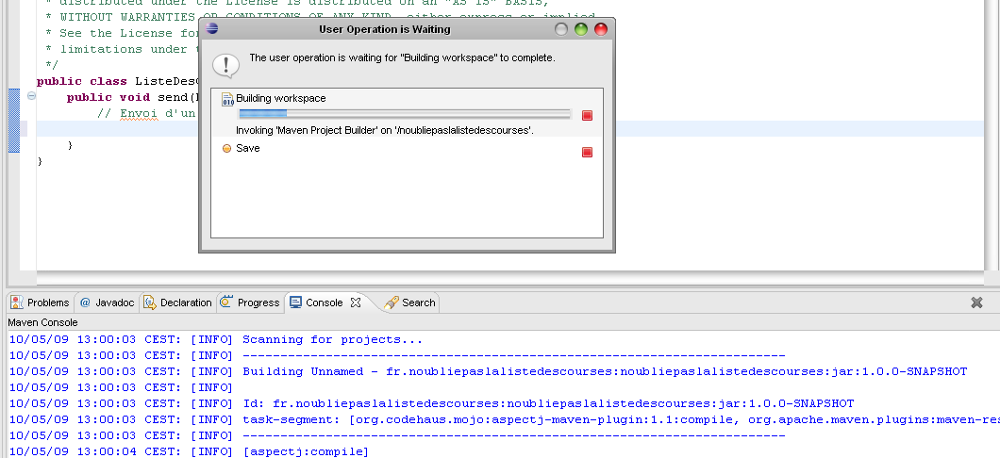
Veuillez patienter…
|
Même si l’équipe Maven n’a pas les moyens de faire plier significativement Eclipse à ses usages, elle essaie de traiter ce problème à son niveau. Des évolutions sur quelques plugins clés et le noyau de Maven permettent de mieux prendre en charge la compilation incrémentale d’Eclipse, en n’exécutant que les tâches spécifiques de Maven et en laissant l’IDE prendre en charge toutes les étapes pour lesquelles il propose une fonction équivalente. |
Et la cerise…
Le plugin Maven vient compléter les fonctionnalités de correction rapide (Quick Fix) d’Eclipse. Lors de l’utilisation d’une classe non référencée, d’un simple clic droit vous obtenez une liste de dépendances qui définissent la classe considérée (voir Figure 09-05). Il n’est donc pas nécessaire de passer par l’édition du POM pour ajouter une dépendance suite au copier-coller d’un fragment de code intéressant.
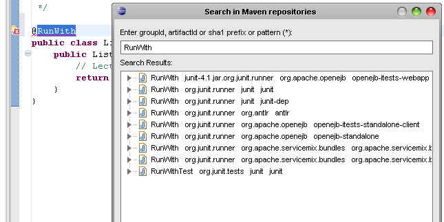
Correction rapide par ajout d’une dépendance.
Pour finir sa démo, Nicolas passe dans la vue dépendances, effectue une recherche sur commons-logging et obtient au bout de quelques instants une liste de bibliothèques variées et les chemins par lesquels nous récupérons ce JAR controversé dans notre projet. Un simple clic droit permet de l’exclure en ajoutant les nombreuses exclusions qui s’imposent. Ceux d’entre nous qui se sont déjà battus avec la gestion des dépendances de Maven, parfois un peu trop généreuse, apprécient ce raccourci.
Interrogations
Les versions successives de m2eclipse apportent corrections et nouvelles fonctionnalités et montrent un réel dynamisme pour proposer une intégration fiable et productive de Maven avec Eclipse. Il reste cependant assez déconcertant de voir deux plugins, dont l’architecture est relativement incompatible, hébergés par l’incubateur de la fondation Eclipse. Si quelques points de collaboration sont possibles, une fusion pure est simple n’est pas envisageable. Que va-t-il en ressortir, et surtout à quelle échéance ?
Intellij Idea
Notre deuxième candidat utilise l’environnement de développement de JetBrains, Intellij Idea. Outil mixte propriétaire + opensource, Idea part avec un petit handicap par rapport à ses concurrents pour notre jury, grand fan des logiciels libres, car la version « communautaire » n’offre que les fonctionnalités de base. Stéphane a prévu le coup et nous informe qu’une license Idea « ultimate » (la version payante mais ultracomplète) est offerte aux développeurs de projets open source reconnus ainsi qu’en lot pour les Java User Group. Il a ainsi pu s’en procurer une licence sans trop d’effort, sachant qu’on peut aussi tenter l’aventure avec une version d’évaluation. Le prix à débourser pour une licence n’excède de toute façon pas quelques centaines d’euros, à comparer au prix de la journée d’un consultant.
Import d’un projet Maven
Idea étant, comme tous les IDE récents, basé sur des mécanismes d’extensions, il nous faut d’abord installer le plugin Maven. Cette formalité réglée, il ne nous reste qu’à demander l’import de notre projet en indiquant son répertoire racine (ou son URL Subversion), et à fournir quelques paramètres de base comme le JDK à utiliser et les profils Maven à activer dans notre environnement. On laisse ensuite l’IDE analyser et indexer tous les éléments du projet et de ses dépendances. Cette phase d’import peut être assez longue et nous permet de découvrir un premier lot d’astuces d’Idea, ou encore de vérifier le bon fonctionnement de la machine à café.
Après cette première étape incontournable, Idea présente chaque module du projet comme un projet Java, en ayant identifié les répertoires de code généré, le niveau de langage à utiliser pour la syntaxe Java et l’ensemble des dépendances. Comme sous m2eclipse, les références intermodules sont définies comme telles (sans passer par l’archive JAR), ce qui nous permettra d’éditer librement les sources des différents modules et de constater immédiatement leur impact.
Jusqu’ici, notre projet Maven est donc parfaitement bien pris en charge par l’environnement de développement (voir Figure 09-06). Nos modules sont clairement identifiés et présentés dans une vue dédiée. Celle-ci nous permettra de lancer depuis l’IDE les opérations gérées par Maven, par exemple une construction jusqu’à une phase précise du cycle de vie ou l’exécution d’un plugin particulier.
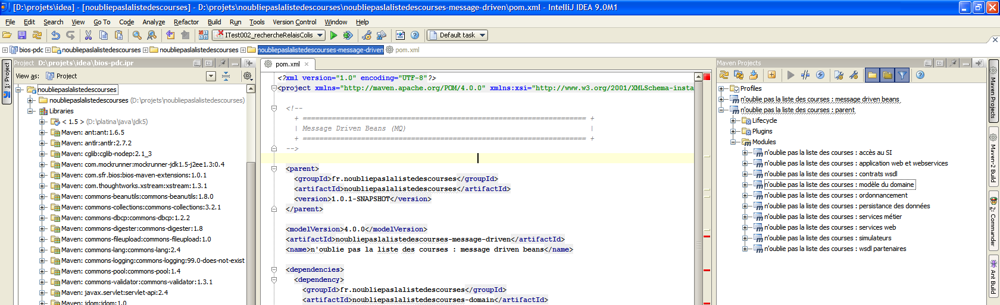
Le projet Maven après import dans Idea.
Gestion du POM
L’édition du fichier POM se fait via sa représentation XML, avec cependant de nombreux assistants. Idea identifie, par exemple, toutes les dépendances qui ne sont pas compatibles OSGi et propose de rechercher pour une version OSGi-ready, dans un dépôt spécialisé (typiquement celui géré par SpringSource pour son DM server). Bien sûr, tous ceux qui ne ciblent pas un environnement de ce type n’y verront qu’un gadget, mais l’engouement récent pour cette plateforme modulaire n’est pas à négliger ; aussi, est-il intéressant de constater que nos outils sont déjà à niveau pour la gérer.
Au sein de l’éditeur XML, Idea propose une assistance à la saisie dédiée à Maven, par exemple pour saisir les identifiants d’une dépendance ou d’un plugin. Ces références agissent comme des hyperliens et permettent de naviguer dans les POM du projet de manière fluide. Idea ne propose cependant aucune vue graphique des métadonnées Maven. Pas de synthèse ni d’outil d’analyse des dépendances. On reste donc un peu sur sa faim.
La vue de configuration du module (au sens Idea du terme) reflète cependant parfaitement les métadonnées de notre projet Maven (voir Figure 09-07). On y retrouve tous nos répertoires de code source (et de code généré), que nous pouvons au besoin compléter, mais dans ce cas la configuration Idea ne sera plus synchrone avec le projet Maven.
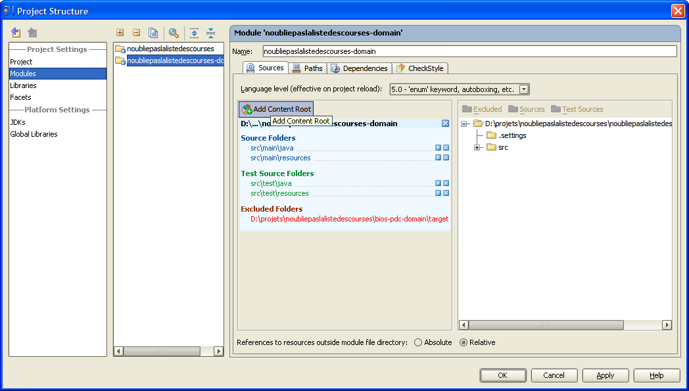
La configuration du module Idea à partir des métadonnées Maven.
De la même façon, les dépendances du projet sont clairement identifiées, avec un petit raffinement propre à Idea qui différencie le code de test du code principal, ainsi que les bibliothèques qui sont séparées en deux catégories (voir Figure 09-08). Les bibliothèques non exportées ne seront pas visibles depuis un autre projet qui fait référence au module considéré. Pas de risque ainsi d’introduire involontairement des imports parasites.
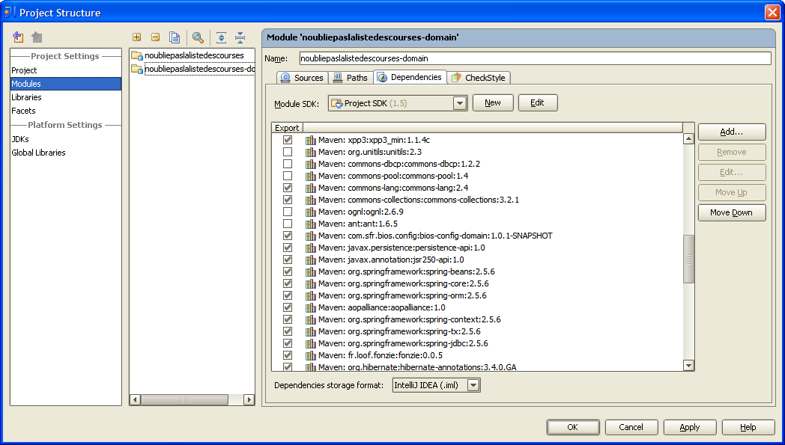
Les dépendances Maven vues sous Idea.
Intégration des plugins Maven
Les plugins qui génèrent du code lors des premières phases de la construction du projet sont invoqués lors de l’import du projet, ce qui permet à Idea d’identifier les répertoires associés. Pour le reste, Idea ne sait pas exploiter la configuration des plugins Maven pour ajuster la configuration des siens. Le développeur doit donc manuellement configurer le plugin Idea Checkstyle pour s’adapter aux règles déclarées dans son POM.
Cette restriction est valable pour tous les IDE, car elle demande au développeur de chaque plugin pour un environnement donné de faire l’effort de s’interfacer avec le support Maven, autrement dit de mettre un pied dans trois mondes différents (Maven, l’IDE et l’outil supporté par le plugin). Une telle gymnastique n’est pas facile et est généralement réservée aux outils majoritaires pour lesquels l’effort en vaut la chandelle.
Ce résultat en demi-teinte est rapidement compensé par la démonstration que nous fait Stéphane de l’utilisation courante de l’IDE. Il édite quelques classes, ajoute des dépendances, puis lance un test. Dans tous les cas, l’environnement répond promptement et ajuste sa configuration en fonction des directives du POM. Stéphane résume les choses en disant qu’il marche, « tout simplement », faisant référence à son rival Eclipse dont le building workspace n’amuse plus personne.
Bonus
L’intégration de Maven dans Idea se fait donc sans fioriture visuelle qui sorte du lot, mais tout simplement avec une solution totalement fonctionnelle et parfaitement intégrée dans le fonctionnement de l’IDE. Contrairement à ce qui se passait avec Eclipse, nous n’avons pas l’impression de voir s’exécuter une surcouche au-dessus de l’environnement qui tenterait de faire le lien entre deux mondes. C’est bien notre IDE qui sait parler le Maven, peut-être pas dans toutes ses subtilités, mais bien assez pour nous permettre de travailler confortablement.
Stéphane explique que ce qui oppose Eclipse à Idea, c’est la philosophie de l’outil : Eclipse tente de masquer la complexité des outils en intégrant tout leur fonctionnement dans son fameux build incrémental. Il en résulte qu’à chaque changement dans le code, un build Maven est lancé, parfois suivit d’un redéploiement par WTP, et qu’en conséquence une machine haut de gamme s’avère vite nécessaire. Idea est avant tout un éditeur et se focalise sur cette tâche pour fournir les assistances à la saisie de code les plus pointues. L’intégration des outils est présente, mais nécessite une configuration parfois manuelle et une exécution explicite. L’IDE reste en permanence disponible pour son utilisateur, et utilise les ressources de la machine pour offrir de meilleures analyses du code en cours de rédaction.
Nicolas grogne un peu dans son coin, se demandant s’il a choisi le bon camp, mais il est vite repêché par une question du jury : si les équipes sont habituées à Eclipse, largement diffusé dans les entreprises, l’apprentissage d’Idea est-il rapide ? Il faut bien l’admettre, apprivoiser un nouvel IDE prend du temps et les raccourcis que nous avons mis tant de temps à mémoriser sont désormais bien ancrés. Certes, le support de Maven dans Idea semble très bon, mais entre le coût de licence, le coût de (re)formation et l’éventuelle perte de productivité des développeurs contraints à migrer, il va falloir faire passer la pilule !
Avant que le débat ne s’enlise dans de stériles discussions sur le temps nécessaire pour apprivoiser un nouvel environnement et sur la compensation que peut apporter un outil plus efficace, nous décidons de passer à notre troisième candidat.
NetBeans
Notre dernier candidat est un farouche partisan de NetBeans et compte bien nous démontrer sa supériorité pour le mariage de Maven avec un environnement de développement intégré.
Prise en main
Le support de Maven est nativement intégré dans NetBeans, nous n’avons donc aucun plugin à installer. C’est prometteur : les développeurs de NetBeans ont pris à bras-le-corps la problématique du support de Maven dans l’IDE et n’ont pas délégué à une équipe externe l’intégration de cette fonctionnalité. Le reste de l’environnement n’a rien de fondamentalement déconcertant et la visite guidée proposée par Raphaël n’effraie pas grand monde.
Import d’un projet Maven
Seconde bonne surprise, que Raphaël ne manque pas de souligner, NetBeans n’importe pas un projet Maven, il se contente de lire nativement le POM. Autrement dit, NetBeans ne va pas chercher à traduire le POM pour créer sa propre configuration comme le font Eclipse ou Idea, mais il va entièrement se baser sur le POM. Nous sommes ainsi assurés que les modifications qui lui seront apportées seront prises en compte sans nécessiter une quelconque synchronisation, de même que nous ne risquons pas de tomber dans le travers de modifier la configuration de l’IDE sans que le POM soit cohérent. La Figure 09-09 montre l’import d’un projet Maven, et, comme le souligne avec insistance Raphaël, le POM n’est pas dans cet environnement un format annexe, mais bien un descripteur de projet à part entière qui se suffit complètement.
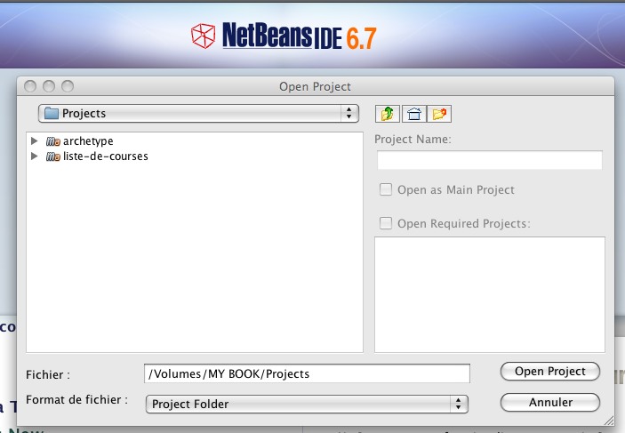
Ouverture native d’un projet Maven.
Nos dépendances, répertoires de sources (y compris le code généré) et sous-modules sont parfaitement détectés, NetBeans ayant même le bon goût de séparer nos dépendances de test, ce qui améliore la lisibilité du projet qui compte plusieurs dizaines de bibliothèques. Le lancement d’une construction du projet dans l’IDE exécute tout naturellement Maven dans une console, et nous pouvons évidemment exécuter à la demande une tâche particulière.
Gestion du POM
L’édition des métadonnées du POM se fait ici aussi selon le formalisme XML. À l’intérieur de cet éditeur, NetBeans ne propose pas d’assistance à la saisie spécifique de Maven. Par contre, nous pouvons introduire de nouvelles dépendances via un menu contextuel (clic droit sur l’icône qui regroupe nos bibliothèques). L’assistant propose alors un outil de recherche, basé, comme ses concurrents, sur les index mis à disposition par les gestionnaires de dépôts.
Intégration des plugins Maven
NetBeans ne propose pas d’intégration particulière des plugins Maven pour lesquels il dispose de plugins équivalents. Cette passerelle semble donc être une spécificité d’Eclipse, que certains apprécieront mais à laquelle d’autres, comme Raphaël, préféreront un environnement réellement fonctionnel. Une rapide démonstration de développement suffit d’ailleurs à le prouver, et Raphaël rejoint ainsi Stéphane dans son combat tout sauf Eclipse.
Bonus
NetBeans prend en charge la gestion des bibliothèques Maven de manière particulièrement intégrée dans les rouages de l’IDE. Les assistants de correction (Quick Fix) proposent par exemple de corriger un import non résolu en ajoutant la dépendance adéquate, via une recherche dans le dépôt. Comme l’indique la Figure 09-10, Raphaël ne se prive pas de nous montrer cette fonctionnalité comme preuve de la première place qu’occupe Maven dans son environnement préféré.
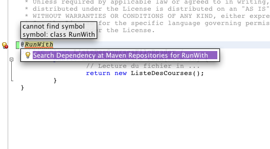
Intégration de la gestion des dépendances au plus profond de NetBeans.
Délibération du jury
La délibération du jury est longue et mouvementée. Riche en arguments, en comparaisons, mais aussi parfois en mauvaise foi, la discussion se prolonge sans fin et le résultat ne coule pas de source. Chacun y va de sa petite démo, de sa fonctionnalité absolument indispensable que l’autre n’a pas, de ses considérations sur la formation des développeurs… La conclusion finit par émerger, avec l’aide d’un regard externe au débat.

Venu nous rendre une petite visite de courtoisie, Sébastien s’étonne de nous trouver dans cette situation de guerre de chapelles. Pour débloquer la situation, il lui suffit de poser une question toute bête : « Mais… est-ce que vous pouvez toujours construire le projet à 100 % en ligne de commande ? » Bien sûr que oui, environnement de développement intégré ou pas, notre projet repose entièrement sur Maven et ne dépend d’aucun des trois IDE candidats à l’intronisation.
Dans ce cas, en quoi est-ce important ? Si Stéphane est à l’aise sous Idea, Raphaël indécrochable de son NetBeans, et Nicolas tellement profondément habitué à Eclipse qu’il ne sait plus s’en passer, pourquoi les faire changer ? Chacun trouve son compte dans son environnement, le tout est que la construction du projet ne soit pas affectée par les choix locaux de chacun. Après tout, il n’a jamais été question de demander à Arnaud de renoncer à son Mac, tout simplement parce que cela n’a aucune influence sur le projet, de même que Raphaël travaille sous Linux.
Les choses tournent donc rapidement au consensus et se terminent autour du verre de l’amitié (on l’a échappé belle, n’est-ce pas ?).
Conclusion
Un énorme avantage de Maven est qu’il porte intégralement le projet. Que l’on travaille dans un environnement graphique ou avec le bloc-notes n’a aucune influence sur le projet lui-même. Seul l’utilisateur peut être pénalisé par un environnement qu’il ne maîtrise pas, aussi autant le laisser choisir librement. Ne forcez pas un utilisateur d’Idea sur Mac à supporter avec angoisse un Eclipse sous Windows. N’obligez pas un « linuxien » sous NetBeans à abandonner ses raccourcis préférés. Ne demandez pas à un habitué du couple Windows/Eclipse comme il en existe des milliers à tout réapprendre juste pour répondre à un choix venu d’en haut, avec la perte de productivité qui va nécessairement en découler.
Maven nous a libérés des IDE, nous pouvons utiliser celui que nous voulons et en changer à tout moment, car aucune de nos tâches stratégiques n’y est liée.
Chapitre 10 : Le jour J : la livraison
La vie d’un projet est ponctuée de moments forts, et le jour de la livraison en est un particulièrement éprouvant. Après de longues semaines de développement et de mise au point, notre logiciel est mis à la disposition de ses utilisateurs, soumis à leur jugement et à leur manque de compassion pour les erreurs que nous aurions pu commettre.
Stratégie de livraison
Première livraison
La toute première version publique de « noubliepaslalistedescourses » a été particulièrement héroïque. Tout commence par plusieurs semaines de tests intensifs pour identifier tous les bogues qui auraient pu nous échapper. Les derniers correctifs sont appliqués, avant de se lancer dans une ultime journée de vérification pour être sûr de ne rien laisser au hasard. Après quoi, il nous faut préparer le logiciel enfin stabilisé et validé pour la diffusion. Emmanuel prend en charge la préparation de cette toute première mouture.
Il commence par parcourir tous les fichiers de configuration du projet pour indiquer comme numéro de version la fameuse valeur 1.0.0. Le projet, reconstruit avec cette nouvelle configuration, est testé une dernière fois avant d’être rendu public. Emmanuel marque dans notre gestionnaire de code source ce moment crucial, ce qui se traduit par la pose d’un « tag ». La journée se termine donc tard autour d’une bonne bouteille pour fêter le succès de notre belle aventure. « noubliepaslalistedescourses » est désormais en ligne et attend de pied ferme ses utilisateurs.
Deuxième livraison
Une mauvaise surprise nous tombe dessus lorsque nous devons en urgence appliquer une correction pour un problème de performances. Soumise à un succès inattendu, l’application a commencé à cafouiller et il a fallu trouver des palliatifs immédiats. Le tag posé par Emmanuel nous permet de récupérer le code source associé à cette fameuse version 1.0.0 et de préparer aussi vite que possible une version 1.0.1 corrigeant ce problème. Et là, impossible de reconstruire le projet. Lors de la première livraison, les modifications n’avaient pas été complètement intégrées dans le gestionnaire de code source lors de la pose du tag. Emmanuel doit donc gérer dans l’urgence deux problèmes là où un seul lui suffisait déjà largement.
Pour ne pas reproduire la même erreur, il décide de poser le tag de la version 1.0.1, puis d’extraire du gestionnaire de sources le code associé au tag encore tout frais et de s’en servir pour construire le logiciel qui sera validé une toute dernière fois avant d’être publié. Si jamais nous détections un problème de dernière minute, il nous suffirait d’apporter les corrections nécessaires, de poser un nouveau tag et de reprendre la procédure.
Troisième livraison
Les choses semblent enfin maîtrisées, mais nous déchantons vite quand d’autres problèmes apparaissent sur la version 1.0.1. Après analyse, on comprend que ces problèmes auraient dû être détectés par notre outillage de tests. Alors, que s’est-il passé ?
Ces tests sont malheureusement associés à un profil qui doit être activé à la demande. Comme ils portent sur les accès à la base de données, et pour ne pas pénaliser les autres développeurs, nous les avons isolés dans un profil dédié, comme nous l’avons vu au Chapitre 4. Était-ce une fausse bonne idée ?
L’équipe de développement, malgré le fiasco de cette version corrective, n’en est pas convaincue. Les profils permettent à chacun d’être correctement outillé sur la partie qui le concerne sans être handicapé par des temps de construction interminables ou par des prérequis sur l’environnement de développement.
Lors de la construction de notre projet avant livraison, nous devons tout simplement ne pas négliger d’activer tous les profils adéquats pour valider au maximum l’application. Nous pouvons même ajouter, à cette phase cruciale, des profils spécifiques pour adjoindre des informations dans le livrable : date de livraison, auteur de la livraison, numéro de révision dans le gestionnaire de code source…
La version 1.0.2 sera donc la bonne, maintenant qu’Emmanuel tient enfin une procédure de livraison fiable et… connue de tous ?
Documentation
La procédure peut être aussi bétonnée qu’on le voudra, elle n’est fiable que si elle est appliquée scrupuleusement. Autrement dit, le facteur humain reste comme toujours l’épée de Damoclès qui menace les projets.
La plupart des entreprises répondent à ce problème par une documentation lourdement contrôlée, répondant à des règles très strictes de contrôle qualité et à des nomenclatures précises. En supposant que tout le monde soit rompu aux pratiques de qualité et vive dans un monde labellisé AFAQ et ISO-900x, cela devrait garantir le succès du projet en toute circonstance. Seulement, nous ne vivons pas dans ce monde — est-ce réellement regrettable ?
D’autres préfèrent une approche plus souple et réactive en faisant appel à l’auto-organisation, par exemple via une documentation supportée par un wiki.
|
Pour ceux qui ne le sauraient pas, un wiki est un site web dont le contenu peut être modifié, corrigé ou complété par ses utilisateurs. Il est donc très dynamique et peut s’adapter à la réalité des problèmes rencontrés et s’organiser en fonction des informations réellement utiles. Un wiki n’est pas du tout incompatible avec une gestion « classique » de la documentation. Si vous n’en avez pas un sur votre projet, faites un petit essai avec votre équipe, vous serez surpris du résultat. Les solutions ne manquent pas, du wiki PHP de base au très professionnel Confluence, en passant par l’incontournable XWiki cher à Vincent. |
Emmanuel documente ainsi la procédure de livraison dans notre wiki, accessible rapidement et sans les ambiguïtés d’une classification documentaire complexe. Elle a aussi l’énorme mérite de permettre à celui qui applique la procédure de venir compléter la documentation pour préciser un point qu’il trouve mal expliqué, ou donner des indications sur un point pas assez détaillé. Certains seront très à l’aise avec les commandes Unix alors que d’autres auront besoin qu’on les prenne par la main.
Est-ce vraiment la panacée ? Pourquoi acceptons-nous que le moment de la
livraison — le plus crucial de la vie du projet — soit le seul à ne pas
bénéficier de l’approche que Maven a apportée au projet :
l’automatisation aussi complète que possible via une commande unique.
Emmanuel a pris le soin de documenter dans le détail la procédure, et le
principe du wiki permet à chacun de la compléter si un point restait
obscur. Cependant, nous construisons tous nos projets, quelles que
soient leur complexité ou leur technologie, par la commande universelle
mvn install. La procédure de livraison ne pourrait-elle pas elle aussi
être homogénéisée ? Emmanuel part donc à la pêche aux bonnes pratiques
du côté de Maven et de ses plugins…
Le plugin release
Le plugin release de Maven a été conçu dans cet esprit. Il regroupe en une seule commande toutes les bonnes pratiques de livraison apprises sur de nombreux projets. En l’utilisant, vous n’aurez pas comme nous à apprendre à vos dépens que l’établissement d’une procédure fiable ne s’improvise pas. Surtout, vous n’aurez pas besoin de 20 pages de documentation pour indiquer la procédure à suivre.
Pour vous donner une idée de ce que le plugin propose, voici le processus qu’il applique pour produire un livrable.
Étape 1 : préparation
-
Il contrôle l’environnement de l’utilisateur qui ne doit présenter aucune modification non sauvegardée dans le gestionnaire de code source. Optionnellement, un accès exclusif au gestionnaire peut être demandé pour les plus paranoïaques d’entre nous.
-
Il contrôle le projet qui ne doit référencer aucune dépendance en SNAPSHOT, dont l’état serait par nature non reproductible.
-
Il modifie les indications de version dans les fichiers POM des modules du projet. Le plugin peut être configuré pour affecter la même version à toutes les branches d’un projet multimodule, sinon il demandera de saisir une version pour chacun d’eux.
-
Il indique dans le POM du projet le tag appliqué à la version à produire. Le projet comptera donc une référence explicite à l’emplacement où son code source est stocké.
-
Il effectue une construction complète du projet pour contrôler les modifications appliquées automatiquement et s’assurer qu’elles n’ont pas un impact négatif.
-
Il sauvegarde les modifications appliquées dans le gestionnaire de code source.
-
Il pose un tag dans le gestionnaire de code source pour la livraison en cours de préparation.
-
Il modifie à nouveau les indications de version pour pointer vers la version de développement suivante et les sauvegarde.
Comme vous pouvez le constater, la démarche est plus que rigoureuse et elle est entièrement automatisée. Finalement, le projet dispose, dans son gestionnaire de versions, d’un tag pour la version à livrer, et la version courante (trunk) correspond à la prochaine version à développer. L’état « version livrée » n’est apparu que furtivement dans l’historique du gestionnaire de code source, ce qui correspond bien à la réalité de cet événement aussi ponctuel que capital.
Étape 2 : livraison
La production du logiciel livrable est réalisée à partir du tag placé dans le gestionnaire de sources. Nous pourrions effectuer cette manœuvre manuellement, mais ici encore le plugin release simplifie la tâche :
-
extraction du code correspondant au tag dans un répertoire dédié, vierge de toute modification locale malencontreuse ;
-
construction du projet à partir d’une liste de cibles, d’options et de profils indiqués dans le POM.
Le point capital ici est que la description de la configuration et des commandes nécessaires à la construction correcte du livrable est entièrement documentée dans le POM lui-même. Pas de document à connaître, à retrouver dans la bonne version ou à ne surtout pas oublier de mettre à jour.
Un projet Maven utilisant le plugin release permet de réaliser une livraison totalement maîtrisée, contrôlée et synchronisée avec le gestionnaire de code source en une simple commande :
mvn release:prepare release:perform
Emmanuel est plus que satisfait par cette simplicité. Maven prouve ici son efficacité : une commande unique pour réaliser un traitement loin d’être simple et applicable sur tous nos projets, toutes complexités et technologies confondues. Reprenez le document PROCx589002-02.1-Procédure de livraison.doc que vous aviez jusqu’ici et servez-vous-en pour caler votre armoire bancale. Et si votre responsable qualité vous réclame un document de procédure, faites-lui une photocopie de la Figure 10-01 !
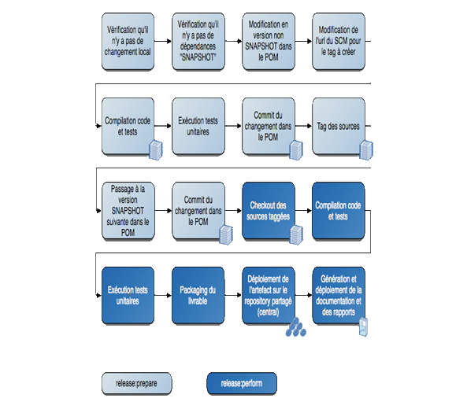
Étapes réalisées par le plugin release_._
|
Cette procédure est loin d’être élémentaire et il y a donc de nombreuses raisons qu’elle plante en cours de route avant d’être complètement au point. Le plugin propose un mode dryRun qui permet de l’exécuter à blanc, sans qu’aucune modification soit appliquée dans le gestionnaire de code source, le temps de bien mettre au point la configuration du plugin. |
Et si ça foire ?
La préparation de la livraison comprend de nombreuses étapes et contrôles. Si l’une d’elles échoue, le plugin va évidemment s’interrompre. Après avoir identifié et corrigé le problème, nous avons deux options :
-
Reprendre toute la procédure à son point de départ. Le plugin release propose alors de faire un retour arrière complet dans l’état initial, dans l’esprit de ce que propose une base de données au cours d’une transaction :
mvn release:rollback -
Reprendre la procédure à partir du point où elle s’est arrêtée précédemment.
La seconde solution est évidemment moins stricte ; cependant, vous pouvez parfois être bloqué par un problème purement local et indépendant de la stabilité du projet, comme un contrôle de votre environnement par le plugin enforcer qui échoue, ou la construction qui n’aboutit pas parce que vous n’avez pas attribué suffisamment de mémoire à l’exécution de Maven.
Dans les deux cas, la résolution du problème ne nécessite pas de modifier le projet lui-même, et le plugin release permet de reprendre le processus : par défaut, lancé une deuxième fois sur le même projet, il va reprendre sa tâche là où il en était resté, sauf si on lui indique explicitement de tout reprendre de zéro via l’option -Dresume=false.
Qui fait la release ?
Notre processus est désormais bien rôdé. Reste un dernier point à régler : sur quel environnement faire la release ? Dans notre build, nous avons tenté de blinder au maximum toute dépendance à l’environnement, clarifié tous les prérequis. Mais nous savons bien qu’un grain de sable se faufile si vite entre les rouages…
Nous sommes tous d’accord : un poste de développement n’est pas idéal pour faire la release. Il contient par définition des éléments de test, des fichiers modifiés, des simulateurs en tout genre que nous risquons d’incorporer sans le savoir dans le livrable. Pourtant, il y a un membre de l’équipe qui est irréprochable sur le sujet : notre intégration continue !
Avantages majeurs :
-
le serveur d’intégration continue tourne sur un système Unix strictement identique au système cible. Cela nous permet d’identifier plus rapidement d’éventuels problèmes sur les accès fichiers ou réseau propres au système, autant réutiliser cet avantage ;
-
le serveur d’intégration continue ne développe pas, et ne fait donc aucune modification que nous risquerions d’incorporer au livrable ;
-
le serveur d’intégration continue ne râle jamais et est toujours prêt à donner de son temps. Notre processus de release devenant relativement ambitieux, le faire tourner sur nos postes c’est immobiliser un développeur pendant un temps non négligeable.
Notre serveur Jenkins dispose justement d’un plugin qui correspond à toutes nos attentes : « Maven Release Plugin », un plugin pour lancer une release depuis notre fauteuil par un simple click — sitôt essayé, sitôt adopté !
|
On pourra reprocher à cette approche de rendre nos livrables « anonymes ». Dans certaines circonstances, nous voudrions conserver la traçabilité en signant le binaire avec une clé GPG, ce qui est par exemple nécessaire pour les diffuser sur central. Dans ces circonstances, il faudra revenir à une approche plus « traditionnelle ». |
Notre prochaine version
La livraison de la version 1.2.0 de « noubliepaslalistedescourses » n’a pas été une de ces journées de stress sans fin, qui se terminent bien après le coucher du soleil. Elle n’a pas non plus été menée par un expert rompu à tous nos outils et spécialiste de la procédure. C’est notre stagiaire qui l’a réalisée, le plus naturellement du monde, et sans même se rendre compte de ce qu’avaient pu être les livraisons précédentes.
L’approche par convention et l’excellente extensibilité de Maven montrent toute la force de celui-ci dans le plugin release. Un seul fichier, utilisant un formalisme XML certes verbeux mais simple, permet de décrire toutes les étapes de construction et toutes les options nécessaires pour obtenir un résultat fiable.
Tester des candidats
Jusqu’à présent, nous avons utilisé notre outillage de tests automatisé et une série de tests en amont pour valider le fonctionnement de notre logiciel avant livraison. Nous ne sommes cependant jamais à l’abri d’une coquille de dernière minute qui passerait au travers du processus de livraison. Aussi, nous voulons tester une dernière fois avant de mettre le coup de tampon « bon pour le service ».
C’est à nouveau Emmanuel qui s’y colle, maintenant qu’il est devenu notre gourou de la livraison. Pour notre version 1.3.0, il propose de compléter notre procédure techniquement bien rodée d’une phase supplémentaire de tests. La version marquée 1.3.0 sera installée sur notre serveur de validation et subira nos tests les plus redoutables. Comment gérer cependant les versions dans les essais successifs que nous allons probablement enchaîner ? Chaque candidat au titre de livraison officielle a sa propre identité et ne doit pas être confondu avec les autres.
Première option, utiliser un nombre supplémentaire dans le numéro de version, indiquant le numéro du candidat dans la course au logiciel sans faille. La 1.3.0.1 sera probablement imparfaite, la 1.3.0.2 aura son lot de régressions inacceptables, la 1.3.0.3 sera peut-être la bonne. Certains logiciels suivent cette option et ne diffusent publiquement que les sous-versions qui ont satisfait tous les critères de qualité. Les utilisateurs peuvent cependant être surpris de constater des manques dans la série des numéros de version.
Emmanuel n’aime pas trop cette solution et voudrait pouvoir redéfinir la
version de notre meilleur candidat en « 1.3.0 ». Seulement, le code marqué
dans notre gestionnaire de code source ne porterait pas la bonne
version, et le tag serait inadapté. Une fois de plus, Maven et son
plugin release viennent à notre secours. Lorsque nous exécutons la
commande mvn release:perform, nous demandons à Maven de construire le
livrable et de le diffuser sur notre dépôt public. Une autre commande
mvn release:stage est très comparable, mais remplace automatiquement la
phase de déploiement pour pointer sur notre dépôt de validation. Le
logiciel installé sur celui-ci sera donc strictement identique, au bit
près, à une livraison classique, mais aura juste changé de destination.
Nous pourrons donc le tester attentivement en toute tranquillité.
La seconde différence qu’introduit stage est qu’il conserve la possibilité de lancer un rollback. Il est donc possible, si la version en cours de test ne nous satisfait pas, de revenir en arrière sur notre gestion de version et de relancer plus tard une nouvelle version avec le même numéro de version.
Si effectivement notre premier « release candidate » est insuffisant pour répondre à nos exigences, il nous suffit de revenir via un release:rollback en version 1.3.0-SNAPSHOT. La seule chose qui restera du candidat malheureux est le tag, que nous pouvons renommer en 1.3.0-RC1. Si, par malheur, toutes nos tentatives ne produisaient qu’un logiciel encore pire, nous pourrions toujours, pressés par le temps, repartir de ce tag. Celui-ci présente bien la capacité de produire un projet en version 1.3.0 !
Carlos est très intrigué par les explications d’Emmanuel sur cette procédure de mise sur étagère d’une version candidate. Il propose alors d’utiliser un autre mécanisme, en se fondant sur le gestionnaire de dépôt dont il a la responsabilité. Notre procédure de livraison va produire un livrable dans la version cible 1.3.0 et le diffuser sur le gestionnaire de dépôt. Par contre, l’emplacement dans ce dépôt sera choisi dans une sous-catégorie spéciale, dédiée aux préversions candidates. Nos bêta-testeurs pourront pointer dessus pour récupérer le binaire et le tester en connaissance de cause, alors que les autres utilisateurs n’en auront pas connaissance. Une fois cet artefact validé, il suffira de demander au gestionnaire de dépôt de le promouvoir dans le dépôt public (sous Nexus, dans la version pro, voir la gestion des staging repositories).
Emmanuel et Carlos nous proposent ainsi, par le biais d’outils propres au monde Maven, une procédure complète, fiabilisée et totalement automatisée pour produire notre livrable, le tester puis le diffuser.
Urgence !
Notre version 1.3.0 n’est pas encore complètement stabilisée que nous avons un retour alarmant d’un de nos clients sur la version 1.2.0. Un bogue très gênant, qui nécessite de notre part une intervention immédiate. Impossible de proposer une migration dans la nouvelle version qui n’est même pas encore prête et apporte de toute façon des changements significatifs dont notre client n’a que faire dans son état d’esprit du moment.
Il nous faut un correctif, une 1.2.1, et le plus vite sera le mieux. Et c’est bien sûr sur Emmanuel que ça tombe une fois de plus !
Mais, cette fois, Emmanuel ne s’est pas laissé prendre de vitesse et a prévu le coup. Notre gestionnaire de code source prend ce problème en charge à travers la notion de branche. En parallèle, vont commencer à croître d’un côté le tronc du projet, correspondant à la version 1.3.0 qui continue son chemin, et, d’un autre côté, une branche 1.2.1, dont le point de départ est le moment exact de création de la version 1.2.0. Les divergences entre les codes de ces deux versions pourront être fusionnées plus tard, ou peut-être resteront-elles définitivement séparées, l’avenir nous le dira. La Figure 10-02 donne une idée de la gestion en parallèle de versions, avec un point de branchement et un point de fusion quelques semaines plus tard. Cette approche peut être utilisée pour des besoins correctifs ou pour expérimenter à l’abri d’un petit coin tranquille une évolution complexe, qui impacterait trop le reste de l’équipe.
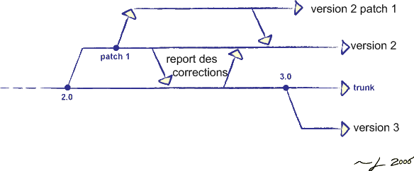
Utilisation d’une branche de développement parallèle.
Encore une fois, le plugin release va nous faciliter la tâche, ce qui est la moindre des choses lorsqu’il faut en plus gérer l’énervement de notre client au bout du fil et lui prouver notre réactivité. mvn release:branch nous permet de créer rapidement une branche de développement, avec mise à jour de nos POM pour indiquer la version corrective et les références adéquates à notre gestionnaire de code source. Nous pouvons alors commencer à travailler dans la branche fraîchement créée sans perdre de temps.
Il faudra juste configurer le serveur d’intégration continue pour scruter l’avancement de ce développement parallèle. Sous Hudson, nous pouvons simplement copier la configuration existante pour créer un nouveau job. Seul l’emplacement du gestionnaire de code source sera modifié.
Une fois notre développement terminé, le couple release:prepare release:perform reprendra du service pour produire ce livrable correctif très attendu. Une fois de plus, toute cette procédure aurait pu être traitée manuellement, dans une ambiance de stress et de précipitation dont les résultats peuvent être désastreux. Maven propose de les prendre en charge de manière totalement structurée et automatisée.
Vis ma vie
Emmanuel est confronté à un problème : en tant que responsable du développement du portail web, il est soumis aux demandes répétées du marketing. Tout est toujours urgentissime, et il faudrait pouvoir multiplier les versions. Mais Vincent, qui est responsable du back-end n’est pas sur la même longueur d’onde : il a des évolutions lourdes à prendre en compte pour gérer la forte montée en puissance de notre service. Les deux équipes n’ont pas le même cycle de vie, et continuer à gérer cela dans un seul et même projet Maven pose problème.
Leur première idée est de séparer le projet en deux, seulement il y a notre fameux POM parent dont tout le monde hérite. Nous séparons donc en trois, chacun avec son propre numéro de version et son propre cycle de vie. Pour respecter la structure de Subversion par rapport au cycle de vie, nous aboutissons à une structure de fichiers sous Subversion assez disgracieuse :
+ /parent/trunk | |_branches | |_tags + /portail/trunk | |_branches | |_tags + /backend/trunk | |_branches | |_tags
En dehors des considérations esthétiques, notre parent n’est plus dans le répertoire … parent de chaque module. Maven nous permet de définir un chemin relatif pour pallier à cela :
<parent>
<groupId>fr.noubliepaslalistedescourses</groupId>
<artifactId>parent</artifactId>
<version>5</version>
<relativePath>../parent/tags/parent-5/pom.xml</relativePath>
</parent>
<artifactId>portal</artifactId>
<version>4.2.0-SNAPSHOT</version>« Bof », c’est tout ce que cela nous inspire spontanément. D’accord, ça marche, mais de toute évidence ce n’est pas la panacée. Sans compter que, pour obtenir les fichiers nécessaires à un build complet, nous devons faire un checkout total du projet, tags et branches inclus.
La solution nous vient en regardant comment est géré le code de… Maven lui-même ! Subversion dispose d’un mécanisme qu’on pourrait comparer aux liens symboliques d’Unix : les externals. Il s’agit de répertoires fantômes dans la structure de fichiers SVN, sur lesquels on indique via une propriété un lien vers un autre emplacement SVN (voir un autre dépôt SVN). Dans notre cas, nous créons un répertoire /trunks (avec un « s ») vide qui va regrouper toutes les racines de nos différents modules :
+ /parent/trunks
Ce répertoire ne contient strictement rien, en dehors de la propriété svn:externals suivante :
pom.xml /parent/trunk/pom.xml portal /portal/trunk backend /backend/trunk
Un checkout de /trunks extrait de Subversion la structure traditionnelle Maven, avec sa hiérarchie de modules, pour toutes les versions de développement. Il nous suffit alors de configurer l’intégration continue sur ce chemin pour vérifier que chaque développement reste bien synchrone avec le reste du projet.
|
Si tout cela vous semble encore bien acrobatique, faites comme nous : passez à Git ! Subversion est le seul gestionnaire de code à ne pas supporter nativement les notions de branches et de tag. Ce n’est ni la seule, ni la meilleure raison de migrer, mais ça peut en faire une de plus. |
Le jour de la release d’un des modules, il suffit de le considérer comme
un module isolé, qui dispose de son propre cycle de vie. Et pour assurer
la mise à jour des diverses versions dans nos différents projets, plutôt
que de faire ça à la main, nous faisons appel au plugin versions : mvn
versions:use-latest-snapshots par exemple s’assure que nous utilisons
bien les dernières versions SNAPSHOT, et inversement
mvn versions:use-releases pour utiliser la dernière release disponible
d’un module ayant un cycle de vie indépendant.
|
Le plugin versions (http://mojo.codehaus.org/versions-maven-plugin) devient rapidement indispensable pour gérer de gros projets, incluant un grand nombre de modules ou de dépendances. Il gère les modifications de numéro de version, SNAPSHOT ou non, sans risquer de faire de fausses manipulations. Accessoirement, il gère un fichier backup des POM modifiés, qui permet à tout moment de revenir en arrière en cas de fausse manipulation. |
Au-delà de l’intégration continue
Nous avons déjà mis en œuvre l’automatisation de notre construction de projet au sein d’un serveur d’intégration continue. Maintenant que nous savons tout aussi bien automatiser la construction de nos livrables, il est naturel de franchir un pas supplémentaire.
On parle parfois de production continue pour décrire cette nouvelle étape dans l’automatisation, et c’est une pratique qui s’inscrit dans la démarche d’usine logicielle que de nombreuses entreprises cherchent à appliquer à leurs développements informatiques pour échapper à un monde où règnent le bricolage et les manipulations hasardeuses. La Figure 10-03 présente le principe général de cette approche.
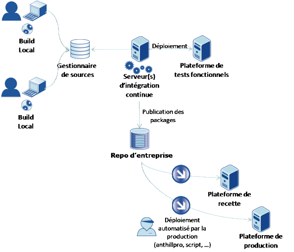
Production continue.
Le concept est finalement relativement simple. Nous disposons d’une automatisation capable de construire, tester en profondeur et publier les versions stables de notre logiciel, avec toute la rigueur et la traçabilité dont peut rêver n’importe quel ingénieur qualité. La seule étape qui reste encore plus ou moins aléatoire est l’installation sur nos plateformes de recette puis de production. Pourtant, comme nous l’avons vu au Chapitre 8, Maven — assisté de Cargo — est tout à fait capable de déployer nos applications JavaEE sur un serveur.
En production continue, nous allons ajouter dans la description du projet (dans notre POM), ces étapes recette et de mise en production. Il ne restera donc entre le développeur, qui saisit son code, et l’administrateur, qui installe la nouvelle version, aucune inconnue plus ou moins bien documentée. Bien sûr, nous devrons aussi intégrer dans le processus la gestion des migrations de données, la possibilité d’un retour arrière, mais ce n’est après tout qu’un problème d’automatisation d’un processus que nous gérions jusqu’ici à la main.
L’intégralité du processus de réalisation de notre logiciel est ainsi
embarquée dans le POM. Les tâches de construction, de test, de
validation de nos règles de développement, de qualification, de contrôle
fonctionnel et d’installation sont entièrement automatisées et ne
dépendent plus que de la décision de l’administrateur de cliquer sur le
bouton vert, ou plutôt de lancer un mvn –Pproduction monserver:deploy.
Si pour vous c’est de la science-fiction, jetez un œil du côté du projet Jenkins qui propose une nouvelle release par semaine depuis plus de 400 versions, ou bien considérez des sites comme Flickr.com qui font plus de 10 mises en production par jour — ce qu’ils appellent, eux, un « commit », au sens littéral du terme : « engagement ».
Emmanuel est plus que satisfait et raconte avec un sourire nostalgique à nos stagiaires les journées rocambolesques des premières versions.
Conclusion
L’automatisation des processus de développement est une tâche qui nécessite un gros effort initial, non seulement pour dépasser les contraintes techniques, mais surtout pour faire passer les mauvaises habitudes et inculquer une nouvelle vision. N’espérez pas créer en quelques jours une usine logicielle mettant en œuvre des tests unitaires, d’intégration et fonctionnels sur une grille de machines. Commencez petit sur des projets pilotes, essuyez les plâtres de vos premières erreurs et attendez un peu pour récolter les fruits d’un processus enfin compris et dont les utilisateurs seront les meilleurs évangélistes.
La livraison fait partie de ces étapes qui concernent tout le monde avec un haut niveau de stress. L’automatisation y prend toute sa force et démontre son intérêt. Maven peut vous apporter de nombreux services, structurer votre projet, mais c’est certainement sur un point aussi stratégique qu’il s’imposera comme outil incontournable. Chaque spécificité de votre projet étant automatisée, documentée et historisée via votre fichier POM, vous pourrez enfin vous focaliser sur la seule chose qui compte vraiment : le fonctionnement de votre application.
Partie 3
L’informatique d’entreprise ne se limite pas à une utilisation raisonnée et flexible des « ressources ». Elle doit aussi faire face à des contraintes qui viennent d’en haut, et auxquelles le projet doit se plier, quelles que soient ses habitudes.
Après quelque temps de fonctionnement, notre start-up a atteint un joli succès. Les promesses de stock-options commencent à nous titiller, quand la nouvelle tombe : nous avons été contactés par le groupe Geegol pour venir compléter son offre de services. C’est une reconnaissance inespérée pour notre travail, et nous préparons avec un mélange d’enthousiasme et d’anxiété le passage du statut de start-up à celui de filiale d’un géant international.

Chapitre 11 : Utiliser un outil non supporté
Jusqu’ici, nous avons toujours trouvé pour chaque problème que nous avons rencontré un plugin Maven adapté. Le « mariage » de notre projet avec les règles du groupe Geegol va cependant nous obliger à faire quelques efforts supplémentaires.
Un outil maison
Le groupe utilise (pour des raisons que nous n’aborderons pas ici) un serveur qu’il a développé lui-même, le « Geegol Execution Architecture » – GEA pour les intimes. Il ne s’agit pas d’un serveur JavaEE traditionnel, bien qu’il y ressemble beaucoup et propose des API de programmation compatibles. Il présente cependant quelques restrictions spécifiques qu’il est nécessaire de respecter pour le bon fonctionnement de l’application.

Pour s’assurer que ces contraintes sont respectées, plutôt que d’attendre les phases de validation du projet et un éventuel crash, le groupe a développé un outil dédié qui identifie dès la conception du code le non-respect de ces règles.
Notre projet, venant du monde extérieur, a dû passer par cette moulinette pour identifier les adaptations nécessaires, et la tâche de mise à niveau n’a pas été aisée. Aussi, nous voudrions éviter de replonger dans cette phase de reprise du code et intégrer ce contrôle au plus tôt, c’est-à-dire à chaque nouvelle ligne de code ajoutée au logiciel.
Inutile de rechercher sur Internet, nous ne trouverons pas de plugin Maven tout prêt pour ce besoin spécifique. Nous sommes le premier projet du groupe à utiliser Maven, aussi il va falloir nous remonter les manches.
Réutiliser l’existant
L’outil de Geegol est assez simple d’utilisation. Il est écrit en Java, et on l’invoque depuis la ligne de commande en fournissant la liste des fichiers sources .java à analyser. Il faut également que le classpath soit configuré pour inclure toutes les bibliothèques référencées dans ce code source. Hervé s’attaque donc à l’application de ce nouvel outil sur notre projet, en l’intégrant dans notre processus de construction par Maven.
Une étape préalable à toute solution basée sur Maven est de mettre à la disposition de celui-ci la bibliothèque de notre outil gea-check sous forme d’artefact Maven. Nous devons donc le placer dans notre dépôt de bibliothèques, accompagné d’un fichier POM fournissant les métadonnées adéquates, en particulier la liste précise de ses dépendances. Nous avons déjà évoqué au Chapitre 2 l’identification des bibliothèques et de leur version. Hervé prépare soigneusement un fichier POM et le télécharge avec l’archive JAR dans notre dépôt de bibliothèques.
De nombreux projets utilisent Ant pour leur construction – ou l’ont utilisé avant de passer à Maven – avec les limites que nous avons déjà vues. Le groupe a développé pour son outil une tâche Ant qui lance la génération documentaire, nous ne partons donc pas de rien.
La solution la plus rapide consiste à utiliser la tâche Ant telle quelle dans notre projet Maven. Hervé pourra ainsi rassurer tout le monde en prouvant que le choix de Maven ne met pas des bâtons dans les roues. Cela est possible grâce à un plugin standard : AntRun, lequel, comme son nom le suggère, va exécuter un script Ant lors de la construction du projet par Maven. Voilà qui pourrait bien nous sauver la mise ! Le Listing 11.1 montre la configuration que nous avons ajoutée au projet pour gérer cette étape.
<plugin>
<artifactId>maven-antrun-plugin</artifatcId>
<version>1.3</version>
<executions>
<execution>
<goals>
<goal>run</goal>
<goals>
<phase>site</phase>
<configuration>
<tasks>
<classpath id="cp">
<pathElement ref="${maven.plugin.dependencies}"/>
<pathElement ref="${maven.compile.dependencies}"/>
</classpath>
<taskdef task="check"
class="com.geegol.GeegolProjectPlatformCheck"
classpathRef="cp"/>
<check src="${project.build.sourceDirectory}"
out="${project.build.directory}/check"/>
</tasks>
</configuration>
<dependencies>
<dependency>
<groupId>com.geegol.gea</groupId>
<artifactId>geacheck</artifactId>
<version>1.2.0</version>
</dependency>
</dependencies>
</execution>
</executions>
</plugin>Ce fragment de script Ant réutilise des variables Maven pour pointer vers les répertoires du projet, conformément aux conventions de Maven, et manipuler les listes de dépendances du projet et du plugin. Par défaut, le plugin AntRun ne propose dans le ClassPath d’exécution du fragment de script que la bibliothèque Ant standard (la version d’Ant utilisée par défaut dépend de la version du plugin, Antrun 1.3 utilise par exemple Ant 1.7.1). Pour invoquer notre tâche spécifique, nous devons y ajouter la bibliothèque maison GEACheck (et ses dépendances) via un bloc <dependency>, appliqué au plugin.
Cette petite manipulation nous permet donc d’utiliser sans souci les outils en place. Fin du Chapitre 11 ? Non, bien sûr.
|
Dans le Listing 11.1, nous n’avons pas indiqué d’identifiant de groupe pour déclarer le plugin. Maven utilise en effet une liste de groupes pour identifier les plugins lorsque cette information n’est pas fournie. Par défaut, cette liste inclut org.apache.maven.plugins et org.codehaus.mojo, soit les deux sources officielles de plugins de la communauté des développeurs Maven. Cette liste peut être enrichie de nouvelles entrées (via leur identifiant de groupe) dans le fichier de configuration de Maven : settings.xml. Si votre entreprise utilise de nombreux plugins maison, ce mécanisme peut vous aider à alléger votre configuration, cependant cela suppose que chaque développeur dispose d’un fichier settings.xml correctement configuré. |
Retour dans un monde de scripts ?
Cette solution est très pratique car elle permet de réutiliser en peu de temps du code existant. Dans la même veine, nous pourrions exécuter un script Groovy ou BeanShell. Cependant, cette pratique n’est pas tout à fait satisfaisante :
Hervé n’est pas prêt à se contenter de cette solution qui n’est, pour lui, qu’un pis-aller : d’une part, nous sacrifions l’idée phare de Maven de ne pas devenir un nième langage de script. Où est l’approche déclarative dans ce que nous venons de faire ? D’autre part, l’intégration de notre bout de script Ant dans Maven est très imparfaite. Nous devons explicitement déclarer les dépendances de l’outil de génération dans notre fichier POM – ce qui signifie que nous devons les connaître, donc aller consulter sa documentation pour en extraire cette information. Cela ne vous rappelle rien ? Alors, retournez au Chapitre 2 !
AntRun a été conçu comme un outil de transition pour faciliter la vie des projets basés sur Ant. Les concepteurs de Maven, conscients qu’il était impossible de proposer des plugins pour toutes les tâches Ant existantes, ont introduit ce plugin utilitaire, en insistant bien sur son rôle de roue de secours en attendant mieux. Nous l’utilisons donc provisoirement pour répondre aux exigences du groupe, mais lançons immédiatement une nouvelle tâche : l’écriture d’un plugin Maven pour notre outil de génération documentaire. C’est donc à cette tâche qu’Hervé va s’attaquer à présent.
Créer un plugin
Pas de panique !
Créer de toutes pièces un plugin peut faire peur a priori. Nous allons voir, pourtant, que cela ne nous dépaysera pas beaucoup de notre développement classique avec Maven. Nous allons dérouler, au cours des paragraphes suivants, la construction pas à pas de ce plugin.
La première étape nécessite de créer un projet Maven pour notre plugin. Ce projet est tout ce qu’il y a de plus classique, à la seule exception de son type d’assemblage, qui est maven-plugin.
|
Pour créer rapidement un plugin Maven, vous pouvez exploiter un archétype, mais nous en reparlerons au Chapitre 14, alors ne brûlons pas les étapes… |
<modelVersion>4.0.0</modelVersion>
<groupId>com.geegol.maven.plugins</groupId>
<artifactId>geegol-doc-maven-plugin</artifactId>
<version>1.0-SNAPSHOT</version>
<packaging>maven-plugin</packaging>
<name>Plugin de contrôle GEA</name>Le reste du projet est tout ce qu’il y a de plus classique. Répertoires de sources, de ressources et de tests, dépendances et compagnie. Pas de quoi fouetter un chat !
La tâche check que nous voulons créer dans notre plugin sera associée à une classe spécifique. Ces classes sont appelées dans le vocabulaire Maven des mojos (Maven Old Java Object), par allusion au concept de POJO [38] qui a fait le succès des bibliothèques Spring et Hibernate. Ce terme a aussi été choisi avec malice pour faire référence au nom donné au Cameroun à des amulettes – inutile de chercher un lien avec le personnage de super-vilain associé à ce nom dans le comics X-Men ;-).
En fait, ce sont de simples classes qui implémentent l’interface org.apache.maven.plugin.Mojo, et, dans la très grande majorité des cas – dont le nôtre –, on se contente d’étendre la classe AbstractMojo. Le Listing 11.3 présente la structure générale de notre classe GEACheckMojo.
/**
* Tâche de génération de la documentation au format Geegol.
*
* @goal check
* @phase process-sources
*/
public class GEACheckMojo
extends AbstractMojo
{
public void execute()
throws MojoExecutionException
{
// ...
}
}Toutes les caractéristiques liées à Maven sont déclarées dans des balises Javadoc spéciales de notre classe Mojo. C’est ici qu’Hervé va indiquer le nom de la tâche et éventuellement des indications sur les contraintes que le projet doit respecter pour l’utiliser.
Le Listing 11.3 montre le bloc de commentaires Javadoc de notre mojo. L’annotation @goal indique le nom de la tâche. @phase indique la phase dans le cycle de vie pour laquelle notre mojo a été conçu, et à laquelle il sera greffé par défaut. Nous associons le plugin à la phase d’analyse des sources, qui a lieu avant la compilation.
Nous avons donc un projet Maven capable de produire un plugin qui exécutera notre code Java lors de la phase process-sources. On vous l’avait bien dit que ce n’était pas bien compliqué !
Des paramètres pour le plugin
Le plugin d’Hervé est un peu tout seul dans son coin. On doit encore lui associer des paramètres qui permettront d’ajuster son fonctionnement aux besoins de nos projets.
L’outil d’analyse que nous cherchons à intégrer produit un fichier de compte-rendu. Hervé va dans un premier temps permettre à l’utilisateur de définir le nom et l’emplacement de ce fichier, tout en proposant une valeur par défaut qui devrait convenir à la majorité des cas.
/**
* Emplacement du fichier de compte-rendu
* @parameter default-value="${project.build.directory}/check.html"
*/
private File output;Comme la configuration générale du Mojo, les paramètres sont déclarés via des annotations « à l’ancienne » dans le Javadoc (aussi connu sous le nom de doclets). Chaque paramètre peut définir une valeur par défaut, qui servira donc de convention pour l’utilisation du plugin. Cette valeur par défaut peut être une expression faisant référence à un élément du fichier POM. Dans l’exemple précédent, nous identifions par exemple le paramètre output où l’outil d’analyse va écrire son rapport. Les utilisateurs de notre plugin pourront modifier ce paramètre dans leur fichier POM en ajoutant dans la configuration un élément <output> avec le chemin de leur choix.
L’expression délimitée par « ${ » et « } » permet d’identifier des nœuds du modèle objet du projet ; rappelez-vous que Maven charge les données XML de notre POM en mémoire sous forme d’un arbre d’objets, après fusion avec les parents dont il peut hériter et activation des profils. project.build.directory équivaut ainsi à l’élément <project><build><directory> du fichier POM.xml du projet, de son parent ou de la valeur par défaut de cette propriété. Dans la très grande majorité des cas, il s’agira du répertoire target, mais ne présumons pas de la façon dont notre plugin sera utilisé et des contraintes que vont rencontrer nos projets. Conventions ne signifie pas obligations !
|
Le plus souvent, les plugins Maven utilisent ces expressions pour ne pas coder en dur les chemins qui correspondent aux conventions. Ce n’est cependant pas garanti et cela dépend du degré de connaissance des développeurs de plugins, et c’est l’une des raisons pour lesquelles nous vous encourageons à utiliser ces conventions même si elles ne vous plaisent pas complètement. |
Un modèle dynamique
Dans sa première version, le plugin d’Hervé, pour analyser notre code source, utilisait un paramètre basé sur l’expression project.build.sourceDirectory, qui renvoie pour un projet standard le chemin src/main/java. Hervé lance donc son plugin sur le projet devant nos yeux pleins d’impatience et il est fier de nous présenter le rapport généré quelques secondes plus tard dans le répertoire target. Applaudissements, puis désillusion : le code analysé est bien celui de notre projet, mais il en manque toute une partie !
Notre projet utilise un plugin générateur de code, transformant un modèle UML en code source Java. Ce code est créé sous target/generated-sources/plugin et n’a pas été exploité par l’outil d’analyse. Oups, boulette. Hervé retourne rapidement à son code, quelque peu gêné par ce petit contretemps.
Un projet Maven comprend, au niveau du modèle du projet, non pas un répertoire source mais une liste dynamique d’emplacements. Chaque plugin qui génère du code source va ajouter le répertoire qu’il utilise sur cette liste. De la même façon, les plugins qui exploitent le code source, à commencer par le plugin de compilation, vont reposer sur cette liste dynamique de répertoires.
Pour accéder au modèle objet du projet et consulter le moment voulu cette liste de répertoires, nous devons manipuler directement l’objet MavenProject que Maven met à notre disposition. Nous définissons donc un nouveau paramètre au plugin, bien que celui-ci soit un peu particulier :
/**
* Modèle objet du projet Maven
* @parameter expression=”${project}”
* @required
* @readonly
*/
private MavenProject project;Nous découvrons en passant deux autres annotations qui peuvent s’appliquer aux paramètres. @required permet de stopper le build avec un message d’erreur adéquat si la configuration est incomplète, et @readonly signale que le paramètre est extrait des structures internes de Maven et non spécifié par l’utilisateur dans son POM.
Nous pouvons ainsi mettre un pied dans les API de Maven et sa modélisation objet d’un projet. Selon la tâche à réaliser, cela pourra être nécessaire. L’invocation de la méthode project.getCompileSourceRoots() donnera la liste courante de tous les répertoires de fichiers sources.
List<String> sources = project.getCompileSourceRoots();
for (String root : sources)
{
// TODO analyser chaque fichier source de ce répertoire
}Plexus
Pour étoffer son plugin, Hervé veut dans notre cas proposer une archive ZIP du rapport (très verbeux) généré par l’outil d’analyse Geegol, pour que l’utilisateur puisse plus facilement le télécharger et en conserver l’historique. C’est ici qu’intervient la notion de composant, une brique logicielle réutilisable. Les briques en question dépendent de la technologie sur laquelle tourne une application.
Maven utilise le conteneur Plexus [39] pour l’exécution de ses composants. Vous êtes probablement familiarisé avec l’un de ses concurrents qui remporte un grand succès en entreprise : SpringFramework. Le fonctionnement de Plexus est relativement comparable, en dehors du mécanisme d’annotations qui jusqu’il y a peu de temps ne s’appuyait que sur des balises Javadoc à la place des annotations de Java 5.
Plexus et Maven mettent à disposition un large choix de composants utilitaires que vous pouvez référencer dans des plugins. Hervé a besoin d’exploiter les capacités d’un outil d’archivage, il ajoute en dépendance à son projet Maven la bibliothèque plexus-archiver. Il lui reste à présent à y accéder depuis le plugin.
Comme Spring, Plexus met en œuvre le patron d’injection de dépendances [40] (eh oui, bien que méconnu, Plexus était très novateur en son temps !). Ce n’est donc pas le plugin qui va aller chercher un composant mais le conteneur qui va initialiser le plugin avec les composants déclarés comme indispensables. Un composant est référencé via l’annotation @component et sera injecté lors de l’exécution de Maven directement au niveau de l’attribut. Le composant est identifié par une chaîne de caractères qui est, par convention, le nom complet de l’interface qu’il réalise. Lorsque plusieurs variantes sont disponibles, Plexus propose soit de compléter l’identificateur par un qualificateur complémentaire identifié par le caractère « # », soit de préciser plus explicitement un attribut hint (voir l’exemple suivant). Pour faire appel à un composant de décompression d’archive ZIP par exemple, on ajoutera l’attribut suivant dans notre plugin :
/**
* Permet de manipuler des archives ZIP
* @component role="org.codehaus.plexus.archiver.Archiver" hint="zip"
*/
private Archiver zipArchiver;Il faudra évidemment ajouter à notre plugin une dépendance vers la bibliothèque plexus-archiver qui contient ce composant. L’écosystème Plexus compte de très nombreux composants, permettant de traiter un grand nombre de tâches. La documentation de ces composants est malheureusement souvent un peu minimaliste, et même leur liste complète est délicate à obtenir en dehors du code source sous SVN.
Plexus-utils
En plus des composants Plexus, Hervé a besoin de faire de nombreuses manipulations de fichiers, entre autres pour sélectionner la liste des fichiers .java dans nos répertoires de code source.
Une bibliothèque un peu à part dans l’écosystème Plexus est plexus-utils. Elle ne propose pas de composants au sens où nous l’avons vu précédemment, mais un ensemble de classes utilitaires. En particulier, on y trouve une série de méthodes de manipulation de fichiers FileUtils ainsi qu’un DirectoryScanner, qui permet de sélectionner des fichiers à partir d’un répertoire en fonction de patrons Ant d’inclusion et d’exclusion.
private List<File> getJavaSources( File root )
{
List<File> files = new ArrayList<File>();
DirectoryScanner scanner = new DirectoryScanner();
scanner.setBasedir( root );
scanner.setIncludes( new String[] { "**/*.java" } );
scanner.scan();
for ( String relativeFilePath : scanner.getIncludedFiles() )
{
files.add( new File( root, relativeFilePath ) );
}
return files;
}Nous avons donc une méthode qui retourne la liste complète des fichiers sources Java de notre projet, code généré inclus ! Reste à passer l’outil de contrôle Geegol dessus.
Des classes et des royaumes…
Une difficulté à traiter est que le classpath de notre plugin sera constitué en fonction des dépendances qu’il déclare, et non en fonction du projet sur lequel nous allons l’utiliser. Nous devrons donc construire un ClassPath combinant le projet avec la dépendance gea-check de notre plugin pour exécuter notre outil dans les conditions nécessaires à son bon fonctionnement.
Pour gérer la séparation de ses classes internes et de celles de ses plugins, Maven repose sur la bibliothèque ClassWorlds [41]. Celle-ci définit la notion de royaumes (realm) dans lesquels on vient ajouter des éléments de classpath et, éventuellement, exporter des packages. Maven met ainsi ses API à disposition des plugins sans exposer pour autant ses classes internes. Il est intéressant de voir que cette même problématique est relevée de manière indépendante par OSGi, sur lequel on aurait sans doute bâti Maven s’il avait été créé en 2009 !
|
Si vous n’êtes pas du tout habitué à la notion de ClassLoader, vous pouvez considérer que ce sont des boîtes étanches qui disposent chacune d’une liste de chemins et de bibliothèques de classes. Plusieurs ClassLoaders cohabitent dans la JVM et partagent un parent commun correspondant au runtime Java standard. Il est possible pour des classes issues de deux classloaders de collaborer si elles échangent des classes issues d’un même parent. |
Vous avez sans doute déjà rencontré des problèmes de ClassLoaders, de sombres histoires de classes qui ne sont pas ce qu’elles disent être, ou encore des problèmes pour la configuration de la bibliothèque commons-logging. C’est un sujet complexe, aussi nous ne nous attarderons pas ;).
Pour notre plugin, nous allons construire un realm dédié à l’exécution de GEACheck, incluant ce dernier et ses dépendances ainsi que les chemins d’accès au code source. La figure 11-01 montre la structure que nous devons mettre en place.
Figure 11-01 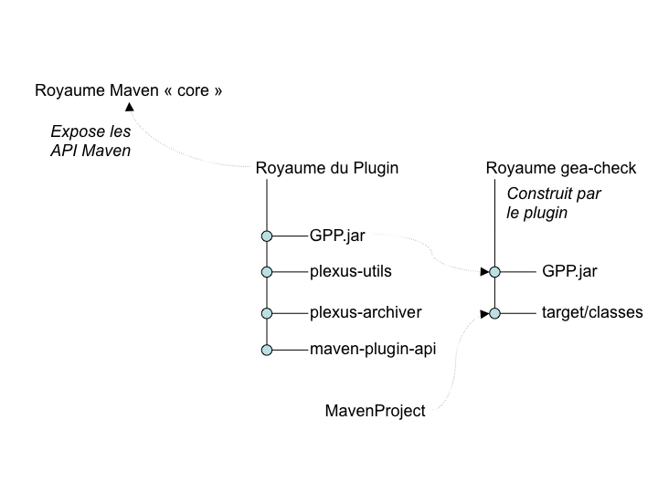
Arbre des royaumes ClassWorlds.
Le Listing 11.4 montre le code du plugin pour :
-
construire un nouveau ClassLoader (chargeur de classe) ;
-
lui associer les dépendances et répertoires du projet sur lequel il travaille ;
-
lui associer la bibliothèque de l’outil que nous voulons exécuter ;
-
exécuter l’outil GEACheck à l’intérieur de ce contexte.
Par souci de clarté, nous n’avons pas indiqué dans ce listing les diverses gestions d’exception qui sont rendues nécessaires par la manipulation d’URL. Cette gymnastique est la plus grande difficulté rencontrée lors du développement d’un plugin Maven, d’une part parce que le commun des développeurs n’est pas suffisamment à l’aise avec le concept de ClassLoader, d’autre part parce que l’API Maven-project manque de documentation.
/**
* Dépendances du projet Maven qui utilise le plugin
* @parameter expression=”${project.compileArtifacts}”
*/
private List<Artifact> projectArtifacts;
/**
* Dépendances du plugin lui-même
* @parameter expression=”${pluginArtifacts}”
*/
private List<Artifact> pluginArtifacts;
public ClassLoader createClassLoader()
throws MalformedURLException, DuplicateRealmException
{
ClassWorld world = new ClassWorld();
ClassRealm realm = world.newRealm( "gea-check" );
// Ajout de tous les éléments du classpath "compile" du projet
for ( Artifact artifact : projectArtifacts )
{
realm.addConstituent( artifact.getFile().toURL() );
}
// Ajout des dépendances du plugin, comprenant l'outil GEACheck
for ( Artifact artifact : pluginArtifacts )
{
realm.addConstituent( artifact.getFile().toURL() );
}
return realm.getClassLoader();
}|
En étant puristes, nous aurions dû construire notre royaume en n’y incluant que gea-check et ses dépendances, alors que nous y plaçons toutes les dépendances du plugin. Techniquement parlant, les API de manipulation d’artefacts et de gestion des dépendances le permettent mais c’est inutilement compliqué. Dans notre cas, le plugin est totalement fonctionnel et quelques classes en trop ne perturbent pas GEACheck. |
Il ne reste plus à Hervé qu’à utiliser le ClassLoader que nous venons de construire pour charger l’outil GEACheck et à l’invoquer avec la liste de fichiers sources java que nous avons construite précédemment. L’invocation d’une classe depuis un classloader différent du nôtre nous oblige à passer par la réflexion Java (voir Listing 11.5).
public void execute()
throws MojoFailureException
{
try
{
ClassLoader cl = createClassLoader();
Class checker = Class.forName(
"com.geegol.projectplatform.Checker", true, cl );
Method main = checker.getMethod( "main", new Class[] {
String.class } );
List<String> sources = (List<String>)
project.getCompileSourceRoots();
for ( String root : sources )
{
List<File> files = getJavaSources( new File( root ) );
Object[] args = new Object[files.size()];
int i = 0;
for ( File f : files )
{
args[i++] = f.getAbsolutePath();
}
main.invoke( checker, args );
}
}
catch ( Exception e )
{
throw new MojoFailureException( "Erreur lors de la
génération du rapport", e );
}
}Bye bye Maven 2
Olivier revient tout juste d’une conférence sur l’avenir de Java et les plans de développement de JavaEE 7, et nous trouve tous au chevet de notre plugin. Sa première réaction est la stupeur : nous sommes en train de développer du code en injectant des dépendances via des annotations dans du JavaDoc, le genre de choses qu’on faisait … en 2004 avec Apache commons-attributes ! Nous avons mis dans notre projet le top du dernier buzz en termes de technologies, et nous voilà ramenés une décennie en arrière.
La cause de ce choc technologique, c’est que nous utilisons l’API Maven 2.0, qui date de la création de l’outil. Pour offrir une compatibilité sans faille à ses utilisateurs, Maven 3 reste 100% compatible avec cette API historique, alors qu’en interne les choses ont beaucoup changé.
Dans l’équipe, nous utilisons tous Maven 3, Java 7, JavaEE 6, pourquoi s’encombrer de ce passé obsolète ?
Olivier s’attaque donc à moderniser notre socle technique. Bye Bye Maven 2, ce qui se traduit dans note POM par un prérequis sans appel :
<prerequisites>
<maven>3.0.0</maven>
</prerequisites>Voilà qui rappellera à l’ordre les éventuels distraits.
Dans notre plugin, Olivier convertit nos attributs JavaDoc dans leurs équivalents en annotations Java, sur la base de l’API maven-plugin-toolss-java5 et de l’injection de dépendances @JSR-330.
Attention
Olivier se base sur du code qui n’est pas encore disponible en version finale. Sonatype est très actif sur ce chantier (projet Sisu : https://github.com/sonatype/sisu) qui vise à homogénéiser son offre logicielle, aussi à l’heure où la seconde édition sortira des presses, nous espérons que ce code sera intégré dans la version courante de Maven 3.x
/**
* Tâche de génération de la documentation au format Geegol.
*/
@Goal( name="check" )
@Phase( PROCESS-SOURCES )
@ThreadSafe
class GEACheckMojo extends SisuMavenMojo {
@Inject Logger logger;
/**
* Emplacement du fichier de compte-rendu
*/
@Inject @Named( "${ouput}" )
@DefaultsTo( "${project.build.directory}/check.html" )
private File output ;
/**
* Modèle objet du projet Maven
*/
@Inject @Named( "${projet}" )
private project
@Inject @Named( "zip" )
private Archiver zipArchiver;
/**
* Dépendances du projet Maven qui utilise le plugin
*/
@Inject @Named( "${project.compileArtifacts}" )
private Set<Artifact> projectArtifacts;
/*
* Dépendances du plugin lui-même
*/
@Inject @Named( "${pluginArtifacts}" )
private Set<Artifact> pluginArtifacts;
public void execute() throws Exception {
…
}
}Tester notre plugin
Hervé est fier de nous montrer le fonctionnement de son plugin, qui a nécessité quelques acrobaties techniques avec les ClassLoaders mais qui n’était finalement pas si compliqué que ça à développer, une fois ces bases acquises. Par contre, il garde un mauvais souvenir de sa première démo pour laquelle le résultat était incomplet. Il voudrait que son projet de plugin puisse être équipé de tests, comme tout bon projet Maven !
Un moyen simple de tester le plugin est de l’assembler sous forme de JAR et de l’invoquer manuellement depuis l’un de nos projets. Nous avons cependant pris l’habitude des tests automatisés et de leur intérêt pour assurer la stabilité de nos développements. L’écosystème Maven propose plusieurs options pour outiller de tests notre plugin. Du fait que celui-ci pourra être utilisé sur de nombreux projets, sa stabilité est indispensable et une régression peut être très pénalisante, aussi, un outillage de tests est indispensable.
Il faut avouer que les plugins Maven officiels ne sont pas forcément les meilleurs exemples pour aller piocher de bonnes pratiques, préférant de lourds tests d’intégration à un outillage de tests propre à chaque plugin – ils ont au moins l’intérêt d’être outillés de tests, ce qui n’est pas le cas de nombreux autres plugins indépendants.
La plus grande difficulté pour tester un plugin Maven réside dans l’identification correcte de ce qu’on désire valider, en particulier lorsque le plugin sert à intégrer un autre outil : nous devons être en mesure de valider le fait que l’outil a bien été exécuté avec le bon paramétrage et non pas que l’outil lui-même est exempt de bogues.
Plugin testing harness
Maven propose une suite de tests sous forme d’objets simulacres (« mock ») pour ses API et un mécanisme simple pour configurer une instance du plugin à tester. Un extrait de fichier POM est utilisé pour définir la configuration de test du plugin, et l’environnement de test se charge d’exécuter le plugin.
La mise en œuvre est simple, puisqu’il s’agit d’écrire une classe de test jUnit très classique et de faire appel au plugin-testing-harness pour configurer le plugin que nous désirons tester à partir d’un pseudo POM, limité à sa seule section <plugin>. Le Listing 11.7 montre le code de ce test, qui va exécuter le plugin et vérifier son fonctionnement. Le Listing 11.8 montre le pseudo fichier POM qui lui sert de base pour construire et configurer le plugin testé.
public class GEACheckMojoTestCase
extends AbstractMojoTestCase
{
public void testCheck()
throws Exception
{
File testPom = new File( getBasedir(),
"src/test/resources/testCheck.pom" );
Mojo mojo = (Mojo) lookupMojo( "check", testPom );
MavenProject project = new MavenProjectStub();
setVariableValueToObject( project, "compileSourceRoots", new
ArrayList() );
project.addCompileSourceRoot( new File( testRoot,
"src/main/java" ).getAbsolutePath() );
setVariableValueToObject(mojo, "project", project );
assertNotNull( "Failed to configure the plugin", mojo );
mojo.execute();
File expected = new File(getBasedir(),
"target/test-target/check/repport.html" );
assertTrue( "expected file not found", expected.exists() );
}
}<project>
<build>
<plugins>
<plugin>
<groupId>com.geegol.maven.plugins</groupId>
<artifactId>geacheck-maven-plugin</artifactId>
<configuration>
<outputDirectory>target/test-target/check</outputDirectory>
</configuration>
</plugin>
</plugins>
</build>
</project>|
Dans le Listing 11.7, nous utilisons un bouchon de la classe MavenProject. Le plugin plugin-testing-harness propose également des objets bouchons pour de nombreuses autres classes de l’API Maven, ce qui permet de construire des tests unitaires qui nécessitent (par exemple) des manipulations d’artefacts. |
Plugin invoker
Une seconde option consiste à exécuter la construction d’un projet Maven de test, mais dans un mode automatisé. C’est l’option retenue par le plugin invoker, qui va enchaîner un build Maven parallèle lors de la phase de test d’intégration de notre projet de plugin. Contrairement au plugin plugin-testing-harness, il ne s’agit pas d’exécuter le plugin dans un environnement de test « unitaire », mais de lancer une construction Maven complète, indépendante et d’en valider a posteriori la bonne exécution.
Recherchant les fichiers POM placés dans le répertoire de tests src/it, invoker va utiliser un script Groovy ou BeanShell pour vérifier le résultat de l’exécution. Ce script va typiquement s’assurer que des fichiers attendus en résultat de l’exécution sont présents et/ou correctement renseignés.
Le Listing 11.9 présente la configuration du plugin invoker pour exécuter un projet Maven de test. Le plugin recherche dans notre répertoire src/it tous les sous-répertoires contenant un fichier pom.xml, les recopie dans le répertoire de travail et y exécute un build Maven (jusqu’à la phase package). Nous pouvons donc organiser notre répertoire de tests d’intégration en ayant un sous-répertoire par test d’intégration, contenant le projet Maven d’intégration à tester. Le Listing 11.10, quant à lui, présente le fichier groovy que nous utilisons pour vérifier que l’exécution s’est déroulée comme prévu et que le fonctionnement du plugin est donc correct.
<plugin>
<groupId>org.apache.maven.plugins</groupId>
<artifactId>maven-invoker-plugin</artifactId>
<version>1.3</version>
<configuration>
<postBuildHookScript>verify</postBuildHookScript>
<localRepositoryPath>${project.build.directory}/it-repo</localRepositoryPath>
<settingsFile>src/it/settings.xml</settingsFile>
<cloneProjectsTo>${project.build.directory}/it</cloneProjectsTo>
</configuration>
<executions>
<execution>
<goals>
<goal>install</goal>
<goal>run</goal>
</goals>
</execution>
</executions>
</plugin>// GEACheck doit générer son rapport sous target/check
assert new File( basedir, 'target/check/report.html' ).exists();
return true;
Hervé configure le serveur d’intégration continue pour surveiller, en plus de notre projet, la bonne santé de son plugin, lequel, outillé de tests, est maintenant prêt pour vivre sa vie et répondre au besoin à des demandes d’évolution ou de nouvelles contraintes. Hervé n’a plus qu’à documenter ce plugin et son utilisation… mais pour cela il devra attendre le chapitre suivant !
Conclusion
Ce chapitre a démontré que l’écriture d’un plugin Maven n’est pas une tâche fondamentalement délicate, même si elle présente quelques subtilités (voir d’ailleurs, à ce sujet, http://maven.apache.org/plugin-developers/common-bugs.html). Dans de nombreux cas, le développement d’un plugin ne nécessite pas de soulever le capot de Maven au-delà de la classe AbstractMojo. Cependant, l’utilisation des annotations Plexus et de l’API Maven peut rebuter de nombreux développeurs, et il faut bien reconnaître que la documentation sur le sujet n’est pas irréprochable. Les bons exemples ne manquent cependant pas et la communauté des développeurs Maven est prête à apporter tout le support nécessaire.
Chapitre 12 : L’assurance qualité
Une application qui fonctionne, c’est bien. Mais du code qui est correctement construit, évolutif, lisible, maintenable, c’est mieux. L’assurance qualité est un exercice délicat qui tente de canaliser la créativité débordante des développeurs pour éviter l’anarchie sans pour autant restreindre leur productivité ou leur capacité d’innovation. Maîtriser un projet, c’est aussi savoir en extraire les indicateurs de qualité adéquats et se donner les moyens d’en suivre l’évolution.
Audit de code
Lors de notre intégration au sein de Geegol, notre projet a subi les regards inquisiteurs de ceux qui allaient devenir nos collègues. Habitudes différentes obligent, certaines tournures de notre code ne collaient pas avec la culture locale. Si la qualité d’un projet était évaluée sur des critères purement subjectifs de ce niveau, nous serions bons pour une réécriture complète, coûteuse et probablement inutile. Par contre, certains aspects de notre projet mériteraient peut-être une analyse plus minutieuse — nous ne pouvons pas être experts en tout !
Les outils d’audit de code ont l’intérêt d’être objectifs. Bien sûr, les règles qu’on leur demande de vérifier ont été choisies et pondérées selon des critères propres à l’entreprise, mais au moins elles sont clairement identifiées et justifiées. Si le groupe a fait le choix de mettre l’accent sur la qualité de documentation, il poussera au maximum les métriques concernant la Javadoc et le nombre de lignes de code sans commentaire. Cela ne garantit en rien un code bien documenté, mais cela donne tout de même une indication à partir de laquelle on peut travailler.
Les outils d’audit sont légion, et ils produisent des rapports plus ou moins complexes à analyser (du moins pour un développeur lambda). Le monde open source en fournit une jolie panoplie, dont le seul défaut est de ne pas être intégrée. Chaque outil va produire un rapport, dans un format propre, qu’il nous faudra éplucher.
Par ailleurs, l’intérêt de ces outils n’est pas de faire des audits ponctuels pour donner une note à une équipe de développement. Si on en arrive là, c’est qu’ils sont utilisés bien trop tard. Leur plus-value apparaît dans les indicateurs synthétiques qu’ils fournissent et qu’on peut suivre au cours de la vie du projet dès que du code est écrit, signalant ainsi toute dérive malheureuse dans les bonnes pratiques de développement.
Vincent s’attaque à outiller notre projet pour répondre au mieux aux attentes du groupe. Il épluche la longue liste des outils disponibles pour en tirer le meilleur et proposer une boîte à outils conviviale et pertinente. Son objectif est de démontrer notre capacité de réaction, avant que la cellule qualité ne rende son verdict après dix jours d’audit de notre code. Pour chaque problème identifié, il veut être capable de répondre :
-
que nous l’avons également identifié, éventuellement avec un poids différent, et sommes donc tout à fait en mesure de le traiter ;
-
que nous disposons de l’outillage nécessaire pour nous assurer qu’il ne se reproduise plus ;
-
que nous sommes en mesure de fournir des indicateurs démontrant l’amélioration progressive de notre code sur la base des critères identifiés par les responsables qualité.
Avec un dossier de défense aussi bien ficelé, nous devrions en principe éviter de voir trop de monde fourrer son nez dans notre code et nous prendre de haut pour nous expliquer comment bien travailler. Nous avons tout de même notre fierté, et noubliepaslalistedescourses reste notre bébé !
Analyse statique
Une première catégorie d’outillage concerne l’analyse statique du code. Il s’agit d’une relecture du code par un outil qui va rechercher des patrons particuliers et calculer des métriques. En Java, il existe plusieurs outils de cette catégorie, lesquels peuvent extraire :
-
une liste d’alertes signalant des mauvaises pratiques connues, tournures de code maladroites ou bogues récurrents liés à l’imperfection des développeurs qui tombent tous dans les mêmes pièges — et aucun de nous ne fait exception à ce constat ;
-
des indicateurs sur la structure du code, jugeant sa modularité, sa complexité ou son niveau d’abstraction.
Le premier type d’indication est évidemment celui qui attire tout de suite nos décideurs : comment résister à un outil qui, en quelques clics, va identifier tous les bogues si coûteux que nous avons négligemment laissés traîner ?
Checkstyle
Vincent expérimente tout d’abord un outil open source de cette catégorie sur notre code : Checkstyle. L’analyse est de niveau syntaxique et signale les incohérences qui existent dans notre façon de travailler. Une grande partie des règles de Checkstyle concerne le formatage du code plus que son fond, l’outil semble donc à la fois tatillon et sans grand intérêt.
L’autre Vincent — si vous avez bien suivi les chapitres précédents, vous aurez noté que notre équipe compte deux Vincent ;) —, qui suit de loin le travail de son collègue par pauses-café interposées, n’est pas de cet avis. Il a passé deux heures à fusionner ses dernières modifications avec celles d’Hervé, non pas parce que ce dernier travaille comme un cochon (sans quoi, il ne serait pas dans l’équipe !), mais tout simplement parce qu’il utilise des règles de formatage de code différentes (voir Listing 12.1).
Listing 12.1 : Comparaison de nos conventions de formatage du code
|
|
|
|
La différence entre ces deux fichiers sources est minime, cependant les outils de fusion automatique ne savent pas la gérer et obligent Vincent à vérifier ligne par ligne la concordance des deux versions concurrentes.
L’homogénéisation, surtout si elle est poussée à outrance, peut être ressentie parfois comme une façon de brider l’appropriation du code par les développeurs. Vouloir que tout le monde travaille strictement de la même façon c’est, en effet, faire de nous de simples machines à coder sans liberté individuelle. Par contre, laisser chacun faire ce qu’il veut à sa sauce n’est pertinent que si cela ne vient pas perturber les autres. Pour faire intellectuel, disons que « la liberté des uns s’arrête là où commence celle des autres ».
Même si cela va nécessiter de se poser pendant une heure et obliger certains d’entre nous à accepter un formalisme qu’ils n’apprécient pas forcément, se mettre d’accord sur des règles de ce type économisera à chacun de longues heures d’un travail inutile, rébarbatif et source d’erreurs. Sans compter que notre IDE préféré sait nous aider à formater le code à la volée !
Les règles, même les plus superficielles, de Checkstyle ont donc leur rôle. L’analyse du code signalera directement que le petit dernier arrivé dans l’équipe ne respecte pas nos règles communes et va à un moment ou un autre provoquer le problème rencontré par Vincent et Hervé.
Checkstyle compte également de nombreuses règles qui valident le niveau de documentation technique du code. Ici aussi, pas de règle générale : du code peut être lourdement commenté et totalement incompréhensible, le commentaire peut d’ailleurs être totalement obsolète, et du code sans commentaires est parfois extrêmement limpide et ne nécessite aucune explication complémentaire. Cependant, si nous définissons un niveau de documentation que nous considérons souhaitable pour notre projet, Checkstyle saura indiquer nos points faibles ou notre relâchement.
Enfin, Checkstyle propose quelques règles plus techniques sur l’utilisation des mots clés et des structures de code. Une fois encore, la sélection de ces règles et leur pondération sont un travail que nous devrons affiner au fur et à mesure de notre utilisation de l’outil. Activer toutes les règles n’apporte rien, l’information étant noyée dans la masse. C’est même contre-productif, puisque ça amène à penser que l’outillage est inutilisable car trop tatillon.
FindBugs
Vincent poursuit son expérimentation sur l’analyse statique du code avec FindBugs. Comme son nom l’indique, cet outil se propose de trouver tout seul les bogues dans notre code, lesquels correspondent à des patrons de codage fragiles et à éviter. Même si un développeur expérimenté en est conscient, il risque de les mettre en œuvre par mégarde.
Plutôt que de le considérer comme un juge intransigeant, il faut voir FindBugs comme un conseiller qui cumule la connaissance des erreurs réalisées par des centaines de développeurs et est capable de les identifier. Sa base de données de choses à ne pas faire se distribue entre mauvaises pratiques, défauts de performances, dysfonctionnements, incompatibilité avec un mode multithreadé et problèmes de sécurité.
Une fois de plus, activer toutes ses règles sans se soucier du contexte risque surtout de produire un rapport de milliers de lignes à peine exploitable. C’est à nous de comprendre chacune de ses règles, de voir si elle s’applique à notre projet et l’importance que nous lui donnons. La simple lecture de ces règles est d’ailleurs très formatrice !
Nous pouvons également assister FindBugs dans son travail d’analyse pour le rendre plus pertinent. Des annotations comme @NonNull peuvent être ajoutées dans le code pour préciser, par exemple, qu’une méthode n’accepte pas un appel sans un paramètre correctement renseigné (fonctionnalité qui est d’ailleurs proposée pour Java 7). La présence de cette annotation permet à l’outil de contrôler tous les endroits où elle est invoquée et, en même temps, complète la documentation de notre code en précisant nos intentions.
De la même façon, FindBugs peut exploiter les annotations définies en marge du livre Programmation concurrente en Java, de Brian Goetz — chez le même éditeur, excellent ouvrage que je vous recommande ;) — pour identifier les problèmes de gestion concurrente en environnement multithread.
PMD
Vincent termine son tour d’horizon en installant un autre outil d’analyse statique : PMD. Celui-ci se place à mi-chemin entre Checkstyle et FindBugs. Moins formel que Checkstyle, il ne propose pas des règles aussi poussées que FindBugs (aidé par des annotations). Cela ne signifie pas pour autant qu’il soit inutile. Il vient renforcer la pertinence de l’analyse en proposant un autre regard sur notre code.
Il nous reste cependant à définir soigneusement ses règles d’analyse pour qu’elles soient cohérentes avec nos deux autres outils !
Analyse dynamique
Les outils d’analyse statique font déjà de grandes choses, mais ils ne peuvent pas faire de miracle. En particulier, ils ne sont pas en mesure de deviner comment est utilisée réellement l’application. Pour cela, il faut la faire tourner dans un environnement et une utilisation réalistes. Or, nous avons déjà, depuis le Chapitre 4, une belle panoplie de tests qui exécutent notre application, par petits morceaux, en se focalisant sur des scénarios d’utilisation issus de nos besoins fonctionnels (rappelez-vous les règles du développement dirigé par les tests !).
Cobertura, Clover ou Emma sont des outils d’analyse dynamique qui visent à déterminer quelle portion de notre code est exécutée au cours de nos tests, censés couvrir les fonctionnalités de notre application. Leurs rapports indiquent le taux de couverture du code et remontent jusqu’au code source pour nous indiquer quelle ligne a été exécutée au moins une fois au cours d’un test.
Comment exploiter un tel outil ?
Olivier, qui est venu épauler Vincent, évalue avec lui ces outils et l’information qu’ils fournissent. L’indication synthétique est un taux de couverture de notre code par des tests : 65 %. Est-ce bien ou pas ?
Brute, cette information n’a aucune utilité ou presque. Son intérêt est plus de voir comment ces 65 % se répartissent sur notre code. En descendant à un niveau de détail plus fin, on découvre dans le rapport qu’une majorité de nos packages sont couverts à environ 70 % et que deux mauvais élèves se contentent de 30 %. Nous tenons nos coupables : deux packages pas assez testés, ou mal testés, ou peut-être même du code inutile !
-
Le premier, remoting, est celui de nos interfaces de communication avec d’autres systèmes. Pas le plus facile à tester puisqu’il faut quelqu’un (un simulateur) en face pour répondre et valider le fonctionnement du logiciel.
-
Le second, beans, correspond à des classes de données sans valeur ajoutée : juste des beans ayant des accesseurs get/set, mais cela fait déjà pas mal de lignes de code, d’où le mauvais résultat de la mesure.
Sur ce constat, reposons donc la question : comment exploiter un tel outil ?
Si nous établissons comme règle d’or le taux de couverture des tests doit dépasser 75 %, que va-t-il très probablement se passer ? Vous pouvez parier que le package beans va rapidement être testé à 100 % afin d’atteindre ce taux de 75 %. Le développeur étant par nature feignant, il choisira la solution de facilité, surtout si son chef l’assomme de reproches sur le non-respect de la règle d’or !
L’outil fournissait pourtant une information capitale : remoting, couche critique de notre application, est celle qui est la moins bien testée. Il nous encourage effectivement à retrousser nos manches pour mieux instrumenter ce code, peut-être en le réarrangeant afin qu’il soit plus modulaire et plus testable, peut-être en développant des simulateurs plus faciles à intégrer dans un test unitaire.
Vincent prend cela en considération et établit notre première règle d’or :
Un taux de couverture inférieur à la moyenne doit être justifié. Pas de taux absolu et inexplicable à atteindre, mais, par contre, interdiction de délaisser une partie de l’application sans bonne raison.
Il considère ensuite le reste de l’application : la couverture de code est homogène, mais est-elle suffisante ? Comment va-t-elle évoluer ? Comment doit-elle évoluer ? Si nos classes de JavaBeans gonflent suite à l’ajout de méthodes get/set, notre taux va irrémédiablement baisser, mais ce ne sera pas significatif. Par contre, si l’ajout de nouvelles fonctionnalités dégrade le taux de couverture, c’est que ces nouvelles fonctionnalités ne sont pas au moins aussi bien testées que le code en place.
Cela inspire donc une seconde règle d’or, que nous pourrions qualifier de protectionniste :
Le taux de couverture ne doit pas baisser avec le temps sans justification.
Vincent arrive donc rapidement à la conclusion qu’il va devoir trouver un moyen pour contrôler l’évolution dans le temps de nos indicateurs. Être capable d’estimer la couverture de test apporte des informations utiles, mais savoir si elle est en perte de vitesse et sur quels packages est bien plus important.
Notre boîte à outils est désormais comprise et correctement configurée. Il reste à Vincent à automatiser son utilisation pour mettre ces indicateurs à la disposition de tous et permettre leur suivi dans le temps. L’assurance qualité ne fonctionne que si elle est la préoccupation de tous. Donner à quelqu’un la tâche de suivre les rapports d’analyse n’a aucun sens, il passerait rapidement pour le casse-pieds de service. Mobiliser quelques instants d’attention de toute l’équipe est peu coûteux individuellement et nettement plus efficace.
Vincent pourrait continuer ainsi son tour de table des outils d’analyse de code, mais toute cette instrumentation ne sera vraiment productive que si elle vient s’intégrer dans nos outils. Nous avons déjà confié la construction de nos binaires à Maven, pouvons-nous également lui passer la main sur notre suivi qualité ?
Les rapports Maven
Comme toujours, l’intégration de nos outils d’analyse avec notre
construction de projet Maven passe par des plugins. Nous pouvons, par
exemple, lancer un mvn checkstyle:check pour vérifier le respect de nos
règles de codage, voire le configurer pour qu’il s’exécute durant un
build normal si nous nous interdisons de ne pas suivre strictement ces
règles. Évidemment, c’est encore plus efficace si un tel outil d’analyse
peut être intégré dans l’IDE et fournir au développeur une alerte dès
que la ligne de code est saisie !
Maven propose cependant une autre forme d’intégration pour les outils qui visent à compléter la documentation sur le projet : les rapports.
Notre projet est accompagné d’une large documentation, expliquant son utilisation, ses règles de développement et l’explication de nos choix techniques. Reste à la diffuser efficacement auprès de nos utilisateurs et contributeurs.
Dans un premier temps, nous l’avons placée à côté de notre projet dans le gestionnaire de sources. Lors d’une livraison, nous accompagnons ainsi l’exécutable de l’application de sa documentation à jour. Cette approche tout-en-un est pratique pour l’utilisateur qui a téléchargé notre logiciel, mais pas pour celui qui vient juste de le découvrir et voudrait en savoir plus avant de poursuivre. Un site web serait alors une meilleure solution. Comment concilier ces deux formes de documentation ?
Par ailleurs, nous sommes fiers de notre système qualité ; aussi voudrions-nous l’exposer plus à nos utilisateurs pour démontrer notre savoir-faire et gagner leur confiance. Enfin, notre code étant soumis à une licence libre, nous voulons qu’il soit aussi facilement consultable que possible pour permettre à chacun de proposer des enrichissements.
Après avoir testé diverses solutions documentaires, Lukas cherche toujours un moyen pour synthétiser les diverses sources d’information du projet. D’une part, notre wiki, dont la syntaxe simple permet de construire rapidement une documentation par enrichissement successif. D’autre part, nos outils d’analyse qualité, dont les rapports sont instructifs sur nos méthodes de travail. Ensuite, des indications techniques sur notre projet : licence, prérequis, dépendances. Enfin, une série de liens sur les aspects communautaires de notre projet : équipe de développement, liste de diffusion, système de suivi des anomalies, etc. Agréger toutes ces informations sous un point d’entrée unique, toujours à jour et homogène, voilà une tâche ambitieuse qui n’effraie pas Lukas.
Il découvre rapidement que Maven, lui-même confronté à ce problème de
documentation, offre une solution complète et très riche : la génération
d’une documentation complète du projet. En parallèle du cycle de vie de
construction du projet, Maven propose un cycle de vie documentaire
déclenché par la commande mvn site. Cette commande n’exécute qu’un seul
plugin, site, mais celui-ci est l’arbre qui cache la forêt : son rôle
est d’exécuter des rapports et d’en agréger le contenu dans un document
unifié sous forme de site web.
Autant Maven 3 est compatible à 99,99 % avec Maven 2 sur de nombreux points, autant il y a un domaine qui a été revu de fond en comble, c’est la gestion du site ! Dans Maven 2, nos rapports sont eux-mêmes déclarés dans notre POM, sous un élément dédié <reporting>. Ils ressemblent à s’y méprendre à des déclarations de plugins et sont d’ailleurs le plus souvent couplés avec un plugin Maven classique. Ils n’ont cependant pas exactement le même fonctionnement et vont produire un résultat (souvent un rapport brut en XML) que le plugin site va mettre en forme au sein du site du projet.
Par contre, un plugin de reporting ne tient pas compte des informations déclarées dans le <pluginManagement>, balise qui permet de regrouper la configuration de tous les plugins utilisés sur un projet. Il est donc préférable d’utiliser une propriété pour ne pas dupliquer l’information de version et risquer de tomber dans des bogues étranges. Cette dernière sera utilisée dans la déclaration du plugin dans la partie <pluginManagement> et dans la partie <reporting>.
Par ailleurs, un plugin de reporting qui serait aussi utilisé soit en ligne de commande, soit dans le cycle de vie du build, hérite toujours de la configuration définie dans la partie <reports>. Aussi, dans ce cas, et uniquement dans celui-là, il est préférable de déclarer sa configuration globale dans la partie <reporting> plutôt que d’utiliser le <pluginManagement>.
Bref, deux poids, deux mesures. Sans compter que, techniquement, cette gestion des plugins de rapports est une véritable verrue dans le code de Maven 2. Pour la nouvelle génération de Maven, tout ceci est donc passé à la trappe, et un nouveau plugin site a dû être développé. La version 3.x de ce plugin utilise donc non pas le bloc <reporting> du POM, mais des rapports qu’on indique directement dans sa configuration, comme tout autre plugin Maven. Le site de Maven 3 n’est plus un cas à part, mais un plugin comme les autres.
Hervé est ravi d’apprendre que Maven 3 a fait le ménage dans son code, mais devoir gérer deux versions du plugin site en fonction de la version de Maven qui construit le projet, sans parler de la déclaration des rapports, ça l’amuse modérément.
Heureusement, l’équipe de développement Maven a pensé à lui et aux nombreux utilisateurs dans son cas : le plugin site 3.x est capable de détecter l’utilisation de rapports à l’ancienne, déclarés dans le bloc <reporting>, et les interprète comme s’il était placé dans sa configuration. Il se contente d’un WARNING pour nous rappeler que ce n’est pas son mode de fonctionnement nominal, et que — si nous désirons utiliser officiellement Maven 3 — il serait préférable de nous mettre à la page.
[WARNING] The <reporting> section is deprecated, please move the reports to the <configuration> section of the new Maven Site Plugin.
Par ailleurs, depuis la version 3.0-beta-4, le plugin site gère lui-même la distinction entre Maven 2 et Maven 3, il est donc capable de basculer d’une version à l’autre sans douleur. Joli tour de force ! Finalement, la configuration de nos rapports s’effectue donc comme l’indique le listing 12.2, et nous permet d’associer au site web du projet la documentation javadoc et le code source du projet, navigable sous forme de pages web (« Cross Reference »).
<build>
<plugins>
<plugin>
<groupId>org.apache.maven.plugins</groupId>
<artifactId>maven-site-plugin</artifactId>
<version>3.0-beta-4</version>
<configuration>
<reportPlugins>
<plugin>
<groupId>org.apache.maven.plugins</groupId>
<artifactId>maven-jxr-plugin</artifactId>
<version>2.2</version>
<reports>
<report>jxr</report>
</reports>
</plugin>
<plugin>
<groupId>org.apache.maven.plugins</groupId>
<artifactId>maven-javadoc-plugin</artifactId>
<version>2.7</version>
</plugin>
</reportPlugins>
</configuration>
</plugin>
</plugins>
</build>Le plugin site se base sur un fichier dédié, src/site/site.xml, dans lequel est décrite la structure générale de notre site web. Ce fichier nous permet d’organiser le menu général du site et de pointer vers nos principales pages documentaires. Le Listing 12.3 montre celui mis en place par Lukas pour notre projet.
<?xml version="1.0" encoding="UTF-8"?>
<project xmlns="http://maven.apache.org/DECORATION/1.0.0"
xmlns:xsi="http://www.w3.org/2001/XMLSchema-instance"
xsi:schemaLocation="http://maven.apache.org/DECORATION/1.0.0
http://maven.apache.org/xsd/decoration-1.0.0.xsd"
name="N'oublie pas la liste des courses">
<bannerLeft>
<name>N'oublie pas la liste des courses</name>
<src>http://www.noubliepaslalistedescourses.fr/images/logo.png</src>
<href>http://www.noubliepaslalistedescourses.fr</href>
</bannerLeft>
<body>
<links>
<item name="Maven" href="http://maven.apache.org/"/>
</links>
<menu name="Guide">
<item name="Introduction" href="user-guide/introduction.html"/>
<item name="Setup" href="user-guide/setup.html"/>
</menu>
<menu ref="reports"/>
</body>
</project>La structure simple de ce fichier se passe de commentaires. Le seul point à souligner est la présence de la macrocommande <menu ref="reports"/> qui indique au plugin l’emplacement où insérer les liens vers nos rapports d’analyse du projet.
Les pages de notre site peuvent être écrites au choix :
-
selon un format APT (Almost Plain Text), proche d’une syntaxe wiki et rapidement assimilé ;
-
en exploitant les pages d’un wiki Confluence, ou TWiki ;
-
via le format documentaire DocBook (simplifié) ;
-
via le format documentaire XDoc supporté de manière native ;
-
tout simplement à partir d’un document xHTML ;
-
ou encore, via un module d’extension, en exploitant tout autre format. Le bac à sable Maven comprend ainsi un module permettant d’exploiter la syntaxe XWiki.
Au premier lancement de la commande mvn site, après l’inévitable
téléchargement de nombreux plugins et bibliothèques dans diverses
versions, nous obtenons effectivement sous target/site la structure d’un
site web pour notre projet.
La génération de ce site est déléguée par le plugin site à un sous-composant spécialisé, Doxia [42]. Cet outil prend en charge toutes les conversions nécessaires entre les formats de documents supportés et le document à construire.
Autre chose que du HTML
Doxia est donc le moteur qui va formater notre documentation. Utilisé
par le plugin site, il produit des pages HTML. Utilisé par le plugin
pdf, il produit un fichier PDF regroupant toute la documentation du
projet. La commande mvn pdf:pdf permet ainsi de produire une
documentation format papier, toujours à jour en fonction des diverses
sources que nous avons agrégées.
Comme le plugin site et son fichier site.xml, le plugin pdf s’appuie sur un descripteur pdf.xml qui lui indique comment assembler les éléments documentaires pour produire le résultat. De la même façon, et avec les moteurs de rendu adéquats, Doxia pourrait produire notre documentation dans tout un ensemble de formats qu’il reste à imaginer (voir Figure 12-01).
Figure 12-01 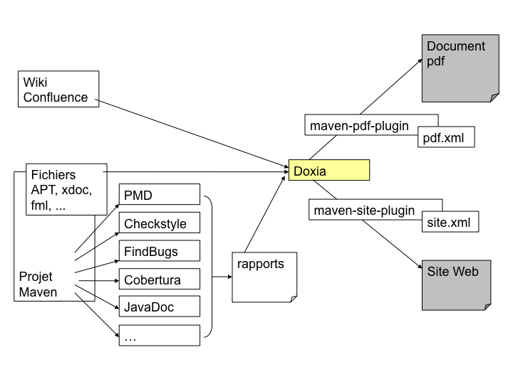
Génération de la documentation en différents formats grâce à Doxia.
Exploiter notre gestion documentaire
Nous sommes donc désormais en mesure d’analyser le code de notre projet avec l’aide d’une large panoplie d’outils et d’agréger le résultat dans une documentation complétée par ce que nous aurons pris le temps de rédiger dans des formats variés, le tout en une seule commande comme Maven nous y a habitués.
Nous sommes tous attentifs à ces rapports d’analyse de code que nous pouvons désormais construire sur notre poste de développement, à moins de consulter le site généré toutes les nuits sur notre serveur d’intégration continue – il serait dommage qu’il reste inutilisé pendant cette période où nous, pauvres humains, devons nous reposer. Nous pouvons identifier les éléments de code qui violent des règles et corriger consciencieusement ces défauts, espérant ainsi que les chiffres du lendemain seront meilleurs.
68 %, qui dit mieux ?
Rapidement, un besoin nouveau s’exprime : lorsque nous constatons qu’un élément du projet est sous-documenté, nous ajoutons quelques fichiers APT pour combler le manque. La perception de ce défaut de documentation est totalement subjective, mais nous arrivons rapidement à un consensus sur le niveau obtenu. Par contre, le rapport indiquant le taux de couverture de nos tests est plus délicat à interpréter. 68 %, est-ce bien ? Est-il utile de vouloir pousser ce taux au-delà, ce qui pourrait rapidement nous amener à écrire des tests sans intérêt juste pour approcher des 100 %. Pire, nous pourrions être tentés d’écrire de nombreux tests faciles pour obtenir un bon chiffre en délaissant des parties de code moins évidentes à tester.
68 %, ça ne veut rien dire. Ce qui est intéressant, c’est de voir que le mois dernier, nous étions pour le même package à 82 % ! Il semble que nous avons laissé cette partie du projet se dégrader ! À moins que nous n’ayons une bonne explication pour cette baisse, une action doit être entreprise pour corriger le tir.
Les indicateurs qualité sont rarement très pertinents tels quels, et, en tout cas, la valeur cible à respecter dépend du contexte du projet, de ses objectifs et souvent de l’élément technique considéré. Notre code d’accès à la base devrait être proche de 100 % de couverture de test, sinon cela voudrait dire que certaines requêtes ne font pas l’objet de tests et qu’une modification dans notre modèle ne serait pas détectée. De même, tous les aspects fonctionnels (le code métier utile) doivent être largement couverts. En revanche, d’autres parties de notre code, présentant de nombreux cas d’erreurs qui ne donnent pas lieu à un traitement précis autre que « erreur interne, merci de réessayer plus tard », peuvent légitimement obtenir une couverture moindre.
L’entropie augmente
Il n’existe pas de juste milieu absolu. Néanmoins, on constate l’application universelle du second principe de la thermodynamique : le code tend toujours à se dégrader pour devenir moins organisé et moins bien testé. Des tests obsolètes sont supprimés, le nouveau code écrit dans la chaleur d’un coup de bourre est peu ou pas instrumenté… Juste maintenir le code au même niveau demande une débauche d’énergie, de temps et donc de budget !
Pour détecter rapidement une telle dérive, rien ne vaut un bon graphe synthétique historisant l’évolution du projet. De manière assez amusante, on peut souvent deviner les dates de livraison sur de telles courbes : on constate un infléchissement de la courbe dans la semaine qui précède la livraison et (dans le meilleur des cas) une reprise lente dans les semaines qui suivent.
Maîtrise de S [1]
Le spécialiste en thermodynamique de l’équipe c’est Vincent, et c’est donc lui qui nous propose spontanément un outil pour être en mesure de mesurer l’entropie de notre projet. Il a déjà passé de longues heures à analyser les nombreux rapports produits par Maven dans notre site et a rapidement compris que ce ne sont que des données brutes. Il faut être capable de les lire à des altitudes différentes :
-
À 30 000 pieds, on doit avoir en un coup d’œil une vision globale du projet, très imparfaite, mais parlante. Le projet est-il dans le rouge ou non ? Quel est le type de violation le plus couramment constaté et sur lequel il faudra faire un effort de communication et de formation ?
-
À 3 000 pieds, on doit être en mesure d’identifier les modules et de distinguer celui qui joue le mouton noir (espérons qu’il n’y en ait qu’un seul), la règle de codage la moins bien respectée.
-
À 300 pieds, on peut pointer du doigt les packages dans lesquels il serait bon de passer un peu plus de temps, ou la règle de codage dont les développeurs ont sans doute mal compris la portée.
-
À 30 pieds, on accède au Top 10 des classes à problème, et on commence à regarder les noms des auteurs des dernières modifications pour savoir avec qui il faudra discuter de manière aimable et constructive lors de la prochaine pause-café.
-
À 1 mètre, on déroule le code source ligne par ligne et on y identifie chaque violation. En binôme avec le développeur qui a eu la maladresse d’écrire ce code, on peut discuter du bien-fondé de la règle et des façons d’écrire un code plus propre et plus conforme à nos exigences.
Ce Google Earth pour code existe, il s’appelle Sonar.
Sonar
Sonar [43] est une application web qui va stocker dans une base de données tous les indicateurs et statistiques extraits par nos rapports d’analyse de code. En outil convivial et soucieux de sa simplicité d’utilisation, il est proposé avec un serveur d’application et une base de données embarqués, ce qui limite la procédure d’installation au strict minimum. Pour une utilisation en entreprise de manière plus stratégique, on pourra cependant le déployer sur un serveur et le configurer pour utiliser une base de données dédiée.
Les données de Sonar sont accessibles via un frontal web synthétique, qui donne les grandes tendances du projet. C’est notre vue à 30 000 pieds du projet (voir Figure 12-02).
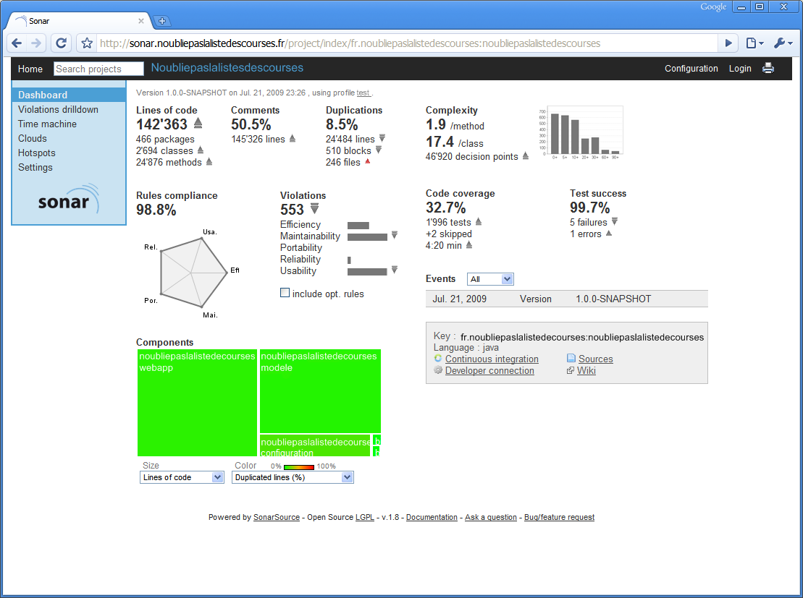
Synthèse de nos indicateurs qualité dans Sonar.
La représentation du projet en blocs colorés est particulièrement compacte et pertinente. Pour un critère donné – ici, le respect des règles de codage –, un bloc de grande surface correspond à un grand volume de code et la couleur au niveau de satisfaction du critère. Un petit bloc rouge dans un ensemble vert pourra donc être acceptable si on sait le justifier, alors qu’un grand bloc orange sera de très mauvais augure. Chaque élément de cette synthèse est un lien vers plus de détails. On va ainsi descendre de lien en lien jusqu’aux classes du projet puis ouvrir son code source pour constater la ligne de code qui a été identifiée par l’analyse de code (voir Figure 12-03).
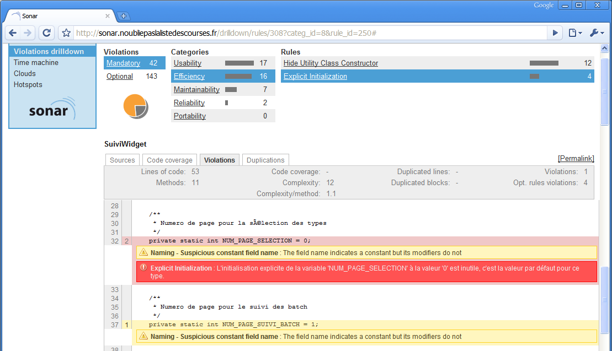
Détail des violations constatées par Sonar dans notre code source.
Sonar va extraire de notre projet Maven l’ensemble des indicateurs qu’il
prend en charge via un plugin dédié. Celui-ci va directement enrichir
la base de données du serveur Sonar pour la construction en cours. Le
serveur exploitera ensuite les données pour fournir une synthèse ainsi
qu’un historique. Le Listing 12.4 montre la configuration de ce plugin
dans notre POM. Le plugin sonar utilisant de nombreuses propriétés, il
est plus simple de les configurer comme telles et d’invoquer la tâche
mvn sonar:sonar.
<profile>
<id>sonar</id>
<properties>
<sonar.host.url>http://sonar.geegol.com</sonar.host.url>
<sonar.jdbc.url>jdbc:mysql://mysql.geegol.com:3306/SONAR?autoReconnect=true</sonar.jdbc.url>
<sonar.jdbc.driver>com.mysql.jdbc.Driver</sonar.jdbc.driver>
<sonar.jdbc.username>sonar</sonar.jdbc.username>
<sonar.jdbc.password>sonar</sonar.jdbc.password>
</properties>
</profile>Pour produire ces métriques de notre projet à intervalles réguliers, nous décidons de laisser notre serveur d’intégration continue effectuer une construction dédiée toutes les nuits – il faut bien rentabiliser la machine. Sur notre serveur Hudson, nous avons la bonne surprise de découvrir un plugin dédié à Sonar, qui nous économise la configuration de cet outil dans notre POM. Il suffit de fournir quelques paramètres dans la console d’administration de Hudson et de configurer une construction du projet à heure fixe.
Nous constatons que la complexité mesurée de notre code grimpe régulièrement (voir Figure 12-04). C’est une dérive typique qui prend pied de manière maligne, répartie un peu partout dans le code et sans que personne s’en sente responsable. Il est temps de sensibiliser l’équipe, par exemple en lui montrant cette simple courbe, sur l’influence que peut avoir un petit effort quotidien de clarification et de simplification du code.
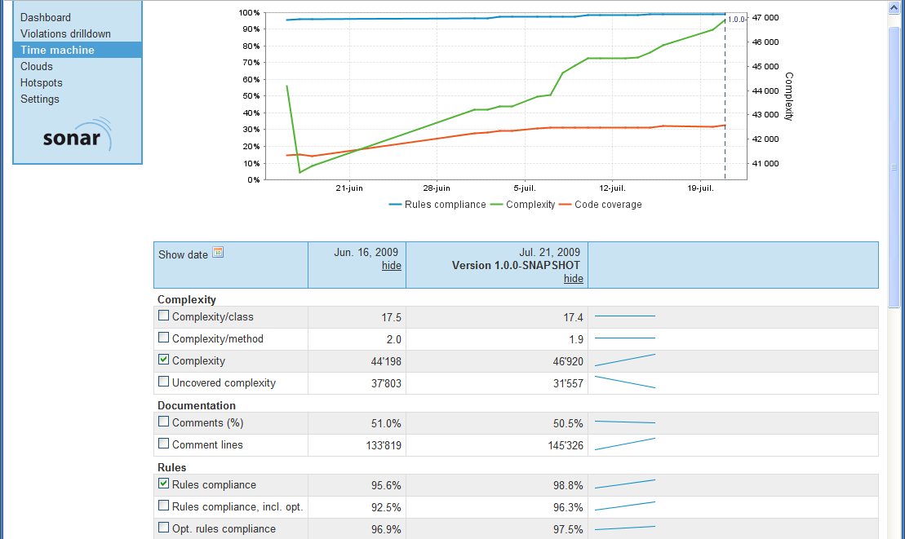
Évolution de nos indicateurs qualité.
La Figure 12-05 indique également le Top 10 des violations constatées, ce qui nous dira immédiatement sur quoi nous devons mettre l’accent. Notre session mensuelle de débriefing est déjà toute tracée !
Sonar n’est définitivement pas un outil de flicage, c’est un assistant extrêmement puissant pour accompagner le travail d’une équipe et pointer du doigt ses dérives. Le développeur parfait n’existe pas, mais le développeur bien outillé peut tenter de s’améliorer.
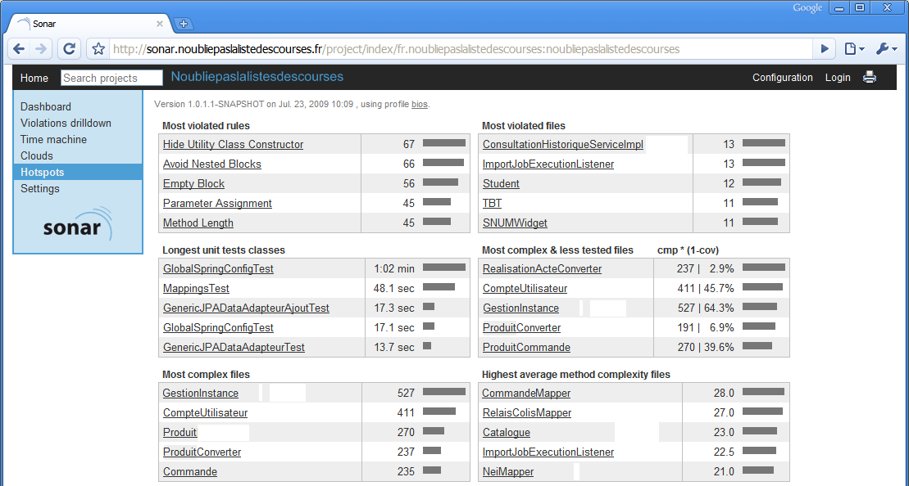
Classement des violations les plus souvent identifiées
Conclusion
Accompagner notre projet d’un bon support documentaire et d’un bon suivi qualité est une tâche ambitieuse, qui peut s’appuyer sur de très nombreux outils. Inutile de vouloir se suréquiper si on n’en a pas compris l’utilisation. Maven aide à mettre en place les outils progressivement, à apprendre à les exploiter. Notre ingénieur qualité devrait en toute logique nous aider à accomplir cette initiation et, une fois mûrs, nous pourrons en tirer tout le bénéfice.
Maven n’est ici que le catalyseur qui nous aide à utiliser des outils existants. Cependant, la facilité avec laquelle on introduit un outil d’analyse dans un projet Maven encourage à l’essayer, à en découvrir l’usage, et progressivement à mettre en place une culture du coder proprement (livre de Robert C. Martin que je vous recommande chaudement, chez le même éditeur).
Chapitre 13 : Respecter un format de distribution
Nous avons produit avec Maven un ensemble de binaires respectant les formats imposés par la plateforme Java et la norme JavaEE. Il nous reste à envoyer le résultat de notre dur labeur pour la mise en production. Nous entrons alors dans une longue procédure de déclaration et de mise en conformité. De toute évidence, l’équipe chargée d’installer, de configurer et de surveiller les serveurs d’applications, a largement de quoi s’occuper avec ses propres problèmes pour ne pas vouloir se plier à nos caprices. À nous de lui fournir un livrable qui colle à ses outils et à ses bonnes pratiques pour une mise en production réussie.
D’où vient ce JAR ?
Depuis que nous avons mis en place un mécanisme d’intégration continue, nous en avons tiré de nombreux avantages, parmi lesquels le fait de disposer en permanence de la dernière version stable et testée de nos binaires, ce qui nous évite de construire l’intégralité du projet sur nos postes de développement. Le projet commençant à prendre de l’embonpoint à force d’explorer de multiples directions, c’est un avantage important en termes de productivité — à tel point que nous avons rapidement pris l’habitude d’utiliser ces binaires issus de l’intégration continue comme fourniture à notre équipe de test pour valider la bonne communication avec les systèmes partenaires et la tenue des performances.
Le gain de temps et de stabilité est significatif. Plutôt que de perdre des heures à préparer une version dédiée aux tests, nous avons toujours à notre disposition un livrable prêt à être testé — pas forcément complet, mais fonctionnel. Par ailleurs, nous sommes sûrs que cette fourniture respecte nos critères qualité puisqu’elle est issue de notre fabrique logicielle. Nous entrons ainsi dans une phase d’industrialisation durant laquelle un processus automatisé produit notre livrable avec l’outillage qualité adéquat.
Lukas a cependant fait les frais d’une automatisation maladroite de ce processus. L’équipe de test vient de lui remonter une anomalie grave : au-delà de cinquante requêtes par seconde, l’application semble se figer et voit ses performances se dégrader à vue d’œil. La version précédente n’avait rencontré aucun souci de ce type, et il est donc urgent d’identifier le problème. Le premier réflexe est de se demander ce qui a changé entre ces deux versions testées, et c’est là que Lukas se retrouve seul face à deux fichiers EAR, sans aucune information lui permettant de faire rapidement le lien avec notre gestionnaire de code source.
Pour pallier ce problème, nous devons disposer au sein de l’archive EAR d’une indication de l’emplacement exact dans l’historique de notre code d’où elle a été tirée. Le mécanisme de marques (tag) dans le gestionnaire de code source est généralement utilisé à cet effet pour faire le lien entre une version publiée et son code source. Cependant, nous parlons ici de versions de tests que nous livrons une à deux fois par semaine à l’analyse féroce de nos outils de tests de charge et d’interopérabilité. Toutes ces versions portent le même numéro 1.2.0-SNAPSHOT qui reflète bien que le projet n’est pas encore abouti.
Numéro de construction
Une solution consiste à produire des binaires dont le numéro de version est complété par un compteur de construction, que le serveur d’intégration continue incrémente à chaque tentative de construction. Le serveur d’intégration continue a le bon goût de nous fournir la valeur courante sous forme d’une variable système, que nous pouvons donc exploiter dans le build Maven. Le Listing 13.1 montre la configuration de notre POM pour exploiter cette variable et produire les livrables en conséquence. Nous utilisons un profil qui n’est activé que sur le serveur d’intégration continue, afin de ne pas perturber les autres environnements.
<profile>
<id>integration-continue</id>
<build>
<finalName>${project.artifactId}/${project.version}-build-${HUDSON_build}</finalName>
</build>
</profile>Notre livrable est ainsi construit sous le nom noubliepaslalistedescourses-1.2.0-SNAPSHOT-build-792. La consultation de l’historique de notre intégration continue indiquerait immédiatement à quel code source correspond ce build 792. Nous pouvons d’ailleurs demander au serveur d’intégration continue de conserver soigneusement les traces d’une construction dont nous livrons le résultat à l’équipe de test et de placer une marque dans le gestionnaire de code source en conséquence.
Numéro de révision
Une solution alternative, liée à l’utilisation du gestionnaire de code source Subversion, est la notion de révision. Sur Subversion, à chaque commit c’est tout le référentiel qui voit son numéro de révision incrémenté, et pas juste le fichier modifié. On arrive ainsi rapidement à des numéros de révision à cinq ou six chiffres.
Si cela n’a aucune influence sur le développeur, cela fournit un moyen de lier un livrable à son code source de manière extrêmement précise : si le binaire a été construit à partir de la révision 4704, il suffit d’extraire de SVN l’état du code source associé. Nous pouvons d’ailleurs demander a posteriori à Subversion de poser une marque pour le code associé à cette révision particulière.
Avantage par rapport au numéro de construction, ce numéro de révision n’est pas lié au serveur d’intégration continue et peut être obtenu sur n’importe quel poste de développement. La même construction donnera donc le même résultat, ce qui est la moindre des choses ! Le Listing 13.2 montre l’utilisation du plugin buildnumber pour obtenir ce numéro de révision et l’exploiter sous forme de variable Maven. À noter qu’il est déclenché dans la phase prepare-package disponible dans Maven 2.1 et versions ultérieures.
<build>
<plugins>
<plugin>
<groupId>org.codehaus.mojo</groupId>
<artifactId>buildnumber-maven-plugin</artifactId>
<executions>
<execution>
<phase>prepare-package</phase>
<goals>
<goal>create</goal>
</goals>
</execution>
</executions>
<configuration>
<doCheck>false</doCheck>
<doUpdate>false</doUpdate>
</configuration>
</plugin>
</plugins>
<finalName>${project.artifactId}/${project.version}-rev-${svnnumber}</finalName>
</build>Utiliser le MANIFEST
Décidé à ne pas se faire avoir deux fois, Lukas met en place cette solution et fait produire par notre serveur d’intégration continue des binaires portant systématiquement l’indication de révision SVN dans le nom du fichier. Il est cependant rapidement ramené à la dure réalité lorsqu’il constate que la dernière version disponible de l’EAR dans notre gestionnaire de bibliothèque s’appelle… noubliepaslalistedescourses-1.2.0-SNAPSHOT.ear – oups !
Nous avons jusqu’ici cherché à modifier le nom du fichier produit par Maven. C’est oublier que la phase de déploiement dans notre dépôt de bibliothèques n’en tient pas compte : le binaire qui est déployé respecte scrupuleusement les indications d’artifactId et de version ! Malgré nos efforts, et même si le répertoire target contient bien finalement un fichier noubliepaslalistedescourses-1.2.0-SNAPSHOT-rev-4704.ear, le fichier que nous retrouvons dans notre dépôt ne possède plus ce complément d’information.
En fait, nous avons aussi cherché à réinventer la poudre. Le format d’archive Java (JAR, WAR ou EAR) n’est pas juste une extension maison pour une compression de type ZIP. Ce format définit aussi un mécanisme de métadonnées via le répertoire spécialisé META-INF, et en particulier le descripteur MANIFEST.MF.
Ce fichier n’est rien d’autre qu’un fichier texte, dont le formalisme est un peu déroutant parfois, mais qui ressemble globalement aux fichiers de propriétés que vous manipulez déjà certainement. Pour une clé donnée, on associera une valeur, par exemple pour la clé build le numéro de construction de notre serveur d’intégration continue.
Comment compléter ce fichier MANIFEST ? La construction de nos projets par Maven en produit naturellement un, avec des informations minimalistes. Il suffit de demander aux plugins jar, war ou ear d’ajouter d’autres informations. Le Listing 13.3 montre la configuration mise en place par Lukas pour aboutir à une solution enfin satisfaisante et pleinement reproductible. Notez aussi l’utilisation d’un profil dédié à l’intégration continue qui permet de compléter ces métadonnées, lorsque des informations complémentaires sont disponibles, et de ne pas perturber le fonctionnement de Maven sur les postes de développement (le plugin buildnumber [44] n’est pas très performant).
<profile>
<id>integration-continue</id>
<build>
<pluginManagement>
<plugins>
<plugin>
<groupId>org.apache.maven.plugins</groupId>
<artifactId>maven-war-plugin</artifactId>
<configuration>
<archive>
<manifestEntries>
<Build>${buildNumber}</Build>
</manifestEntries>
</archive>
</configuration>
</plugin>
<plugin>
<groupId>org.apache.maven.plugins</groupId>
<artifactId>maven-jar-plugin</artifactId>
<configuration>
<archive>
<manifestEntries>
<Build>${buildNumber}</Build>
</manifestEntries>
</archive>
</configuration>
</plugin>
</plugins>
</pluginManagement>
<plugins>
<plugin>
<groupId>org.codehaus.mojo</groupId>
<artifactId>buildnumber-maven-plugin</artifactId>
<executions>
<execution>
<phase>prepare-package</phase>
<goals>
<goal>create</goal>
</goals>
</execution>
</executions>
<configuration>
<doCheck>false</doCheck>
<doUpdate>false</doUpdate>
</configuration>
</plugin>
</plugins>
</build>
</profile>Avec cette configuration, chacun de nos binaires portera désormais les informations complètes de ses origines. En cas de besoin, il nous suffira de les exploiter pour retrouver rapidement le code source associé, et éventuellement les traces de sa construction dans notre serveur d’intégration continue.
La confiance règne…
Stéphane revient l’air sombre d’une longue réunion avec les responsables stratégiques du groupe. Il leur a exposé nos pratiques, nos outils et les avantages en termes de productivité et de stabilité que nous tirons du couple intégration continue/gestionnaire de dépôt. Il s’est alors cassé les dents sur un expert en sécurité, certifié CISSP-ISSMP, CISA, etc., un adepte du chiffrage des clés asymétriques et autres mécanismes que nous utilisons tous les jours sans nous en rendre compte, mais que peu de monde est capable d’expliquer.
Notre M. Sécurité a juste tiqué lorsque Stéphane a expliqué que chaque poste de développement récupère depuis un serveur les bibliothèques dans leur dernière version stable.
« Qui valide cette stabilité ?
– Le serveur d’intégration continue, avec son armada de tests, de métriques et de règles qualité.
– Est-il le seul à pouvoir publier des binaires sur ce serveur ?
– En principe, tout développeur peut également publier les binaires du projet sur lequel il travaille, ça peut parfois être utile d’ailleurs pour propager rapidement une correction, mais en pratique…
– Mais alors, il n’est pas possible de s’assurer de qui a produit le binaire ?
– Eh bien, nous pourrions l’ajouter dans le MANIFEST, justement récemment nous l’avons complété du numéro de révision…
– Mais comment être sûr que cette information est fiable ?
– Euh… vous voulez dire que quelqu’un se ferait passer pour un autre ?
– Oui : un employé ayant un compte à régler, ou pire, un pirate informatique !
– Eh bien… »
Faut-il préciser que Stéphane s’attendait à de nombreuses questions, mais certainement pas à celles-là. Sa présentation était orientée productivité, fiabilité, réactivité et travail d’équipe, pas flicage et suspicion. Il faut dire que notre équipe est composée de bons camarades et que nous ne connaissons pas les situations tendues de malveillances informatiques. Mais il est vrai qu’un JAR incluant des erreurs ou du code malicieux, qui se retrouve automatiquement installé sur tous les postes de développement avec l’aide du mécanisme de SNAPSHOT, peut faire perdre des journées entières de travail, multipliées par le nombre de développeurs concernés…
La première option est, bien sûr, de sécuriser notre dépôt de bibliothèques. Un compte et un mot de passe sont désormais nécessaires pour pouvoir y déployer des binaires. Stéphane est cependant un peu anxieux de retourner au casse-pipe avec cette seule réponse à donner à notre M. Sécurité. Il cherche donc un moyen pour indiquer de manière infalsifiable qui a produit une archive Java.
La réponse lui vient indirectement d’Olivier. Celui-ci a pris l’habitude de signer numériquement ses mails, sans doute plus pour le plaisir d’installer l’extension nécessaire à son navigateur et d’assumer ainsi son appartenance indiscutable au monde des geeks. Cette signature utilise l’algorithme GPG [45], qui a le double avantage d’être libre et basé sur un couple de clés. La clé publique permet à n’importe qui de valider l’identité de l’auteur, qui conserve soigneusement sa clé privée hors de portée de tout intrus.
Interrogé sur le sujet, Olivier fait rapidement le lien avec le plugin GPG disponible pour Maven et qui permet de signer un binaire de la même façon qu’il signe ses messages. L’auteur, déclaré dans le fichier MANIFEST, est donc facilement contrôlable via sa clé publique. Le Listing 13.4 montre la configuration de ce plugin mis en place par Olivier et Stéphane.
<project>
...
<build>
<plugins>
<plugin>
<groupId>org.apache.maven.plugins</groupId>
<artifactId>maven-gpg-plugin</artifactId>
<version>1.0-alpha-4</version>
<executions>
<execution>
<id>sign-artifacts</id>
<phase>verify</phase>
<goals>
<goal>sign</goal>
</goals>
</execution>
</executions>
</plugin>
</plugins>
</build>
...
</project>Chaque développeur qui désire diffuser un binaire sur le dépôt verra ainsi son nom gravé dans le marbre du MANIFEST et le fichier binaire signé numériquement par sa clé GPG. Voilà de quoi donner du répondant à Stéphane pour sa prochaine réunion !
L’EAR ne suffit pas
Notre archive d’entreprise EAR ne se suffit pas. Elle doit être complétée par des fichiers de configuration, dans lesquels devront être indiqués des paramètres techniques dépendant de l’environnement réseau, du système hôte, ou des ajustements liés à la charge constatée sur le serveur : nombre de threads alloués à nos tâches de fond, time-out de connexion à nos serveurs partenaires…
Pour des raisons d’assurance qualité, nous devons également accompagner notre application de tout le code source qui la compose. Cela peut sembler bien paranoïaque, mais de trop nombreuses applications se sont retrouvées en production alors que le code source était malencontreusement égaré, perdu au cours de la réaffectation d’un serveur de développement ou de l’archivage un peu rapide de nos supports de stockage.
|
De nombreuses entreprises imposent pour la même raison, dans leurs règles qualité, de recompiler tout logiciel open source introduit dans une application. Si cette règle est rarement appliquée (hou, les vilains), vous devinez facilement de quelle expérience catastrophique elle peut provenir… binaires non identifiés, sans code source, bugs impossibles à reproduire et donc à corriger. Le passé a dû laisser à certains de cruelles blessures. |
Nous ne pouvons donc pas nous contenter de produire notre EAR avec Maven, il nous manque une étape, et vous imaginez que nous n’allons pas arrêter notre démarche d’automatisation complète du processus si près du but !
Assemblage du livrable
La production réclame une archive Unix tar.gz répondant à une structure très précise :
-
L’archive EAR doit être placée dans un sous-répertoire application.
-
Nos fichiers de configuration doivent être regroupés dans un sous-répertoire configuration.
-
Le code source doit être placé dans un sous-répertoire sources.
Nous avons déjà vu un joli panel de plugins qui nous ont bien aidés dans notre travail ; nous allons faire appel au plugin assembly, l’un de leurs petits frères. Ce plugin va exploiter un fichier XML qui décrit le livrable à assembler. Dans ce fichier, nous indiquerons les constituants de notre archive.
Le fichier assembly comptera trois parties, correspondant aux trois constituants clés de notre archive cible. Ce fichier est structuré par un schéma XML qui nous aidera à éviter les erreurs de syntaxe. L’en-tête du fichier indique le format d’archive à produire : une archive TAR compressée GZip. Nous pourrions aussi bien produire une archive ZIP ou un TAR non compressé.
La suite du fichier indique au plugin assembly les éléments du projet à ajouter dans l’archive. La première partie va piocher dans notre projet multimodule (voir le Chapitre 7) celui qui produit l’archive EAR. Nous pourrions le désarchiver ou le faire accompagner de ses dépendances. La deuxième va inclure une liste de fichiers identifiés dans un répertoire prédéfini. La dernière va parcourir tous les modules du projet et en extraire le code source. Le Listing 13.5 montre ce fichier magique qui nous fera franchir la dernière ligne droite avant une production 100 % automatisée de notre livrable.
<?xml version="1.0" encoding="UTF-8"?>
<assembly xmlns="http://maven.apache.org/POM/4.0.0"
xmlns:xsi="http://www.w3.org/2001/XMLSchema-instance"
xsi:schemaLocation="http://maven.apache.org/POM/4.0.0
http://maven.apache.org/xsd/assembly-1.1.1.xsd">
<id>livrable</id>
<formats>
<format>tar.gz</format>
</formats>
<includeBaseDirectory>false</includeBaseDirectory>
<moduleSets>
<moduleSet>
<!-- inclusion de l'EAR -->
<includes>
<include>com.geegol.shoppinglist:shoppinglist-ear</include>
<includes>
<binaries>
<unpack>false</unpack>
<outputFileNameMapping>shoppinglist.ear</outputFileNameMapping>
<outputDirectory>application</outputDirectory>
<includeDependencies>false</includeDependencies>
</binaries>
</moduleSet>
<moduleSet>
<!-- inclusion des fichiers sources de chaque module -->
<sources>
<includeModuleDirectory>false</includeModuleDirectory>
</sources>
</moduleSet>
</modulesSets>
<fileSets>
<!-- inclusion des fichiers de configuration -->
<fileSet>
<directory>src/main/configuration</directory>
<lineEnding>unix</lineEnding>
<outputDirectory>configuration</outputDirectory>
<includes>
<include>**/*.xml</include>
<include>**/*.properties</include>
</includes>
<fileMode>755</fileMode>
</fileSet>
</fileSets>
</assembly>Le format de ce fichier utilise un schéma XML qui nous assistera dans sa saisie et qui est largement documenté sur le site web du plugin [46].
|
Le plugin assembly propose quelques descripteurs types pour des usages courants, comme produire, en parallèle du livrable, un ZIP des sources. Un autre assembly qui pourra être utile est le jar-with-dependencies qui construit un gros JAR du projet avec toutes ses dépendances. C’est bien pratique si on doit fournir des outils en ligne de commande (traitements batch, par exemple), dont le lancement pourra alors se résumer à java -jar monJar. |
Pour produire notre livrable tant désiré, il nous suffit de lancer la
commande mvn assembly:assembly. Nous l’avons déjà vu, cette syntaxe
correspond à l’invocation d’une tâche spécifique d’un plugin et non
d’une phase de construction du projet. Cependant, ce plugin va provoquer
l’exécution de la phase package du projet (et de tous ses modules).
C’est au cours de cette exécution qu’il découvrira les constituants de
chaque projet et identifiera les répertoires de code source (y compris
le code généré) et les binaires produits.
L’intégration continue produit notre livrable
Notre serveur d’intégration continue produit déjà, à intervalles réguliers, nos binaires, prêts à être testés au-delà de ce que nos tests automatisés savent contrôler. Il serait dommage de ne pas lui demander de produire aussi notre livrable, ne serait-ce que pour nous donner un moyen de vérifier le respect de son format.
L’idée paraît bonne, mais quelle cible Maven invoquer ? Devons-nous
remplacer le mvn install par le fameux assembly:assembly. Nous voudrions
que la production de ce tar.gz soit mieux intégrée dans la construction
du projet, qu’elle soit le résultat de sa construction par défaut.
Le plugin assembly a la bonne idée de proposer une autre tâche, laquelle est prévue pour s’exécuter au sein d’un cycle de construction du projet. À la différence du assembly:assembly, nous pouvons associer assembly:single à une phase du projet, et il sera invoqué automatiquement lors de sa construction. Le Listing 13.6 indique la configuration que nous appliquons.
<plugins>
<plugin>
<artifactId>maven-assembly-plugin</artifactId>
<version>2.2-beta-4</version>
<inherited>false</inherited>
<configuration>
<descriptors>
<descriptor>src/assembly/livrable.xml</descriptor>
</descriptors>
</configuration>
<executions>
<execution>
<goals>
<goal>single</goal>
</goals>
<phase>install</phase>
</execution>
</executions>
</plugin>Solution miracle ? Eh bien non, échec cuisant. Le plugin assembly plante lamentablement en indiquant qu’il ne trouve pas notre EAR :'(.
L’œuf ou la poule ?
Quel est le problème ? Il nous faut comprendre un peu mieux les rouages de Maven pour expliquer cet échec : nous avons mis en place l’héritage naturel sur le projet, c’est-à-dire que le même fichier POM sert à déclarer nos modules et de parent commun pour mutualiser la configuration et les dépendances. Cette solution, bien pratique, est largement appliquée, mais pose ici un problème :
-
En tant que support du plugin assembly, notre POM parent doit passer en revue les modules du projet. Le plugin pourra ainsi en extraire la structure et les binaires produits.
-
En tant que parent, notre POM doit être totalement constitué avant que ses fils puissent être construits. Cela signifie que Maven doit exécuter son cycle de vie avant de pouvoir s’attaquer aux modules.
Ces deux contraintes contradictoires sont une voie sans issue. Pour contourner cette impasse, nous utilisons une astuce qui ressemble plus à un hack qu’à une vraie solution, mais qui va bien nous dépanner.
Nous créons à côté de notre fichier racine pom.xml un second fichier POM : pom-assembly.xml. Dans ce nouveau descripteur Maven, nous plaçons la configuration du plugin assembly, ainsi que la déclaration d’un unique module qui pointe vers le pom initial. Le Listing 13.7 montre ce nouveau fichier, particulièrement simple comparé au volume de XML que Maven peut parfois nous demander de saisir.
<project>
<modelVersion>4.0.0</modelVersion>
<groupId>com.geegol.shoppinglist</groupId>
<artifactId>shoppinglist-assembly</artifactId>
<version>1.7.1-SNAPSHOT</version>
<packaging>pom</packaging>
<modules>
<module>.</module> <!-- le POM.XML qui est juste à côté ! -->
</modules>
<build>
<defaultGoal>install</defaultGoal>
<plugins>
<plugin>
<artifactId>maven-assembly-plugin</artifactId>
( ... )
</plugin>
</plugins>
</build>
</project>En lançant Maven avec l’option -f, nous pouvons indiquer le fichier POM à utiliser comme base de la construction du projet. mvn assembly:assembly -f pom-assembly.xml va donc provoquer la construction de ce POM minimaliste, l’exécution du plugin assembly, qui va, à son tour, provoquer la phase package sur l’ensemble des modules du projet.
Nous venons de résoudre le problème de l’œuf et de la poule !
Conclusion
Notre software factory (c’est un mot à la mode, mettez-le sur votre CV) est désormais bien rodée. Elle construit automatiquement un livrable :
-
clairement identifié ;
-
testé de manière unitaire, fonctionnelle, mais aussi en charge et/ou en endurance selon les mécanismes de test et nos contraintes. Contrairement à une idée trop répandue, les outils ne sont pas le facteur limitant dans ce domaine ;
-
respectant nos critères qualité et règles de codage, dont les métriques sont historisées ;
-
Fournissant toutes les indications nécessaires pour tracer son origine.
-
mis à disposition de tous les développeurs qui veulent le tester ou bénéficier des dernières corrections ;
-
prêt pour une utilisation directe par les équipes de production.
Le chemin a été long depuis notre petit projet rigolo échangé par e-mail, et l’outillage a largement progressé. Si la taille de nos fichiers pom.xml peut faire peur à certains, il ne faut pas perdre de vue le nombre de services que Maven propose via une commande unique.
Nous pourrions encore déployer l’application de manière automatisée sur un serveur JavaEE, sous réserve qu’il existe un plugin Maven adapté (ce qui couvre quasiment tous les cas à l’exception notable d’IBM Websphere). L’équipe de production préfère souvent conserver la main en choisissant elle-même quand et par qui une mise à jour est réalisée. Cette retenue est compréhensible de la part de ceux qui sont en première ligne en cas de dysfonctionnement, et qui n’ont pas encore mesuré le gain de fiabilité que l’intégration continue, bien instrumentée, peut nous apporter. Sans ce dernier rempart, nous passerions de l’intégration continue à la production continue, évolution de l’industrie logicielle qui n’est pas encore dans les mœurs, mais que Maven peut déjà supporter !
Chapitre 14 : Un nouveau projet démarre
Avec tous nos efforts sur notre projet noubliepaslalistedescourses pour mettre en œuvre les meilleures pratiques et les outils les plus aboutis, dans un souci constant d’intégration et d’automatisation, nous commençons à faire parler de nous. À tel point que nous est confiée l’élaboration d’un nouveau projet dont les concepts sont proches du nôtre, malistedecadeauxpournoël. Raphaël se voit offrir la lourde tâche d’en mettre en place les briques de base.
Raphaël se dit qu’on l’a peut-être un peu trompé sur la marchandise, lorsqu’il découvre le planning du projet. Les délais de réalisation sont plutôt optimistes, et l’adoption de Scrum [47] pour conduire cette épreuve ne suffira probablement pas à faire des miracles – si on vous vend les méthodes agiles sur ce seul critère, méfiez-vous ! Toujours est-il qu’il va falloir mettre les bouchées doubles pour lancer ce projet en un temps record.
Mutualiser
Une solution intelligente consiste à mutualiser nos outils et nos bonnes pratiques. Via le mécanisme d’héritage du POM, nous pouvons partager un POM parent commun dans lequel seront remontés les déclarations de plugins, de versions de dépendances et les autres paramètres applicables à nos deux projets. De la même façon, nos classes peuvent être déplacées dans un projet indépendant, dont nous partagerons le développement.
|
L’élément <dependencyManagement> permet de déclarer de manière globale les versions utilisées pour les dépendances. Un projet qui hérite de dependencyManagement n’est affecté d’aucune dépendance particulière ; par contre, s’il déclare une dépendance sur cette liste sans préciser de version ou en utilisant une autre version, celle du dependencyManagement prédomine. C’est un bon moyen pour mutualiser une liste de dépendances dont le fonctionnement a été validé et pour éviter à chacun de chercher quelle version d’EHCache est compatible avec hibernate-entitymanager x.y.z. Il en est de même avec les plugins via l’élément pluginManagement. |
Qui paye ?
Dans un monde parfait, cette solution serait optimale : une seule source, un développement profitant de l’attention de tous pour un meilleur résultat. C’est ce qu’essaie de faire la fondation Apache pour ses propres projets en partageant un POM parent (relativement simple) avec des informations communes comme la licence, les dépôts, les listes de discussion. Elle fait de même pour le code à travers le projet commons.apache.org. Le résultat est encourageant sans être prodigieux.
Dans un monde d’entreprise, cette solution est surtout source de conflits : qui assure la maintenance des composants communs ? Qui décide des évolutions de ce composant ? Sur quel budget ? Qui supporte les tests de non-régression lorsqu’un composant mutualisé évolue, alors que le projet qui l’utilise n’a aucune évolution en cours qui pourrait (discrètement) en absorber le coût ? Sauf à avoir une volonté officielle et financée de supporter cette mutualisation, c’est malheureusement une voie sans issue qui va surtout épuiser la bonne volonté des premiers contributeurs de ces composants communs.
Partager un POM parent
Nous avons déjà évoqué l’utilisation d’un POM d’entreprise, dans lequel sont placées toutes les déclarations propres à l’infrastructure et aux règles de l’entreprise. On va pouvoir y référencer le serveur d’intégration continue, le gestionnaire de dépôt utilisé pour publier les artefacts. Il permet aussi de préconfigurer quelques plugins en fonction de nos règles de développement. Les plugins liés aux outils de contrôle qualité comme Checkstyle, PMD ou FindBugs, peuvent ainsi être associés aux règles dont les développeurs ont assimilé l’intérêt. Le Listing 14.1 montre le POM parent que nous proposons pour Geegol.
<project xmlns="http://maven.apache.org/POM/4.0.0"
xmlns:xsi="http://www.w3.org/2001/XMLSchema-instance"
xsi:schemaLocation="http://maven.apache.org/POM/4.0.0
http://maven.apache.org/xsd/maven-4.0.0.xsd">
<modelVersion>4.0.0</modelVersion>
<groupId>com.geegol</groupId>
<artifactId>geegol</artifactId>
<name>Geegol corporate POM</name>
<version>1 </version>
<packaging>pom</packaging>
<!-- informations liées à l'infrastructure réseau de l'entreprise -->
<ciManagement>
<system>hudson</system>
<url>http://hudson.geegol.com/</url>
</ciManagement>
<scm>
<connection>scm:svn:http://svn.geegol.com/trunk</connection>
<developerConnection>scm:svn:https://svn.geegol.com/trunk</developerConnection>
<url>http://fisheye.geegol.com/</url>
</scm>
<repositories>
<repository>
<id>geegol.snapshots</id>
<url>http://nexus.geegol.com/content/groups/public-snapshots/</url>
<snapshots>
<enabled>true</enabled>
</snapshots>
</repository>
</repositories>
</project>Ce POM commun simplifie un peu la définition des projets développés au sein de l’entreprise, mais ne fait qu’effleurer la question. Commencer un projet sur cette seule base ne va pas aider beaucoup l’équipe de développement pour un démarrage sur les chapeaux de roue.
Copier-coller
Autre option, qui vient à l’esprit de tout le monde : le bon vieux copier-coller. La copie est une opération de base en informatique, peut-être la plus utilisée mais aussi la plus dénigrée par les architectes : dans une copie, il y a toujours un élément de trop !
Selon cette approche, Raphaël commence par reproduire la structure de base de notre projet et par copier nos fichiers POM ainsi que nos classes techniques, qui pourront donner de bonnes pistes pour la réalisation. Rapidement, le travail devient titanesque car il faut adapter ces copies : noms de package, groupId, artifactId et versions ne correspondent pas. Le risque d’erreurs est grand, et obtenir un résultat stable et complet va prendre du temps !
Copier et mutualiser !
Raphaël ne se laisse pas démonter si facilement et propose une autre solution : faire un copier-coller dont la phase d’adaptation au nouveau projet est automatisée ! Raphaël est en fait tombé sur la description du plugin archetype.
Un plugin qui crée des projets
Pour nous convaincre, il nous fait rapidement une démonstration. Il se propose ainsi de lancer un projet de plugin Maven, faisant ainsi référence au travail que nous avons dû accomplir au Chapitre 11. Nous avons tous en mémoire le temps qu’il nous a fallu pour cela. Raphaël tape donc une commande dans sa console :
mvn archetype:generate
Maven propose alors une liste impressionnante de composants, parmi lesquels Raphaël identifie un archétype mojo-archetype, qu’il sélectionne. Maven lui demande de choisir pour son nouveau projet un groupId, un artifactId et une version. Après quelques traces peu compréhensibles dans la console, Raphaël nous lâche un majestueux « et voilà ». Le Listing 14.2 montre l’exécution de cette commande. Nous avons limité la liste des archétypes proposée pour ne pas occuper deux pages supplémentaires. Le Listing 14.3 montre la structure de fichiers régénérée.
D:\>mvn archetype:generate
[INFO] Scanning for projects...
[INFO] Searching repository for plugin with prefix: 'archetype'.
[INFO] ------------------------------------------------------------------------
[INFO] Building Maven Default Project
[INFO] task-segment: [archetype:generate] (aggregator-style)
[INFO] ------------------------------------------------------------------------
[INFO] Preparing archetype:generate
[INFO] No goals needed for project - skipping
[INFO] [archetype:generate {execution: default-cli}]
[INFO] Generating project in Interactive mode
[INFO] No archetype defined. Using maven-archetype-quickstart
(org.apache.maven.archetypes:maven-archetype-quickstart:1.0)
Choose archetype:
1: local -> maven-archetype-echo-mojo (Un plugin Maven "hello world")
(...)
42: internal -> gmaven-archetype-mojo (Groovy mojo archetype)
Choose a number:
(1/2/3/4/5/6/7/8/9/10/11/12/13/14/15/16/17/18/19/20/21/22/23/24/25/26/27/28/29/30/31/32/33/34/35/36/37/38/39/40/41/42) 16: : *1*
[INFO] artifact org.apache.maven.archetypes:maven-archetype-mojo:
checking for updates from central
Define value for groupId: : *com.geegol.maven.plugins*
Define value for artifactId: : *demo-maven-plugin*
Define value for version: 1.0-SNAPSHOT: :
Define value for package: com.geegol.maven.plugins: :
Confirm properties configuration:
groupId: com.geegol.maven.plugins
artifactId: demo-maven-plugin
version: 1.0-SNAPSHOT
package: com.geegol.maven.plugins
Y: : *Y*
[INFO] ----------------------------------------------------------------------------
[INFO] Using following parameters for creating OldArchetype:
maven-archetype-mojo:RELEASE
[INFO] ----------------------------------------------------------------------------
[INFO] Parameter: groupId, Value: com.geegol.maven.plugins
[INFO] Parameter: packageName, Value: com.geegol.maven.plugins
[INFO] Parameter: package, Value: com.geegol.maven.plugins
[INFO] Parameter: artifactId, Value: echo-maven-plugin
[INFO] Parameter: basedir, Value: D:\
[INFO] Parameter: version, Value: 1.0-SNAPSHOT
[INFO] ********************* End of debug info from resources from
generated POM
***********************
[WARNING] org.apache.velocity.runtime.exception.ReferenceException:
reference :
template = archetype-resources/src/main/java/EchoMojo.java [line
38,column 31] : ${project.build.directory} is not a valid reference.
[INFO] OldArchetype created in dir: D:\demo-maven-plugin
[INFO] ------------------------------------------------------------------------
[INFO] BUILD SUCCESSFUL
[INFO] ------------------------------------------------------------------------
D:\demo-maven-plugin>dir
Répertoire de D:\demo-maven-plugin
04/09/2009 08:55 <REP> .
04/09/2009 08:55 <REP> ..
04/09/2009 08:55 845 pom.xml
04/09/2009 08:55 <REP> src
D:\demo-maven-plugin>tree
D:.
└───src
└───main
└───java
└───com
└───geegol
└───maven
└───plugins
Pardon ? Tu rigoles ? Avec un petit sourire, Raphaël propose de compiler
son plugin et de l’exécuter. Un mvn install dans le répertoire
nouvellement apparu, puis un mvn
com.geegol.maven.plugins:demo-maven-plugin:1.0-SNAPSHOT:echo et nous
pouvons voir apparaître dans la console le résultat simple mais tout de
même inespéré :
[INFO] [demo:echo {execution: default-cli}]
Hello World from Maven !
C’est sûr que ce plugin n’est pas très impressionnant pour ce qu’il fait, mais tout de même il ne nous aura pas coûté beaucoup d’efforts et est totalement fonctionnel. Raphaël enchaîne donc avec l’explication.
Un archétype ?
Un archétype est la façon à la Maven de faire de la mutualisation, avec un bonus considérable : son utilisateur peut, par la suite, faire évoluer le code comme bon lui semble, voire ne toucher à rien pendant des années s’il n’en voit pas l’intérêt. Il peut proposer des évolutions de l’archétype s’il a de bonnes idées ou des corrections à apporter, mais son code ne sera jamais impacté sans son accord.
Contrairement à une dépendance, pour laquelle on récupère le résultat final binaire, un archétype fournit du code source, sur la base d’un modèle. Noms de packages, chemins et métadonnées Maven sont adaptés au projet utilisateur. Le modèle lui-même est géré comme un projet Maven à part entière, dispose d’une version et peut être enrichi par ceux qui ont du temps (et du budget) pour s’en occuper. Les équipes peuvent proposer de reporter dans le modèle soit des corrections qu’elles ont faites pour éviter à d’autres de tomber dans les mêmes embûches, soit des enrichissements pour capitaliser sur le travail réalisé.
Construire ses propres archétypes
La structure d’un archétype n’est pas très attirante a priori. Il s’agit d’un projet Maven comprenant un nième descripteur XML et une série de fichiers modèles sous forme de ressources. Le projet qui va en découler ne sera donc pas très facilement accessible, et l’édition d’un tel format pas très simple.
Sauf si l’on consulte la description du plugin archetype, et en particulier sa tâche create-from-project. Comme son nom le suggère, celle-ci propose de construire un archétype à partir d’un projet normal, pas nécessairement conçu pour servir d’archétype. En quelque sorte, il s’agit d’une rétro-ingénierie qui va extraire un modèle à partir d’une implémentation concrète.
La version 1.2.6 de « noubliepaslalistedescourses » est particulièrement réussie. Après cinq versions correctives, le code est très stable, et nous sommes très confiants sur la bonne intégration de tous les outils mis en œuvre. Pour construire un archétype sur cette base, il nous suffit de partir de son code source et de lancer la commande magique. Celle-ci va identifier dans tous nos fichiers de configuration et nos sources l’utilisation du nom de package fr.noubliepaslalistedescourses et assembler un archétype basé sur tous nos fichiers déspécialisés du nom de notre projet.
L’archétype est prêt en quelques minutes dans le répertoire
target/generated-sources/archetype (il est sous sa forme de projet
Maven ; il nous suffit de lancer, depuis cet emplacement, un très
classique mvn install pour le convertir en binaire utilisable) !
Raphaël n’a plus qu’à lancer la commande complémentaire : mvn
archetype:generate, en précisant l’argument -Dcatalog=local signalant
qu’il veut utiliser ses propres archétypes, présents sur son poste de
développement, et pas ceux mis à disposition par la communauté Maven.
Quelques instants plus tard, le projet « malistedecadeauxpournoel » est prêt
pour être enregistré dans son propre gestionnaire de sources Subversion,
avec un code fonctionnel qu’il ne restera plus qu’à adapter aux besoins
spécifiques du nouveau projet.
Gérer un projet de référence
Nous avons donc trouvé une solution très élégante pour repartir d’un projet existant dont nous apprécions les qualités pour lancer une nouvelle production. « malistedecadeauxpournoël » profitera ainsi des longues heures de mise au point et de l’expérience acquise sur le projet qui l’a précédé.
Dans de nombreux cas cependant, c’est l’infrastructure du projet – aussi bien sa configuration Maven que les nombreux frameworks utilisés – qui est intéressante pour le nouveau développement, les aspects fonctionnels étant probablement assez éloignés. Au mieux, quelques classes utilitaires seront à reprendre, mais certainement pas les centaines de classes que nous avons accumulées depuis le début du projet.
Donner le meilleur de nous-mêmes
Le mécanisme extrêmement simple qui permet de créer un archétype encourage une pratique simple : développer un projet de référence, une application blanche, dans laquelle nous mettrons en place toute notre expertise. Cette application utilisera une sélection de frameworks correspondant à l’état de l’art, avec une préconfiguration claire et largement documentée.
Vous avez probablement déjà vu ces fichiers de propriétés suffixés -sample qui contiennent nettement plus de commentaires explicatifs que de valeurs de configuration. Pour notre application blanche, nous mettons un point d’honneur à ce que chaque fichier de configuration, classe ou POM présente une explication détaillée de ce qu’il réalise, pourquoi et comment. Nous accompagnons chaque framework d’une classe d’exemple, qui sert de point de départ à tout développeur novice qui le connaîtrait mal, afin de le mettre sur la bonne piste. Le développement se faisant beaucoup par imitation, les premières lignes de code disponibles sur le projet sont capitales.
Démarrer sur les bons rails
Utilisée comme archétype, notre application blanche met à la disposition des projets à venir un ensemble cohérent, finement outillé et documenté, qui pourra être, par la suite, adapté à des besoins spécifiques, mais à partir d’une base validée.
Étant elle-même un projet Maven à part entière, notre application blanche peut bénéficier de l’outillage d’intégration continue pour valider son niveau de qualité et sa stabilité. Son développement et son évolution sont donc assez simples. Si un projet qui l’a utilisée comme archétype a expérimenté avec succès une nouvelle technologie, il lui suffit de proposer l’évolution associée. Notre outillage de contrôle qualité faisant le reste pour assurer la cohérence de l’ensemble.
Sébastien passe nous voir, en espérant cette fois ne pas nous trouver au milieu d’une bataille de chiffonniers (voir le Chapitre 9). Il vient nous demander conseil pour lancer une petite application expérimentale. Il ne veut pas s’embarquer dans une étude d’architecture pour si peu, mais simplement partir sur les bons outils du moment, si possible avec quelques pistes pour ne pas perdre de temps. Voilà qui ne pouvait pas mieux tomber ! Notre application blanche est encore à l’état d’ébauche, et nous y avons transféré quelques morceaux choisis de « noubliepaslalistedescourses », en constatant au passage que nous aurions pu faire un petit effort en termes de commentaires pour rendre ses aspects techniques plus compréhensibles.
Un rapide archetype:create-from-projet suivi de son petit frère archetype:generate et Sébastien peut repartir avec un socle encore très imparfait, mais déjà bien plus avancé et intégré que ce qu’il aurait pu obtenir en accumulant les conseils et fragments de code piochés à droite à gauche.
Un support pour expérimenter
Dernier élément, un tel projet peut être fédérateur au sein de l’entreprise, en démontrant un savoir-faire et en servant de point d’échange sur les technologies.
Au démarrage de notre projet, s’est posée la question du choix d’un framework web. Dans cette situation, chacun tente d’imposer son champion, d’abord en mettant en avant ses points forts, puis en dénigrant les concurrents lorsque les arguments commencent à manquer, et finalement par une petite guerre d’influence et de désinformation :
JSF c’est naze,
GWT c’est super lourd,
Struts 2 c’est _has been.
Bref, rien de vraiment constructif.
Pourquoi ne pas proposer dans l’application blanche trois versions de la couche web (sous forme de modules Maven dédiés) ? Sur un exemple de base, nous pouvons demander à chaque framework de démontrer sa plus-value et sa force.
Nous mettons en concurrence de manière constructive nos trois experts, qui fourniront ainsi ce qu’ils considèrent comme l’état de l’art de leur technologie préférée, accompagné des meilleurs exemples pour bien démarrer. Plutôt qu’une querelle de spécialistes qui n’aboutirait à rien de positif, nous pourrons ainsi proposer à chaque nouveau projet de faire son propre choix, en fonction des personnes disponibles, de leurs compétences, des exigences du projet, etc.
Lorsque François revient nous voir pour nous féliciter du succès de « noubliepaslalistedescourses », il ne peut s’empêcher de nous taquiner en ayant l’air surpris de notre réussite alors que nous n’avons pas expérimenté plus avant la solution Flex, dont il est convaincu de la supériorité. Si nous n’avons pas choisi cette voie aujourd’hui, d’autres le feront peut-être sur une autre application, et les quelques lignes d’exemple de François intégrées dans notre application blanche seront déjà un meilleur début qu’une page blanche.
L’application blanche peut ainsi servir de support pour expérimenter une technologie directement dans le contexte de nos méthodes de travail. Faire fonctionner une application Flex, c’est très bien et sans doute facile avec le bon outillage. Réussir à en développer une en bonne entente avec le reste de nos outils est une autre paire de manches. Comment construire l’application avec le même outillage et les mêmes commandes ? Comment intégrer cette technologie avec notre infrastructure métier basée sur Spring ? L’application blanche met dès le début ces questions sur le tapis, y répondre au plus tôt permettra d’introduire Flex sur un nouveau projet sans buter sur ces problèmes.
Un support de démonstration
Pour ceux qui n’ont aucune préférence, l’application blanche lancée en mode démonstration permet de se faire une idée du résultat obtenu pour un code source donné, et donc de discuter sur un exemple concret pour prendre une décision raisonnée.
Elle peut également servir de support de formation.

Jérôme veut démarrer un projet fondé sur Struts 2 et Spring, et former dans le même temps les développeurs novices à ces technologies. Pour les sessions de formation qu’il va animer, il pourrait partir des projets d’exemple qui accompagnent ces deux frameworks et donner les pistes pour que chacun fasse le lien avec l’application à développer. Après tout, ces exemples sont conçus pour cela et en principe taillés pour mettre en valeur les bonnes pratiques. Cependant, ils ne collent pas exactement à la réalité de l’application et des nombreux outils qu’elle intègre. Spring propose par exemple de nombreux mécanismes de configuration, alors que nous n’en exploitons qu’un seul – le but n’est pas de former des experts en Spring, mais des développeurs confiants et guidés dans leur travail.
Jérôme préfère donc partir de notre application blanche, y ajouter la configuration et une sélection d’exemples adéquats. Il crée ensuite un archétype.
Chaque junior qui participe à la formation va alors générer, à partir de l’archétype, sa propre application de démonstration/expérimentation et se lancer dans ses premières lignes de code sur cette base. Les classes de l’application blanche donneront l’assise de nos exercices de formation, et les exemples permettront d’expliquer les mécanismes en jeu.
Au terme de la formation, lorsqu’ils commenceront à travailler sur le projet, nos développeurs tout juste formés ne seront pas déboussolés de retrouver la même structure de projet et gagneront ainsi en efficacité.
|
Bien que les archétypes soient un moyen rapide de réutiliser une application existante, et donc un encouragement à définir des applications blanches, celles-ci présentent quelques écueils :
Même si l’application blanche est utile, il faut que son usage soit indiscutable dans le contexte de votre entreprise, c’est-à-dire que l’on crée véritablement des projets similaires. Il faut faire très attention à son développement et à sa maintenance pour qu’elle reste une vitrine légère et homogène des bonnes pratiques à suivre. Moralité : privilégier les petits exemples (et donc les petits archétypes) qui vont démontrer une problématique donnée. |
Conclusion
Maven nous avait jusqu’ici aidés à structurer notre projet et à lui apporter rapidement de nombreux outils qui en ont amélioré le niveau général. Plutôt que de laisser chaque équipe refaire cette démarche individuellement, nous offrons, grâce aux archétypes la capitalisation de notre expérience et, cela, de façon corporative. En poussant un peu plus loin la logique du bon exemple, nous pouvons proposer aux projets futurs un modèle tout prêt du meilleur de nos compétences, agrémenté de tous les exemples nécessaires à une mise en œuvre rapide.
Dans un esprit de réduction de coûts, d’amélioration de la productivité, d’homogénéité des outils et de vélocité des développements, l’utilisation intelligente des archétypes est clairement un élément décisif. Elle fait de Maven une fois de plus un outil complet, capable d’aider le développeur Java pendant toutes les phases de son projet.
Chapitre 15 : Avons-nous fait le bon choix ?
Le service Geegol Shopping List (désormais disponible dans 27 langues, dont le breton) est devenu un service phare du groupe. Projet expérimental au départ, il est aujourd’hui un élément stratégique et les décideurs du groupe veulent quelques garanties sur nos méthodes de travail et notre outillage.
Maven a répondu présent pour chaque problème que nous avons rencontré. Si nous sommes contents de notre choix, qu’en sera-t-il dans six mois, un an, puis dans cinq ? Maven est un bon outil, mais n’est pas pour autant le Saint-Graal et n’est pas exempt de défauts.
Toute l’équipe est donc réunie pour défendre ce choix face à un comité d’experts qui ne veut pas laisser un si beau projet reposer sur des outils non fiables, mal documentés ou dont l’avenir est incertain. À nous de nous montrer convaincants…
Les limites
Fabrice prend les devants et expose d’office les limites que nous avons constatées lors de l’utilisation de Maven. Nous ne sommes pas face à des débutants prêts à croire que Maven est la solution à tout, autant jouer franc-jeu pour désamorcer ce sujet dès le début.
Maven n’est pas l’outil magique qui va traiter tous nos problèmes avant même qu’ils n’arrivent – si vous cherchez ce genre de solution, essayez l’annotation @Abracadabra dans votre code. Comme tout outil, il a ses forces, mais aussi ses faiblesses et ses limites, et il faut apprendre à faire avec et à les contourner intelligemment.
Points faibles
Il y a une critique, en particulier, qui vous a probablement déjà titillé : la syntaxe XML inutilement verbeuse. L’intégration dans les IDE tend à gommer ce détail, mais il est néanmoins bien présent dès qu’on s’attaque à configurer un gros plugin comme Cargo (voir Chapitre 8).
Qu’est-ce qui empêche de modifier ce format POM pour le rendre plus compact, ou lui ajouter des fonctionnalités ? Le code qui analyse ces fichiers XML est actuellement lié à une version de Maven. Si un nouveau Maven sortait avec un format POM plus souple ou intégrant une nouvelle fonctionnalité, il ne serait exploitable que par les utilisateurs de cette nouvelle version de Maven. Au sein d’une équipe de développement, cela ne serait pas un gros problème ; la difficulté concerne les POM déployés par des projets dans un dépôt d’artefacts, en particulier les projets open source qui déploient sur central. Leur utilisation ne serait alors possible que pour les utilisateurs du nouveau Maven. Une prise en otage inacceptable !
Une deuxième limite de Maven concerne son fonctionnement en mode multimodule, en particulier lorsqu’on exploite l’héritage naturel : la construction du projet POM parent doit se terminer avant que celle de ses modules ne commence, afin qu’ils puissent y faire référence. Il n’est donc pas possible d’intégrer dans notre projet parent un plugin qui s’exécuterait après la construction des modules. Ce problème, Stéphane l’a rencontré et contourné au Chapitre 13. Il peut sembler anecdotique, mais sa correction complète nécessite une refonte assez profonde de Maven et de sa gestion du cycle de vie.
Un autre souci concerne les expressions, qui permettent de mutualiser des numéros de version comme dans l’exemple ci-après :
<groupId>org.springframework</groupId>
<artifactId>spring-jms</artifactId>
<version>${spring.version}</version>En utilisant systématiquement cette propriété, nous pouvons être sûrs que toutes nos références aux différents modules de spring utilisent une même version cohérente, c’est donc bien pratique. Cependant, la propriété spring.version peut être déclarée ailleurs dans le POM, mais aussi dans son parent, dans un profil, dans le fichier settings de l’utilisateur ou via la ligne de commande. Si elle est déployée telle quelle, comment pouvons-nous être sûrs qu’elle sera interprétée à l’identique dans un contexte très différent ? En tant que responsable de notre livrable, Emmanuel a dû se battre contre les comportements qui dépendent de l’environnement. Une construction de projet fiable doit être totalement reproductible.
La liste est encore longue des fonctionnalités manquantes, mal fichues, des bogues et autres anomalies, et peu sont simples à traiter…
Sortons des limites liées au fonctionnement propre de Maven et intéressons-nous à la norme OSGi qui connaît un intérêt croissant. Celle-ci accompagne une archive Java (un bundle en terminologie OSGi) de métadonnées dans un format propre, mais qui ressemblent beaucoup aux concepts de dépendances de Maven.
Comment éviter de dupliquer l’information ou, du moins, comment assurer la cohérence entre ces deux mondes ? Même constat pour la norme Java modules qui fait l’objet d’une JSR et devrait être intégrée à Java 7 (JSR-277). Comment Maven gérera-t-il ces nouveaux formats qui viennent marcher sur les plates-bandes de la gestion des dépendances, en particulier le standard OSGi dont l’ordre de résolution des conflits n’est pas exactement équivalent ?
Les plugins
Olivier signale également la difficulté pour identifier un plugin qui réponde à un besoin précis et pour en qualifier la pérennité. Or, Maven ne vit que par ses nombreux plugins. Les besoins précis sont soit une intégration d’une nouvelle technologie dans le build (comme GWT), soit une optimisation du build propre à un projet (comme compiler, déployer sur un serveur Tomcat tout en modifiant sa configuration…).
Le projet Apache Maven n’héberge officiellement qu’un nombre réduit de ces plugins, utilisés pour sa propre construction ou pour des besoins fondamentaux du développement Java. Il s’ensuit que les plugins, qui sont finalement l’élément principal manipulé par l’utilisateur final, sont plus ou moins laissés dans la nature, attendant le bon vouloir d’une communauté hétéroclite. Le projet Mojo encourage un regroupement visant à donner à ces plugins un cadre et une culture communautaire, mais le développement reste peu structuré et dépend du temps libre ou des intérêts des développeurs impliqués. De nombreux plugins peuvent ainsi rester des années dans le bac à sable, zone de test permettant de faire naître de nouvelles idées, sans passer à un état stable qui leur donnerait une plus grande crédibilité.
Par ailleurs, de nombreux développeurs peuvent être tentés de créer leur propre plugin en dehors de la communauté officielle Maven, et les héberger sur SourceForge, GoogleCode ou en interne dans leur entreprise. Ces efforts non coordonnés peuvent encourager une certaine créativité, mais laissent surtout passer l’occasion de construire une solution plus viable avec un accueil plus large par la communauté des utilisateurs.
De manière plus générale, l’utilisateur qui ne trouve le plugin adéquat pour un besoin donné ni dans ceux de Maven, ni sur la liste des plugins stables de Mojo, est confronté à un choix délicat :
-
se laisser tenter par un plugin du bac à sable Mojo, en espérant que son développement soit encore actif, et sans aucune garantie de voir un jour une version stable en sortir ;
-
chercher en dehors de ces sources officielles un plugin adapté, mais avec le risque de ne trouver que des solutions partielles sans support et méconnues de la communauté ;
-
se lancer dans une solution interne, dont il faudra supporter le coût de développement et qui ne bénéficiera pas de l’enrichissement d’une communauté de centaines d’utilisateurs.
|
Précisons que le projet Mojo est ouvert aux contributions et toujours enthousiaste à accueillir des développeurs qui veulent prendre en charge un plugin à l’abandon ou proposer leur propre travail à la communauté. C’est en tout cas la politique que nous défendons, même si nous ne sommes pas seuls à bord. N’hésitez pas à venir nous parler de vos projets et envies sur la liste de diffusion : user@mojo.codehaus.org. |
Le support
L’utilisation de Maven est simple si on suit ses conventions et qu’on dispose des bons plugins ; elle peut devenir assez vite délicate, si on n’a pas les bons réflexes, voire totalement insurmontable, si on tente de plier Maven à des utilisations pour lesquelles il n’a pas été prévu. Le support est donc un élément clé de son utilisation, et Vincent ne manque pas de le souligner (la question allait venir d’elle-même de toute façon). Il ne fait aucun doute que vous y aurez recours à un moment ou un autre même en ayant lu avec attention les pages de ce livre.
Le support de Maven est centralisé sur une liste de diffusion (users@maven.apache.org) qui réunit ses utilisateurs et une majorité de ses développeurs. Les messages y sont nombreux, touchent tous les sujets, et les réponses viennent rapidement en raison du grand nombre d’utilisateurs en ligne. Il n’y a cependant aucune obligation de résultat et aucun moyen d’accentuer l’appel au secours, sauf à relancer sa question au risque de se faire rejeter plutôt qu’aider par les membres bénévoles.
Si vous faites appel à la communauté, pensez à poser des questions précises en détaillant clairement votre besoin, votre environnement (vous pouvez toujours lire ce petit guide [48], et n’hésitez pas à répondre aux autres utilisateurs : nous avons tous commencé de cette façon et c’est ainsi qu’on apprend le mieux à utiliser Maven. La liste des utilisateurs de Maven a dépassé la taille critique et s’autoalimente : les utilisateurs avertis aident les novices. L’équipe des développeurs n’a plus besoin d’assurer elle-même le support de premier niveau et peut donc se concentrer sur les développements et les corrections.
Vous pouvez aussi retrouver une partie des développeurs du projet ainsi que des utilisateurs sur l’IRC [49] (serveur irc.codehaus.org, canal : #maven). Ce média a l’avantage d’être en direct et peut donc vous apporter des réponses plus rapidement que la liste de diffusion, si vous avez la chance de tomber sur les bons interlocuteurs. Par contre, contrairement à cette dernière, comme il n’est pas possible d’accéder aux discussions qui ont eu lieu pendant une déconnexion, n’espérez pas qu’une personne vous réponde si elle n’était pas là au moment où vous avez posé votre question. Enfin, n’oubliez pas qu’il y a beaucoup de personnes dans l’équipe Maven qui ne sont pas sur le même fuseau horaire que nous. N’espérez pas contacter les membres outre-Atlantique le matin heure française.
Seule contrainte : tous ces échanges se font en anglais, parfois avec une syntaxe qui doit désespérer ceux dont c’est la langue maternelle. Heureusement, les francophones sont réputés pour leur compétence en langues étrangères ;). Si, malgré tout, ce n’est pas votre cas, le site developpez.com héberge un forum francophone consacré à Maven [50], ainsi qu’une FAQ [51] bien remplie.
Le coût de Maven
Hervé rebondit sur la question du support en évoquant le prix de revient de Maven sur un projet. Maven est un projet libre, téléchargeable et utilisable gratuitement. Son coût d’utilisation n’est cependant pas nul, comme tout projet open source. Le simple fait que vous ayez ce livre entre les mains est déjà un élément de réponse : il n’est pas si facile à utiliser et nécessite un certain apprentissage. Il ne s’applique pas à n’importe quel projet et sans un certain effort d’organisation. Il nécessite donc un minimum d’expérience. Les sociétés de services ne s’y sont d’ailleurs pas trompées et vendent consultants et formations autour de ce sujet.
Comme de nombreux outils, Maven coûte bien plus cher par la formation qu’il induit que par son prix d’achat (qui est particulièrement attrayant dans le cas d’un projet libre). Sa documentation en ligne est perfectible, mais elle est épaulée par de nombreuses autres sources. Ce livre fait partie de cet effort et vient compléter les livres Better Builds with Maven [52] et Maven – the definitive guide, bible de 500 pages qui présente tous les aspects de Maven, sans compter les innombrables blogs, articles, forums et tutoriels qui décrivent des points plus spécifiques de son utilisation.
La concurrence
Après cette autocritique, Vincent prend en main la contre-attaque : quelle autre solution avons-nous pour la gestion de notre projet ? Nous avons évoqué Ant au Chapitre 1, mais la concurrence à laquelle Maven s’expose ne s’arrête pas là. Certains outils ont d’ailleurs capitalisé sur les bonnes pratiques reconnues de Maven et ont tenté de créer une nouvelle solution plus productive sur cette base.
Cette émancipation, bénéfique à tous, est encouragée par les développeurs de Maven, même s’ils acceptent forcément assez mal les critiques si elles ne sont pas enrobées par la politesse et les justifications nécessaires. Un outil, en particulier open source, ne peut pas tenir ses utilisateurs en otage. Il est contraint à l’excellence pour occuper le dessus du panier. Les critiques, plus ou moins constructives ou honnêtes, sont inévitables, mais doivent toujours être considérées avec attention.
Maven bon partout ?
Nous avons tenté au cours des chapitres précédents de vous démontrer en quoi l’approche proposée par Maven est d’un niveau supérieur au simple script de construction de projet. Il faut cependant admettre que Maven n’est pas bon partout et mal adapté à certains projets.
Maven part du principe que 99 % des projets ont des besoins comparables et peuvent s’appuyer sur les mêmes outils et bonnes pratiques s’ils acceptent des conventions communes. Il reste cependant 1 % de projets qui ont des besoins vraiment très spécifiques – tout le monde dira que son projet est différent des autres, mais soyons honnêtes, à part quelques cas extrêmes, nous faisons tous plus ou moins la même chose. Nous pourrions comparer la standardisation de la construction à celle du démarrage : qui de nous a besoin d’une JVM customisée avec 12 paramètres en "-XX:" pour lancer son application ?
Google Web Toolkit rentre dans les projets « spécifiques ». La compilation des sources doit marier du code natif pour Windows, Linux et mac OS, l’inclusion de code source Java dans l’archive JAR, et bien d’autres subtilités. Construire un tel projet avec Maven serait possible, mais il faudrait alors considérer la plus-value qu’il apporterait aux développeurs. Le mécanisme de test de ce projet est ultraspécifique, les artefacts construits – si, finalement, ils sont des archives JAR – sont composés d’éléments peu courants. La configuration nécessaire dans Maven pour obtenir un résultat convaincant serait significative. Ce projet ne rentre pas dans le cadre des 99 %.
Spring 2 a lui aussi choisi de ne pas utiliser Maven pour sa construction. Pour ce projet devant mixer la compilation de classes destinées à Java 1.4 et Java 5, en plus de divers raffinements dont la compatibilité OSGi, il faut bien reconnaître que Maven se serait assez mal prêté au jeu.
Enfin, d’autres projets de développement basés sur des outils propriétaires ou non (pensons à Liferay ou Alfresco) imposent généralement leurs propres scripts de compilation et donc ces types de projets rentrent, là encore, dans le 1 %.
Maintenant, nous ne sommes pas nombreux à travailler sur des projets aussi particuliers. Cela n’interdit pas de regarder ce qui se fait ailleurs pour déterminer si Maven est le meilleur choix. Il est intéressant de noter que Spring 3 sépare ses packages principaux en modules dédiés et intègre même un fichier POM expérimental [53].
This POM cannot be used to build Spring; it is a work in progress and should only be used as part of a Maven repository upload bundle using artifacts created by the spring build system.
Comme quoi, l’idée fait tout de même son chemin…
Ant et Ivy
Nous avons déjà parlé d’Apache Ant, qui a été longtemps le standard de fait pour la construction de projets en Java. Ivy est un projet qui lui apporte une gestion des dépendances très proche de ce que Maven propose – Ivy sait d’ailleurs exploiter les POM de Maven et ses dépôts de bibliothèques. Le couple Ant + Ivy permet donc de faire globalement la même chose que Maven pour ce qui est de la gestion des bibliothèques.
Par contre, cela n’apporte rien en termes d’homogénéité des projets, de conventions d’organisation du code ou de réutilisation des scripts Ant. Ivy apporte à Ant une fonctionnalité clé de Maven, mais ne change en rien sa philosophie générale. La comparaison entre Ant et Maven ne doit pas se faire en comptant le nombre de lignes de XML nécessaires pour compiler des classes, mais en fonction de l’esprit général de l’outil et de ce qu’il apporte ou impose sur un projet.
On peut faire le choix d’Ant, de la liberté qu’apporte un langage de script pour faire à peu près tout ce qu’on veut. Il ne faudra alors pas s’étonner que cette liberté ait un prix en maintenance et en évolutivité du projet.
EasyAnt
EasyAnt [54], comme son nom le suggère, vise à simplifier l’utilisation d’Ant. Il propose une surcouche qui intègre Ivy et un certain nombre de conventions, permettant de passer des commandes de construction sans avoir à établir une configuration répétitive d’un projet à l’autre. Un mécanisme de plugins permet de préparer des fragments de script Ant pour être partagés entre projets.
L’approche est intéressante dans le sens où elle rejoint le constat qui est à l’origine de Maven : des projets comparables doivent sans cesse réécrire la même configuration, alors qu’ils vont dérouler globalement les mêmes procédures. EasyAnt n’est cependant pas aussi easy qu’il le prétend si l’on considère qu’il exploite les namespace dans un langage de script XML, ce qui n’est pas d’une grande lisibilité pour le développeur novice. De ce point de vue, Gradle est nettement plus innovant.
Gradle

Depuis des mois déjà, Grégory nous interpelle sur notre projet en dénonçant la lourdeur du fichier XML de notre outil de build et son manque de flexibilité. Lui voudrait bien imposer Gradle, son outil de prédilection.
Gradle [55] s’appuie lui aussi sur Ant et Ivy, et met en place un esprit de construction par conventions. Basé sur Groovy plutôt que XML, un script Gradle manipule des tâches Ant traditionnelles qui sont ses briques de base. Groovy est mis à contribution pour créer un Domain Specific Language (DSL), un langage de programmation dédié à une tâche particulière : la construction de projet. L’intégration d’Ivy dans Gradle se fait via ce DSL plutôt que par les tâches Ant Ivy, ce qui simplifie sa manipulation.
Gradle définit également la notion de plugin, plus ou moins comparable avec la signification de ce terme dans Maven. Un plugin Gradle est plutôt un ensemble de conventions, tâches et extensions Gradle réunies et réutilisables sur plusieurs projets.
Le Listing 15.1 donne un exemple de script Gradle que nous présente Grégory pour la mise en place d’un projet Java. La syntaxe est particulièrement compacte.
usePlugin 'java'
sourceCompatibility = 1.5
version = '1.0'
manifest.mainAttributes(
'Implementation-Title': 'Gradle Quickstart',
'Implementation-Version': version
)
repositories {
mavenCentral()
}
dependencies {
compile group: 'commons-collections', name: 'commons-collections',
version: '3.2'
testCompile group: 'junit', name: 'junit', version: '4.+'
}
test {
options.systemProperties['property'] = 'value'
}
uploadArchives {
repositories {
flatDir(dirs: file('repos'))
}
}Nous ne rentrerons pas plus en détail dans Gradle, dont la documentation en ligne [56] est très complète si cette alternative vous intéresse. Gradle reprend beaucoup d’éléments de Maven en termes de conventions plutôt que configuration, cycle de vie, approvisionnement à partir de dépôts, plugins… Par contre, Gradle réhabilite en même temps le concept de scripting, permettant d’embarquer des tâches spécifiques dans le build. Par ailleurs, Gradle est un outil encore très jeune et disposant de peu de plugins (comparé à l’écosystème Maven ou Ant), aussi l’écriture de scripts est quasiment nécessaire pour en tirer quelque chose.
En tant qu’anciens de la communauté Maven, autant EasyAnt que Gradle nous rappellent énormément une vieille connaissance : Maven 1.
Maven 1
Maven 1 avait pour objectif de fournir au-dessus d’Ant une gestion de dépendances (Ivy n’existant alors pas encore) et une approche par conventions. Il utilisait des fichiers de script XML basés sur Ant et sur un langage de programmation XML (jelly). Les tâches les plus courantes étaient regroupées dans des plugins, qu’on pouvait importer et invoquer dans les projets.
Maven 1 a eu ses heures de succès en démontrant les apports de la standardisation, puis a montré ses limites quand les scripts des plugins ont commencé à se complexifier pour éviter des effets de bord et des interactions mutuelles. Ce demi-échec a été à l’origine de Maven 2, construit sur un modèle nettement plus robuste.
Le concept mis en œuvre dans EasyAnt nous semble ainsi obsolète, car nous avons déjà exploré cette voie et rencontré des obstacles bien délicats à franchir.
Notre avis concernant Gradle est plus ambigu ; construit sur des outils modernes, avec une syntaxe claire et compacte, il partage avec Maven certains concepts forts. La syntaxe de Gradle est compacte, claire et très spécialisée grâce à Groovy et à sa capacité naturelle à construire des DSL. Grégory nous promet monts et merveilles, nous démontre l’extrême richesse du DSL Gradle à travers quelques exemples bien choisis, pour lesquels l’outil est effectivement nettement moins verbeux que Maven, mais n’arrive pas à nous convaincre.
En ouvrant la boite de pandore du langage de script, même avec un fonctionnement « par défaut » proche de ce que propose Maven, Gradle vous tend la perche pour accumuler les astuces et autres bizarreries qui font de votre projet une usine à gaz, rien que pour produire le livrable. Dans le même esprit, Maven propose depuis ses début un plugin permettant d’exécuter des tâches Ant ou Groovy, mais ces « astuces » ne sont considérées que comme un pis-aller pour faciliter une migration rapide vers Maven le temps de trouver une solution plus propre.
Buildr
Apache aime bien développer des outils de build ! En plus de Maven et d’Ant, il existe aussi le projet Buildr [57], se positionnant dans l’organisation des projets comme Maven. Il utilise le langage Ruby au lieu du XML, les conventions de Maven et s’intègre avec Ant et les dépôts Maven.
Nous ne détaillerons pas ce dernier candidat, sachant que nous en avons laissé d’autres en retrait, nombreux, qui se proclament tous aussi révolutionnaires et intuitifs les uns que les autres. Rappelons simplement l’un des reproches le plus souvent faits à Maven : l’absence d’une bonne intégration sous Eclipse. Si on considère les autres solutions, l’intégration est quasi inexistante ou limitée au lancement des tâches de construction. Reste comme seul argument la syntaxe XML du fichier POM, argument parfaitement recevable, mais qui est un peu court pour sélectionner un outil aussi important pour un projet.
Un outil reconnu
Il existe donc de nombreux concurrents face à Maven, alors pourquoi le choisir a priori plutôt qu’une autre ? Un élément de réponse simple se trouve dans la maturité de l’outil et la taille de sa communauté, ou plutôt dans son niveau de pénétration en entreprise, comme toute évaluation de projet open source. Il sera plus facile de trouver rapidement des personnes compétentes sur un outil largement utilisé, même s’il est imparfait, que de galérer avec un bijou technologique que trois personnes au monde savent faire fonctionner.
La communauté
Arnaud poursuit le travail d’évangélisation en démontrant que nous ne sommes pas de dangereux geeks qui ont misé sur un outil qui finira aux oubliettes dès que la mode sera passée.
Maven ne vit qu’au travers de la communauté de ses utilisateurs, qui assurent l’essentiel du support de l’outil. Les développeurs ne sont plus eux-mêmes mis systématiquement à contribution vu la très large base d’utilisateurs avancés qui participent activement aux discussions en ligne. La Figure 15-01 présente le nombre d’utilisateurs de la liste users@maven.apache.org ainsi que le nombre de messages par jour. Cette liste est très active et répond aux nombreuses questions de toute nature que les utilisateurs de tous niveaux formulent, parfois dans un anglais assez approximatif (c’est un moyen simple pour reconnaître des collègues francophones).
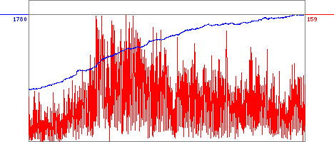
Trafic de la liste users@maven.apache.org – en rouge le nombre de messages et en bleu le nombre d’inscrits.
Autre indicateur, le trafic sur le site web maven.apache.org. Les Figures 15-02 et 15-03 affichent le compte rendu des visites pendant un mois, ce qui donne une bonne idée du nombre d’utilisateurs de Maven amenés à configurer leurs plugins (le site web étant la principale source d’information sur cet aspect). La Figure 15-04 indique le nombre de téléchargements de Maven au cours de l’année, toutes versions confondues. Ici encore, les chiffres démontrent une très large communauté.
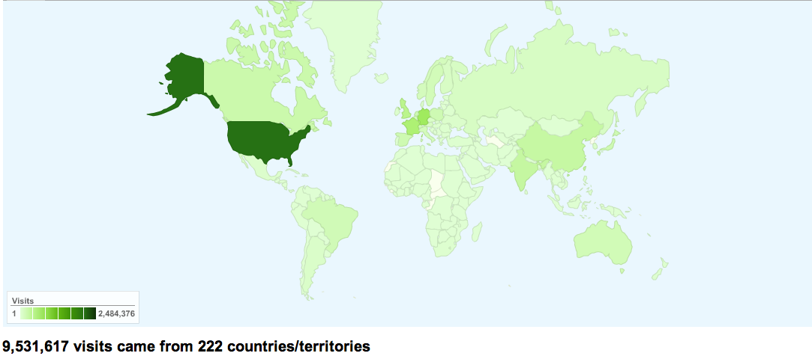
Origine géographique des visiteurs de maven.apache.org.
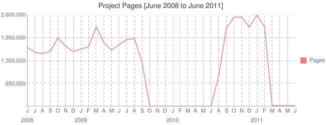
Trafic sur le site web maven.apache.org.
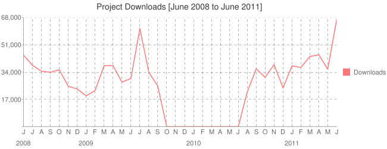
Téléchargements mensuels de Maven sur un an, toutes versions confondues.
Si vous choisissez Maven, vous ne serez donc pas tout seul et vous trouverez rapidement des collègues utilisant le même outil. Nous avons peut-être tous tort par rapport à une autre solution parfaite ou presque, mais au moins nous pouvons nous serrer les coudes et avancer ensemble.
L’équipe de développement
Arnaud poursuit en présentant le cœur du projet Apache Maven, ceux qui le développent et dont nous dépendons finalement.
Maven, c’est aujourd’hui 55 développeurs, dont une bonne vingtaine très actifs en 2009, et une très longue liste de contributeurs qui rapportent des bogues, proposent des correctifs ou discutent des évolutions. Maven, c’est surtout un très large choix de plugins qui impliquent tout autant de développeurs de toutes origines.
Cette équipe motivée est à l’origine de plusieurs ouvrages, dont celui que vous tenez entre les mains, auquel vous pouvez ajouter le Definitive Guide et Better Build with Maven, tous deux disponibles en ligne gratuitement, et Apache Maven 2 Effective Implementations, proposé en ligne, chapitre par chapitre, au fur et à mesure de sa rédaction.
Limité au monde francophone, Maven c’est encore dix membres bien de chez nous qui ont participé à cet ouvrage en corrigeant nos erreurs. C’est aussi une volonté de communiquer avec les utilisateurs, comme l’a démontrée notre présence active dans les Java User Groups.
Maven est donc un projet très dynamique, et si les versions ne s’enchaînent pas aussi vite qu’on pourrait le désirer, c’est surtout parce que la qualité de nos livrables est constamment améliorée et qu’une politique très scrupuleuse (et très complexe) de compatibilité avec l’existant est suivie.
L’adoption en entreprise
Votre Honneur, j’appelle à la barre notre premier témoin : Jérôme.
Jérôme a testé Maven suite à nos recommandations pour lancer une nouvelle application et former son équipe. Il est en quelque sorte notre cobaye pour valider l’adoption de Maven sur d’autres projets.
Pourquoi Maven réussit-il une percée en entreprise ? Nous l’avons vu au cours des chapitres qui ont précédé, Maven est un fédérateur d’outils. La même ligne de commande permet de construire n’importe quel projet Maven bien configuré.
Quel chef de projet ne rêve pas de pouvoir affecter un nouveau développeur dans l’urgence sans devoir perdre dans le même temps une ressource, le temps de lui expliquer toutes les ficelles du projet ? Avec des projets correctement construits avec Maven, le passage d’un projet à un autre se résume à un checkout depuis le gestionnaire de code source. Jérôme abonde dans ce sens en expliquant comment nous avons pu lui apporter une aide rapide en jetant juste un rapide coup d’œil sur son projet. Via une structure comparable, il est plus facile de s’approprier en peu de temps un projet développé ailleurs.
Jérôme souligne ensuite les bonnes pratiques que véhicule Maven : une gestion stricte des dépendances, des tests qui font corps avec le développement et non comme tâche à part, l’intégration des outils de qualité logicielle, le support de l’intégration continue, etc. Pour avoir trop souvent piloté des projets peu scrupuleux et réalisés sans filet, reposant sur les épaules de quelques personnes, il apprécie d’avoir enfin un cadre solide et homogène.
En entreprise, Maven est un élément clé de ce socle qu’on appelle software factory, qui vise à proposer une solution industrialisée, reproductible et stabilisée pour les développements logiciels, sortant de plusieurs décennies de bricolage. Jérôme, en s’inspirant de notre exemple, est en train de mettre en œuvre le même type d’outillage et bénéficie des infrastructures que nous avons déjà mises en place : gestionnaire du dépôt d’artefacts, serveur d’intégration continue.
L’avenir de Maven
Mission impossible ?
Bonjour, Monsieur Phelps. Votre mission, si vous l’acceptez, est de présenter à nos lecteurs l’avenir de Maven. Comme tout projet open source, son développement n’est guidé par aucun plan gravé dans le marbre et toute annonce préliminaire peut être contredite par les faits. Pour éviter à nos lecteurs de se bâtir une opinion sur des informations erronées, prenez soin d’annoter les données les plus spéculatives de votre logo Impossible Mission Force.
Si vous ou l’un de vos agents était capturé ou tué, les auteurs nieraient avoir eu connaissance de vos agissements. Bonne chance, Jim…
Cet encadré s’autodétruira dans dix secondes… PChittttttt !
Maven 2.x
Maven 2 ne bénéficiera au mieux que de quelques versions correctrices, et encore sous réserve que des développeurs prennent le temps de se pencher à son chevet ! Maven 3.x est la branche active qui bénéficie de toute l’attention de l’équipe.
Les équipes qui utilisent Maven 2.x seront encore nombreuses, soit pour des raisons d’incompatibilité sur un projet ancien, soit par méconnaissance de la compatibilité des versions successives de Maven (ou par manque de temps pour s’en assurer). Quelle que soit la raison qui vous pousse à continuer d’utiliser Maven 2.x, n’attendez rien de nouveau de ce côté. Cependant, pour nos lecteurs qui seraient contraints à cette version pour une raison qui leur appartient, un rapide état des lieux :
Maven 2.1
Maven 2.1 a été la première version à profiter de cet élan. Les nouvelles fonctionnalités qu’il apporte peuvent sembler superficielles, mais l’importance est avant tout le redémarrage de cette branche de développement en parallèle de Maven 3. Maven 2.1 introduit :
-
La possibilité de sécuriser les mots de passe définis dans le fichier settings.xml de l’utilisateur, et donc un peu trop ouvertement exposés aux regards indiscrets. Ceux-ci peuvent désormais être chiffrés et la clé stockée, par exemple, sur une clé USB et donc inexploitable en l’absence de son utilisateur légitime (pensez au cas de vol de l’ordinateur portable d’un développeur Maven, un quidam pourrait venir l’enrichir et le corriger à nos dépens).
-
Le téléchargement des dépendances en parallèle. Cela n’a pas un grand intérêt pour le développeur qui ne va télécharger ses dépendances qu’une seule fois – quoique, lors de la première utilisation, quand Maven « télécharge la moitié d’Internet », cela puisse se sentir. Sur un serveur d’intégration continue, par contre, si on désire utiliser un dépôt local vierge avant chaque construction pour faire les choses bien proprement, le gain de temps peut être significatif.
-
La construction multimodule par morceaux. Il est possible de demander à Maven 2.1 de ne construire que certains modules du projet, et éventuellement tous les modules dont il dépend ou encore tous les modules qui dépendent de lui. Cette fonctionnalité était déjà présente sous forme d’un plugin dédié reactor, elle est désormais disponible au cœur de Maven.
-
Sans oublier une nette amélioration des performances sur l’initialisation de Maven dans un contexte avec de nombreux modules.
Maven 2.2
Deuxième de la lignée, Maven 2.2 est apte à :
-
Corriger plusieurs bogues, dont un lié à la manipulation des ${variables} lorsque le POM est installé dans le dépôt local ou déployé. Cette fonctionnalité introduite dans Maven 2.1.0 a entraîné des régressions sur certains plugins, notamment celui de signature GPG – elle a donc été retirée au profit d’une gestion plus stricte.
-
Apporter quelques améliorations mineures.
C’est tout ? Ça fait un peu maigre, même pour une version mineure. On dirait plutôt une petite version corrective ! La raison principale de ce changement de version est que Maven 2.2 nécessite désormais Java 5. La compatibilité avec Java 1.4 a été longtemps conservée pour ne pas déranger les utilisateurs, Java 5 est nécessaire pour corriger certains bogues. Cela n’interdit pas de construire des projets pour Java 1.4, voire des versions antérieures, mais le poste de développement doit disposer d’un JDK 5 pour exécuter Maven lui-même.
Maven 3.x
Maven 3 a longtemps été connu sous le nom de Maven 2.1. Son développement correspond à une refonte profonde du cœur de Maven, travaux importants menés de manière très active par l’équipe de Sonatype, société fondée par Jason Van Zyl, développeur initial de Maven. Cette reprise lourde du code a, dans un premier temps, paralysé les évolutions sur Maven 2.0 car tout le monde attendait plus ou moins la suite. Les choses ne vont cependant jamais assez vite et l’ex-Maven 2.1 a été renommé Maven 3.x pour bien indiquer la rupture et laisser de la place pour de nouvelles versions de Maven 2.
L’un des plus gros chantiers de Maven 3, et qui explique en grande partie son retard, est la compatibilité avec l’existant. Un ensemble de tests d’intégration a été écrit pour mettre en scène Maven confronté à la plupart de ses cas d’utilisation. Projets simples, multimodules, plugins plus ou moins complexes, sont ainsi exécutés en boucle par un harnais de sécurité antirégression de plus de 450 tests. Ce n’est pas une garantie absolue, mais c’est une sécurité que peu de projets peuvent proposer.
La seconde difficulté dans le développement de Maven 3 touche à la pérennité des API internes de Maven, utilisées par certains plugins, et que l’équipe de développement voudrait pouvoir retravailler. La limite entre public et interne dans Maven 2 est en effet assez floue, et pour traiter certains besoins particuliers, les développeurs de plugins ont parfois fait appel à du code assez profond de Maven 2. Sonatype a donc développé une couche de traduction entre les API historiques de Maven 2 et leur équivalent dans le code modernisé de Maven 3.
En résumé, Maven 3 c’est un peu un épisode spécial de Extreme makeover : Maven edition [58]. On prend votre outillage existant, mais on refait tout de la cave au grenier !
Quoi de neuf ?
Le changement le plus notable dans Maven 3 est la possibilité de l’intégrer dans un autre outil. Ceci ouvre la voie à de nombreuses utilisations en dehors de la ligne de commande classique que nous avons rencontrée jusqu’ici.
Maven 3 peut être intégré au sein d’un autre outil, et c’est ce que font nos IDE. Disposer d’un Maven « embarqué » leur permet de manipuler le POM, le cycle de vie, les plugins, et l’arbre de dépendance. Maven 3 peut ainsi se greffer à la construction incrémentale d’un projet Eclipse, c’est-à-dire ne procéder à la reconstruction du projet que pour les parties impactées par la dernière modification pour plus de réactivité. Lorsque vous éditez un fichier source, l’IDE ne va pas reconstruire tout l’espace de travail en effaçant tout l’existant, mais travailler par différence avec ce qui était déjà construit et juste recompiler ce qui est impacté par votre modification. Avec la gestion de la construction incrémentale et une bonne gestion du Maven intégré, il est possible de laisser l’IDE faire certaines de ces tâches tout en exploitant les plugins Maven pour d’autres, comme c’est déjà le cas pour la compilation du code source.
Olivier nous signale d’ailleurs que notre IDE n’est pas le seul à exploiter cette possibilité d’embarquer Maven en interne. Notre serveur d’intégration continue fait de même ! En pouvant manipuler Maven comme un composant interne, Hudson peut lui greffer ses propres extensions et proposer une intégration fine. Les builds Maven qu’il exécute sont alors mis sous surveillance et Hudson peut nous indiquer l’avancement de chaque module du projet.
Mais ce ne sont que quelques exemples. L’intégration de Maven permet de construire des outils innovants, comme le shell Maven proposé par sonatype. Au lieu de la console de base de votre système, MavenShell propose une console avec coloration syntaxique, assistance à la saisie des mots clés, et maintien en mémoire des POM et des métadonnées de votre projet. Il en résulte un Maven plus réactif à vos commandes.
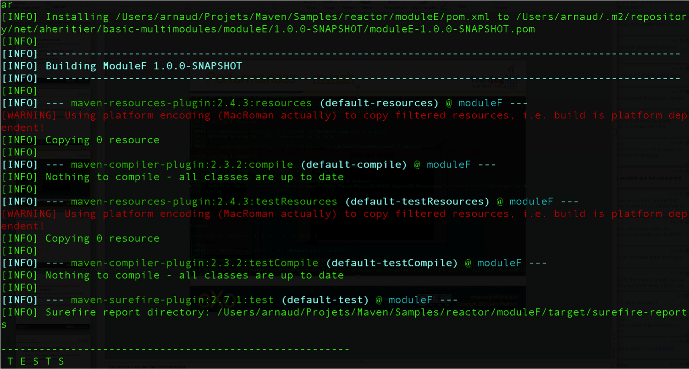
Sonatype MavenShell.
Maven 3 offre la possibilité pour le POM d’utiliser un format alternatif. Nous avons vu que le format XML actuel est particulièrement verbeux ; Polyglot Maven est une version dérivée de Maven, développée par Sonatype, visant à proposer une syntaxe différente du POM, basée par exemple sur Groovy, Clojure, ou Scala – pour exprimer les mêmes métadonnées, comme le monte le Listing 15.2. Attention cependant, l’outillage avancé permettant d’éditer le POM dans votre IDE n’est pas compatible avec cette syntaxe.
// pom.scala
project( "com.macompagnie:monprojet:1.0-SNAPSHOT" { proj =>
// ajoute la bibliothèque scala et le plugin scala compiler
proj includeScalaSources "2.7.7"
proj dependency "apache-httpclient:commons-httpclient:3.0.1"
}Cette évolution vise un public très précis : ceux qui n’utilisent pas Maven, mais travaillent dans un langage de développement tournant sur la JVM. En leur proposant d’exprimer le POM dans leur langage et avec les possibilités d’extension qui lui sont propres, Polyglot essaie de couper l’herbe sous le pied des outils alternatifs.
Maven 3.1
Maven 3 permet de désolidariser Maven (l’outil) de la lecture du modèle POM : l’élément modelVersion va pouvoir jouer son rôle et permettre d’introduire des évolutions dans ce format, sans empêcher les utilisateurs de l’utiliser depuis une autre version de Maven – il suffira d’obtenir depuis le dépôt la version associée du modèle. On attend ainsi la simplification de certaines opérations pénibles sur les POM, comme l’exclusion globale d’un artefact (plutôt que de devoir répéter des dizaines de fois le même bloc exclusions.
Autre évolution prévue de longue date : les mixins. Ils vont permettre de récupérer une configuration maven depuis un fichier POM sans passer par un héritage. La composition d’un POM se fera alors par composition de mixins ; un mixin pour la gestion de la persistance Hibernate, un mixin pour la gestion de l’application web, un mixin pour notre outillage Q&A, etc.
En parallèle du développement de Maven 3.x, Sonatype développe une offre globale de forge logicielle, incluant le build, l’intégration continue, l’hébergement des binaires, l’approvisionnement des plateformes de développement et la mise en production. De nombreuses évolutions dans Apache Maven seront donc issues de ces développements.
Sonatype Maven
Sonatype a annoncé lors de la conférence EclipseCon 2011, par la voix de Jason van Zyl son responsable technique et fondateur, ses projets pour le développement de son offre autour de Maven, Eclipse et Hudson. La diapo présentée en figure 15-06, extraite de cette présentation, définit la position de Sonatype par rapport au projet Apache Maven. La fondation Apache utilise un gestionnaire de code source Subversion, qui est intégré en miroir sur un compte GitHub. Sonatype utilise l’impressionnante puissance de Git pour assurer la synchronisation de ses développements internes avec la version open source Apache. Cela va permettre à Sonatype de poursuivre ses objectifs d’innovation et d’avancer au rythme qu’il désire imposer au projet, tout en conservant le lien avec le projet et le mode de fonctionnement de la fondation Apache. Ainsi, si ces annonces concernent avant tout les outils de Sonatype, dont certains sont disponibles en double licence open source / propriétaire, une partie sera reversée à la communauté et viendra enrichir le socle technique Maven.
Figure 15-07 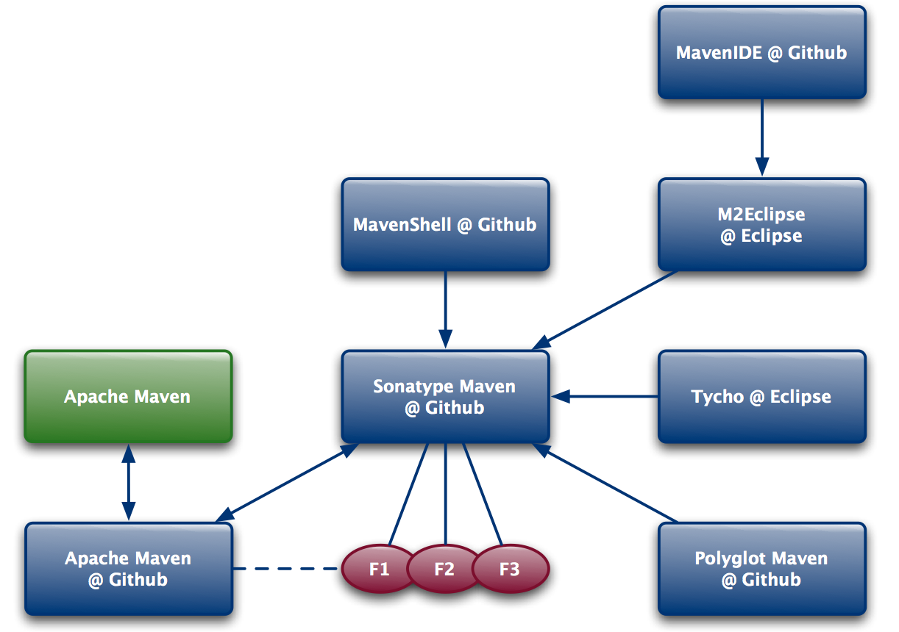
le positionnement de Sonatype par rapport au projet de la fondation Apache
Pour ce qui concerne Maven, l’éditeur affiche ses ambitions :
D’une part, la généralisation de l’utilisation des annotations Java 5 et de l’injection de dépendance JSR-330. Nous l’avons déjà croisé au chapitre 11 lorsqu’Olivier est venu dépoussiérer le code de notre plugin.
La norme JSR-330 est intégrée à JavaEE 6 et apporte à la pile Java d’entreprise l’injection de dépendance démocratisée par le succès de SpringFramework. Cette norme va rapidement devenir la référence sur le sujet, déjà supportée par Spring 3 et Google Guice même en dehors du contexte JavaEE. L’idée de Sonatype est de capitaliser sur ce succès en appliquant ce modèle aux plugins Maven, ainsi qu’à ses autres outils que sont Nexus et Hudson. On retrouvera ainsi dans tous nos développements la même logique de liaison entre les composants via une simple annotation @Inject.
Autre annonce, un gros effort d’intégration de Maven dans Eclipse à travers le projet m2eclipse. En dehors de l’amélioration du plugin, de son ergonomie et de ses fonctionnalités, Maven peut évoluer pour mieux supporter le mode incrémental d’Eclipse, à savoir ne plus partir de zéro à chaque nouveau build. L’IDE pourrait tirer parti de ces évolutions, mais aussi tout l’écosystème Maven. L’intégration continue pourrait par exemple elle aussi utiliser un build incrémental pour plus de réactivité.
Sur la gestion des dépendances et l’accès aux dépôts, Sonatype a déjà pris la main en intégrant dans Maven 3 sa brique Aether. Développée sous licence Eclipse dans les labos Sonatype, celle-ci remplace intégralement le code équivalent de Maven 2. De nombreuses évolutions sont attendues sur ce composant :
-
Le support des accès concurrents dans le dépôt local. Cela est nécessaire pour permettre l’exécution parallèle de Maven et des autres outils basés sur Aether.
-
L’intégration avec m2eclipse, ce qui signifie le support dans Aether des dépôts OSGi P2 d’Eclipse et le modèle de version associé. Cette évolution permettra à terme de créer des passerelles entre les deux grands modèles de dépôts d’artefacts et d’approvisionnement de bibliothèques du monde Java. Avec le projet JigSaw (« java modules ») qui vise à intégrer cette fonctionnalité directement dans la plateforme Java, ce chantier risque de faire couler beaucoup d’encre.
-
Utiliser un client HTTP asynchrone permettant à Aether de mieux communiquer avec les dépôts distants. En parallélisant les requêtes, Aether peut répondre plus rapidement aux demandes de résolution des dépendances. Plutôt que de démarrer de nombreux processus, les entrées/sorties asynchrones permettent d’utiliser juste ce qu’il faut de ressources.
-
Une dérivation du client HTTP asynchrone dédiée à Maven, utilisant l’API Wagon définie par Maven pour le déploiement d’artefacts dans un dépôt. Cette API remonte à Maven 2 et a été dérivée pour supporter HTTP, SCP, WebDav, FTP, les partages windows SMB et même SVN ! Plutôt que de réinventer une nouvelle API, Sonatype préfère conserver cette façade et travailler sous le capot pour en améliorer les performances.
Sonatype prévoit aussi d’autres évolutions, sous forme de points d’extension et de modèle événementiel, inspiré par les besoins d’intégration de m2eclipse. Il ne s’agit évidemment que des plans annoncés, qui peuvent évoluer et s’enrichir en fonction du contexte et des difficultés que rencontreront les équipes de développement.
Maven 4 ?
Arnaud est tout émoustillé par ces nombreuses annonces, et décide de se lancer à son tour dans le jeu des prédictions. Il nous annonce alors la fusion des projets Apache Maven et Gradle, prenant la rigueur du premier et la syntaxe moderne du second, et nous présente le tout premier écran de Graven, l’outil de build ultime. Hum… décidément, tout le monde ne peut pas faire partie de l’équipe de Mission Impossible.
Figure 15-08
Graven, une création originale d’Arnaud visant à marier Maven et Gradle
À qui appartient Maven ?
Le comité est presque convaincu, mais il a tout de même quelques réticences. L’outil semble bon, promis à un bel avenir, mais dans les mains de qui mettons-nous l’avenir de ce qui est en train de devenir le projet n° 1 de Geegol ?
La fondation Apache
Raphaël se fait un plaisir en expliquant le monde open source et les garanties intrinsèques qu’apporte ce modèle.
Maven est l’un des nombreux projets hébergés par la fondation Apache, surtout connue pour son excellent serveur HTTP (à tel point qu’on parle souvent d’un serveur apache, sans plus de précision). Cette fondation assure par son statut l’indépendance des projets hébergés vis-à-vis d’un éditeur et encourage le développement communautaire.
Un projet Apache est conduit par un comité de pilotage, pour lequel chaque membre dispose d’un droit de veto sur les décisions prises, et où chaque décision majeure doit être soumise au vote et obtenir au moins trois avis favorables. Cette règle de conduite assure la stabilité des projets et le soutien de ses membres majeurs. Les autres membres du projet, qui ne font pas partie du comité et ne disposent pas d’un droit de veto, peuvent exprimer leur avis librement lors des votes. Il est rare que la décision finale ne soit pas le reflet d’un compromis accepté par tous.
Maven s’est développé dans cet esprit, chaque grande décision étant soumise à la communauté des développeurs et reflétant leurs choix communs. Au sein de la fondation Apache, il n’y a donc pas de propriétaire du projet, en dehors du comité dont les membres ont des attaches très variées.
C’est une distinction notable par rapport à d’autres projets open source dont les décisions ne sont pas si ouvertes. SpringFramework, par exemple, est un projet ouvert aux suggestions de ses utilisateurs et dont le code est libre, mais dont le développement est géré par la société SpringSource [59]. L’excellente équipe de développeurs que SpringSource a réussi à réunir propose un outil de grande qualité, tandis que le soin apporté pour répondre aux rapports d’anomalies et aux suggestions de la communauté d’utilisateurs est exemplaire. L’ouverture de ce projet reste cependant un petit cran en dessous de ce que peut proposer un logiciel hébergé par la fondation Apache et soumis à une gestion communautaire multipartite.
Sonatype
Nicolas poursuit en constatant une certaine incrédulité de notre auditoire. Le monde merveilleux de l’open source tout gratuit, où des développeurs-bisounours-bénévoles offrent leur temps et leur code à la communauté, les laisse perplexes. Derrière Maven, comme partout, il y a des gens à payer et des machines qui tournent.
Vous aurez noté dans les pages qui précèdent la très forte adhérence entre le développement de Maven et la société Sonatype. Maven est en effet un projet complexe, englobant des solutions techniques très spécifiques – pensez, par exemple, à la gestion de chargeurs de classes isolés pour chaque plugin, concept qui reste assez théorique pour une grande majorité de développeurs.
Parce que Sonatype met des développeurs de talent à temps plein sur le développement de Maven, le prix à payer pour suivre les développements en tant que simple contributeur est démesuré. Les technologies engagées sont nombreuses et nécessitent un gros investissement en temps. L’évolution du développement est rapide et peu documentée, il est donc difficile de se faire en peu de temps une idée précise des tâches en cours et de leur avancement.
Maven est cependant un projet de la fondation Apache, dont nous avons vu les règles de conduite, et, à ce titre, on peut trouver choquant de le voir mêlé de si près au nom d’une seule société.
En fait, en creusant un peu, on constate même rapidement que Sonatype est bien plus qu’un contributeur de Maven : des composants majeurs de Maven 3 ne sont pas développés et hébergés par la fondation Apache, mais sous le compte GitHub de Sonatype !
Un peu de stratégie
Parmi la refonte réalisée pour Maven 3, un élément clé est la réécriture complète de la gestion des dépendances. Après deux tentatives infructueuses, Sonatype a proposé un développement interne, Aether [60], hébergé en open source dans sa propre forge, et contribué à la fondation Eclipse. Il en est de même de Sisu [61], qui permet à Maven 3 de fonctionner sur la base du conteneur Google Guice tout en restant compatible avec Plexus, qui jouait ce rôle dans Maven 2 et est encore très présent dans de nombreux composants.
Sonatype, qui pilote donc seul ces projets cruciaux pour Maven, a choisi d’en faire une solution open source. Bien sûr, Sonatype prend une longueur d’avance sur tout concurrent qui voudrait occuper ce terrain, et s’ouvre les portes de la fondation Eclipse et la reconnaissance associée, mais la démarche doit tout de même être soulignée. De nombreuses autres sociétés, moins imprégnées par le modèle open source, n’auraient pas suivi cette voie et auraient tenté de monnayer leur compétence.
Verrouiller l’accès à Maven serait contre-productif. Une majorité des utilisateurs – et donc des clients potentiels – se tournerait vers des solutions libres, éventuellement moins bien intégrées. Le monde Java est particulièrement marqué par le modèle open source, et le seul argument financier ne suffit pas à expliquer cet engouement. Aller contre les attentes du public pour une société comme Sonatype serait comme couper la branche sur laquelle on est assis. Par contre, une fois devenu le standard de fait, monnayer l’expertise et le support autour d’un outil devenu stratégique pour beaucoup d’entreprises est un avantage commercial sans équivalent, quitte à se froisser un peu avec les membres de la fondation Apache.
Open source
En dehors de cette considération purement stratégique, il ne faut pas non plus oublier qui constitue l’équipe de Sonatype. Vous avez affaire à des gens techno-addicts, pas à des financiers. Des gens qui se passionnent pour le code et les nouveautés technologiques, et qui ne laisseraient à personne le soin de coder à leur place. Ces gens sont imprégnés par le modèle open source et n’auraient pas l’idée de lancer un nouvel outil en dehors de cet esprit. Ils sont au cœur du projet qu’ils ont construit et vu s’imposer, rien ne leur ferait plus mal que de voir leur bébé devenir une marchandise de plus.
Par contre, ils n’aiment pas forcément se faire dicter leur conduite par des personnes qui n’apportent rien de plus que des critiques. Aussi, le modèle de développement Apache, basé sur le compromis et le consensus, est régulièrement mis à mal par des décisions unilatérales. Autant le code reste ouvert et protégé par le mécanisme de licences, autant l’ouverture propre au développement communautaire n’est pas systématique.
Cependant, l’équipe de développement de Maven ne se résume pas à ces quelques personnes. L’équipe complète [62] compte des individus d’origines très variées et rattachés à des employeurs de toutes sortes. Pris individuellement, ils sont peu visibles, mais, comme pour tout projet open source, c’est ensemble qu’ils ont donné vie au projet Maven, et en particulier à son large écosystème de plugins.
La garantie par l’open source
Si Sonatype se comporte aujourd’hui comme un exemple dans sa démarche de contribution à l’open source, qu’en sera-t-il à l’avenir ? Que deviendrait Maven si cette société venait à être rachetée par un groupe aux intentions plus lucratives ? Après tout, en moins d’un an, nous avons vu Oracle racheter Bea puis SUN pendant que VMware rachetait SpringSource qui venait d’absorber G2One. Qu’en pensent ceux qui ont misé sur la machine virtuelle Java alternative JRockit et qui ne peuvent même plus la télécharger sans passer par le service de support d’Oracle ?
Ne perdons pas de vue deux éléments clés :
-
Maven est développé sous licence libre Apache. Quoi qu’il arrive, personne ne pourra vous réclamer de droits si vous prenez ce code pour en faire ce que bon vous semble. En particulier, si une société investissait massivement dans le développement pour créer un Maven Professional payant (ce que la licence Apache n’interdirait pas), cela ne ferait que vous priver des fonctionnalités ajoutées à la version libre. Si la différence est réellement une plus-value significative, le prix qui en serait demandé serait peut-être justifié. Dans le cas contraire, la version libre restera libre et pourra tenter de développer les mêmes services, voire mieux, ce qui s’est déjà vu.
-
Le développement de Maven est porté par ses développeurs. Le droit à modifier le code source de Maven est attribué à des personnes reconnues pour la qualité de leur contribution à la communauté et pour leur capacité à travailler selon un modèle communautaire. En aucun cas, une société ne peut prétendre posséder Maven ou son équipe de développement (à moins de tous les embaucher). Des développeurs open source qui verraient leur société prendre une position trop lucrative ne manqueraient pas d’aller voir ailleurs, emportant avec eux la clé d’accès au SVN de Maven. Sauf crise grave sur le marché de l’emploi en informatique, il restera toujours des développeurs indépendants ou raisonnablement liés à leur société pour faire de Maven un projet libre.
-
Dans le pire des cas, rien n’interdit un autre groupe de développeurs, libres ou liés par une société concurrente, de repartir du code existant et de créer un nouveau projet dérivé de Maven, comme IBM l’a fait avec IBM HTTP Server en partant de Apache HTTPd. Cette situation extrême a déjà été rencontrée dans le monde open source et est qualifiée de fork. Il s’agit cependant d’une situation rare, une sorte de solution de la dernière chance lorsque des conflits internes ne peuvent être réglés à l’amiable, mais ce n’est pas une porte de sortie théorique : elle a déjà été employée à de nombreuses reprises. Cela reste une sécurité non négligeable que tout projet open source offre : si le développement commence à prendre une voie qui déplaît à une partie de l’équipe, ils peuvent faire le choix de mettre en pratique leurs propres idées, certes avec des effets néfastes sur l’image du projet, mais démontrant ainsi la force du modèle libre. Jenkins est né de cette façon, comme LibreOffice ou ChiliProject…
Conclusion
Le comité nous remercie et s’apprête à délibérer. Nous n’aurons sa conclusion qu’après quelques jours (ce sont des gens très occupés) : feu vert.
Maven ne répond pas à toutes les exigences sans quelques efforts, et il ne sait pas non plus faire le café. Son utilisation nécessite un apprentissage, peut déraper vers un grand n’importe quoi si on n’y fait pas attention et nécessite une prise de conscience de son fonctionnement. Si vous lisez ces lignes, vous en êtes probablement déjà convaincu.
Maven est aussi un projet vivant, toujours ouvert à de nouvelles idées, même si elles n’aboutissent pas en quelques semaines. Un outil utilisé par des milliers de projets ne se modifie pas à la légère. L’avenir de Maven est encore flou, toute prédiction de la disponibilité des prochaines évolutions étant totalement aléatoire, cependant il n’est pas près de s’arrêter en si bon chemin. La communauté ne cesse de croître, supportée par de nouvelles sociétés dont il est le cœur de métier. Son succès en entreprise démontre un réel besoin d’homogénéité des outils de développement, et de ce fait sa logique interne fait mouche. Le modèle open source ne fait plus peur comme il y a quelques années, et ceux qui sont à sa base ne sont plus des idéalistes barbus en sandales-chaussettes, mais des professionnels pragmatiques.
Là où les outils basés sur des scripts donnent de la flexibilité, Maven oppose une logique de maîtrise du processus et de ses étapes clés. Le nombre de lignes nécessaires pour réaliser telle tâche n’a aucune importance, ce qui compte c’est que l’outil soit cohérent. La concurrence commence à suivre également cette piste, apportant des idées nouvelles qui pourront tout autant profiter à Maven.
Nous sommes convaincus que Maven a encore de très beaux jours devant lui. Maven 3 promet des évolutions importantes qui feront sauter de nombreux verrous, comme en témoigne son intégration dans nos IDE. Quant à l’armada de plugins qui gravitent autour, elle ne fait qu’augmenter et prend une place croissante dans les développements de nouveaux outils. Jusqu’ici, il n’était pas envisageable de proposer un outil sans une tâche Ant. Il devient délicat de ne pas proposer également un plugin Maven, sous peine de crouler sous les réclamations répétées des utilisateurs.
Chapitre 16 : Au-delà de Maven
Maven nous a accompagnés pendant ces 14 chapitres en répondant à chaque fois à nos attentes. Nous avons dû parfois faire appel à des plugins très spécifiques ou introduire de larges portions de XML, mais rien de bloquant. Il reste cependant quelques domaines où la place de Maven reste contestée.
OSGi
OSGi est un monde à lui tout seul. Créé par le microcosme de l’informatique embarquée, avec des contraintes très spécifiques, il est devenu omniprésent en devenant la base technique de l’IDE Eclipse. SpringSource a choisi de l’accompagner en OSGi-fiant son framework et en lui développant une plateforme serveur dédiée.
OSGi a la particularité de prendre en charge la notion de dépendances, de versions, les conflits qui vont avec, et l’approvisionnement de la plateforme d’exécution à partir de dépôts spécifiques. Développer une application OSGi, c’est découvrir un monde très différent de ce que nous avons vu jusqu’ici avec Maven, et c’est ce que Pascal s’apprête à affronter.
Pascal vient de rejoindre notre équipe, car nous ajoutons une nouvelle corde à notre arc : le petit projet n’oublie pas la liste des courses a bien évolué, et nous sommes maintenant connectés aux systèmes d’information des boutiques partenaires qui préparent les courses de nos utilisateurs à l’avance (et en profitent pour glisser quelques pubs et coupons de réduction bien ciblés). Toute cette gestion suppose cependant un outillage riche et nous explorons une nouvelle piste, celle du client lourd ; Eclipse Rich Client Platform sera donc notre nouveau terrain de jeu !
Eclipse est basé sur la norme OSGi, qui définit un socle pour l’exécution de composants, la gestion de leur cycle de vie, l’injection de leurs dépendances, l’exposition de service, etc. OSGi a été conçu avec comme objectif de redéployer à chaud des modules (« bundle » dans le vocabulaire OSGi) en prenant en charge la reconfiguration de la plateforme et sans nécessiter de redémarrage. Le cahier des charges est ambitieux, mais a fait ses preuves depuis plus de 10 ans. Eclipse est construit sur cette base technique, et ses nombreux plugins peuvent ainsi se combiner pour enrichir toujours plus l’environnement.
Mais Eclipse ce n’est pas qu’un IDE, c’est avant tout une plateforme d’exécution et un moteur graphique, ce qui permet de développer des applications de gestion ou de modélisation sur un socle reconnu et avec un outillage conséquent. Pascal, très à l’aise dans cet écosystème, vient de « subir » notre formation interne à Maven et s’attaque donc à appliquer nos principes et notre outil à son environnement. Il part confiant, car de nombreux points que nous avons abordés lui sont familiers : déclaration des dépendances, identification des versions, gestion de conflits, packaging… toutes ces notions qu’OSGi propose lui aussi.
POM d’amour
Pascal tente dans un premier temps de monter un projet Maven tout neuf, pour construire la structure nécessaire à un bundle OSGi, qu’il puisse ensuite intégrer avec son environnement de développement habituel. Cette approche « POM-first » l’oblige à trouver un équivalent en termes d’outillage Maven pour gérer plugins, fragments, features, update-sites, et toutes ces subtilités qui font la particularité du développement Eclipse RCP.
OSGi utilise également le fichier MANIFEST, rappelez-vous, celui que nous avons rencontré au chapitre 2 et qui permet à un JAR d’indiquer des métadonnées sur son contenu, comme sa version. OSGi enrichit ce fichier pour ajouter les informations d’identification du bundle, de version, de dépendances entre bundles, de services exposés ou consommés. Une partie de ces informations est redondante avec ce que nous déclarons habituellement dans le POM. Ici aussi, il va falloir trouver l’outillage pour transcrire les déclarations du POM Maven dans le format attendu par OSGi.
Les recherches de Pascal pour identifier les plugins Maven adéquats l’amènent au projet Apache Felix (une implémentation d’OSGi) et à son plugin apache-felix-maven-bundle-plugin-bnd. Celui-ci incorpore l’outil bnd [63], qui génère le MANIFEST OSGi à partir d’un projet Java standard, en déclarant simplement les packages privés et exportés. Ce plugin nous propose donc de transcrire le MANIFEST OSGi dans le formalisme XML du POM, comme le montre le listing 16.1.
|
Il existe un autre outil développé sur le même principe par SpringSource, bundlor (http://www.springsource.org/bundlor). Si vous voulez suivre cette piste, jetez y un œil, car l’équipe de Spring s’en est servi avec succès pour convertir en bundles une large gamme de projets, dans le cadre du projet Spring Dynamic Modules. |
<plugin>
<groupId>org.apache.felix</groupId>
<artifactId>maven-bundle-plugin</artifactId>
<version></version>
<extensions>true</extensions>
<configuration>
<instructions>
<Export-Package>fr.noubliepaslalistedescourses.api</Export-Package>
<Private-Package>fr.noubliepaslalistedescourses.*</Private-Package>
<Bundle-Activator>fr.noubliepaslalistedecourses.Activator</Bundle-Activator>
</instructions>
</configuration>
</plugin>Ce plugin permet de convertir assez facilement un projet Java classique en bundle OSGi, par contre Pascal rencontre encore quelques difficultés.
-
D’une part, son application Eclipse RCP n’utilise pas uniquement des bundles, mais les concepts propres à Eclipse que sont les features, update-site et products. L’outillage est donc encore incomplet.
-
D’autre part, Pascal est habitué au très bon outillage d’Eclipse pour gérer finement le MANIFEST, et devoir reporter toutes ces infos dans le pom.xml sous peine de voir Maven écraser sauvagement sa configuration ne lui plait qu’à moitié.
Retour au PDE
Pas vraiment satisfait, Pascal tente une seconde approche. Il part donc de son environnement de développement classique pour développer un plugin, Eclipse PDE (Platform Development Environment) et tente d’y ajouter nos bibliothèques shoppinglist. Un Bundle OSGi a deux options pour intégrer une dépendance :
-
faire référence à un autre bundle, en supposant donc que la bibliothèque cible soit prévue pour une intégration OSGi, ce qui n’est pas notre cas ;
-
contenir directement le JAR de la bibliothèque.
La figure 16-01 montre par exemple le bundle Apache Ant, disponible par défaut avec votre installation d’Eclipse. Ce plugin incorpore l’outil Ant et ses dépendances dans son répertoire /lib. Pour être en mesure de construire un bundle, Pascal va donc devoir configurer Maven pour reproduire cette structure, à l’aide du plugin maven-dependency-plugin et de sa tâche copy-dependencies.
Figure 16-01
Le bundle Apache Ant dans une distribution Eclipse
Eclipse dispose d’un outillage complet pour le packaging des bundles, qu’il va falloir intégrer dans notre build Maven. Comme nous l’avons fait de nombreuses fois déjà, nous partons en quête du plugin adéquat et – bingo – trouvons rapidement le plugin pde-maven-plugin [64] du projet Mojo. Ce plugin lance Eclipse en mode « headless » (sans interface graphique) et exécute la chaîne d’assemblage du bundle.
Après de longues, trop longues heures de mise au point, Pascal arrive enfin à construire son bundle avec Maven. Tout cela lui semble tout de même bien compliqué pour un résultat sans grande plus-value.
Tant pis pour Maven !
La semaine suivante, Pascal prend part à notre stand-up hebdomadaire pour nous exposer ses progrès. Il lâche le morceau : la solution qu’il a retenue, c’est de ne pas utiliser Maven… Indignation, hurlements, la cacophonie qui s’en suit ne permet pas à Pascal de terminer sa phrase. Cependant, le calme qu’il affiche semble montrer qu’il ne craint pas pour sa période d’essai et a donc quelque chose à ajouter. Nous finissons donc par l’écouter. Son argumentaire est le suivant :
-
Maven comme OSGi gèrent la résolution de dépendances. Celui d’OSGi est cependant très spécifique (Pascal hésite à dire « meilleur », mais ne veut pas en rajouter pour le moment) et apporte des fonctionnalités propres aux besoins du développement Eclipse RCP qui n’ont pas d’équivalent avec Maven.
-
Tout l’outillage de développement Eclipse PDE est basé sur l’édition du fichier MANIFEST. Même en développant notre propre plugin Maven, passer par le POM pour gérer ces informations ferait perdre sensiblement en productivité.
Admettons, et alors ? Pascal nous montre alors le fichier POM qu’il a utilisé pour construire le prototype de notre client lourd, présenté au listing 16.2.
<project>
<modelVersion>4.0.0</modelVersion>
<parent>
<groupId>com.geegol.shopinglist</groupId>
<artifactId>rcp-parent</artifactId>
<version>1</version>
</parent>
<artifactId>com.geegol.shopinglist.rcp-ui</artifactId>
<packaging>eclipse-plugin</packaging>
</project>Non, ne cherchez pas, il ne manque pas une page à ce livre, c’est bien tout ce qu’il suffit dans le POM pour gérer ce plugin Eclipse. Le secret de Pascal, c’est qu’il n’utilise pas le même Maven que nous : il utilise Sonatype Tycho.
Tycho
Maven 3
Tycho est un des nombreux projets satellites de Maven, sur lequel Sonatype a énormément investi. L’idée de Tycho est de couper la poire en deux : laisser Maven faire ce qu’il sait bien faire, et laisser Eclipse PDE gérer les aspects d’OSGi pour lequel il est imbattable. Cette hybridation est rendue possible par le socle technique Maven 3, qui isole beaucoup mieux que son prédécesseur chaque composant de Maven et permet donc de les remplacer par une version alternative. Tycho abandonne donc la gestion de dépendance traditionnelle de Maven pour utiliser celle d’OSGi. Les dépendances ne sont donc plus déclarées dans le POM mais dans le MANIFEST OGSi.
|
Tycho ne fonctionne donc qu’avec Maven 3. Le lourd travail de refonte technique entre Maven 2 et Maven 3 montre ici ses fruits : la souplesse de la plateforme technique de Maven 3 lui permet de s’adapter à des environnements très spécifiques et de s’enrichir de fonctionnalités puissantes. Si vous êtes contraint d’utiliser Maven 2, par exemple pour respecter des recommandations corporate (je vous laisse libre de juger de la pertinence de ce type de règles, mais vous devinez ce que j’en pense), les approches présentées aux paragraphes ci-dessus restent valides. Cependant, vous trouverez bien peu de documentation, et n’attendez pas un grand support sur les plugins associés. |
Pascal a un peu triché dans sa démonstration, car il a en réalité placé la configuration nécessaire dans le projet parent – petit cachotier va.
D’une part, le composant principal de Tycho, tycho-maven-plugin, qui se charge d’étendre et de reconfigurer Maven pour utiliser les mécanismes OSGi là où ils sont plus judicieux que le build Maven standard :
<plugin>
<groupId>org.sonatype.tycho</groupId>
<artifactId>tycho-maven-plugin</artifactId>
<version>0.9.0</version>
<extensions>true</extensions>
</plugin>Cette simple déclaration, déclarée comme extension, ajoute à Maven la gestion des cycles de vie eclipse-plugin, eclipse-feature et eclipse-repository. C’est globalement le même principe que nous avait montré François au chapitre 3 pour intégrer un développement Flex. Entre autres compléments au build que ce plugin incorpore, la gestion de dépendance est enrichie d’un nouveau format de dépôt, en plus du default et du legacy (dépôts Maven 1, obsolètes et plus supportés par Maven 3), le format p2. C’est ce qui permet à Pascal de référencer les bundles d’Eclipse Indigo, sur lequel est basé son client Eclipse RCP.
<repositories>
<repository>
<id>gallileo</id>
<layout>p2</layout>
<url>http://download.eclipse.org/releases/indigo</url>
</repository>|
Equinox P2 est le mécanisme d’approvisionnement de la plateforme OSGi Equinox qu’utilise Eclipse RCP, introduit avec la version 3.4 d’Eclipse « Ganymede ». P2 gère de multiples dépôts distants, la sélection de miroirs, le téléchargement en parallèle, la validation et gestion de conflits de versions… Autrement dit, c’est un concurrent farouche pour la résolution de dépendances de Maven ! P2 permet également de gérer des installations complètes, incluant les exécutables, et non seulement les bundles OSGi. P2 peut donc être utilisé pour assurer du déploiement d’application, ce que Sonatype met à profit dans son offre « developer onbard » permettant de mettre à disposition des environnements de développement prêts à fonctionner en un simple clic. |
Autre composant du cocktail, le plugin target-platform-configuration se charge d’identifier la plateforme OSGi cible. D’une certaine façon, il s’agit d’un équivalent du dépôt local Maven à la sauce OSGi, regroupant tous les bundles OSGi référencés pendant le développement. Tycho va ainsi initialiser la plateforme d’exécution du bundle, et peut pour cela exploiter le support des dépôts P2, ou bien le classique dépôt Maven, ou bien les deux, quand on aime on ne compte pas. C’est ce qui permettra par exemple d’accéder aux bundles OSGi de Spring qui sont distribués dans un dépôt Maven.
<plugin>
<groupId>org.sonatype.tycho</groupId>
<artifactId>target-platform-configuration</artifactId>
<version>0.9.0</version>
<configuration>
<resolver>p2</resolver>
<pomDependencies>consider</pomDependencies>
</configuration>
</plugin>Tycho identifie la version et la constitution de la plateforme OSGi/Eclipse sur la base des fichiers MANIFEST et feature.xml présents dans le projet de plugin. À partir de cela, il constitue le classpath et la configuration nécessaires à l’exécution de l’outillage.
Cet outillage est implicitement apporté par le packaging eclipse-plugin que Pascal a utilisé. Il associe au projet un cycle de vie particulier qui remplace celui que nous avons jusqu’ici toujours utilisé, et donc les plugins habituels du build Maven. La compilation du code Java est par exemple confiée à un plugin spécialisé, maven-osgi-compiler-plugin, qui tient compte des spécificités de la plateforme en termes de visibilité des classes déclarées dans les bundles. Comme le plugin maven-compiler-plugin, nous pouvons au besoin le déclarer explicitement pour enrichir sa configuration, par exemple activer le support Java 7, parce que mince, on est plus au Moyen Âge :
<plugin>
<groupId>org.sonatype.tycho</groupId>
<artifactId>maven-osgi-compiler-plugin</artifactId>
<version>0.10.0</version>
<configuration>
<source>7</source>
<target>7</target>
</configuration>
</plugin>De la même façon, l’exécution des tests passe par un plugin dédié maven-osgi-test-plugin, Eclipse PDE nous imposant de séparer physiquement les tests dans un bundle dédié pour ne pas polluer le MANIFEST du bundle principal.
Pascal nous a bluffés, et même si nous avons encore un peu de mal à admettre que notre magnifique gestion de dépendance Maven vient de se faire moucher, son build Eclipse RCP est propre, simple, fonctionnel, et lui permet de développer confortablement le client riche que notre marketing nous réclame avec insistance. Nous donnons rendez-vous à Pascal pour le prochain stand-up, et courons emprunter « Eclipse - Principe, patterns et plug-in » (chez le même éditeur) à la bibliothèque technique de Geegol pour une rapide mise à niveau histoire d’avoir l’air moins bêtes la semaine prochaine.
Quelques semaines plus tard, le travail de Pascal a bien avancé, et il nous présente maintenant son build complet, qui inclut désormais la production complète de l’application RCP, incluant de nombreux plugins, bundles et features pour répondre au moindre désir de nos clients. La petite nouveauté du jour, c’est le packaging de l’application pour chaque environnement cible. Une fois de plus, les plugins apportés par Tycho permettent de limiter cette tâche complexe à quelques déclarations simples, comme le montre le listing 16.3.
<plugin>
<groupId>org.sonatype.tycho</groupId>
<artifactId>maven-osgi-packaging-plugin</artifactId>
<version>0.9.0</version>
<configuration>
<packaging>eclipse-repository</packaging>
<productConfigurationFile>
shopinglist.product
</productConfigurationFile>
<environments>
<environment>
<os>linux</os>
<ws>gtk</ws>
<arch>x86</arch>
</environment>
<environment>
<os>win32</os>
<ws>win32</ws>
<arch>x86</arch>
</environment>
</environments>
</configuration>
</plugin>Par l’universelle commande mvn install, Pascal est désormais en mesure
de produire les versions Linux et Windows de notre client riche. Défis
relevés avec panache, merci Pascal !
Java Modules
Geegol Shopping List a reçu de la part du public un accueil sans précédent. Balayé Facebook, oublié Twitter, tout le monde ne parle plus que de ShoppingList, Shop comme disent les d’jeuns : « Je vais Shopper le dernier album de Riana ». Cette notoriété nous vaut une invitation pour présenter notre infrastructure à Devoxx, la grand-messe annuelle de la communauté Java, organisée avec brio sur une semaine complète par le Java User Group Belge. Lors de cette conférence, nous croisons de grands noms du monde Java, des éditeurs, des créateurs de projets open source, et bien sûr des centaines d’anonymes qui viennent s’abreuver de connaissance.
Nous faisons ainsi la connaissance de Mark [65], ingénieur chez Oracle. Il travaille sur un projet qui vise à modulariser la plateforme Java, nom de code jigsaw.
Depuis des années, Java évolue en ajoutant de nouvelles API, alourdissant toujours plus la plateforme. Malgré l’amélioration des techniques de compression, le runtime Java 6 pèse 14 Mégaoctets (sans parler du JDK qui dépasse les 60 Mo). Il en résulte que Java est lent à démarrer, car il doit charger un volume conséquent de classes, alors que très peu d’entre elles sont nécessaires pour la plupart des tâches. Un outil en ligne de commande Java n’a par exemple pas besoin de la couche graphique Swing !
Il en résulte également que les éléments de Java sont de plus en plus interconnectés, augmentant sa complexité et les difficultés de maintenance. Partant de ce constat, jigsaw vise à modulariser Java, pour le réduire au strict minimum et que chaque contexte d’utilisation puisse indiquer les briques qui lui sont nécessaires. Ce projet fait l’objet d’une spécification au sein du Java Community Process, qui standardisera le mécanisme de modularisation.
Pascal, s’étonne de l’enthousiasme de Mark à incorporer ce « nouveau concept » dans la plateforme Java. OSGi propose déjà cela depuis plus de 10 ans ! Quant à Arnaud, il s’interroge sur le fameux « mécanisme » que la spécification va normaliser. Modulariser c’est bien, mais comment va faire JigSaw pour identifier les modules et approvisionner l’environnement ? Après tout, c’est ce que fait déjà Maven avec les bibliothèques, P2 avec les bundles, et il semble peu probable que Java 8 incorpore Tycho.
Jigsaw
L’objectif de la JSR 294 est ambitieux, car il amène au sein de la plateforme un service qu’on avait jusqu’ici confié à notre outillage. Dans un premier temps, les travaux ont amené à envisager un nouveau système de packaging, les Java Modules (JSR 294). Les utilisateurs d’OSGi n’ont pas tardé à se faire entendre en moquant cette norme qui arrivait péniblement à la cheville de leur outillage déjà éprouvé. Cette piste a été gelée, et la JSR 294 a été revue pour élargir les participants et trouver une solution plus consensuelle.
Jigsaw vise à faire disparaître la notion de chemin des classes (classpath) au profit d’une approche déclarative et totalement automatisée. Mark nous présente un exemple de descripteur de dépendance :
module com.myapp @ 1.0.0 {
requieres org.foo >= 3.0;
requieres net.bar @ 1.1;
}
Ce n’est certes pas un fichier POM, mais à la syntaxe près, ça y ressemble tout de même fortement ! Mark nous indique que plusieurs versions d’un même module pourront coexister en mémoire, pour répondre aux contraintes de dépendances définies par chaque module. C’est en effet quelque chose qui est hors de portée de Maven, mais qu’OSGi gère de longue date.
Mark nous présente aussi le prototype que constitue jigsaw [66], et la commande jmod destinée à rejoindre le JDK. Mimant les outils de gestion de paquet qu’on trouve sur les systèmes Linux (rpm, deb) ou encore les environnements Ruby (gem), jmod permet d’installer un composant et ses dépendances :
jmod install org.openjdk.aggregator-1.0.jar
Hum, voilà qui nous laisse bien perplexes, en particulier Olivier qui se permet de citer jpkg, l’outil GNU/Linux qui permet de créer des paquets système à partir d’une bibliothèque Java. Bien qu’imbattable sur le terrain technique, nous ne voyons pas bien où Mark tente de nous emmener avec son projet.
À quoi ça sert ?
L’idée de la modularisation est séduisante. Nous avons en effet largement présenté l’intérêt de la gestion de dépendances, où chaque bibliothèque de haut niveau indique les composants plus fondamentaux qui sont nécessaires à son fonctionnement.
Si on regarde le fonctionnement de Java, de nombreuses API sont présentes de longue date, et bien que dépréciées elles ne peuvent disparaître avec la version suivante de Java, car Java nous assure la compatibilité ascendante : notre runtime Java 7 est en mesure d’exécuter du code de 1999 écrit en Java 1.1, comme ce fameux projet retrouvé sur une disquette au début de ce livre.
En tant qu’utilisateurs de Maven, nous pouvons dire que notre code utilise Spring 3 ou plus. Nous n’avons pas à nous soucier de compatibilité avec des versions précédentes de Spring, car toute application qui fait référence à notre POM devra implicitement utiliser au moins Spring 3, point barre.
La modularisation permet ainsi d’alléger chaque partie du runtime Java en éliminant un lourd héritage, et à chaque application de cibler précisément quels éléments de Java elle exploite. La maintenance et l’évolution de Java en seraient grandement facilitées, au même titre que les performances de notre application qui embarquerait moins de code inutile.
JigSaw ne répond pas au besoin de Monsieur tout-le-mode, mais à celui très spécifique des mainteneurs de Java. Avec huit versions de la plateforme empilées, la prochaine release de la plateforme va encore ajouter de la complexité, il est donc largement temps de trouver une solution pour faire le ménage. Les outils de modularisation que sont OSGi ou Maven se basent déjà sur Java. Pourtant il n’est, par exemple, pas possible de les utiliser pour désolidariser l’interface java.util.List de ses implémentations concurrentes dédiées à la programmation parallèle.
Mark a l’habitude de trouver un accueil un peu frais à ses explications, et a donc gardé pour la fin les éléments qui vont peut-être nous faire comprendre l’intérêt de la modularisation au sein même de la plateforme Java.
D’une part, la vérification des dépendances se fait au runtime, et non à
la compilation. Plus de NoClassDefFoundException parce qu’il manque un
JAR dans votre application web ! Sur ce terrain, Maven ne peut pas grand-chose pour nous, à part espérer que les métadonnées qu’il exploite
soient correctes.
Le format de fichier .class va d’ailleurs évoluer. La notion d’archive JAR n’étant pas adaptée à la modularisation, c’est directement le format des classes qui va permettre la modularisation et l’accélération du chargement du code Java compilé. C’est également le choix fait par Google pour la plateforme Android, afin de ne pas surconsommer les ressources des appareils mobiles.
Le contexte d’exécution étant plus prédictible que dans le cas du classpath, où l’emplacement physique d’une classe ne peut être connu à l’avance, la résolution statique va pouvoir être utilisée et significativement améliorer les performances. C’est déjà ce qui a été employé dans le cadre de Java Card pour améliorer les performances dans un environnement très limité en ressources.
La vérification des classes, étape que nous ne voyons pas, mais qui consiste pour la JVM à valider la cohérence de chaque fichier .class qu’elle charge en mémoire, sera effectuée à l’installation du module, une fois pour toutes. Ici encore, la vitesse de démarrage de Java pourra ainsi être améliorée. Cumulée avec les autres techniques qu’il nous a indiquées, Mark nous annonce un gain sur le temps de chargement pouvant atteindre 70 % !
Ensuite, le chargement des modules peut être incrémental. L’application peut donc être disponible à son utilisateur en un temps record et attendre un peu pour charger la suite de ses composants. Ceci peut permettre à Java de perdre son image de langage lent, tout juste bon à développer de complexes applications côté serveur.
Un module pourra enfin être lié à une architecture matérielle et se substituer au lancement en fonction de l’environnement sur lequel s’exécute l’application.
Quel avenir ?
Même notre ami Jim se refuse à faire des prédictions sur ce que donnera JigSaw confronté à la réalité que sont OSGi et Maven. JigSaw est prévu pour s’intégrer dans Java 8, planifié pour fin 2012 – mais bon, un projet informatique qui se termine dans les temps, ça ne s’est jamais vu. Ami lecteur, si tu lis ces lignes à cette date, envoie-nous un petit message pour nous dire si Mark a tenu sa promesse.
Nous sommes tous très dubitatifs sur ce que JigSaw va donner sur notre écosystème et notre outillage. Il faudra déjà attendre une forte adoption de Java 8, puis la mise à jour des frameworks majeurs que sont Spring, Hibernate et consorts, avant de pouvoir estimer son impact. Mark nous rassure avec une dernière démonstration. Utilisant jmod, il ajoute à son environnement des bibliothèques classiques, et pour cela doit indiquer un dépôt qui serve de source, comme le montre le listing 16.4.
$ jmod install fr.noubliepaslalistedecourses-1.0.jar Cannot resolve jdom @ 1.0 Cannot resolve joda-time @ 1.6 $ jmod add-repo http://repo1.maven.org/maven2[http://repo1.maven.org/maven2] $ jmod install fr.noubliepaslalistedecourses-1.0.jar Fetching jdom @ 1.0 …. 150KB Fetching joda-time @ 1.6 …. 150KB http://repo1.maven.org/maven2[http://repo1.maven.org/maven2]
Voici une URL que nous connaissons bien, celle du dépôt Maven central ! Finalement, laissons à JigSaw le temps d’arriver à maturité. Après tout, marier Maven à OSGi semblait bien difficile, et finalement Tycho nous a apporté une solution simple et performante.
Conclusion
Confronté à des environnements qui ont leur propre outillage, leurs propres règles, Maven peut montrer ses limites et se heurter à des murs en apparence infranchissables. L’expérience montre cependant que ces problèmes se résolvent progressivement, pas forcément de la manière dont on les avait approchés initialement, et aboutissent à des solutions opérationnelles. Développer des plugins Eclipse et utiliser Maven n’est plus aujourd’hui un art de haut vol, mais une réalité.
L’impact de jigSaw sur notre environnement n’est pas facile à anticiper. Peut-être verrons-nous apparaître un maven-jmod-plugin, ou bien d’ici là peut être que d’autres avancées auront bouleversé la donne. Une seule chose est sûre, Maven sera de la partie !
Chapitre 17 : Nos recommandations
L’activité de noubliepaslalistedescourses ne cessant de croître, nous augmentons régulièrement la taille des équipes chargées des développements, de la maintenance de notre application et de ses dérivés (voir le Chapitre 14). Avec une dizaine de nouvelles recrues lors du dernier trimestre, il devient nécessaire d’organiser et d’accélérer le passage de connaissances. C’est Nicolas qui prend désormais en charge l’accueil des nouveaux et organise régulièrement des formations pour que les équipes aient un niveau minimal homogène. La partie des formations réservée à Maven se veut minimaliste mais efficace. Le but n’est pas de faire de toute l’équipe des experts capables de développer des plugins, des nouveaux packagings ou encore de déboguer au besoin l’outil. Ce que nous souhaitons, c’est que tous soient à l’aise avec son fonctionnement et qu’ils suivent nos recommandations afin d’éviter les écueils que nous avons déjà pu rencontrer.
Les bonnes bases
Bienvenue pour cette session de formation Maven 101 – essentials. L’objectif de cette formation n’est pas de vous transformer en gurus de Maven, connaissant la moindre de ses ficelles. Honnêtement, ça ne vous apporterait pas grand-chose. Ce que nous voulons, c’est faire de vous des développeurs efficaces, à l’aise avec cet outil que vous allez utiliser au quotidien. Nous voulons surtout vous empêcher de partir sur de mauvaises pistes et de finir, dans quelque temps, par regretter d’avoir choisi Maven. Au contraire, nous allons vous donner les clés pour en faire un allié de poids dans vos développements et dans l’industrialisation de votre travail d’ingénierie.
D’après nous, le meilleur moyen pour vous éviter à l’avenir de mettre le pied sur une peau de banane, c’est de vous les montrer tout de suite. La plupart des formateurs montrent de beaux exemples bien ficelés qui collent parfaitement à la technologie dont ils vantent les mérites. Si c’est ce que vous cherchez, jetez un œil à notre application blanche, c’est un chef-d’œuvre du genre. Nous allons ici faire un tour des embûches que nous avons rencontrées en utilisant Maven sur de nombreux projets.
Voici donc les 10 commandements de l’utilisateur de Maven.
Commandement n° 1 : Les conventions de Maven tu suivras.
Maven propose ses propres conventions mais ne les impose pas. Un projet que nous avons fait migrer sous Maven utilisait comme répertoire de sources le chemin src/java et pour les tests test/java. Les POM ont donc été adaptés pour coller à cette convention.
Nous avons perdu un temps précieux à reconfigurer de nombreux plugins, qui ont la mauvaise idée d’utiliser le chemin src/main/java en dur et pas la variable ${build.sourceDirectory}. Notre POM ne gagne pas en lisibilité, et c’est cher payé pour un petit caprice esthétique.
De la même façon, ne considérez jamais les conventions comme acquises. Utiliser le chemin /target/classes pour indiquer le répertoire de compilation du projet, c’est potentiellement s’exposer à un dysfonctionnement. Nous en avons fait la mauvaise expérience en configurant notre application pour utiliser Sonar (voir le Chapitre 12). La convention pour ce chemin est portée par la variable ${project.build.outputDirectory}. C’est un peu plus long à écrire, mais c’est une garantie d’homogénéité des métadonnées du projet.
Le respect des conventions permet :
-
de simplifier l’utilisation de Maven ;
-
de simplifier l’intégration de nouveaux développeurs ;
-
d’éviter de tomber dans des problèmes ou des bogues qui font perdre un temps précieux.
Commandement n° 2 : Simplicité tu choisiras.
Notre premier mauvais élève est un projet que nous avons voulu faire migrer d’Ant vers Maven. Les technologies en œuvre avaient toutes le plugin Maven adéquat, mais la structure initiale du projet était particulièrement hétéroclite. Notre erreur a été de vouloir la conserver telle quelle, ce qui imposait :
-
plusieurs étapes de compilation entre divers répertoires de sources interdépendants ;
-
plusieurs phases d’instrumentation du code ;
-
une exécution séparée pour le calcul du taux de couverture des tests ;
-
un assemblage de multiples sous-versions du même projet, incluant diverses options et le code optionnel associé.
Inutile de dire que la migration vers Maven a été laborieuse et pas du tout convaincante, tant que nous n’avons pas pris la décision de revoir fondamentalement la structure du projet : des modules simples, ciblés sur une technologie ou sur un domaine fonctionnel précis, et répondant à une logique de construction standard.
Il existe quelques projets qui refusent d’utiliser Maven, sous prétexte qu’ils nécessitent d’innombrables lignes XML pour obtenir le résultat attendu, lorsque c’est possible. Spring 2 en est un exemple, le framework étant toujours construit avec le bon vieux Ant. Ce n’est pourtant pas une fatalité, et cela a été démontré dans Better Builds With Maven (disponible librement en ligne), qui propose un POM permettant de construire Spring sans acrobaties particulières.
Les développeurs de Spring sont-ils tordus ? Non ! Par contre, ils ont fait des choix qui vont à contresens des préconisations de Maven. Par exemple, Spring est disponible à la fois comme un unique JAR et comme un ensemble de sous-bibliothèques spécialisées. Ensuite, le cœur de Spring 2 est compatible à la fois Java 1.3 et Java 5, ce qui nécessite une double compilation puis le regroupement du résultat dans une unique archive JAR.
Bien que Spring ait récolté un grand succès pour ses qualités techniques, les structures de son code source et de son script de compilation le rendent inutilement complexe. Après tout, si vous travaillez sur Java 5, vous pouvez très bien déclarer une dépendance vers spring:2.0.8:tiger [67] à la place de spring:2.0.8. Les dépendances transitives feront le reste.
La morale de cette histoire, c’est qu’il ne faut pas chercher à plier Maven à des besoins complexes, mais plutôt essayer de comprendre comment traiter nos besoins selon la philosophie de Maven. Autant Ant permet de faire à peu près tout et n’importe quoi, autant Maven suppose qu’on adhère à sa logique pour en tirer tout le bénéfice.
Des projets comme Alfresco ou Liferay ne s’accommodent pas facilement de Maven. Il faut prendre le temps d’analyser les besoins et d’organiser au mieux le projet pour être efficace.
Commandement n° 3 : Au fur et à mesure de tes besoins, les outils nécessaires tu mettras en place.
La pléthore de plugins d’analyse de code disponibles nous encourage à mettre en place un suivi qualité de haut niveau. Il est si simple de lancer l’un de ces nombreux outils pour analyser le code et identifier des problèmes automatiquement – il est juste dommage qu’il ne les corrige pas aussi automatiquement !
Nous avons ainsi pris un projet récemment adapté à Maven et produit quelques mégaoctets de rapports variés. Mais que faire de ces pages et des indicateurs en tout genre que nous obtenons ? Comment traiter des règles parfois incompatibles ou, en tout cas, dont nous ne voyons pas forcément l’intérêt ?
Si nous utilisons les règles par défaut de Checkstyle, établies sur les recommandations de codage SUN – qui datent des débuts de Java –, celui-ci nous insultera pour chaque méthode qui ne dispose pas de commentaire Javadoc. Issue d’une époque révolue, cette règle part du principe que tout code public doit être accompagné d’un commentaire explicatif. Elle va nous amener à écrire ce genre de chose :
/**
* affecte le prenom
* @param prenom le nouveau prenom
*/
public void setPrenom( String prenom ) { ...Voilà un magnifique commentaire dont l’utilité est sans appel ! Soit vous générez l’ensemble des commentaires pour satisfaire Checkstyle, soit vous définissez une règle qui préconise la forme plutôt que la pertinence du commentaire ou la clarté du nom de la méthode ! Sincèrement, tout développeur préférera, même sans commentaire Javadoc, une méthode nommée :
resilierContrat( long idContrat ) throws ImpayesEnCoursExceptionPlutôt qu’une méthode équivalente utilisant un vocabulaire obscur, mais largement accompagnée de commentaires et qui satisfait nos outils d’analyse :
/**
* Résiliation du contrat
* @param l l'identifiant de contrat
* ...
*/
resCtr( long l ) throws ResErrorExceptionChoisir des règles de développement est une tâche qui nécessite une culture et un historique de mise en œuvre du langage. La tendance est aux noms de méthodes et de variables clairs, explicites, quitte à faire long – les écrans 16:9 ont probablement aidé à cette évolution. Fini le code sur 80 colonnes ou l’utilisation des tabulations !
Utiliser l’outillage que Maven met à notre disposition n’est pas une fin en soi. Ce doit être l’aboutissement d’une démarche qui définit les règles que nous voulons vérifier ou les outils que nous voulons mettre en œuvre. Introduits sur le projet un par un, ces outils seront bien perçus et leur plus-value reconnue. Imposés tout d’un coup sans explication, ils seront vécus comme une contrainte inutile et deviendront vite inutilisés, voire contre-productifs.
De la même façon, installer un serveur d’intégration continue n’a de sens que pour des équipes déjà familiarisées avec l’outillage de tests automatisés et la pratique du développement dirigé par les tests, et sensibilisées au surcoût d’un projet dont le code est instable.
Inutile donc de barder notre POM de plugins en tout genre et de déclarations sans fin, juste parce que le format du fichier le permet. Si personne ne les exploite ou ne sait comment en tirer parti, ce sera du temps perdu, un travail contre-productif. Maven n’est qu’un moyen qui nous aide à mettre en œuvre les bonnes pratiques actuelles du développement de logiciels. Il n’est en aucun cas une solution magique. Il permet de mettre en place différentes stratégies de tests (unitaires, d’intégration…) mais il ne le fera jamais à la place de nos équipes. Elles seules peuvent s’assurer que les bonnes pratiques sont suivies.
Commandement n° 4 : De la sur-conception point tu ne feras.
L’application maxiMaousse [68], elle aussi basée sur Maven, comprend 58 modules ! Elle suit une décomposition en couches techniques ainsi qu’un redécoupage en modules fonctionnels. Une modification fonctionnelle touche ainsi rarement plus d’un ou deux modules, réduisant – théoriquement – le travail de non-régression.
En pratique, cette application est ingérable dans notre IDE en raison de l’avalanche de modules. Les évolutions touchent rarement un seul module, et les interdépendances sont nombreuses. La construction du projet sur un poste de développement incluant les tests unitaires et de qualité devient un vrai cauchemar, elle est surtout contre-productive et l’identification du code un vrai casse-tête. Certains modules ne comptent que quelques classes ! Ici, on a visiblement confondu la notion de package et de module Maven.
La gestion multimodule de Maven est puissante, ce n’est pas une raison pour l’appliquer juste parce qu’elle existe. Nous ne créons un nouveau module que lorsqu’un nouveau besoin apparaît. Cela arrive déjà suffisamment assez vite : par exemple, pour répondre à une contrainte technique ou pour différencier deux modules qui travaillent sur des technologies différentes et dont nous voulons clairement scinder la gestion. Si la décomposition en modules fins peut avoir du sens pour une bibliothèque utilitaire, elle apporte rarement de la simplicité sur une application. Au mieux, on pourra découper celle-ci en fonction de ses couches techniques afin de permettre à des équipes de compétences différentes d’intervenir de manière plus isolée. Cependant, les modules resteront fortement dépendants ; aussi, pourquoi ne pas simplement utiliser des packages dédiés dans le même projet ?
Le seul cas pratique où la décomposition en modules peut apporter une certaine plus-value concerne la génération de code. Lorsqu’un projet est basé sur de nombreux services web, l’analyse des WSDL et la génération de code prennent du temps, même pour constater que le code généré est à jour. Pour ne pas pénaliser les développeurs sur leur poste, isoler ce code dans un sous-module peut être une bonne idée. Après tout, on ne change pas de WSDL tous les matins !
Bref, les occasions de justifier le découpage d’un module en plusieurs modules sont nombreuses. Alors, n’en faites pas plus que nécessaire. Vous testerez le réacteur de Maven bien assez tôt.
Commandement n° 5 : Tes outils et ton build à jour tu maintiendras.
Même si mettre en place l’outillage de développement n’est pas une fin en soi, c’est un mal nécessaire, au coût non négligeable, permettant d’offrir à l’équipe un environnement aussi agréable que possible et optimisé pour travailler. De très nombreux outils peuvent y figurer :
-
Maven, le programme en tant que tel, mais aussi tous les plugins qu’il utilise ;
-
le gestionnaire de versions de sources (Subversion, Git…) ;
-
le gestionnaire de tâches et de bogues (Jira, Mantis…) ;
-
le repo (nexus, artifactory, archiva) ;
-
le serveur d’intégration continue (Hudson, Continuum, Bamboo…) ;
-
les outils de tests (Selenium, Fitnesse…) ;
-
l’environnement de développement intégré (Eclipse, NetBeans, Intellij…) ;
-
et bien d’autres encore.
Il est important que ces outils soient maîtrisés, mais il est encore plus important qu’ils soient mis à jour et que leur intégration soit poussée à son maximum. Celle-ci permet, par exemple, via le numéro du bogue placé dans le commentaire d’un commit sur le gestionnaire de sources, de faire le lien depuis le gestionnaire d’anomalies pour afficher les lignes modifiées par la correction. Ce genre d’intégration fait gagner beaucoup de temps pour la revue des corrections de bogues. Et les intégrations entre produits sont nombreuses. Celles unifiant tous les services au sein de l’IDE sont probablement celles qui amélioreront le plus la productivité.
Les mises à jour de chaque outil sont importantes. Prenez l’exemple de Maven. Sur un projet multimodule monstrueux provenant tout droit de l’ère jurassique (plus de 150 modules), Maven 2.0.10 mettait près de huit minutes rien que pour s’initialiser et générer l’ordre de construction des modules. Avec Maven 2.1.0 et supérieur, cela prend moins d’une minute. Même si ce cas est extrême (mais bien réel), il est représentatif des gains que l’on peut obtenir en faisant l’effort de maintenir à jour ses outils.
Les projets durent longtemps et les outils évoluent vite. Les maintenir à jour permet d’en obtenir le meilleur. Cela entraîne un coût récurrent, mais qui est finalement vite rentabilisé par les gains de productivité de l’équipe.
Commandement n° 6 : Dans un projet, la même version tous les modules auront.
Sur un projet de messagerie, nous avons développé une couche complète d’abstraction autour de l’envoi/réception de messages, indépendante du fonctionnel. Nous avons voulu capitaliser dessus et la proposer à d’autres projets. Une fois ce code déplacé dans un module, il devenait exploitable sur une autre application qui profitait ainsi de nos longues heures de mise au point.
La réutilisation est un rêve de tout chef de projet. Seulement, lorsqu’une application nous a demandé d’utiliser ce module, s’est posé le problème de la gestion de sa version. Notre demandeur ne voulait pas utiliser un SNAPSHOT ; sa livraison étant prévue sous peu, il lui fallait un code stable. Notre code répondait à cette attente, mais étant lié à notre application, il partageait son numéro de version. Nous pouvions faire une livraison isolée de ce module, mais alors celui-ci référençait un parent encore en SNAPSHOT !
Nous avons donc dû figer notre POM parent dans une version 1, livrer le fameux module mutualisé en version 1.0.0 et continuer notre application en version 1.0.0-SNAPSHOT. À ce petit jeu, nous nous sommes rapidement retrouvés avec des versions dans tous les sens dans les POM des différents modules et l’impossibilité d’utiliser le processus de livraison détaillé au Chapitre 11.
La morale de cette histoire, c’est que les modules d’un projet devraient toujours partager la même version, sans quoi la gestion manuelle des numéros de version devient infernale. Le plus simple pour satisfaire ce besoin est de ne définir cette version que dans le POM parent du projet et dans les références <parent>. Toutes les autres références se font via la variable ${project.version}. Ainsi, pas de risque de se tromper.
Pour déclarer du code comme bibliothèque commune, nous devons créer un nouveau projet Maven indépendant : POM dédié, gestion de version dédiée, gestionnaire de code dédié, etc. Une fois notre code utilitaire préparé pour être réutilisable ailleurs, sous forme d’un projet à part entière, il ne peut plus être considéré comme un élément de notre application, même si celle-ci devient un contributeur privilégié de ce composant commun.
Commandement n° 7 : La gestion des versions tu centraliseras.
Dans un projet basé sur de nombreux modules, un travail vite pénible consiste à assurer la cohérence de versions des dépendances. Des plugins peuvent nous aider dans cette tâche, mais il existe une solution bien plus simple : le <dependencyManagement>. Cet élément, que nous allons ajouter dans le POM parent du projet, déclare pour chaque dépendance la version de référence à utiliser sur le projet. Dans les modules, nous déclarons alors les dépendances sans préciser de version, éliminant ainsi le problème.
Le <pluginManagement> permet de faire la même chose pour les plugins avec, en plus, la possibilité de définir une configuration centralisée, mais qui ne sera appliquée que sur les modules qui utilisent le plugin.
|
Les plugins déclarés pour le reporting ne profitent cependant pas de cette gestion centralisée et doivent donc explicitement contenir un numéro de version. Il s’agit en quelque sorte d’un bogue de conception de Maven, mais le corriger supposerait de modifier le comportement général de Maven vis-à-vis de la gestion des versions. L’équipe de développement est très réticente à changer cette gestion qui peut avoir de lourds impacts sur les projets existants. |
Commandement n° 8 : Comme la peste les dépendances optionnelles tu éviteras.
Nous avons créé une belle bibliothèque utilitaire commons-geegol dont l’objectif est d’apporter à tous nos projets des classes utilitaires, facilitant l’accès à de nombreux outils. Ce code dépend donc de très nombreuses dépendances, mais seule une sous-partie est utile pour un utilisateur, qui ne va exploiter que quelques classes de notre bibliothèque. Nous pouvons :
-
Déclarer toutes ces dépendances, auquel cas les utilisateurs vont nous huer, se plaindre que Maven télécharge des centaines de JAR inutiles et perdre des heures à configurer des <exclusions>.
-
Déclarer ces dépendances <optional>, ce qui les rend juste indicatives. Nos utilisateurs ne vont pas nous huer tout de suite, mais plus tard quand, lors de l’exécution, ils constateront qu’une dépendance manque.
La philosophie de Maven nous encourage à utiliser un module dédié pour chaque technologie ou outil que nous voulons supporter. Si cela veut dire avoir dix modules, ce n’est pas un problème. La gestion des dépendances et de la livraison étant automatisée, cela n’a aucun impact sur le temps passé par le développeur sur son travail, la seule chose qui compte finalement. Par contre, nous gagnerons dans la finesse de nos métadonnées et dans la bonne décomposition de notre code.
Commandement n° 9 : Les SNAPSHOT tu utiliseras.
Sur un projet comptant plusieurs (dizaines de) modules et de très nombreuses classes, il peut être pénalisant d’avoir tout le code accessible sous forme de projet dans l’IDE. Nous pouvons, par exemple, exploiter certains modules sous forme de SNAPSHOT, comme celui contenant le code généré de nos schémas XSD. Le conserver dans notre IDE n’apporte rien et pénalise l’intégration Maven qui va devoir sans cesse reconstruire ce code, ou du moins s’assurer qu’il est à jour – perte de temps que le développeur ressentira très nettement :
-
Attendre la compilation moins d’une seconde c’est fantastique, mais rarissime.
-
Attendre cinq à dix secondes, c’est le temps nécessaire pour voir qu’il se passe quelque chose et se reposer les poignets.
-
Attendre trente secondes que le projet compile, cela incite à affubler son IDE de noms d’oiseaux.
-
Attendre plus d’une minute à chaque construction, c’est s’exposer à une montée d’énervement, souvent accompagnée d’une augmentation alarmante de la consommation de café, qui ne suffit pourtant pas à expliquer le premier phénomène. Peut-on alors encore parler de productivité ?
En reposant sur les SNAPSHOT pour tous les modules dans lesquels nous ne faisons aucune modification et qui correspondent à du code évoluant très peu, nous allégeons d’autant le travail de l’IDE. Notre serveur d’intégration continue a le mérite de ne prendre ni pause ni café. Il peut construire pour nous les SNAPSHOT de nos modules au fur et à mesure qu’une construction réussie est atteinte.
Commandement n° 10 : L’IDE toujours tu privilégieras.
Cela fait très expert de scruter la console et de taper à une vitesse folle des commandes incompréhensibles. Si vous envisagez un rôle dans une série américaine, pourquoi pas ? Mais si vous voulez travailler confortablement et former rapidement vos équipes, cherchez plutôt de l’aide du côté de votre environnement de développement.
Trop souvent, nous perdons du temps sur les postes de développement
suite à un comportement bizarre de Maven. Le cas typique se traduit par
un appel à l’aide du type : « J’ai beau lancer des mvn clean install,
project clean sous Eclipse, et build all, je n’arrive pas à démarrer mon
serveur Tomcat à cause d’une NoClassDefFoundError. »
Le but du développeur n’est pas de passer son temps devant la Matrice [69], surtout en mode crypté (de toute façon, ça fatigue vite les yeux). Il faut toujours privilégier la productivité de l’équipe, sans quoi les belles méthodes et les outils préconisés seront vite oubliés dans le feu de l’action.
Nous avons vu au Chapitre 9 que cette intégration est déjà très correcte et progresse même rapidement sous Eclipse, qui est trop longtemps resté à la traîne. Apprenez à bien utiliser le support de Maven dans les IDE pour fournir à l’équipe un outil aussi transparent que possible. Les versions récentes de m2eclipse proposent, par exemple, la variable m2eclipse qui permet de différencier un build classique d’un build sous Eclipse. Un bon moyen de rendre l’IDE plus réactif est d’en profiter pour désactiver les étapes non indispensables de la construction du projet. Le Listing 16.1 montre l’activation d’un profil exclusivement en dehors de m2eclipse.
<profile>
<id>not-m2e</id>
<activation>
<property>
<name>!m2e.version</name>
</property>
</activation>
<build>
<!-- plugins trop consommateurs lors des builds m2Eclipse -->
</build>
</profile>Une autre option consiste à exploiter l’intégration avancée sous Eclipse que permet le mode incrémental de m2eclipse. Le Listing 16.2 montre une telle configuration pour associer le plugin adapté à la phase de recopie des fichiers de ressources. L’astuce consiste, lors d’un build m2eclipse, à utiliser la version SNAPSHOT du plugin de gestion des ressources (qui gère ce mode incrémental) et à activer le configurateur m2eclipse associé aux projets Java.
<profile>
<id>m2e</id>
<activation>
<property>
<name>m2e.version</name>
</property>
</activation>
<build>
<plugins>
<plugin>
<groupId>org.maven.ide.eclipse</groupId>
<artifactId>lifecycle-mapping</artifactId>
<version>0.9.9</version>
<configuration>
<mappingId>customizable</mappingId>
<configurators>
<configurator id='org.maven.ide.eclipse.jdt.javaConfigurator'/>
</configurators>
<mojoExecutions>
<mojoExecution>org.apache.maven.plugins:maven-resources-plugin::</mojoExecution>
</mojoExecutions>
</configuration>
</plugin>
</plugins>
<pluginManagement>
<plugins>
<plugin>
<groupId>org.apache.maven.plugins</groupId>
<artifactId>maven-resources-plugin</artifactId>
<version>2.4</version>
</plugin>
</plugins>
</pluginManagement>
</build>
</profile>Conclusion
En résumé, une règle simple : n’essayez pas d’aller contre Maven. Les conventions ont été choisies pour refléter les bonnes pratiques et des règles simples d’organisation. S’il suit une logique qui va contre vos objectifs, c’est que vous n’avez pas saisi son mode de fonctionnement. Soyez critiques sur l’organisation de votre projet et de votre code. Pourquoi Maven veut-il vous imposer tel mode de fonctionnement ? Vous arriverez sans doute à repenser votre structure pour quelque chose de plus simple, ordonné de manière homogène, et qui se plie mieux au mode de pensée de Maven. Finalement, vos projets n’en seront que plus clairs et plus compréhensibles.
Chapitre 18 : Épilogue
Le dernier numéro de Fortune vient de paraître. Dans son grand dossier central, il présente le projet Geegol Shopping List dont la réussite est inversement proportionnelle à l’effort de développement qui lui a été consacré. L’article met en avant les qualités hors du commun de l’équipe de développement, de quoi faire baver tous les directeurs informatique de la planète. Nous ne comptons plus les offres d’emploi, que nous recevons par centaines chaque jour, toutes plus appétissantes les unes que les autres.
Dans la vraie vie, les choses sont souvent moins roses. Les contes de fées et les histoires fantastiques sont malheureusement réservés à nos enfants. Pourtant, Maven peut tout de même nous aider à conduire nos projets dans de bonnes conditions, même ceux qui ne sont pas de merveilleuses prouesses technologiques ou le sujet d’enjeux stratégiques.
Récapitulons
Bien que quelque peu embellie, l’histoire que nous venons de raconter est tirée de situations réelles, que nous avons tous vécues à un moment ou à un autre de nos carrières sur divers projets. Dans chaque cas, la plupart de nos problèmes étaient liés à un manque de rigueur dans notre outillage ou alors à un défaut de maîtrise de ce dernier. Reposant sur les qualités individuelles ou sur les connaissances de quelques personnes, un projet peut vite tomber dans la tragédie à l’occasion d’un congé (volontaire ou non). Maven est un catalyseur pour structurer les développements autour d’un outil unique et d’une conception simple et homogène du projet.
Maven ne serait pas ce qu’il est sans les efforts de toute son équipe. La communauté francophone y est largement représentée avec Arnaud, Carlos, Emmanuel, Fabrice, Hervé, Lukas, Nicolas, Olivier, Raphaël, Stéphane et les deux Vincent. Tous, à leur niveau et à des moments différents de leur parcours professionnel, ont mis un doigt dans le monde open source et en sont maintenant imprégnés. Maven ne serait pas ce qu’il est non plus sans Antonio, François, Guillaume, Sébastien, Jérôme et les millions d’autres personnes qui chaque jour l’utilisent, participent à son support, débattent de son avenir, rapportent des anomalies et proposent des correctifs.
Maven est avant tout une très large communauté de développeurs, son cœur ne servant que de centre gravitationnel pour une galaxie entière de plugins. Certains sont structurés autour de la communauté via le projet Mojo, d’autres vivent leur vie indépendamment. Tous contribuent à faire de Maven un outil toujours plus riche.
Maven devient peu à peu un outil stratégique en entreprise en apportant enfin une homogénéité aux développements. Un développeur peut passer d’un projet à l’autre, voire d’une entreprise à l’autre, sans remettre fondamentalement en question ses habitudes de travail. L’expérience aidant, les équipes de développement apprendront à mieux utiliser les outils que Maven permet de greffer en quelques lignes de configuration sur n’importe quel projet.
Sortez de l’amateurisme
Certains parlent d’industrialisation du développement, d’autres simplement de renoncer à des pratiques qui tiennent du pur bricolage. Anecdote :
Nicolas, en tant qu’expert Maven, est consulté pour un projet en tierce maintenance. La procédure de compilation est la suivante :
« Lancer la commande ant jar. La construction échoue, c’est normal. Démarrer Eclipse, attendre un certain temps puis quitter Eclipse. Lancer alors à nouveau ant jar. »
Cela semble complètement délirant, mais c’est écrit noir sur blanc dans un document officiel – document qui est parfaitement conforme à toutes les normes qualité ISO 9001, AFAQ et compagnie ;).
Pour la petite histoire, le projet comprend une classe qui ne compile pas (elle fait référence à des classes inconnues). Le compilateur exécuté par ant échoue, alors qu’Eclipse produit tout de même un fichier .class (incomplet). Le compilateur ne cherchant pas à recompiler une classe déjà compilée, le deuxième passage de ant produit le résultat désiré. Heureusement, cette classe est du code mort non utilisé, mais tout de même !
Que retenir de ce cas extrême, mais qui vous rappelle peut-être des situations qui ne vous font pas honneur ? Simplement que le processus de construction du projet est un élément majeur de l’organisation de votre travail. Utiliser un mécanisme instable, dépendant de l’environnement ou de manipulations manuelles, c’est forcément s’exposer à des problèmes à un moment ou à un autre, en général le vendredi soir juste avant votre départ en vacances. Maven ne résoudra pas tous vos problèmes, mais il vous fournit un socle pour bâtir des solutions.
Le mot de la fin
Pour conclure, sachez que le Definitive Guide, ouvrage communautaire
traduit dans de nombreuses langues (la version française est en cours de
réalisation à l’heure où nous rédigeons ces lignes), est lui-même rédigé
puis assemblé via Maven. Pour produire les 500 pages du PDF que vous
pouvez consulter en ligne [70], il suffit de lancer la
commande universelle mvn install !
Qui est qui ?
Vous vous demandez qui sont ces personnages qui peuplent les pages de ce livre ?
Les membres francophones de l’équipe Maven
Lorsque nous avons décidé de romancer notre ouvrage, nous nous sommes posé la question de savoir qui seraient les personnages qui allaient nous entourer dans notre aventure. La réponse fut vite trouvée. Quoi de mieux que de rendre hommage à notre façon aux membres francophones de l’équipe de développement du projet Maven ?
Laissons-les se présenter (par ordre alphabétique du prénom, comme ça, pas de jaloux).
Carlos Sanchez
Carlos Sanchez, espagnol, 31 ans.
Je travaille pour MaestroDev après avoir travaillé chez Mergere / DevZuz, en donnant des services professionnels au-dessus de Maven/Continuum/Archiva. J’ai encore pour nos clients beaucoup de travail avec ces produits. J’ai commencé avec le projet Maven en 2004, en participant au développement des plugins, du noyau et en gérant le repository central. Après, j’ai contribué aux autres projets open source, Apache Archiva, Continuum et Felix, Spring Security, Eclipse IAM… Maintenant, je travaille sur des projets liés au cloud computing et DevOps, et en tirant le plus grand avantage de celui-ci pour le développement logiciel, les tests et les bonnes pratiques.
J’habite à La Corogne, Espagne où j’ai étudié le français, et je suis allé en France de nombreuses fois : Pyrénées, Alpes, Bretagne, Paris. Mais j’ai beaucoup oublié mon français en parlant toujours en anglais :(.
Emmanuel Venisse
Salut,
Emmanuel Venisse, 37 ans.
Je suis free lance depuis 2005, tout d’abord pour Mergere/DevZuz avec nos autres amis de la communauté Maven, mais depuis fin 2007, pour divers clients avec notamment la mise en place d’environnement de build (Maven/Continuum/Archiva) et de l’architecture logicielle.
Je suis committer sur Maven depuis les premières bêta en 2002 (merci à Vincent Massol de m’avoir présenté Maven à cette époque), mais également Continuum et Archiva. Malheureusement avec de moins en moins de temps disponible maintenant :-(.
Dans le passé, j’ai travaillé dans la même SSII que Nicolas, mais à Paris où j’avais introduit également Maven ;-).
Fabrice Bellingard
Hey !
Fabrice Bellingard, la trentaine, Hyérois depuis peu… Je suis tombé dans l’open source quand j’ai bossé chez OTI (maintenant IBM Ottawa Lab) en 2001, dans l’équipe Eclipse Core où j’ai fait la première version du plugin Ant. J’ai ensuite fait beaucoup « mumuse » en développant tout plein de plugins (notamment créateur du plugin C# et committer du plugin Checkstyle), mais pas forcément tous utiles ;-).
Utilisateur Maven depuis 2003, j’ai choisi Maven en 2004 pour créer la plateforme d’intégration d’un grand groupe français, et je suis finalement devenu committer en 2005. Puis vint Archiva en 2008 (committer et PMC). Tech lead du projet open source Squale à partir de 2008, j’ai décidé fin 2010 de continuer toujours plus dans le domaine OSS et qualité logicielle en intégrant la société Sonar Source en tant que VP Project Manager. Aventure qui m’emmène bien plus loin que prévu : je bosse sur le cœur de Sonar, mais aussi sur les plugins C#, voire… Cobol ! Si on m’avait dit un jour que l’OSS m’amènerait à Cobol… ;-)
Côté personnel : passionné avant tout par la nature, j’ai passé les vingt premières années de ma vie à Limoges, c’est pour dire ;-). Bénévole WWF et ambassadeur de l’ONG Planète Urgence : ma vraie passion, c’est la protection de l’environnement et la solidarité internationale.
Hervé Boutemy
Hervé Boutemy, j’ai 39 ans, une femme et une fille, et je vis du côté de La Défense en région parisienne.
Je travaille depuis onze ans dans un grand groupe bancaire français. J’ai débuté par un stage de R&D sur Java (avant la 1.0, des applets sur Netscape, optimisées pour un modem 14.4K…) pour aujourd’hui outiller de grands projets stratégiques, avec des équipes réparties à l’international, des accès mainframe, du couplage téléphonie informatique, des progiciels et autres subtilités de la réalité d’un SI bancaire.
Si Maven 1 est resté au stade de test sur un projet open source perso, j’ai eu suffisamment confiance en Maven 2 pour vouloir l’intégrer en entreprise. Disposant d’un build Ant existant standardisé et très diffusé, mon choix s’est porté sur les Maven Ant Tasks. Elles étaient plutôt boguées, et cela a donc été l’occasion de proposer des patchs et de découvrir l’envers du décor : beaucoup de code, beaucoup de gens intéressants et pointus. Mais finalement beaucoup d’endroits aussi où il reste des choses à faire. Je suis donc devenu committer en 2007 puis j’ai été intégré dans le PMC en 2008.
Après les Maven Ant Tasks, je me suis concentré sur la gestion de l’encoding (pour ne plus avoir mon prénom mutilé par Maven), puis Modello. Un petit passage par Doxia pour aider Vincent S. et Lukas : l’expérience technique s’accompagne de rencontres humaines des plus variées.
Ce livre original est un exemple de plus de toute la richesse de la communauté francophone autour de Maven.
Lukas Theussl
Salut à tous,
Je m’appelle Lukas Theussl, 38 ans, autrichien et depuis pas très longtemps résidant en Autriche à Vienne. J’ai aussi une petite famille, une femme et deux enfants.
Côté boulot, je crois que je suis le seul membre non informaticien parmi tous les committers de Maven et je me suis toujours considéré comme un outsider. Après une thèse en physique théorique (spécialité physique nucléaire et particules élémentaires), j’ai passé plusieurs années dans des équipes de recherche, en France, en Espagne, au Danemark et au Canada. Actuellement, je ne fais plus la recherche moi-même, je suis dans l’administration de l’Académie des Sciences Slovaque à Bratislava et je m’occupe de la gestion des divers projets de recherche (européens et internationaux).
Comment un physicien est arrivé à s’implanter parmi les développeurs de Maven ? À l’époque, on écrivait un programme d’application en physique des particules, et on a décidé d’utiliser Maven qui était assez nouveau à ce moment-là. J’ai été surtout attiré par la possibilité de gérer le programme et la documentation (site web, pdf) en même temps, mais très vite les divers bogues m’ont amené à corriger Maven lui-même et à soumettre ces patchs, qu’Arnaud avait la volonté d’appliquer. Le reste, c’est l’histoire… J’ai ensuite aidé Arnaud à enterrer Maven 1.1, et maintenant je participe surtout au sous-projet Doxia et particulièrement à la version du plugin pdf pour Maven 2.
Olivier Lamy
Bonjour,
Olivier Lamy, bientôt 38 ans (une femme et trois enfants).
Amateur de bons plats et de bons vins :-). Je suis employé par Talend (depuis le 1er août) dans l’Apache Team. J’ai introduit Maven (en version 0.7 bêta pour ce que je me souviens) fin 2002 dans mon ancien emploi (groupe hôtelier Accor).
Au début, dans les projets dont j’avais la charge, mais après je fus en quelque sorte « support » Maven dans le groupe. J’ai commencé par Continuum (à l’époque où c’était un sous-projet de Maven) et un jour Emmanuel en a eu marre de committer mes patchs et m’a donc proposé de rejoindre l’équipe.
Maintenant, je me consacre :
-
aux plugins Maven (un peu au core pour la 3.x, notamment la réécriture du site plugin) ;
-
intégration de Maven dans le serveur d’intégration continue Jenkins ;
-
et puis d’autres trucs :-) (Maven scm, divers mojo chez codehaus).
Raphaël Piéroni
J’ai 37 ans. J’ai commencé à utiliser Maven 1 en 2002 ou 2003 (je ne me souviens plus), et pour Maven 2 depuis sa bêta 1.
Voilà. Je suis très pénible pour la typographie bien que je fasse un bon tas de fautes d’orthographe.
Je dispose à la maison du Lexique des règles typographiques en usage à l’Imprimerie nationale – 3e édition. Nicolas, je peux te le prêter en cas de besoin ;).
Stéphane Nicoll
J’ai 33 ans depuis peu, je vis dans une région magnifique à l’est de la Belgique.
Je travaille comme expert technique chez un grand éditeur de progiciels financiers, où je suis responsable de l’évolution des frameworks et de l’infrastructure logicielle. Je m’intéresse aussi fortement aux techniques et outils de développement, ainsi qu’à la qualité logicielle.
Mon premier contact avec Maven date de 2003, j’ai commencé à contribuer au développement de Maven 1 en travaillant sur les plugins liés aux délivrables J2EE. Je fais partie du Project Management Commitee de Maven depuis 2006, je m’occupe toujours des plugins de packaging, mais également des aspects de flexibilité et de configurabilité d’un projet.
Vincent Massol
Bon puisqu’on dit notre âge je me lance… 40 ans :) [le premier qui dit papy se prend une baffe], amateur de tondeuse robot (choupette va fêter ses 5 ans), boit maintenant de l’alcool (Eh oui, tout chose arrive !), vit à la campagne et travaille depuis la maison, du côté de Chantilly avec femme et trois enfants…
Onze ans d’open source déjà : Maven, Cactus, Cargo, MockObjects, XWiki et autres.
Côté Maven, j’ai rejoint le projet vers 2001-2002 alors qu’il n’existait que sous la forme d’un sous-projet de build du projet Jakarta Turbine. D’abord en tant qu’utilisateur (j’en avais marre de maintenir des dizaines de fichiers Ant de mille lignes de long chacun !), puis en tant que committer plus tard afin de rendre l’utilisation de Maven plus solide et d’ajouter des fonctionnalités manquantes, notamment au travers du développement de plugins (plus de détails sur http://massol.net). Plus tard, j’ai participé aux longues discussions de design sur Maven 2…
J’ai (co-)écrit trois livres dont deux sur Maven : JUnit in Action, aux éditions Manning, Better Builds with Maven publié par l’ex-Mergere (maintenant Exist) et Maven : A Developer’s Notebook, publié par O’Reilly.
Depuis 2007, j’ai décroché du projet Maven (plus le temps) car je me suis donné corps et âme à un nouveau projet open source : XWiki [71] un wiki d’entreprise de deuxième génération (voire troisième ;)). J’y bosse la nuit (classique), mais aussi le jour (moins classique) puisque je suis directeur technique de la société XWiki SAS qui offre des services, du support et du développement spécifique au-dessus du projet open source XWiki.
Vincent Siveton
J’avais passé le cap de l’âge du Christ au début de l’aventure de la première édition de ce livre, soit 21 en hexadécimal ; d’accord, c’est très geek, mais avouez que ça rajeunit :). Pour la deuxième édition, j’ai arrêté de compter.
Français d’origine, je vis actuellement à Montréal au Canada avec une fabuleuse femme. Sans enfant au début de la rédaction du premier opus, je me suis retrouvé père d’un petit garçon (le plus beau, bien sûr !) à sa sortie. Aujourd’hui il a 20 mois… et c’est toujours le plus beau !
Avec presque dix ans d’expérience en entreprise, je travaille actuellement dans un centre de recherche et ma mission se résume à aider les entreprises dans les méthodologies agiles, la gestion de projet, l’assurance qualité, les nouvelles technologies et, bien sûr, l’open source.
Concernant Maven, j’ai commencé à utiliser la version 1 vers le milieu 2003, lors d’un mandat dans une entreprise de bioinformatique, après une implémentation fastidieuse de la fourmi. Ensuite, parcours classique chez ASF : patchs acceptés (merci Arnaud !), committer, PMC (merci Brett !), utilisation de Maven dans d’autres projets d’ASF (PMC Shindig), etc. Mon intérêt pour Maven se situe principalement dans la génération de documentation (Doxia avec Lukas !) et les plugins de reporting et de QA.
Les membres de la communauté Java
Pour compléter notre fine équipe par quelques profils moins « Maven-addicted », nous avons invité quelques-unes de nos connaissances de la communauté Java francophone.
Antonio Goncalves
J’ai le même âge que Vincent M., mais tout le monde me donne l’âge de
Fabrice. Le secret de cette fontaine de Jouvence ? Maven ! Eh oui,
chaque mvn install vous fait gagner du temps, donc, plus je compile avec
Maven, plus je rajeunis. Vous avez lu le Portrait de Dorian Gray ? Eh
bien, lisez un de mes livres, voire les deux (Java EE 5, aux éditions
Eyrolles, et Java EE 6 chez Apress) et vous paraîtrez plus jeune. Il y
a aussi ma fille de six ans qui adore Maven… En effet, puisque je gagne
du temps avec Maven, eh bien j’en passe plus à jouer avec elle. Vous
voyez, Maven, on l’aime de 7 (6 pour ma fille) à 77 ans (si vous
connaissez quelqu’un qui a 77 ans, proposez-lui de découvrir Maven, il
en sera réjoui).
Consultant indépendant et Java Champion, je suis tantôt architecte ou développeur, chez mes clients (de la startup à la grande entreprise). Non, non, je ne suis pas chef de projet. J’ai découvert Java en 1998, puis J2EE en 1999 lorsque je travaillais pour BEA Systems, et j’ai continué dans la lancée de l’Enterprise Edition (ou Java EE) jusqu’à intégrer le JCP en travaillant sur la spécification Java EE 6 et aujourd’hui Java EE 7. Après avoir travaillé partout dans le monde (enfin, trois ou quatre pays), je suis revenu à Paris (intra-muros, bien sûr), où j’ai commencé à enseigner au Cnam puis créé le Paris Java User Group. J’ai écrit plusieurs articles, deux livres (je l’ai déjà dit, mais c’est pour que vous vous souveniez de les acheter), je parle pas mal aux conférences (je parle beaucoup de manière générale) et j’adore Maven (ça, c’est pour Nicolas et Arnaud). Je fais aussi partie de la bande des Cast Codeurs. Quoi ? Vous ne connaissez pas les Cast Codeurs ? Eh bien, retrouvez tout cela sur mon site personnel pour de plus amples informations : http://www.antoniogoncalves.org.
François Le Droff
Brestois d’origine, parisien d’adoption, j’ai connu le Minitel, mais je suis plus jeune que Vincent M., j’ai commencé à jouer/coder sur le HP 85 de Papa dans les années 80. Depuis 2007, je suis ingénieur logiciel chez Adobe, après neuf ans d’expérience dans le développement d’application Java/JavaEE chez Schlumberger puis AtosOrigin Open Source Competence Center.
Si, depuis plusieurs années, j’utilise Maven sur la plupart de mes projets (y compris mes projets hybrides, Flex et Java), c’est à cause de Vincent M., d’Arnaud et des autres contributeurs que j’ai eu la chance de rencontrer (à JavaPolis, à l’OSSGTP, au ParisJUG, ou à un comptoir) : leur enthousiasme et leur passion sont en effet contagieux…
PS : je suis également l’auteur d’un blog technique autour des technologies Java et Flex (http://www.droff.com).
Grégory Boissinot
J’ai 30 ans et je travaille depuis trois ans chez Zenika en tant que consultant et formateur sur les technologies Java/JEE. Spécialiste du build, je suis aussi en charge du pôle Intégration continue et j’interviens chez de nombreux clients pour la mise en place en place de l’intégration continue. De plus, j’occupe une grande partie de mon temps professionnel et personnel à contribuer au serveur d’intégration continue Jenkins.
Concernant les outils de build, j’ai débuté avec Ant dans les années 2000 et mon aventure Maven en 2005 comme utilisateur de Maven 1. En 2006, j’ai mis en place Maven 2 pour l’ensemble des projets au sein d’une grande banque française. Couplé à Continuum, cela convenait à l’époque parfaitement aux différents besoins.
Mais c’est en 2008 avec mon nouveau client industriel qu’il a été mis en lumière toutes les limitations de Maven et l’impossibilité de mettre en place avec Maven une solution simple pour des besoins très spécifiques et complexes. J’ai alors très vite investi sur le nouveau né des outils de build, le système Gradle. Il procure puissance, souplesse de mise en place, performance et conserve des scripts faciles à maintenir.
Au fil du temps, de plus en plus convaincu par les concepts, je suis devenu évangéliste de Gradle en France, à travers l’écriture d’articles et l’animation de conférences. Cependant, je reste très actif dans la communauté Maven en réalisant de nombreuses missions de conseil et des formations sur cet outil et son écosystème.
Guillaume Laforge

Au dernier compte, j’en arrivais à 34 ans, déjà.
Je fais de l’open source depuis 2003, en travaillant puis en dirigeant le projet Groovy, le langage dynamique pour la JVM le plus populaire actuellement auprès des développeurs Java, et également en lançant le framework web Grails.
Après quelques années chez des éditeurs logiciels et des sociétés de services, je me suis lancé, j’ai créé ma boîte, G2One, autour des technologies Groovy et Grails, qui a ensuite été rachetée par SpringSource, et ce dernier par VMWare – un bel exemple de chaîne alimentaire ou des poupées russes !
J’ai beaucoup souffert avec Maven 1, mais je n’ai pas eu beaucoup l’occasion de jouer avec Maven 2, seulement avec le plugin GMaven qui rend Maven un peu plus agréable à utiliser à mon goût ! Mais j’espère que ce livre rabibochera les développeurs allergiques à Maven avec ce puissant outil de build !
Jérôme Van der Linden
29 ans, architecte JavaEE chez Octo Technology depuis cinq ans, où j’ai rencontré Arnaud et découvert Maven (la version 1.0.2 à l’époque).
Ni commiter, ni PMC, je suis un simple utilisateur, mais fervent défenseur de l’outil. J’ai mis en place plusieurs « usines de développement » (intégration continue, tests et bonnes pratiques autour de tout ça), dispensé des formations chez divers clients, écrit quelques articles sur le sujet et surtout j’utilise Maven au quotidien ! La version 1 m’avait paru intéressante comparée à Ant, mais c’est surtout la version 2 et toutes ses conventions qui me semblent apporter énormément au développement !
Pascal Leclercq
Pascal peut être défini avant tout comme un scientifique passionné d’Histoire. En tant que professionnel, il est freelance et fondateur de opensagres (en mémoire de la « Fort de Sagres », l’un des premiers centres de recherche de l’humanité).
Ses principaux centres d’intérêts et compétences sont Maven, Eclipse RCP, Spring et OSGi. Il essaie de OSGi-fier tous les modules Java utiles présents dans notre galaxie.
Une de ses principales qualités est son insatiable curiosité.
Sébastien Le Maréchal
Breton d’origine, je vis actuellement à Casablanca avec ma petite tribu familiale.
Après douze ans d’expérience en entreprise dans des domaines fonctionnels et techniques variés, je travaille actuellement sur un projet Java/J2E où Maven est largement mis en œuvre (merci Nico ;-)).
Quand j’ai installé mon environnement, la consternation :
<mode panique : on>
– « Hou là là ! Mais j’ai plein de téléchargements étranges quand je lance une commande Maven ! »
– « Mais c’est quoi ces fichiers pom.xml partout dans mon workspace ? En plus, j’y comprends rien, moi, à ces fichiers. »
– « Argh ! Mais ils sont passés où les fichiers build ? »
– « Comment ça, on a abandonné Ant ? Mais pourquoi on a abandonné Ant ? J’aimais bien moi Ant et en plus je comprenais ! »
– « Au secours Nico !!!! »
<mode panique : off>
Par conséquent, pour moi (et donc pour Nico), ce livre est une bénédiction :-).
Post-scriptum
Nicolas de Loof
Je ne remercierai jamais assez Arnaud d’avoir accepté de m’accompagner dans cette aventure. Écrire un livre sur Maven sans en faire un pavé inintéressant n’était pas une mince affaire. Il a su protéger ce récit des appels si tentants du côté obscur de la force.
Merci à Pearson et en particulier à Patricia de nous avoir donné notre chance pour ajouter un titre à la trop courte liste des ouvrages écrits dans la langue de Molière.
Merci aussi à tous les membres de la communauté Maven qui ont participé de près ou de loin à la relecture de cet ouvrage et nous ont suggéré de nombreuses améliorations. Leur aide et leur ténacité ont été un excellent moteur.
Merci enfin à mes p’tits loups qui supportent que leur papa passe tant d’heures devant son écran, ainsi qu’à l’ange qui m’accompagne et ensoleille chaque jour ma vie.
Arnaud Héritier
Je remercie grandement Nicolas de m’avoir proposé ce challenge. Le manque d’une bonne documentation en français sur Maven me titillait depuis des années. Il faut avouer que nous ne sommes pas vraiment reconnus pour notre bon niveau en anglais, et cela se voit sur le terrain. Cependant, je n’aurais jamais eu le courage de me lancer tout seul. Je le remercie encore plus pour la quantité de travail qu’il a abattu (l’essentiel en fait). Je suis très fier de cet ouvrage qui est bien différent de ce que l’on peut voir d’ordinaire dans la lecture spécialisée. J’espère que vous prendrez autant de plaisir à le lire que nous en avons eu à l’écrire.
Merci à notre éditeur Pearson, et à son équipe, Patricia, Amandine, Laurence, Jennifer et tous ceux qui nous ont accompagnés dans cette première expérience en tant qu’auteurs. Il faut avouer que, pour des geeks comme nous, sortir la plume, le traitement de texte (en plus celui de Bilou !) et en faire l’ouvrage que vous tenez dans les mains est un véritable exploit.
Merci à nos relecteurs et à toute la communauté Maven. Particulièrement à ses membres francophones qui ont pu trouver le temps de nous épauler pour faire de cet ouvrage une œuvre de qualité.
Enfin, je dirai un grand grand grand merci à mon exceptionnelle femme et à mes trois enfants qui supportent autant que possible le temps que je peux passer sur l’open source et ces derniers temps sur cet ouvrage.
Chapitre 19 : Lexique
Ami lecteur, tu es arrivé jusqu’ici et notre récit te laisse un goût amer de « mais enfin, de quoi parlent-ils ? ». Il est vrai que l’informatique possède un jargon riche, souvent impénétrable et anglophone… Voici donc notre petit dictionnaire Maven – Français.
Le petit monde open source
Apache [72]
La fondation Apache (ASF, Apache Software Foundation) est un organisme américain à but non lucratif qui héberge les infrastructures pour le développement de nombreux logiciels libres, dont le très célèbre serveur HTTP Apache. La fondation encourage la constitution d’une communauté pour soutenir un projet donné plutôt que les pures qualités techniques de celui-ci, même si elles font rarement défaut - des centaines d’yeux braqués sur le code sont une bonne garantie de qualité ! Les responsabilités dans un projet Apache sont basées sur le concept de méritocratie : un membre actif, talentueux et respectueux de la diversité de la communauté se verra attribuer plus de responsabilités et de titres (Committer PMC), jusqu’au titre suprême de membre de la fondation Apache.
Committer [73]
Le monde open source identifie les personnes qui ont un accès libre en modification sur un projet comme committer, c’est-à-dire autorisé à effectuer un commit sur le gestionnaire de code source du projet. Ce statut est accordé aux membres actifs du projet qui ont démontré en tant qu’utilisateurs avertis leur bonne connaissance technique ainsi que leur capacité à collaborer dans le respect de leurs pairs.
JIRA [74]
La société Atlassian propose aux fondations qui hébergent des logiciels libres une licence gratuite de son outil de gestion de tâches et d’anomalies, JIRA. Cet outil est une application web très conviviale qui permet de suivre les actions en cours sur le projet et d’interagir avec l’équipe de développement. Si vous rencontrez des comportements anormaux, faites une recherche préalable sur le projet JIRA de Maven [75] ainsi que sur ceux des plugins [76]. Vous pouvez d’ailleurs contribuer aux corrections par ce biais, en attachant un mini-projet démontrant le problème, et potentiellement un patch qui le corrige. Atlassian offre d’autres produits comme Confluence [77], un Wiki très réputé.
Mailing-list
Le support de Maven (comme beaucoup d’autres projets open source) passe principalement par une liste de diffusion (Mailing-list) des utilisateurs (users@maven.apache.org dans son cas). Une seconde liste dev@maven.apache.org permet de discuter des évolutions de l’outil et de ses plugins. La liste announce@maven.apache.org permet de connaitre l’ensemble des livraisons. Il existe beaucoup d’autres listes de diffusions en fonction des sous-projets de Maven [78]. Enfin, en cas de besoin urgent, vous pouvez essayer de contacter une partie de l’équipe de développement sur irc [79].
Open source (logiciel libre)
Logiciel dont le code source est accessible. Vous pouvez, si besoin est, y jeter un œil pour comprendre comment il marche. Les logiciels open source sont aussi qualifiés de logiciels libres. Mais cela ne signifie pas pour autant que vous pouvez faire absolument tout ce que vous voulez avec : il existe de nombreuses licences avec des contraintes très variées. La licence Apache (ASL v2) utilisée par Maven est l’une des plus souples puisqu’elle vous donne le droit d’utiliser, de modifier, de diffuser, et même de vendre le logiciel comme bon vous semble – tant que vous gardez un petit encart rappelant l’origine initiale du code. Un des meilleurs exemples de ce cas est le IBM HTTP Server [80], qui est une adaptation du serveur HTTP d’Apache.
PMC [81]
La fondation Apache, pour la gestion des projets open source qu’elle héberge, définit un Project Management Commitee, constitué de committers plus expérimentés ou plus actifs que les autres et qui peuvent ainsi définir de manière efficace les orientations du projet. Le PMC a ainsi la responsabilité de voter la livraison d’une nouvelle version, ou d’inviter de nouveaux membres comme committers.
Les concepts Maven
API
Acronyme de Application Programming Interface, il s’agit de l’ensemble des classes qui définit comment manipuler un programme ; elles sont donc documentées et stables dans le temps (les classes internes pouvant évoluer sans prévenir). Maven propose ses propres API, en particulier pour l’écriture de plugins, les fameux Mojos, mais aussi pour la manipulation des Artefacts et des Repository.
Aether
Développé par Sonatype, en open source mais en dehors de la fondation Apache, Aether encapsule la gestion de dépendance et la gestion des dépôts d’artefact, indépendamment de leur implémentation. Maven propose ainsi une implémentation de dépôt conforme à l’API Aether, qui pourrait aussi bien être utilisée sur des dépôts Eclipse P2 ou autre.
Archetype
Patron de création de projet Maven, un archétype est un excellent moyen d’obtenir un squelette fonctionnel de projet, plus ou moins avancé selon l’archétype considéré. Le plugin archetype permet à la fois de créer un archétype à partir d’un projet existant et de créer un nouveau projet à partir d’un archétype.
Artefact
Traduction un peu trop littérale de l’anglais artifact – Vincent nous signale qu’au Québec il s’agit bien d’un mot – il définit un élément tangible produit lors de la phase de réalisation d’un logiciel. Il peut s’agir tout aussi bien d’un programme exécutable que d’un document ou un modèle UML. Dans la grande majorité des cas, il s’agit de bibliothèques Java.
Assembly
Les assembly permettent de construire un livrable selon un format particulier, typiquement une archive contenant divers artefacts ou fichiers issus de la construction du projet. Le plugin associé propose plusieurs descripteurs d’assembly standards, permettant par exemple de fournir les sources du projet ou d’assembler un JAR contenant toutes les dépendances.
Build
Terme très générique pour englober tout ce qui tourne autour de la construction du projet, de son outillage et de l’assurance qualité qu’on se donne le mal de lui associer.
Dépendances
Peu de bibliothèques ou d’applications Java se contentent de la seule JRE. Les applications modernes reposent sur des dizaines d’utilitaires ou de frameworks. On parle globalement de dépendances, chaque dépendance ayant elle-même éventuellement des dépendances.
Cycle de vie
Le packaging d’un projet Maven définit un cycle de vie, soit un ensemble de phases qui seront enchaînées. Les plugins Maven viennent se greffer à une phase donnée et sont donc exécutés selon cet ordre.
MAVEN_OPTS
La JVM qui exécute Maven peut être ajustée en définissant des options dans cette variable système. Sur un projet un peu trop généreux, vous pouvez par exemple rencontrer des OutOfMemoryError : vous pouvez alors définir quelque chose comme "-Xmx512M -XX:PermSize=128M -XX:MaxPermSize=256M" dans la variable d’environnement MAVEN_OPTS.
M2_HOME
Variable d’environnement pointant vers le répertoire d’installation de Maven. Elle permet de configurer son environnement sans se baser sur des chemins en dur et donc de changer plus facilement de version de Maven.
Mojo
Un plugin Maven est composé de classes Java, et chaque tâche du plugin
est réalisée par une classe Mojo, acronyme pour Maven Old Java Object
(par allusion au terme POJO, Plain Old Java Object). Un Mojo est donc
le pendant côté code d’une tâche Maven invoquée par mvn plugin:tâche.
Les Mojos se basent sur une API propre à Maven. Voir sur ce sujet
http://maven.apache.org/guides/introduction/introduction-to-plugins.html.
Mojo est aussi le nom d’un projet [82] offrant une collection de plugins surveillés par l’équipe du projet Maven, mais en dehors de la communauté Apache, ce qui permet plus de flexibilité (sur le processus d’entrée des membres, ou sur les licences par exemple).
Plexus
Conteneur historique de Maven 2, implémentant l’injection de dépendance comme son concurrent Spring, mais n’ayant pas connu le succès de ce dernier, sans doute en raison d’une documentation inexistante et d’un manque de communication. Techniquement dépassé, il est remplacé dans Maven 3 par Google Guice.
Plugin
De manière générale, un plugin est un composant logiciel qui vient s’ajouter à une souche existante pour en enrichir les fonctionnalités. Dans le cas de Maven, comme pour de nombreux systèmes fondés sur ce mécanisme, le cœur ne rend que les services principaux du logiciel (construction du POM, téléchargement des dépendances, lancement des plugins) pour laisser les traitements aux plugins. Ces derniers participent à la construction du projet en prenant en charge une tâche particulière (produire des rapports lors de la génération documentaire, ou encore s’exécuter de manière isolée).
POM [83]
Acronyme pour Project Object Model, en bon français « modèle du projet ». Il s’agit du descripteur d’un projet tel que Maven le construit en mémoire via un modèle objet interne. Ce modèle est construit à partir de fichiers XML, qui peuvent s’enrichir mutuellement via un mécanisme d’héritage et de profils. Autrement dit, le POM n’est pas juste l’équivalent mémoire du fichier pom.xml. Les versions à venir de Maven supporteront d’ailleurs des formats alternatifs, moins verbeux par exemple.
Profile
Un profil permet de regrouper une partie de la configuration Maven, de l’activer / désactiver à la demande ou en fonction de conditions locales (version de JDK, système d’exploitation, propriété système, etc.). L’utilisation la plus courante est de désactiver certaines fonctions annexes du build qui seraient pénalisantes (trop lentes, ou basées sur des prérequis).
Release
Le processus qui permet de passer d’un projet en cours de développement à un livrable qualifié, tracé et mis à disposition des utilisateurs est qualifié de release, ce que nous avons traduit par livraison. De nombreux écueils se dressent sur votre parcours pour que toutes les tâches impliquées soient réalisées sans oubli, maladresse ou autre loupé. Le Chapitre 10 vous explique en quoi Maven peut vous aider sur cette tâche à haute valeur ajoutée lorsqu’elle est correctement automatisée.
Repository
file://)
Sisu
Développé par Sonatype pour les besoins du gestionnaire de dépôt Nexus, Sisu permet d’utiliser des composants conçus pour Plexus (le conteneur historique de Maven 2) dans un conteneur conforme à la norme JSR330, en l’occurrence Google Guice.
SCM [84]
Acronyme de Source Code Management (gestion du code source). Terme générique qui recouvre tous les outils permettant de conserver l’historique des modifications dans le code source et de travailler de manière coopérative sur un même projet, en se synchronisant à intervalles réguliers. Les outils les plus courants sont CVS, Subversion, ou Visual SourceSafe, mais il en existe bien d’autres (Perforce, Git, Mercurial, Clearcase, etc.). Sous projet de Maven, SCM est une API standardisée offrant toutes les fonctions communes aux SCM.
Scope
Le scope permet de préciser dans quel contexte une dépendance est nécessaire au projet. Par défaut, compile correspond à une dépendance utilisée explicitement dans le code source ; runtime réduit ce besoin à l’exécution, mais pas à la compilation (par exemple : pilote JDBC) ; test permet d’isoler les outils de test et de ne pas risquer de les référencer dans le code source ; provided permet de référencer une dépendance qui fait partie de l’environnement cible (API JavaEE par exemple) ; enfin, import permet de réutiliser le <dependencyManagement> d’un autre POM sans passer par l’héritage.
Settings
La configuration locale de Maven est basée sur un fichier XML placé dans le répertoire $HOME/.m2 de l’utilisateur (soit C:\Documents and settings\votre_nom\.m2 pour les utilisateurs de Windows). Ce fichier permet d’ajuster le fonctionnement de Maven aux spécificités de votre poste, de votre connexion réseau, ainsi qu’à votre infrastructure. On y déclare par exemple des sites miroirs pour les dépôts d’artefacts et les identifiants/mot de passe (ce dernier peut être crypté) pour accéder aux serveurs. Un schéma XML est disponible [85] pour vous aider à saisir ce fichier sans erreur.
Snapshot
Dernière version d’un artefact en cours de développement. Une version Snapshot peut donc être mise à jour à tout moment. Maven vérifie une fois par jour (par défaut) que ses Snapshots sont à jour, afin d’éviter un accès systématique aux dépôts. L’option -U permet de forcer cette vérification, par exemple sur le serveur d’intégration continue. Maven propose deux modes de gestion des Snapshots : soit la nouvelle version écrase simplement la précédente, soit Maven déploie une version dédiée pour chaque Snapshot en ajoutant une indication de date (à la milliseconde) plus un numéro de diffusion, incrémenté à chaque nouveau Snapshot. Cette option consomme évidemment plus d’espace disque sur le dépôt, mais elle permet de figer l’utilisation d’un Snapshot particulier. Il faut prendre de grandes précautions lors que l’on utilise des artefacts en version Snapshot car ces derniers ont tout loisir d’être modifiés, ce qui peut donc entrainer des régressions ou des incompatibilités.
Staging
Afin d’assurer la qualité du livrable d’un projet, une option généralement retenue dans le processus de livraison est de construire ce dernier dans son état final et de le soumettre à des tests de validation. En cas d’anomalie, un retour arrière (rollback) est réalisé et un nouveau livrable pourra être produit après correction. Pour différencier ce livrable candidat du livrable public, on place le résultat de la construction du projet dans un espace dédié, appelé stage dans le vocabulaire anglo-saxon. Cet espace est utilisé par l’équipe de test qui maîtrise son environnement. Une fois le livrable validé, il suffit de le transférer de cet espace vers l’espace public, sans aucune modification interne – le livrable public est donc bien celui qui a été testé.
SureFire [86]
Maven supporte plusieurs outils de test unitaire : jUnit [87] 3 ou 4 et testNG [88]. Ce support est orchestré par un outil dédié, SureFire (« infaillible »), sous-projet de Maven, qui fournit une vision homogène de ces trois outils, et permettra si besoin d’en intégrer un nouveau dans le support de Maven. Le plugin Maven qui exécute nos tests n’est donc pas un maven-junit-plugin, mais maven-surefire-plugin.
Ceux qui font tourner Maven
ClassWorlds [89]
Maven permet à chaque plugin de disposer d’un espace privé d’exécution, depuis lequel il peut s’exécuter avec ses dépendances sans être influencé par les autres plugins. Ce cloisonnement est réalisé par un jeu de ClassLoaders, basés sur l’outil open source ClassWorlds. D’une certaine façon, ClassWorlds peut être comparé à OSGi, même si son cadre est moins large et qu’il ne fait l’objet d’aucune normalisation.
Doxia [90]
Sous-projet de Maven, Doxia est le moteur de rendu documentaire de Maven. Il sert de point d’articulation entre diverses sources (rapports d’analyse, format de documents) et le rendu final (site web HTML, document PDF). Doxia offre une API permettant de manipuler les différents formats d’entrée pour produire différents formats de sortie.
Mercury [91]
Le développement de Maven 3 introduit une refonte de la gestion des artefacts, des dépendances, de la résolution des versions, ainsi que de l’accès aux dépôts (voir Wagon). Mercury, sous-projet de Maven, est le nom de code de cette nouvelle API, conçue pour plus de clarté et de flexibilité – le code actuel de Maven 2 souffrant un peu du poids des nombreuses années de corrections diverses.
Modello [92]
Les divers fichiers XML manipulés par Maven sont définis à partir d’un modèle (décrit dans des fichiers *.mdo), que l’outil open source Modello convertit en classes JavaBean, en schéma XML et en analyseurs XML pour passer de l’un à l’autre. Modello peut potentiellement être utilisé dans un autre cadre, mais reste très lié à Maven. Modello peut être comparé à JAXB, l’API actuelle qui normalise la passerelle entre les mondes Java et XML.
Plexus [93]
Plexus est un conteneur IOC (Inversion Of Control) qui gère les composants de Maven. C’est un projet indépendant de Maven et qui peut être utilisé dans un cadre très différent. Cependant, son développement a toujours été fortement lié à Maven (les développeurs sont d’ailleurs en partie les mêmes).
Wagon [94]
Lorsque Maven doit accéder à une ressource réseau, il passe par une couche dédiée qui gère divers protocoles (HTTP, HTTPS, SCP, WebDAV, etc.). Cette abstraction au-dessus des protocoles de communication est définie par l’API Wagon, sous-projet de Maven. Diverses implémentations permettent de supporter ces protocoles, voire d’en ajouter de nouveaux. Vous pouvez par exemple utiliser le protocole de partage Windows Samba via un module dédié [95], qui n’est pas intégré par défaut à Maven pour des questions d’incompatibilité de licence.
Et tout ce qui tourne autour…
Apt [96]
Format de documentation utilisé couramment sur les projets Maven. Acronyme de Almost Plain Text, il s’agit d’un format en texte brut, comparable à une syntaxe Wiki.
FML [97]
Acronyme de FAQ Markup Language, il s’agit d’un format documentaire basé sur XML pour produire des Foires Aux Questions sur un site web produit par Maven.
OSGi
La norme OSGi définit une plateforme de service permettant le chargement et le remplacement à chaud de services, tout en gérant leurs dépendances et les éventuels conflits associés. Eclipse [98] est l’un des utilisateurs d’OSGi le plus connu (basé sur l’implémentation OSGi Equinox [99]. Maven entre en concurrence directe avec OSGi pour la déclaration des dépendances et la gestion de leurs conflits. Nexus [100] est un des premiers serveurs à gérer à la fois les référentiels au format Maven et au format OSGi.
Wiki
Système de gestion de contenu web permettant de rendre chaque page éditable par des personnes autorisées. Maven utilise Confluence [101] comme Wiki.
Xdoc [102]
Format de documentation basé sur XML permettant de définir la structure du document, un peu comme le ferait HTML si son usage n’avait pas été déformé à des fins de mise en page par des années de mauvaises pratiques.
Liens utiles
Et pour finir, quelques liens indispensables à ajouter dans vos favoris :
-
http://maven.apache.org/. Le site officiel de Maven, avec une documentation imparfaite, mais tout de même bien utile.
-
http://www.maestrodev.com/better-build-maven. Premier livre sur Maven disponible en ligne gratuitement.
-
http://www.sonatype.com/products/maven/documentation/book-defguide. Le fameux definitive guide, en enrichissement permanent par les équipes de Sonatype.
-
http://www.packtpub.com/apache-maven-2-effective-implementations/book. Encore un livre, écrit lui aussi par des membres de l’équipe Maven.
-
http://www.sonatype.com/people/. Le blog de Sonatype, sur lequel on peut piocher de nombreuses bonnes idées autour de Maven.
-
http://mojo.codehaus.org/. Site communautaire qui héberge de nombreux plugins Maven. Si vous avez développé un plugin intéressant, n’hésitez pas à le proposer comme contribution.
Sans oublier bien sûr deux sites absolument indispensables dans la vie d’un développeur Java :
-
http://blog.aheritier.net/. Le blog d’Arnaud.
-
http://blog.loof.fr/. Le blog de Nicolas.